ICML 2027: simulator-in-the-loop fitting
Target: ICML 2027 main track. Fallback: NeurIPS Datasets and Benchmarks.
Does a trust-region fit that uses a neural surrogate as its model, corrected at each centre with the NGSpice value and Jacobian, reach direct-NGSpice accuracy with fewer NGSpice calls? Thesis under test: neural surrogates do not rank candidate cards in the order NGSpice ranks them, and inverse networks trained on simulations have large errors on measured devices (model misspecification).
- Same search with NGSpice in place of the surrogate, 43 parameters, round 1: all-device RRMS 0.2382 → 0.1125 (combined 0.2289 → 0.1053). The pipeline value is from its final selection rerun with the same surrogate and the rule that rejects candidates with failed included curves; 18 of 18 devices are valid. Before the fix the stored pipeline value was 0.2375, with 1 failed device (0.2395 over the 17 valid devices, 0.2920 penalized). details
Sources
out/research/pipe_fixed/full_r1/summary.mdout/research/swap_search/full_round_1/summary.jsonout/research/audit/failed_curves.json - The round-1 43-parameter surrogate orders its own picks and the direct-fit cards opposite to NGSpice on 16 of 18 devices (surrogate 0.2474 vs 0.5074; NGSpice 0.2382 vs 0.1269, all-device), with the picks from the final selection rerun with failed-curve rejection. With the picks made before the fix the count was 17 of 18 (surrogate 0.2034; NGSpice 0.2375 stored, 1 device with a failed included curve). details
Sources
out/research/pipe_fixed/full_r1/summary.mdout/research/surrogate_gap_full_round_1.json - Six surrogate architectures in the same search, 43 parameters, round 1: end-to-end all-device RRMS 0.2274–0.2549 vs 0.1125 with NGSpice in place of the surrogate; the lowest test loss (FNO) has the highest end-to-end RRMS. Diagnostic ablation on the measured devices, not used for method selection. details
Sources
out/research/surrogate_arch/full_round_1/paper_mlp_f1.jsonout/research/surrogate_arch/full_round_1/paper_mlp_wide_f1.jsonout/research/surrogate_arch/full_round_1/resmlp_f1.jsonout/research/surrogate_arch/full_round_1/resmlp_large_f1.jsonout/research/surrogate_arch/full_round_1/deeponet_f1.jsonout/research/surrogate_arch/full_round_1/fno_f1.jsonout/research/swap_search/full_round_1/summary.json - Learning curves, paper MLP / DeepONet / FNO at 10,732 → 85,853 training samples: test loss 4.8–5.4× lower; end-to-end all-device 0.2588 → 0.2348, 0.2581 → 0.2274, 0.2494 → 0.2549 (combined 0.2483 → 0.2248, 0.2477 → 0.2193, 0.2397 → 0.2448); NGSpice swap 0.1125. Diagnostic ablation. details
Sources
out/research/surrogate_arch/full_round_1/paper_mlp_f1.jsonout/research/surrogate_arch/full_round_1/deeponet_f1.jsonout/research/surrogate_arch/full_round_1/fno_f1.jsonout/research/surrogate_arch/full_round_1/paper_mlp_f0.125.jsonout/research/surrogate_arch/full_round_1/deeponet_f0.125.jsonout/research/surrogate_arch/full_round_1/fno_f0.125.json - Tandem inverse network (A), seven parameters: median device RRMS 0.0258 on held-out simulated devices, 0.6344 on measured devices. details
Source
docs/RESEARCH_LOOP.md - Hybrid trust-region fit: DEV results at 500–5000 calls on 36 targets are in dev-iter1. details
Source
out/research/dev/compare.json - DEV iteration 1, pooled all-device RRMS at B500 / B5000: sketch_surrogate_k8 0.0313 / 0.0091; sketch_none_k8 0.0370 / 0.0021; anytime_sur_presearch_race 0.0287 / 0.0070; cmaes_trf 0.0565 / 0.0109. Targets are well-specified. details
Sources
out/research/dev/compare.jsonout/research/report/2026-10-16_dev_iteration1/tables.md
- Misspecified DEV set from GF180/IHP tier c, then the same DEV comparison on it. Planned, not queued.
Source
out/research/dev/arms.json - Hybrid trust-region fit on the round-1 and round-4 43-parameter boxes, with the surrogate and with no model (
--model none), equal and successive-halving schedules.Source
out/research/queue.txt - GF180MCU and IHP SG13G2 truth sets and banks. 6 done
Source
out/research/queue.txt - Surrogate architecture study on the round-1 43-parameter cache, with learning curves. 2 done
Source
out/research/queue.txt
Status as of 2026-10-19
Claims
10 verified · 2 in progressverifiedReplacing the surrogate with NGSpice in the same search lowers the round-1 43-parameter all-device RRMS from 0.2382 to 0.1125, with the pipeline value taken from its final selection rerun with failed-curve rejection (18 of 18 devices valid).0.2382 → 0.1125 all-device, raw, 43 parameters, round 1 (combined 0.2289 → 0.1053); pipeline final selection rerun with failed-curve rejection, 18 of 18 devices valid; stored before the fix: 0.2375
What it is
Question: how much of the paper pipeline's error at 43 parameters comes from the surrogate rather than from the search procedure?
Paper pipeline (cold, round 1): a 10k-card Latin-hypercube bank per device in the round-1 box, simulated in NGSpice; a forward surrogate (parameters → I–V) trained on it from random initialization; 8 diverse bank starts; bounded TRF least squares on the surrogate with 2-point FD (max_nfev 100, diff_step 0.02, regularization 1e-4); NGSpice validation of the top 4 endpoints, the 4 starts and the fallback.
Swap control: the same finite_difference_surrogate_extract code with an NGSpice evaluator in place of the surrogate. Nothing else changes. Failed NGSpice points are penalized at curve RRMS 10. Round trip against the bank ≤5e-6 relative.
Box: cold round-1 box (vth0 ×3, the other six paper parameters ×100, the remaining screened parameters ×3, log-uniform). Devices: the 18 measured 77 K devices.
What we did
swap_seven_r1andswap_full_r1:scripts/research/swap_search.pyonout/cold_loop/{seven,full}/round_1with bankdata/processed/cold_loop/{seven,full}_r1; ended 2026-10-16 05:43 (245 s) and 06:16 (1,948 s).fd_swap_full_r1(70 s) andfd_pipe43_r1_real(32 s):scripts/research/polish_cards.py, max_nfev 400, diff_step 0.01, irls 2.fd_pipe43_r1_realpolished the card selected before the fix and is superseded byfd_pipe43_r1_fixed(32 s, 2026-10-17 07:13) on the corrected card.- Pipeline 43 round 1:
scripts/research/cold_loop.py --set full(rounds 1–4 finished 2026-10-16 05:39, 12.4 h). - Final selection rerun for round 1 (logged 2026-10-16 22:18):
out/research/pipe_fixed/full_r1, with the round-1 surrogate (forward-model checksum identical toout/cold_loop/full/round_1/extract/forward_model.pt) and the rule that rejects candidates with failed included curves (commit a0e1e97). Onlynmos_L0p15_W1p6changes: its selected card changes from an FD endpoint (0.2035, 1 of 10 included curves failed) to a bank start (0.2159). The other 17 devices keep the same card and score.
Result
| quantity | value | convention | source |
|---|---|---|---|
| Pipeline 43, round 1 (surrogate search), raw | 0.2382 (0.2289); 18 of 18 devices valid; nmos_L0p15_W1p6 0.2035 → 0.2159 | all-device (combined); final selection rerun with failed-curve rejection | out/research/pipe_fixed/full_r1/summary.md |
| Pipeline 43, round 1, + FD | 0.1800 / 0.1703 | all-device / combined; FD polish of the corrected card (18 of 18 devices valid); the earlier FD run on the card selected before the fix is in the caveats | out/research/polished/pipe43_r1_fixed_fd/real/summary.json |
| NGSpice swap 43, round 1, raw | 0.1125 / 0.1053 | all-device / combined | out/research/swap_search/full_round_1/summary.json |
| NGSpice swap 43, round 1, + FD | 0.1106 / 0.1036 | all-device / combined | out/research/polished/swap_full_r1_fd/real/summary.json |
| Pipeline 7 → NGSpice swap 7, round 1, raw | 0.2367 → 0.1887 | all-device | out/research/swap_search/seven_round_1/summary.json |
| Difference from the swap, raw | 0.1258 (43) / 0.0480 (7) | all-device, 18 devices; 43: corrected pipeline value minus swap (unrounded means) | out/research/pipe_fixed/full_r1/summary.md out/research/swap_search/full_round_1/summary.json out/research/report/2026-10-16_baseline_results/tables.md |
| NGSpice calls per device, this run | 10,009 / 19,854 | pipeline 43 r1 (bank + validation, original run) / swap 43 r1 | out/research/report/2026-10-16_baseline_results/tables.md |
The batch tables, the figure and the per-device column pipeline raw, before the fix show the pipeline values stored before the fix.
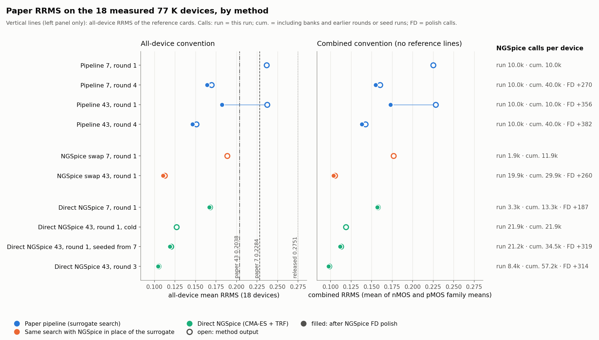
Sources (21 files)
data/processed/cold_loop/full_r1/manifest.jsondata/processed/cold_loop/full_r4/manifest.jsondata/processed/cold_loop/seven_r1/manifest.jsondata/processed/cold_loop/seven_r4/manifest.jsonout/cold_loop/full/round_1/extract/summary.jsonout/cold_loop/full/round_4/extract/summary.jsonout/cold_loop/seven/round_1/extract/summary.jsonout/cold_loop/seven/round_4/extract/summary.jsonout/research/ngspice_direct/full_r1_direct_cold/summary.jsonout/research/ngspice_direct/full_r1_direct_seeded/summary.jsonout/research/ngspice_direct/full_r3_direct/summary.jsonout/research/ngspice_direct/seven_r1_direct/summary.jsonout/research/polished/direct43_fd/real/summary.jsonout/research/polished/direct43_r3_fd/real/summary.jsonout/research/polished/direct7_fd/real/summary.jsonout/research/polished/pipe43_r1_fd/real/summary.jsonout/research/polished/pipe43_r4_fd/real/summary.jsonout/research/polished/pipe_r4_fd/real/summary.jsonout/research/polished/swap_full_r1_fd/real/summary.jsonout/research/swap_search/full_round_1/summary.jsonout/research/swap_search/seven_round_1/summary.json
| method | stage | all-device | combined | nMOS | pMOS | NGSpice calls/device (this run) | NGSpice calls/device (cumulative) | failed devices | all-device, valid devices only | all-device, penalized |
|---|---|---|---|---|---|---|---|---|---|---|
| Pipeline 7, round 1 | method output | 0.2367 | 0.2251 | 0.1211 | 0.3291 | 10,009 | 10,009 | 0 | 0.2367 | 0.2367 |
| NGSpice swap 7, round 1 | method output | 0.1887 | 0.1767 | 0.0683 | 0.2850 | 1,911 | 11,911 | 0 | 0.1887 | 0.1887 |
| Pipeline 43, round 1 | method output | 0.2375 | 0.2281 | 0.1435 | 0.3128 | 10,009 | 10,009 | 1 | 0.2395 | 0.2920 |
| Pipeline 43, round 1 | + NGSpice FD | 0.1824 | 0.1730 | 0.0881 | 0.2579 | 356 | 10,364 | 1 | 0.1853 | 0.2373 |
| NGSpice swap 43, round 1 | method output | 0.1125 | 0.1053 | 0.0410 | 0.1696 | 19,854 | 29,854 | 0 | 0.1125 | 0.1125 |
| NGSpice swap 43, round 1 | + NGSpice FD | 0.1106 | 0.1036 | 0.0407 | 0.1664 | 260 | 30,114 | 0 | 0.1106 | 0.1106 |
| Direct NGSpice 43, round 1, cold | method output | 0.1269 | 0.1186 | 0.0444 | 0.1929 | 21,882 | 21,882 | 0 | 0.1269 | 0.1269 |
- all-device = mean over 18 devices; combined = mean of the nMOS (8) and pMOS (10) family means.
- NGSpice calls per device: 'this run' is the run's own count (pipeline: bank simulations of that round plus NGSpice validation of candidates; +FD rows: FD polish only). 'cumulative' adds every bank used for starts or training and every earlier round or seed run named in the summary/spec provenance.
- Reference rows: all-device values are the paper's reported values; combined/nMOS/pMOS from out/research/reference_scores.json.
- failed dev. = devices with an included (frozen-inclusion) metric curve that failed to simulate; their stored RRMS averages only the surviving curves, so it is not a valid paper RRMS (upstream rrmsCalc.py gives NaN). The all-device/combined/family columns are the stored values; valid-only = all-device mean over the valid devices; penalized = every device, failed curves at RRMS 10 (ngspice_fit.PENALTY; penalized convention, not the paper metric). Source: cryoml.strict_score.
- Pipeline 43, round 1 (method output): 1 failed device(s): nmos_L0p15_W1p6 (1 included curve(s) non-finite); valid-only all-device 0.2395 over 17 devices, combined 0.2238; penalized all-device 0.2920.
- Pipeline 43, round 1 (+ NGSpice FD): 1 failed device(s): nmos_L0p15_W1p6 (1 included curve(s) non-finite); valid-only all-device 0.1853 over 17 devices, combined 0.1698; penalized all-device 0.2373.
- Pipeline 43, round 4 (method output): 1 failed device(s): nmos_L8_W1p6 (9 included curve(s) non-finite); valid-only all-device 0.1586 over 17 devices, combined 0.1454; penalized all-device 0.6500.
- Pipeline 43, round 4 (+ NGSpice FD): 1 failed device(s): nmos_L8_W1p6 (9 included curve(s) non-finite); valid-only all-device 0.1539 over 17 devices, combined 0.1410; penalized all-device 0.6455.
- Pipeline 43, round 1: the FD run's re-score of its start differs from the method's own score on nmos_L0p15_W1p6 0.2035 vs 1.1832 (own vs FD start); the method-output row uses the method's own score. A large FD-start value is the penalized start objective of a card with failed included curves (see failed dev.).
- Pipeline 43, round 4: the FD run's re-score of its start differs from the method's own score on nmos_L8_W1p6 0.0263 vs 9.0026 (own vs FD start); the method-output row uses the method's own score. A large FD-start value is the penalized start objective of a card with failed included curves (see failed dev.).
Source out/research/report/2026-10-16_baseline_results/tables.md
| headline | failed devices | failed device(s) | stored all-device | stored combined | valid-only all-device | valid-only combined | penalized all-device | penalized combined |
|---|---|---|---|---|---|---|---|---|
| pipeline 43, round 1, raw (swap / misrank / rounds claims) | 1 | nmos_L0p15_W1p6 | 0.2375 | 0.2281 | 0.2395 | 0.2238 | 0.2920 | 0.2894 |
| pipeline 43, round 1, + FD | 1 | nmos_L0p15_W1p6 | 0.1824 | 0.1730 | 0.1853 | 0.1698 | 0.2373 | 0.2347 |
| NGSpice swap 43, round 1 | 0 | none | 0.1125 | 0.1053 | 0.1125 | 0.1053 | 0.1125 | 0.1053 |
| NGSpice swap 43, round 1, + FD | 0 | none | 0.1106 | 0.1036 | 0.1106 | 0.1036 | 0.1106 | 0.1036 |
- Runs audited: 227; runs with failed devices: 16. Inclusion set: out/pdk_baseline/pdk_baseline.json (frozen inclusion).
- stored = the value in the result file: for a failed device, metrics.device_rrms_new averages only the surviving included curves (upstream rrmsCalc.py gives NaN).
- valid-only: mean over devices whose included curves all simulate; n = 18 minus failed devices.
- penalized convention: each failed included curve at RRMS 10 (ngspice_fit.PENALTY); not the paper metric.
- all-device = mean over devices; combined = mean of the nMOS and pMOS family means.
Source out/research/report/2026-10-16_dev_iteration1/tables.md
| device | pipeline raw, before the fix | swap raw | pipeline + FD, corrected card | swap + FD | swap NGSpice calls |
|---|---|---|---|---|---|
nmos_L0p15_W1p6 | 0.2035 † | 0.0243 | 0.0894 | 0.0241 | 19,057 |
nmos_L0p19_W7 | 0.1988 | 0.0212 | 0.0830 | 0.0207 | 15,776 |
nmos_L0p25_W1p6 | 0.1341 | 0.0203 | 0.1038 | 0.0200 | 21,837 |
nmos_L1_W1p6 | 0.1221 | 0.0362 | 0.0552 | 0.0358 | 19,489 |
nmos_L1_W3 | 0.1482 | 0.0439 | 0.0640 | 0.0437 | 7,654 |
nmos_L8_W1p6 | 0.0649 | 0.0259 | 0.0476 | 0.0258 | 20,694 |
nmos_L20_W0p64 | 0.1425 | 0.0515 | 0.0888 | 0.0513 | 19,182 |
nmos_L100_W100 | 0.1339 | 0.1049 | 0.1289 | 0.1045 | 15,414 |
pmos_L0p35_W0p55 | 0.5048 | 0.4213 | 0.4714 | 0.4132 | 24,374 |
pmos_L0p35_W1p6 | 0.3508 | 0.2102 | 0.2259 | 0.2025 | 6,342 |
pmos_L0p35_W5 | 0.3307 | 0.1192 | 0.2990 | 0.1189 | 21,303 |
pmos_L0p5_W0p42 | 0.2582 | 0.1480 | 0.2409 | 0.1417 | 21,716 |
pmos_L0p5_W0p64 | 0.3659 | 0.2044 | 0.3039 | 0.2024 | 19,871 |
pmos_L2_W5 | 0.2599 | 0.1018 | 0.1849 | 0.1003 | 29,009 |
pmos_L4_W7 | 0.2051 | 0.0824 | 0.1164 | 0.0815 | 21,169 |
pmos_L8_W0p84 | 0.3416 | 0.1627 | 0.3234 | 0.1620 | 20,023 |
pmos_L8_W1p6 | 0.3318 | 0.1426 | 0.2981 | 0.1394 | 26,632 |
pmos_L8_W5 | 0.1789 | 0.1036 | 0.1151 | 0.1024 | 27,831 |
| mean (all-device) | 0.2395 ‡ (1 failed) | 0.1125 | 0.1800 | 0.1106 | 19,854 |
| mean, penalized | 0.2920 | 0.1125 | 0.1800 | 0.1106 |
- pipeline raw, before the fix = the pipeline's own score of the card it selected before the fix (as in the summary tables). With the final selection rerun with failed-curve rejection only
nmos_L0p15_W1p6changes, to 0.2159; the mean is 0.2382 (out/research/pipe_fixed/full_r1/summary.md). - pipeline + FD, corrected card: FD polish of the card from the final selection rerun with failed-curve rejection (
out/research/polished/pipe43_r1_fixed_fd). - † an included metric curve of this device failed to simulate: the value averages only the surviving curves and is not a valid paper RRMS. ‡ mean over the valid devices only. Penalized row: every device, each failed curve at RRMS 10 (penalized convention, not the paper metric;
cryoml.strict_score).
Sources out/research/swap_search/full_round_1/summary.json out/research/polished/pipe43_r1_fixed_fd/real/summary.json out/research/polished/swap_full_r1_fd/real/summary.json
Caveats and open checks
- Correction (logged 2026-10-16 22:18): the pipeline's final selection was rerun for rounds 1 and 4 with the same surrogates and the rule that rejects candidates with failed included curves (
out/research/pipe_fixed/full_r1,out/research/pipe_fixed/full_r4). Rounds 2–3 were not rerun. The round-4 box comes from the round-3 pick made before the fix. - Values before the fix, pipeline 43 round 1, all-device (combined): raw stored 0.2375 (0.2281), valid-only 0.2395 (0.2238) over 17 devices, penalized 0.2920 (0.2894); + FD stored 0.1824 (0.1730), valid-only 0.1853 (0.1698), penalized 0.2373 (0.2347); 1 failed device (
nmos_L0p15_W1p6). NGSpice swap over the same 17 devices: 0.1176. Difference from the swap, raw: 0.1250 stored, 0.1219 over the 17 valid devices (out/research/audit/failed_curves.json). - Dropped-curve bug:
metrics.device_rrms_newaveraged only the finite included curves, so a device whose included metric curve failed to simulate was stored with the mean of its surviving curves (upstreamrrmsCalc.pygives NaN for that device), while the FD polish scored the same start with the penalized objective (RRMS 10 per failed curve). This gave the FD-start mismatches 0.2035 vs 1.1832 (pipeline 43 round 1,nmos_L0p15_W1p6, 1 of 10 included curves failed) and 0.0263 vs 9.0026 (pipeline 43 round 4,nmos_L8_W1p6, 9 of 10 failed). Fix:cryoml.strict_scoremarks such devices as failed and every report gives the failed-device count, the mean over valid devices and the penalized mean next to the stored value (commit 15d1f3e);polish_cards.pyscores its start withfinal_scoreand records failed included curves (8302a9d);metrics.device_rrms_newnow returns NaN for a device with a non-finite or missing included curve and the pipeline's NGSpice validation sorts such candidates last (a0e1e97). Result files written before the fix keep their stored values;out/research/audit/failed_curves.jsonrecomputes the three values for 227 runs, 16 of which have a failed device. - Not a matched-budget comparison: the swap uses 19,854 NGSpice calls per device in this run against 10,009 for the pipeline (bank and validation). Matched-budget curves come from the DEV comparison.
- These runs used the real devices before the DEV/TEST protocol was defined; under the protocol the real devices are TEST data.
Source files
scripts/research/swap_search.pyscripts/research/polish_cards.pyscripts/research/cold_loop.pyout/research/swap_search/full_round_1/summary.jsonout/research/swap_search/seven_round_1/summary.jsonout/cold_loop/full/round_1/extract/summary.jsonout/research/polished/swap_full_r1_fd/real/summary.jsonout/research/polished/pipe43_r1_fd/real/summary.jsondocs/RESEARCH_LOOP.mdout/research/audit/failed_curves.jsonout/research/pipe_fixed/full_r1/summary.jsonout/research/polished/pipe43_r1_fixed_fd/real/summary.json
verifiedThe round-1 43-parameter surrogate scores its own picks better than the direct-fit cards on 16 of 18 devices; NGSpice scores them the other way.16 of 18 devices opposite ordering; surrogate 0.2474 vs 0.5074, NGSpice 0.2382 vs 0.1269 (all-device); picks from the final selection rerun with failed-curve rejection (17 of 18 with the picks made before the fix)
What it is
Question: does the surrogate order candidate cards the way NGSpice orders them, in the region where good cards are?
Two card sets per device are scored by the frozen round-1 surrogate and by NGSpice: the pipeline's final picks, and the cold direct NGSpice 43-parameter fits (CMA-ES + TRF, full_r1_direct_cold) in the same box. Paper RRMS, frozen inclusion, mean over the 18 measured devices.
What we did
scripts/research/surrogate_gap.py(inference only; NGSpice scores taken from the existing summaries) →out/research/surrogate_gap_full_round_1.json.- Figure from
scripts/research/report_figs.py --topic baseline_results --date 2026-10-16. - Corrected picks:
methods.surrogate_fd.surrogate_rrmsandrrmsinout/research/pipe_fixed/full_r1/ml_<device>.json, scored by the same round-1 surrogate; direct-fit values fromout/research/surrogate_gap_full_round_1.json. For the 17 unchanged picks the surrogate values agree with the gap file to within 3e-6.
Result
| quantity | value | convention | source |
|---|---|---|---|
| Pipeline picks: surrogate-predicted RRMS | 0.2474 | all-device; picks from the final selection rerun with failed-curve rejection | out/research/pipe_fixed/full_r1/ml_*.json |
| Pipeline picks: NGSpice RRMS | 0.2382 | all-device; picks from the final selection rerun with failed-curve rejection | out/research/pipe_fixed/full_r1/summary.md |
| Direct-fit cards: surrogate-predicted RRMS | 0.5074 | all-device | out/research/surrogate_gap_full_round_1.json |
| Direct-fit cards: NGSpice RRMS | 0.1269 | all-device | out/research/surrogate_gap_full_round_1.json |
| Devices with opposite ordering | 16 / 18 | surrogate prefers pipeline pick, NGSpice prefers direct card; nmos_L0p15_W1p6 is not counted: its corrected pick has surrogate RRMS 0.8238 vs 0.7435 for the direct card | out/research/pipe_fixed/full_r1/ml_*.json out/research/surrogate_gap_full_round_1.json |
| Seven parameters, round 1: own picks, surrogate vs NGSpice | 0.235 / 0.2367 | all-device | docs/RESEARCH_LOOP.md |
The figure and the per-device table use the picks made before the fix (out/research/surrogate_gap_full_round_1.json). They differ from the corrected picks only on nmos_L0p15_W1p6.
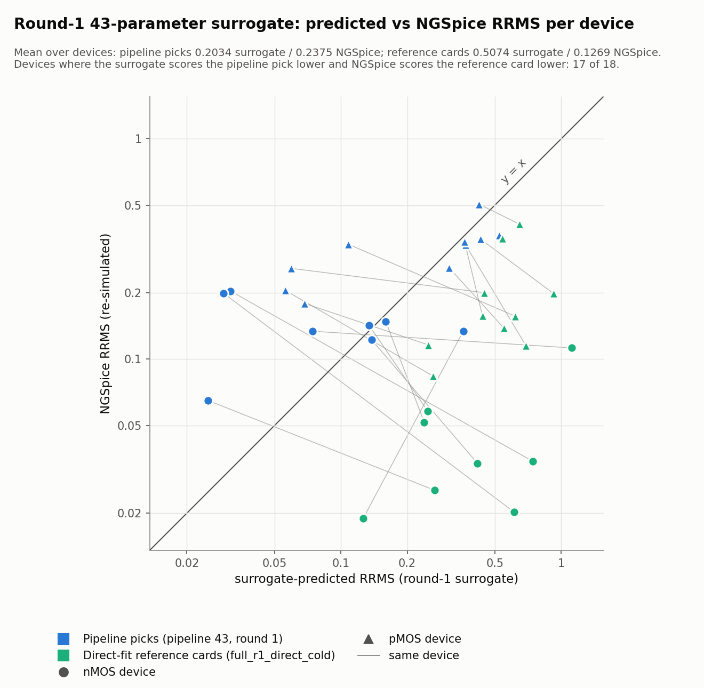
Sources (3 files)
out/research/surrogate_gap_full_round_1.jsonout/research/ngspice_direct/full_r1_direct_cold/summary.jsonout/cold_loop/full/round_1/extract/summary.json
| device | pick, surrogate | pick, NGSpice | direct, surrogate | direct, NGSpice | direct, max |local| |
|---|---|---|---|---|---|
nmos_L0p15_W1p6 | 0.0316 | 0.2035 † | 0.7435 | 0.0344 | 0.9996 |
nmos_L0p19_W7 | 0.0294 | 0.1988 | 0.6116 | 0.0202 | 0.9999 |
nmos_L0p25_W1p6 | 0.3595 | 0.1341 | 0.1263 | 0.0190 | 1.0000 |
nmos_L1_W1p6 | 0.1381 | 0.1221 | 0.4169 | 0.0337 | 1.0000 |
nmos_L1_W3 | 0.1598 | 0.1482 | 0.2389 | 0.0517 | 1.0000 |
nmos_L8_W1p6 | 0.0250 | 0.0649 | 0.2666 | 0.0254 | 0.9985 |
nmos_L20_W0p64 | 0.1341 | 0.1425 | 0.2476 | 0.0582 | 1.0000 |
nmos_L100_W100 | 0.0744 | 0.1339 | 1.1128 | 0.1124 | 1.0000 |
pmos_L0p35_W0p55 | 0.4233 | 0.5048 | 0.6461 | 0.4098 | 1.0000 |
pmos_L0p35_W1p6 | 0.4295 | 0.3508 | 0.9229 | 0.1984 | 0.9999 |
pmos_L0p35_W5 | 0.3674 | 0.3307 | 0.6918 | 0.1150 | 1.0000 |
pmos_L0p5_W0p42 | 0.0594 | 0.2582 | 0.4485 | 0.2002 | 1.0000 |
pmos_L0p5_W0p64 | 0.5237 | 0.3659 | 0.5408 | 0.3536 | 0.9993 |
pmos_L2_W5 | 0.3096 | 0.2599 | 0.5495 | 0.1382 | 0.9984 |
pmos_L4_W7 | 0.0559 | 0.2051 | 0.2624 | 0.0836 | 1.0000 |
pmos_L8_W0p84 | 0.3639 | 0.3416 | 0.4388 | 0.1576 | 0.9998 |
pmos_L8_W1p6 | 0.1083 | 0.3318 | 0.6196 | 0.1564 | 0.9998 |
pmos_L8_W5 | 0.0684 | 0.1789 | 0.2490 | 0.1161 | 1.0000 |
| mean (all-device) | 0.2034 | 0.2395 ‡ (1 failed) | 0.5074 | 0.1269 | 0.9997 |
| mean, penalized | 0.2034 | 0.2920 | 0.5074 | 0.1269 |
- † an included metric curve of this device failed to simulate: the value averages only the surviving curves and is not a valid paper RRMS. ‡ mean over the valid devices only. Penalized row: every device, each failed curve at RRMS 10 (penalized convention, not the paper metric;
cryoml.strict_score).
Source out/research/surrogate_gap_full_round_1.json
Caveats and open checks
- Correction (logged 2026-10-16 22:18): the pipeline's final selection was rerun for rounds 1 and 4 with the same surrogates and the rule that rejects candidates with failed included curves (
out/research/pipe_fixed/full_r1,out/research/pipe_fixed/full_r4). Rounds 2–3 were not rerun. The round-4 box comes from the round-3 pick made before the fix. - Before the fix, with the picks then stored: 17 of 18 devices with opposite ordering; picks surrogate 0.2034, NGSpice 0.2375 stored, which includes 1 device with a failed included curve (
nmos_L0p15_W1p6; valid-only 0.2395 over 17). - The direct-fit cards sit on the box faces (max |local| ≈ 1), where the Latin-hypercube bank is sparse and about 40% of round-1 bank samples did not converge.
- At seven parameters the surrogate's prediction for its own picks matched NGSpice (0.235 vs 0.2367); the swap shows that this did not hold for the cards it did not pick.
- Larger surrogates and neural operators:
arch_full_r1finished; with six architectures the surrogate ranks the direct-fit card better on 5 to 8 of 18 devices (arch-ablation). Learning curves (archlc_full_r1): arch-lc.
Source files
scripts/research/surrogate_gap.pyout/research/surrogate_gap_full_round_1.jsonout/research/ngspice_direct/full_r1_direct_cold/summary.jsonout/cold_loop/full/round_1/extract/summary.jsondocs/RESEARCH_LOOP.mdout/research/pipe_fixed/full_r1/summary.json
verifiedWith six surrogate architectures trained on the same round-1 43-parameter cache and used in the same search, the end-to-end all-device RRMS on the 18 measured devices is 0.2274 to 0.2549; the same search with NGSpice in place of the surrogate gives 0.1125.0.2274–0.2549 vs 0.1125 all-device, raw; end-to-end search with each of 6 surrogate architectures vs the same search with NGSpice in place of the surrogate; 43 parameters, round-1 box, 18 measured devices; diagnostic ablation, not used for method selection
What it is
Question: does a different or larger surrogate architecture, trained on the same data with the same recipe, change the end-to-end result of the pipeline's search on the measured devices?
Architectures (src/cryoml/operators.py): paper MLP (4 × 1024 hidden, 5.3M trainable parameters), wide MLP (6 × 2048, 25.3M), residual MLP (27.3M), large residual MLP (138.6M), DeepONet (branch residual MLP, trunk over the bias point, 25.8M) and an FNO conditioned along each curve's sweep axis (4.1M).
Fixed across architectures: the round-1 43-parameter cache (out/cold_loop/full/round_1/cache); the per-device train/validation/test split of the pipeline (seed 20260818, 85,853 training samples); the loss (standardized signed-log MSE + curve-normalized linear Huber); the recipe (AdamW, cosine schedule, early stopping on validation loss, at most 200 epochs, FNO at most 80); and the search (fps.finite_difference_surrogate_extract: 8 starts, TRF max_nfev 100, diff_step 0.02, regularization 1e-4, NGSpice validation of the top 4 endpoints, the first 4 starts and the published fallback).
Measured per architecture: test loss and curve NRMSE on held-out bank samples; surrogate-predicted and NGSpice RRMS of three reference card sets (the stored pipeline r1 picks, direct NGSpice cold, direct NGSpice seeded); and the end-to-end search on the 18 measured devices, each selected card re-simulated in NGSpice.
Reference: the same search code with NGSpice as the evaluator (scripts/research/swap_search.py, out/research/swap_search/full_round_1).
What we did
arch_full_r1:scripts/research/surrogate_arch_study.pyon the round-1 cache and bank (out/cold_loop/full/round_1,data/processed/cold_loop/full_r1), six architectures, training then the end-to-end search for each; 2026-10-16 22:26 to 2026-10-17 07:12 (31,596 s).- Report batch
2026-10-17_arch_study:scripts/research/report_figs.py --topic arch_study --date 2026-10-17(topicarch*added to the script for this batch). - Failed-curve check: the end-to-end records store rrms without per_curve. The run started after commit a0e1e97 (2026-10-16 21:52), with which
metrics.device_rrms_newreturns NaN for a device with a non-finite or missing included curve, so a finite stored rrms is a valid device. All 108 records (6 architectures × 18 devices) are finite.
Result
| quantity | value | convention | source |
|---|---|---|---|
| End-to-end all-device RRMS, 6 architectures | 0.2274 (DeepONet) to 0.2549 (FNO) | all-device, raw, NGSpice re-simulation of the selected card; 0 failed devices in each run | out/research/surrogate_arch/full_round_1/paper_mlp_f1.json out/research/surrogate_arch/full_round_1/paper_mlp_wide_f1.json out/research/surrogate_arch/full_round_1/resmlp_f1.json out/research/surrogate_arch/full_round_1/resmlp_large_f1.json out/research/surrogate_arch/full_round_1/deeponet_f1.json out/research/surrogate_arch/full_round_1/fno_f1.json |
| End-to-end combined RRMS, 6 architectures | 0.2193 (DeepONet) to 0.2448 (FNO) | combined (mean of the nMOS and pMOS family means) | out/research/surrogate_arch/full_round_1/paper_mlp_f1.json out/research/surrogate_arch/full_round_1/paper_mlp_wide_f1.json out/research/surrogate_arch/full_round_1/resmlp_f1.json out/research/surrogate_arch/full_round_1/resmlp_large_f1.json out/research/surrogate_arch/full_round_1/deeponet_f1.json out/research/surrogate_arch/full_round_1/fno_f1.json |
| Same search, NGSpice in place of the surrogate | 0.1125 (combined 0.1053) | all-device (combined), raw | out/research/swap_search/full_round_1/summary.json |
| Pipeline r1, corrected (cold-loop round-1 surrogate) | 0.2382 (combined 0.2289) | all-device (combined), raw; final selection rerun with failed-curve rejection | out/research/pipe_fixed/full_r1/summary.json |
| Test loss on held-out bank samples, 6 architectures | 0.0259 (FNO) to 0.0331 (paper MLP); pipeline round-1 surrogate 0.0337 | pipeline forward loss, same split (seed 20260818) | out/research/surrogate_arch/full_round_1/paper_mlp_f1.json out/research/surrogate_arch/full_round_1/paper_mlp_wide_f1.json out/research/surrogate_arch/full_round_1/resmlp_f1.json out/research/surrogate_arch/full_round_1/resmlp_large_f1.json out/research/surrogate_arch/full_round_1/deeponet_f1.json out/research/surrogate_arch/full_round_1/fno_f1.json out/research/pipe_fixed/full_r1/summary.json |
| Devices where the surrogate ranks the direct-fit card better than the stored pipeline pick | 5 to 8 of 18; NGSpice 18 of 18; pipeline round-1 surrogate 1 of 18 (stored picks), 2 of 18 (corrected picks) | direct-fit card = direct NGSpice cold (full_r1_direct_cold) | out/research/surrogate_arch/full_round_1/paper_mlp_f1.json out/research/surrogate_arch/full_round_1/paper_mlp_wide_f1.json out/research/surrogate_arch/full_round_1/resmlp_f1.json out/research/surrogate_arch/full_round_1/resmlp_large_f1.json out/research/surrogate_arch/full_round_1/deeponet_f1.json out/research/surrogate_arch/full_round_1/fno_f1.json out/research/surrogate_gap_full_round_1.json |
| Mean absolute score error at the reference cards | 0.2427 (FNO) to 0.3429 (large ResMLP) | |surrogate-predicted RRMS − NGSpice RRMS|, 18 devices × 3 card sets | out/research/surrogate_arch/full_round_1/paper_mlp_f1.json out/research/surrogate_arch/full_round_1/paper_mlp_wide_f1.json out/research/surrogate_arch/full_round_1/resmlp_f1.json out/research/surrogate_arch/full_round_1/resmlp_large_f1.json out/research/surrogate_arch/full_round_1/deeponet_f1.json out/research/surrogate_arch/full_round_1/fno_f1.json |
| Devices where the selected card is a bank start | 8 to 16 of 18 (paper MLP 11, wide MLP 13, ResMLP 8, large ResMLP 9, DeepONet 9, FNO 16); NGSpice swap 0 of 18 | selected_candidate_kind lhc_start; otherwise an FD endpoint | out/research/surrogate_arch/full_round_1/paper_mlp_f1.json out/research/surrogate_arch/full_round_1/paper_mlp_wide_f1.json out/research/surrogate_arch/full_round_1/resmlp_f1.json out/research/surrogate_arch/full_round_1/resmlp_large_f1.json out/research/surrogate_arch/full_round_1/deeponet_f1.json out/research/surrogate_arch/full_round_1/fno_f1.json out/research/swap_search/full_round_1/summary.json |
| End-to-end search wall time | 122 s (paper MLP) to 3,722 s (large ResMLP) | 18 devices, 10 single-thread CPU workers | out/research/surrogate_arch/full_round_1/paper_mlp_f1.json out/research/surrogate_arch/full_round_1/paper_mlp_wide_f1.json out/research/surrogate_arch/full_round_1/resmlp_f1.json out/research/surrogate_arch/full_round_1/resmlp_large_f1.json out/research/surrogate_arch/full_round_1/deeponet_f1.json out/research/surrogate_arch/full_round_1/fno_f1.json |
End-to-end all-device RRMS across the six architectures: 0.2274 (DeepONet) to 0.2549 (FNO). The same search with NGSpice in place of the surrogate: 0.1125. Difference from the swap: 0.1149 (DeepONet) to 0.1424 (FNO).
Ordered by test loss, lowest first: FNO, ResMLP, large ResMLP, wide MLP, DeepONet, paper MLP. Ordered by end-to-end all-device RRMS, lowest first: DeepONet, ResMLP, paper MLP, large ResMLP, wide MLP, FNO. FNO has the lowest test loss (0.0259) and end-to-end RRMS 0.2549 (rank 6 of 6).
Each architecture ranks the direct-fit card better than the stored pipeline pick on 5 to 8 of 18 devices; NGSpice ranks it better on 18 of 18. The pipeline's own round-1 surrogate does so on 1 of 18 (stored picks) and 2 of 18 (corrected picks).
Median curve NRMSE on held-out bank samples: 0.0911 (DeepONet) to 0.1283 (large ResMLP). Mean curve NRMSE: 3,409 (paper MLP) to 282,767 (FNO).
The selected card is a bank start, not an FD endpoint, on 8 to 16 of 18 devices (FNO: 16). The NGSpice swap selects an FD endpoint on 18 of 18.
Paper MLP retrained in this study (4 × 1024 hidden): 0.2348. The pipeline's own round-1 surrogate (4 × 1024 hidden, trained in the cold loop, same split and seed): 0.2382 with the corrected selection, 0.2375 stored.
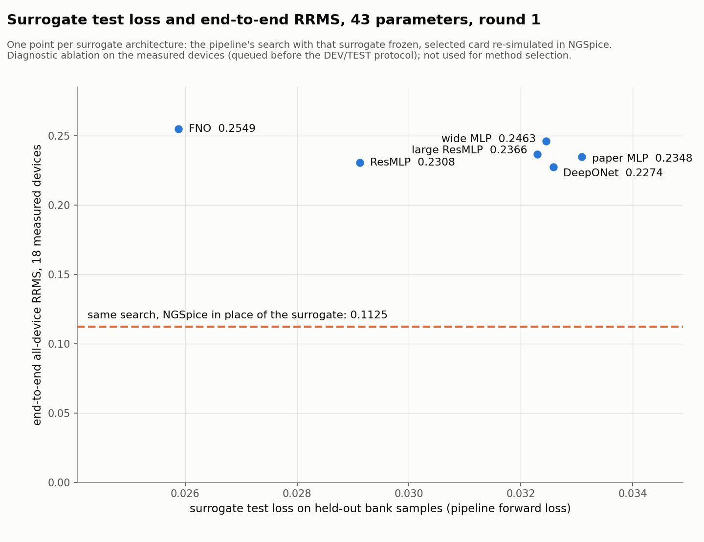
Sources (7 files)
out/research/surrogate_arch/full_round_1/paper_mlp_f1.jsonout/research/surrogate_arch/full_round_1/paper_mlp_wide_f1.jsonout/research/surrogate_arch/full_round_1/resmlp_f1.jsonout/research/surrogate_arch/full_round_1/resmlp_large_f1.jsonout/research/surrogate_arch/full_round_1/deeponet_f1.jsonout/research/surrogate_arch/full_round_1/fno_f1.jsonout/research/swap_search/full_round_1/summary.json
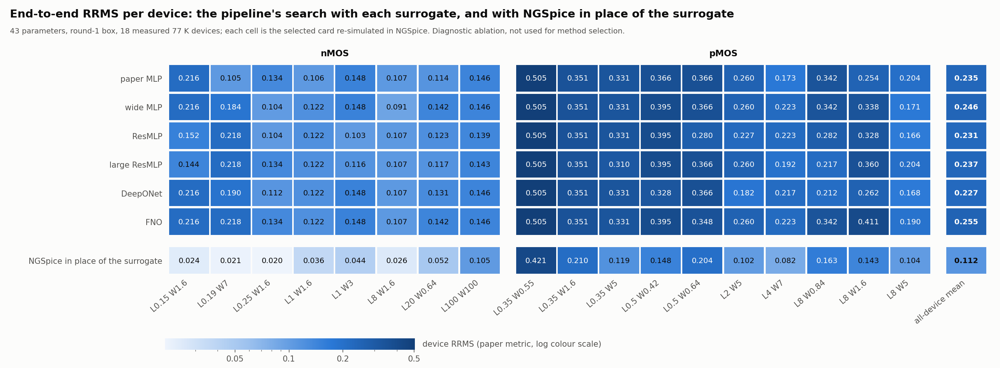
Sources (7 files)
out/research/surrogate_arch/full_round_1/paper_mlp_f1.jsonout/research/surrogate_arch/full_round_1/paper_mlp_wide_f1.jsonout/research/surrogate_arch/full_round_1/resmlp_f1.jsonout/research/surrogate_arch/full_round_1/resmlp_large_f1.jsonout/research/surrogate_arch/full_round_1/deeponet_f1.jsonout/research/surrogate_arch/full_round_1/fno_f1.jsonout/research/swap_search/full_round_1/summary.json
| surrogate in the search | trainable parameters | epochs | train time (s) | test loss | curve NRMSE, median | curve NRMSE, mean | mean absolute score error at the reference cards | devices where the direct fit ranks better: surrogate | devices where the direct fit ranks better: NGSpice | end-to-end all-device | end-to-end combined | end-to-end nMOS | end-to-end pMOS | failed devices (strict) | devices where a bank start is selected |
|---|---|---|---|---|---|---|---|---|---|---|---|---|---|---|---|
| paper MLP | 5,294,078 | 190 | 787 | 0.0331 | 0.1068 | 3,409 | 0.2879 | 6 | 18 | 0.2348 | 0.2248 | 0.1345 | 0.3151 | 0 | 11 |
| wide MLP | 25,270,270 | 200 | 3,337 | 0.0324 | 0.1003 | 11,144 | 0.3173 | 6 | 18 | 0.2463 | 0.2361 | 0.1441 | 0.3281 | 0 | 13 |
| ResMLP | 27,343,870 | 131 | 2,442 | 0.0291 | 0.1042 | 6,420 | 0.2936 | 8 | 18 | 0.2308 | 0.2211 | 0.1334 | 0.3087 | 0 | 8 |
| large ResMLP | 138,592,254 | 105 | 9,180 | 0.0323 | 0.1283 | 3,629 | 0.3429 | 5 | 18 | 0.2366 | 0.2267 | 0.1376 | 0.3158 | 0 | 9 |
| DeepONet | 25,775,358 | 165 | 4,025 | 0.0326 | 0.0911 | 151,287 | 0.2516 | 6 | 18 | 0.2274 | 0.2193 | 0.1465 | 0.2921 | 0 | 9 |
| FNO | 4,056,833 | 80 | 5,791 | 0.0259 | 0.1006 | 282,767 | 0.2427 | 6 | 18 | 0.2549 | 0.2448 | 0.1541 | 0.3355 | 0 | 16 |
| Reference: NGSpice in place of the surrogate | — | — | — | — | — | — | — | — | — | 0.1125 | 0.1053 | 0.0410 | 0.1696 | 0 | 0 |
| Reference: pipeline r1, stored | — | 192 | 927 | 0.0337 | — | — | — | 1 | 18 | 0.2375 | 0.2281 | 0.1435 | 0.3128 | 1 | 10 |
| Reference: pipeline r1, corrected | — | 192 | 927 | 0.0337 | — | — | — | 2 | 18 | 0.2382 | 0.2289 | 0.1450 | 0.3128 | 0 | 11 |
- Training: every architecture uses the same cache (out/cold_loop/full/round_1/cache), the same per-device train/validation/test split as the pipeline (seed 20260818; 85,853 training samples), the same loss (standardized signed-log MSE + curve-normalized linear Huber) and the same recipe (AdamW, cosine schedule, early stopping on validation loss, at most 200 epochs; FNO at most 80). time (s) = training wall time.
- loss = the pipeline's forward loss on the held-out bank samples. curve NRMSE = per held-out sample, mean over the 11 curves of RMSE / max|I| of the simulated curve (floor 1e-3 of the sample's largest curve); an emulator diagnostic, not the paper RRMS. The mean curve NRMSE is 2.8e+04 to 2.8e+06 times the median.
- |score err.| = mean over 18 devices and 3 reference cards (stored pipeline r1 pick, direct NGSpice cold, direct NGSpice seeded) of |surrogate-predicted RRMS − NGSpice RRMS|. direct fit ranked better = devices where the direct NGSpice cold card (out/research/ngspice_direct/full_r1_direct_cold) has a lower RRMS than the stored pipeline r1 pick, by the surrogate's prediction and by NGSpice. The stored pipeline r1 picks were made before the failed-curve fix; the pick for nmos_L0p15_W1p6 has 1 of 10 included curves failed, and its NGSpice reference value 0.2035 averages the surviving curves.
- End-to-end = the pipeline's search (fps.finite_difference_surrogate_extract) with the trained surrogate frozen: 8 starts, TRF max_nfev 100, diff_step 0.02, regularization 0.0001, NGSpice validation of the top 4 endpoints, the first 4 starts and the published fallback; RRMS of the selected card re-simulated in NGSpice on the measured 77 K data. start picked = devices whose selected card is one of the bank starts (selected_candidate_kind lhc_start) rather than an FD endpoint. all-device = mean over 18 devices; combined = mean of the nMOS (8) and pMOS (10) family means.
- Reference rows: NGSpice in place of the surrogate = the same search code with NGSpice as the evaluator (out/research/swap_search/full_round_1). pipeline r1, stored = the cold-loop round-1 extraction (out/cold_loop/full/round_1/extract). pipeline r1, corrected = its final selection rerun with the same surrogate and failed-curve rejection (out/research/pipe_fixed/full_r1). The pipeline rows' training columns are the cold-loop round-1 forward model (same split and seed, 10,730 test samples); its ranking counts come from out/research/surrogate_gap_full_round_1.json and the pipe_fixed records.
- End-to-end records of the architecture study store rrms without per_curve. The run started 2026-10-16 22:26 (out/research/done.txt), after commit a0e1e97 (21:52), with which metrics.device_rrms_new returns NaN for a device whose frozen-inclusion curve is non-finite or missing and the pipeline's NGSpice validation sorts such candidates last. A finite stored rrms is therefore counted as a valid device and a non-finite one as failed.
- Reference: pipeline r1, stored (method output): 1 failed device(s): nmos_L0p15_W1p6 (1 included curve(s) non-finite); valid-only all-device 0.2395 over 17 devices, combined 0.2238; penalized all-device 0.2920.
- The end-to-end search in this study ran on the 18 measured devices; it was queued before the DEV/TEST protocol was fixed. It is reported as a diagnostic ablation and is not used for method selection.
Source out/research/report/2026-10-17_arch_study/tables.md
Caveats and open checks
- The end-to-end search in this study ran on the 18 measured devices; it was queued before the DEV/TEST protocol was fixed. It is reported as a diagnostic ablation and is not used for method selection.
- The ranking columns use the stored pipeline r1 picks, made before the failed-curve fix: the pick for
nmos_L0p15_W1p6has 1 of 10 included curves failed, and its NGSpice reference value 0.2035 averages the surviving curves. - One training run per architecture (seed 20260818); run-to-run variation is not measured.
- Curve NRMSE is an emulator diagnostic on bank samples, not the paper RRMS; its mean is 2.8e4 to 2.8e6 times its median.
- The failed-curve status of the end-to-end records is inferred from the metric rule in force when the run started (commit a0e1e97); the records carry no per_curve.
- Not a matched-budget comparison: the swap uses 19,854 NGSpice calls per device; each surrogate search uses the 10k-sample round-1 bank (shared by all architectures) and at most 9 NGSpice validation simulations per device.
- Learning curves at 1/8, 1/4 and 1/2 of the training data (
archlc_full_r1) finished 2026-10-19 10:05: arch-lc.
Source files
scripts/research/surrogate_arch_study.pysrc/cryoml/operators.pyout/research/surrogate_arch/full_round_1/paper_mlp_f1.jsonout/research/surrogate_arch/full_round_1/paper_mlp_wide_f1.jsonout/research/surrogate_arch/full_round_1/resmlp_f1.jsonout/research/surrogate_arch/full_round_1/resmlp_large_f1.jsonout/research/surrogate_arch/full_round_1/deeponet_f1.jsonout/research/surrogate_arch/full_round_1/fno_f1.jsonout/research/swap_search/full_round_1/summary.jsonout/research/pipe_fixed/full_r1/summary.jsonout/research/surrogate_gap_full_round_1.jsonout/research/logs/arch_full_r1.logout/research/report/2026-10-17_arch_study/README.md
verifiedLearning curves (paper MLP, DeepONet, FNO at 1/8, 1/4, 1/2 and all of 85,853 training samples): test loss falls 4.8–5.4× from the smallest to the full set, while end-to-end all-device RRMS on the 18 measured devices moves from 0.249–0.259 to 0.227–0.255; the same search with NGSpice gives 0.1125.0.2274–0.2549 at 85,853 samples; 0.2494–0.2588 at 10,732 all-device, end-to-end search with each surrogate, selected card re-simulated in NGSpice; NGSpice in place of the surrogate 0.1125; diagnostic ablation
What it is
Question: does more training data for the forward surrogate change the end-to-end result of the pipeline's search on the measured devices?
Same cache, split (seed 20260818), loss, recipe and search as arch-ablation. The training subset at fraction f is the first round(f × 85,853) indices of one fixed permutation of the training split; validation and test splits are unchanged.
What we did
archlc_full_r1:scripts/research/surrogate_arch_study.pywith architectures paper_mlp, deeponet, fno and train fractions 0.125, 0.25, 0.5 onout/cold_loop/full/round_1anddata/processed/cold_loop/full_r1(arguments read from the report files and the log; the queue line is not kept after a job finishes). First attempt 2026-10-18 03:38, killed (rc 143) after 10,138 s; restarted 2026-10-19 09:01, finished 10:05 (3,878 s); the restart skipped the eight finished reports and trainedfno_f0.5.- The fraction-1 points are the
arch_full_r1reports of the same script, split and seed. - Report batch
2026-10-19_explore_e1_lc(scripts/research/plot_explore_e1_lc.py).
Result
| quantity | value | convention | source |
|---|---|---|---|
| Test loss, 10,732 → 85,853 samples | paper MLP 0.1579 → 0.0331; DeepONet 0.1683 → 0.0326; FNO 0.1394 → 0.0259 | pipeline forward loss on held-out bank samples | out/research/surrogate_arch/full_round_1/paper_mlp_f0.125.json out/research/surrogate_arch/full_round_1/paper_mlp_f0.25.json out/research/surrogate_arch/full_round_1/paper_mlp_f0.5.json out/research/surrogate_arch/full_round_1/paper_mlp_f1.json out/research/surrogate_arch/full_round_1/deeponet_f0.125.json out/research/surrogate_arch/full_round_1/deeponet_f0.25.json out/research/surrogate_arch/full_round_1/deeponet_f0.5.json out/research/surrogate_arch/full_round_1/deeponet_f1.json out/research/surrogate_arch/full_round_1/fno_f0.125.json out/research/surrogate_arch/full_round_1/fno_f0.25.json out/research/surrogate_arch/full_round_1/fno_f0.5.json out/research/surrogate_arch/full_round_1/fno_f1.json |
| End-to-end all-device, fractions 1/8, 1/4, 1/2, 1 | paper MLP 0.2588, 0.2599, 0.2504, 0.2348; DeepONet 0.2581, 0.2497, 0.2360, 0.2274; FNO 0.2494, 0.2549, 0.2468, 0.2549 | all-device, 18 devices, 0 failed in every run | out/research/surrogate_arch/full_round_1/paper_mlp_f0.125.json out/research/surrogate_arch/full_round_1/paper_mlp_f0.25.json out/research/surrogate_arch/full_round_1/paper_mlp_f0.5.json out/research/surrogate_arch/full_round_1/paper_mlp_f1.json out/research/surrogate_arch/full_round_1/deeponet_f0.125.json out/research/surrogate_arch/full_round_1/deeponet_f0.25.json out/research/surrogate_arch/full_round_1/deeponet_f0.5.json out/research/surrogate_arch/full_round_1/deeponet_f1.json out/research/surrogate_arch/full_round_1/fno_f0.125.json out/research/surrogate_arch/full_round_1/fno_f0.25.json out/research/surrogate_arch/full_round_1/fno_f0.5.json out/research/surrogate_arch/full_round_1/fno_f1.json |
| End-to-end combined, fractions 1/8, 1/4, 1/2, 1 | paper MLP 0.2483, 0.2493, 0.2405, 0.2248; DeepONet 0.2477, 0.2401, 0.2269, 0.2193; FNO 0.2397, 0.2448, 0.2372, 0.2448 | mean of the nMOS (8) and pMOS (10) family means | out/research/surrogate_arch/full_round_1/paper_mlp_f0.125.json out/research/surrogate_arch/full_round_1/paper_mlp_f0.25.json out/research/surrogate_arch/full_round_1/paper_mlp_f0.5.json out/research/surrogate_arch/full_round_1/paper_mlp_f1.json out/research/surrogate_arch/full_round_1/deeponet_f0.125.json out/research/surrogate_arch/full_round_1/deeponet_f0.25.json out/research/surrogate_arch/full_round_1/deeponet_f0.5.json out/research/surrogate_arch/full_round_1/deeponet_f1.json out/research/surrogate_arch/full_round_1/fno_f0.125.json out/research/surrogate_arch/full_round_1/fno_f0.25.json out/research/surrogate_arch/full_round_1/fno_f0.5.json out/research/surrogate_arch/full_round_1/fno_f1.json |
| Same search, NGSpice in place of the surrogate | 0.1125 (combined 0.1053) | all-device (combined) | out/research/swap_search/full_round_1/summary.json |
| Devices where the selected card is a bank start, fractions 1/8 → 1 | paper MLP 17, 18, 13, 11; DeepONet 17, 15, 13, 9; FNO 15, 16, 15, 16 | of 18; selected_candidate_kind lhc_start | out/research/surrogate_arch/full_round_1/paper_mlp_f0.125.json out/research/surrogate_arch/full_round_1/paper_mlp_f0.25.json out/research/surrogate_arch/full_round_1/paper_mlp_f0.5.json out/research/surrogate_arch/full_round_1/paper_mlp_f1.json out/research/surrogate_arch/full_round_1/deeponet_f0.125.json out/research/surrogate_arch/full_round_1/deeponet_f0.25.json out/research/surrogate_arch/full_round_1/deeponet_f0.5.json out/research/surrogate_arch/full_round_1/deeponet_f1.json out/research/surrogate_arch/full_round_1/fno_f0.125.json out/research/surrogate_arch/full_round_1/fno_f0.25.json out/research/surrogate_arch/full_round_1/fno_f0.5.json out/research/surrogate_arch/full_round_1/fno_f1.json |
| Mean absolute score error at the reference cards, 1/8 → 1 | paper MLP 1.099 → 0.288; DeepONet 1.057 → 0.252; FNO 0.918 → 0.243 | |surrogate-predicted − NGSpice RRMS|, 18 devices × 3 card sets | out/research/surrogate_arch/full_round_1/paper_mlp_f0.125.json out/research/surrogate_arch/full_round_1/paper_mlp_f0.25.json out/research/surrogate_arch/full_round_1/paper_mlp_f0.5.json out/research/surrogate_arch/full_round_1/paper_mlp_f1.json out/research/surrogate_arch/full_round_1/deeponet_f0.125.json out/research/surrogate_arch/full_round_1/deeponet_f0.25.json out/research/surrogate_arch/full_round_1/deeponet_f0.5.json out/research/surrogate_arch/full_round_1/deeponet_f1.json out/research/surrogate_arch/full_round_1/fno_f0.125.json out/research/surrogate_arch/full_round_1/fno_f0.25.json out/research/surrogate_arch/full_round_1/fno_f0.5.json out/research/surrogate_arch/full_round_1/fno_f1.json |
Test loss decreases monotonically with training-set size for all three architectures. End-to-end all-device RRMS decreases for paper MLP (0.2588 → 0.2348) and DeepONet (0.2581 → 0.2274) and does not decrease for FNO (0.2494 → 0.2549). At every size the end-to-end RRMS is 0.11–0.15 above the NGSpice swap (0.1125).
The number of devices whose selected card is a bank start, not an FD endpoint, falls with data for paper MLP (17 → 11) and DeepONet (17 → 9) and stays at 15–16 for FNO. A selected bank start is the same card for every surrogate.
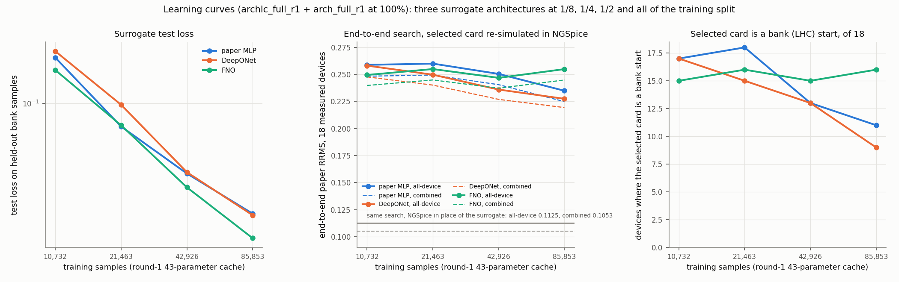
Sources (13 files)
out/research/surrogate_arch/full_round_1/deeponet_f0.125.jsonout/research/surrogate_arch/full_round_1/deeponet_f0.25.jsonout/research/surrogate_arch/full_round_1/deeponet_f0.5.jsonout/research/surrogate_arch/full_round_1/deeponet_f1.jsonout/research/surrogate_arch/full_round_1/fno_f0.125.jsonout/research/surrogate_arch/full_round_1/fno_f0.25.jsonout/research/surrogate_arch/full_round_1/fno_f0.5.jsonout/research/surrogate_arch/full_round_1/fno_f1.jsonout/research/surrogate_arch/full_round_1/paper_mlp_f0.125.jsonout/research/surrogate_arch/full_round_1/paper_mlp_f0.25.jsonout/research/surrogate_arch/full_round_1/paper_mlp_f0.5.jsonout/research/surrogate_arch/full_round_1/paper_mlp_f1.jsonout/research/swap_search/full_round_1/summary.json
| surrogate | train fraction | training samples | epochs | train time (s) | test loss | curve NRMSE, median | mean absolute score error | devices where the surrogate ranks the direct fit better | end-to-end all-device | end-to-end combined | end-to-end nMOS | end-to-end pMOS | failed devices | devices where a bank start is selected |
|---|---|---|---|---|---|---|---|---|---|---|---|---|---|---|
| paper MLP | 0.125 | 10,732 | 131 | 76 | 0.1579 | 0.3803 | 1.0987 | 7/18 | 0.2588 | 0.2483 | 0.1541 | 0.3425 | 0 | 17 |
| paper MLP | 0.25 | 21,463 | 200 | 216 | 0.0792 | 0.2321 | 0.5648 | 8/18 | 0.2599 | 0.2493 | 0.1541 | 0.3446 | 0 | 18 |
| paper MLP | 0.5 | 42,926 | 189 | 396 | 0.0495 | 0.1514 | 0.4061 | 7/18 | 0.2504 | 0.2405 | 0.1511 | 0.3299 | 0 | 13 |
| paper MLP | 1 | 85,853 | 190 | 787 | 0.0331 | 0.1068 | 0.2879 | 6/18 | 0.2348 | 0.2248 | 0.1345 | 0.3151 | 0 | 11 |
| DeepONet | 0.125 | 10,732 | 86 | 285 | 0.1683 | 0.4189 | 1.0573 | 7/18 | 0.2581 | 0.2477 | 0.1541 | 0.3412 | 0 | 17 |
| DeepONet | 0.25 | 21,463 | 152 | 968 | 0.0985 | 0.2894 | 1.0026 | 9/18 | 0.2497 | 0.2401 | 0.1535 | 0.3266 | 0 | 15 |
| DeepONet | 0.5 | 42,926 | 200 | 2,468 | 0.0501 | 0.1419 | 0.5307 | 6/18 | 0.2360 | 0.2269 | 0.1451 | 0.3086 | 0 | 13 |
| DeepONet | 1 | 85,853 | 165 | 4,025 | 0.0326 | 0.0911 | 0.2516 | 6/18 | 0.2274 | 0.2193 | 0.1465 | 0.2921 | 0 | 9 |
| FNO | 0.125 | 10,732 | 80 | 982 | 0.1394 | 0.3471 | 0.9177 | 7/18 | 0.2494 | 0.2397 | 0.1523 | 0.3272 | 0 | 15 |
| FNO | 0.25 | 21,463 | 80 | 1,649 | 0.0802 | 0.2359 | 0.5837 | 4/18 | 0.2549 | 0.2448 | 0.1541 | 0.3355 | 0 | 16 |
| FNO | 0.5 | 42,926 | 80 | 3,546 | 0.0431 | 0.1495 | 0.3579 | 10/18 | 0.2468 | 0.2372 | 0.1514 | 0.3230 | 0 | 15 |
| FNO | 1 | 85,853 | 80 | 5,791 | 0.0259 | 0.1006 | 0.2427 | 6/18 | 0.2549 | 0.2448 | 0.1541 | 0.3355 | 0 | 16 |
| NGSpice in place of the surrogate | — | — | — | — | — | — | — | 18/18 | 0.1125 | 0.1053 | 0.0410 | 0.1696 | 0 | 0 |
- Script: scripts/research/surrogate_arch_study.py on out/cold_loop/full/round_1 (cache) and data/processed/cold_loop/full_r1 (bank), seed 20260818. The training subset at fraction f is the first round(f × 85,853) indices of one fixed permutation of the pipeline's training split; validation and test splits are unchanged.
- Fractions 1/8, 1/4, 1/2: queue job archlc_full_r1 (first attempt 2026-10-18 03:38, killed rc=143 after 10,138 s; restarted 2026-10-19 09:01, finished 10:05; the restart skipped finished reports and trained fno_f0.5). Fraction 1: the reports of arch_full_r1 (2026-10-16/17), same script, split and seed.
- Recipe: AdamW lr 1e-3, weight decay 1e-5, cosine schedule, batch 512, early stopping (patience 25) on validation loss; at most 200 epochs (FNO 80).
- End-to-end = fps.finite_difference_surrogate_extract with the trained surrogate frozen: 8 starts, TRF max_nfev 100, diff_step 0.02, regularization 1e-4, NGSpice validation of the top 4 endpoints, the first 4 starts and the published fallback; the selected card is re-simulated in NGSpice on the measured 77 K data. One fixed method per row; no per-device selection across rows.
- all-device = mean over 18 devices; combined = mean of the nMOS (8) and pMOS (10) family means. bank start = devices whose selected card is one of the LHC bank starts (selected_candidate_kind lhc_start) rather than an FD endpoint; bank starts are the same for every surrogate, so rows with many bank-start selections share per-device values.
- The end-to-end search ran on the 18 measured devices; it is a diagnostic ablation and is not used for method selection.
Source out/research/report/2026-10-19_explore_e1_lc/tables.md
Caveats and open checks
- The end-to-end search ran on the 18 measured devices; it is a diagnostic ablation and is not used for method selection.
- One training run per cell (seed 20260818); run-to-run variation is not measured.
- The bank used for starts is the same 10k-sample round-1 bank for every row; only surrogate training data size varies.
Source files
scripts/research/surrogate_arch_study.pyout/research/surrogate_arch/full_round_1/paper_mlp_f0.125.jsonout/research/surrogate_arch/full_round_1/paper_mlp_f0.25.jsonout/research/surrogate_arch/full_round_1/paper_mlp_f0.5.jsonout/research/surrogate_arch/full_round_1/paper_mlp_f1.jsonout/research/surrogate_arch/full_round_1/deeponet_f0.125.jsonout/research/surrogate_arch/full_round_1/deeponet_f0.25.jsonout/research/surrogate_arch/full_round_1/deeponet_f0.5.jsonout/research/surrogate_arch/full_round_1/deeponet_f1.jsonout/research/surrogate_arch/full_round_1/fno_f0.125.jsonout/research/surrogate_arch/full_round_1/fno_f0.25.jsonout/research/surrogate_arch/full_round_1/fno_f0.5.jsonout/research/surrogate_arch/full_round_1/fno_f1.jsonout/research/swap_search/full_round_1/summary.jsonout/research/logs/archlc_full_r1.logout/research/report/2026-10-19_explore_e1_lc/README.md
verifiedThe tandem inverse network fits held-out simulated devices (median 0.0258) but not the measured devices (median 0.6344); the round-1 flow posterior has large errors on both.0.0258 sim vs 0.6344 real median device RRMS, tandem autoencoder A, seven parameters, round 4
What it is
Question: do inverse networks (I–V → parameters) trained on simulated curves transfer to measured curves?
Held-out simulated devices: three sets, one card per paper device drawn log-uniformly from the round-4 seven-parameter box (clipped into the round-1 box), simulated on that device's measured bias grid. No bank contains them. A true card scores exactly 0; a true card scores a median RRMS of about 0.45 against the real device it imitates. CRYOML_TARGET_OVERRIDE substitutes them for the measurements; bias grids, frozen inclusion and the metric are unchanged.
A: tandem autoencoder (inverse_autoencoder), run in every cold round. B: conditional flow-matching posterior and a 16-head winner-takes-all model in a round-independent log-multiplier coordinate, trained with discrepancy-transfer augmentation (another device's measured-vs-closest-simulation signed-log gap). B evaluation: K samples → NGSpice → best → optional NGSpice polish.
What we did
scripts/research/posterior_study.py(B),scripts/research/cold_loop.py(A),scripts/research/make_sim_targets.py(targets),scripts/research/simgap_table.py(table), 2026-10-15.- Uniform FD for every method:
scripts/research/polish_cards.py(about 250–300 NGSpice calls per device), 2026-10-15 17:30 onward.
Result
| quantity | value | convention | source |
|---|---|---|---|
| A tandem, round 4: real all-device / median | 0.6857 / 0.6344 | raw | docs/RESEARCH_LOOP.md |
| A tandem, round 4: sim all-device / median | 32.41 / 0.0258 | raw, mean over 3 simulated sets | docs/RESEARCH_LOOP.md |
| B flow r1, best of 256 + polish: real / sim median | 0.2670 / 0.1839 | median device | docs/RESEARCH_LOOP.md |
| B flow pooled r1–4, best of 256, + FD: real all-device / sim median | 0.1728 / 0.0001 | after uniform FD | docs/RESEARCH_LOOP.md |
| Paper pipeline 7, round 4: real / sim median | 0.1585 / 0.0141 | median device, raw | docs/RESEARCH_LOOP.md |
| method | real all-device | real combined | real median | sim all-device | sim median | param error (sim) |
|---|---|---|---|---|---|---|
| cold paper pipeline, round 4 (surrogate + FD) | 0.1697 | 0.1602 | 0.1585 | 0.0157 | 0.0141 | ×1.04 |
| A: tandem autoencoder, round 4 | 0.6857 | 0.6859 | 0.6344 | 32.41* | 0.0258 | ×1.05 |
| direct NGSpice, seven, round-1 box | 0.1676 | 0.1575 | 0.1460 | 0.0191 | 0.0000 | ×1.00 |
| B: flow r1, best of 256 + polish | 0.3719 | 0.3514 | 0.2670 | 0.3812 | 0.1839 | ×1.91 |
| B: WTA r1, best of 16 + polish | 0.5122 | 0.4912 | 0.3509 | 0.6932 | 0.2468 | ×2.09 |
- * one device (nmos L1/W3) reaches RRMS 500–1200 in two sets; the median device is not affected.
Source docs/RESEARCH_LOOP.md
| method + NGSpice FD | real all-device | real combined | real median | sim all-device | sim median | FD calls/device |
|---|---|---|---|---|---|---|
| B flow pooled r1–4, best of 256 | 0.1728 | 0.1632 | 0.1662 | 0.0942 | 0.0001 | 248 |
| B flow r1, best of 256 | 0.2209 | 0.2067 | 0.1664 | 0.1546 | 0.0000 | 239 |
| B WTA pooled, best of 16 | 0.2268 | 0.2242 | 0.1658 | 0.0697 | 0.0000 | 251 |
| A tandem, round 4 | 0.2270 | 0.2245 | 0.1746 | 0.6112* | 0.0000 | 298 |
| B WTA r1, best of 16 | 0.2587 | 0.2396 | 0.1512 | 0.1108 | 0.0001 | 248 |
- * the nmos L1/W3 outlier from A's raw prediction remains after FD.
Source docs/RESEARCH_LOOP.md
Caveats and open checks
- B's round-1 flow does not invert the ×100 round-1 prior on simulated devices either (sim median 0.1839); pooling rounds 1–4 and FD bring its sim median to 0.0001.
- B evaluation spends NGSpice calls (about 700 per device for best of 256 + polish); it is not a single forward pass.
- The pipeline's simulated column reuses its round-4 surrogate and bank, centred on the real-device fits, with targets drawn in that box; it is optimistic relative to a full four-round run per target.
Source files
scripts/research/posterior_study.pysrc/cryoml/posterior.pyscripts/research/make_sim_targets.pyscripts/research/simgap_table.pyout/research/simgap_table.jsonout/research/sim_targets/docs/RESEARCH_LOOP.md
in progressHybrid trust-region fit (surrogate model with an NGSpice value and Jacobian correction at each centre): smoke runs on two DEV targets; full DEV runs are queued.0.0267, 0.2532 paper RRMS at 1000 NGSpice calls on set_0 nmos_L1_W1p6, pmos_L0p35_W1p6; no-model control 0.0282, 0.0703
What it is
Question: with the surrogate as the trust-region model and NGSpice correcting it to first order at each centre, how fast does RRMS fall per NGSpice call compared with the same loop without a surrogate and with CMA-ES?
r_c(z) = r_s(z) + [r_f(z_c) - r_s(z_c)] + [J_f(z_c) - J_s(z_c)] (z - z_c)Source scripts/research/hybrid_tr.py
r_s, J_s: frozen round surrogate and its forward-mode Jacobian. r_f: one NGSpice call per trial point. J_f: forward differences in local coordinates, step 1e-3, from one batched NGSpice process; a probe that fails or exceeds 2× the centre's RRMS + 0.05 is retried with the opposite step. Objective: the pipeline's per-curve normalized residuals plus prior rows (reg 1e-4); its sum of squares is mean(curve RRMS²). --model none sets r_s = 0: Gauss-Newton trust region on NGSpice, the no-ML control.
Budget accounting: every NGSpice call counts, Jacobian probes included; the search stops at the budget; the final card is scored by one fresh simulation. Starts: 4 diverse bank starts, equal share of the remaining calls each (or successive halving). Box: full round-1 43-parameter box.
What we did
- Smoke runs 2026-10-16 14:46–14:58 under
out/research/dev/smoke/, on two DEV targets from simulated set 0, at budgets of 300 and 1000 calls. - Full runs queued:
hybrid_tr_full_r1_surrogate,hybrid_tr_full_r1_none,hybrid_tr_full_r4_surrogate,hybrid_tr_full_r4_none, and the two successive-halving runs on round 1. No matching jobs in the queue or the run log.
Sources
out/research/queue.txtout/research/done.txt- DEV results for
hybrid_surrogateandhybrid_noneat 500–5000 calls on all 36 targets: see dev-iter1.
Result
| quantity | value | convention | source |
|---|---|---|---|
| Hybrid TR, surrogate, 1000 calls | 0.0267 / 0.2532 | nmos_L1_W1p6 / pmos_L0p35_W1p6, set_0 | out/research/dev/smoke/hybrid_surrogate_B1000/ |
| Hybrid TR, no model, 1000 calls | 0.0282 / 0.0703 | same targets | out/research/dev/smoke/hybrid_none_B1000/ |
| Bank oracle, 0 calls | 0.1124 / 0.3362 | same targets | out/research/dev/oracle_reference.json |
| arm | node | model | budget | calls used (nmos / pmos) | nmos_L1_W1p6 | pmos_L0p35_W1p6 |
|---|---|---|---|---|---|---|
| bank oracle | reference | – | 0 | 0 / 0 | 0.1124 | 0.3362 |
| hybrid TR | hybrid | surrogate | 300 | 279 / 295 | 0.0414 | 0.3182 |
| hybrid TR | hybrid | none | 300 | 281 / 295 | 0.0458 | 0.2401 |
| hybrid TR | hybrid | surrogate | 1000 | 991 / 993 | 0.0267 | 0.2532 |
| hybrid TR | hybrid | none | 1000 | 989 / 999 | 0.0282 | 0.0703 |
| sketched TR, k = 8 | n1a | surrogate | 300 | 294 / 293 | 0.0318 | 0.2407 |
| sketched TR, k = 8 | n1a | none | 300 | 299 / 295 | 0.0360 | 0.1008 |
| sketched TR, k = 8 | n1a | surrogate | 1000 | 988 / 997 | 0.0240 | 0.0768 |
| sketched TR, k = 8 | n1a | none | 1000 | 1000 / 992 | 0.0296 | 0.0146 |
| anytime, presearch + racing | n1b | surrogate | 300 | 286 / 260 | 0.0325 | 0.0985 |
| anytime, presearch, equal split | n1b | surrogate | 300 | 285 / – | 0.0402 | – |
| anytime, racing | n1b | none | 300 | 281 / 294 | 0.0458 | 0.2098 |
| CMA-ES + TRF | n1c | none | 300 | 286 / – | 0.0326 | – |
| lq-CMA-ES | n1c | none | 200 | 200 / – | 0.1914 | – |
Sources out/research/dev/smoke/ out/research/dev/oracle_reference.json out/research/dev/smoke/compare.md
Caveats and open checks
- Two targets, partial records (no
summary.json);dev_compare.pymarks these runs PARTIAL. They are not used for method selection. - On
pmos_L0p35_W1p6at 1000 calls the surrogate arm (0.2532) ends above the no-model control (0.0703). - The n1c verifier re-ran CMA-ES + TRF at 300 calls: 0.0390 (fixed run) and 0.0326 (rerun prefix) on the same target (
out/research/dev/verify_n1c/compare.md).
Source files
scripts/research/hybrid_tr.pysrc/cryoml/trust_region.pyscripts/research/sketch_tr.pyscripts/research/anytime_tr.pyscripts/research/cmaes_trace.pyscripts/research/dev_compare.pyout/research/dev/arms.jsonout/research/dev/smoke/out/research/queue.txt
in progressOn the 36 simulated DEV targets, the sketched-Jacobian trust region (n1a) reaches pooled all-device RRMS 0.0313 with the surrogate and 0.0370 without it at 500 NGSpice calls per target, and 0.0091 and 0.0021 at 5000.B500 0.0313 / 0.0370 · B5000 0.0091 / 0.0021 pooled all-device mean paper RRMS, 36 DEV targets, sketch_surrogate_k8 / sketch_none_k8
What it is
Question: at a fixed number of NGSpice calls per target, which fitting arm gives the lowest paper RRMS on simulated targets, and does the surrogate model lower it compared with the same code without a surrogate?
n1a, sketched Jacobians (scripts/research/sketch_tr.py): the trust-region loop of hybrid_tr with the 43-call FD Jacobian replaced at most centres by k directional NGSpice probes (Gauss-Newton step, top singular vectors of the transported prior, one Gaussian direction) plus secant and Broyden updates; a full FD Jacobian at the first centre, every 6 iterations and on prior mismatch; subproblem max_nfev 30. Arms: sketch_surrogate_k8 (surrogate model r_s), sketch_none_k8 (r_s = 0), the k screen sketch_surrogate_k4 and sketch_surrogate_k16 (B5000 only), and the parity controls sketch_fullfd_surrogate and sketch_fullfd_none (full FD Jacobian at every centre, max_nfev 30, B5000 only).
n1b, anytime racing (scripts/research/anytime_tr.py, src/cryoml/racing.py): anytime_sur_presearch_equal runs 8 zero-call surrogate TRF presearches from bank starts, validates them with 8 NGSpice calls, and splits the budget equally over the 2 best endpoints and 2 bank starts without restarts; anytime_sur_presearch_race uses the presearch starts, allocates calls by predicted reduction per NGSpice call, drops runs by an optimistic bound and restarts from surrogate-proposed points; anytime_none_race uses 4 bank starts, Gauss-Newton trust regions, the same racing and drops, and bank-start restarts, with no presearch.
n1c, CMA-ES call-trace baselines (scripts/research/cmaes_trace.py): cmaes_trf (CMA-ES with sigma0 0.3 for 60% of the budget, then bounded TRF with diff_step 1e-3 and regularization 1e-4) and lq_cmaes (lq-CMA-ES, 9 restarts), on the same oracle, bank start, objective and call accounting as the trust-region arms.
Earlier arms in the same table: hybrid_surrogate and hybrid_none (scripts/research/hybrid_tr.py, full FD Jacobian at every centre, subproblem max_nfev 100; see icml-hybrid).
DEV protocol: 36 targets, set_0 and set_1 × 18 devices. Each target is the NGSpice I–V of one seven-parameter card per device, drawn log-uniformly from the seven-parameter round-4 box and clipped into the round-1 box (seed 777001), simulated on the device's measured bias grid with no noise, so a zero-residual card exists in the fitted box (well-specified). Every arm fits in the full round-1 43-parameter box. Every NGSpice call counts, Jacobian probes included; each budget (500, 1000, 2000, 5000 calls per target) is a separate run; the final card is scored by one fresh NGSpice simulation. dev_compare.py checks 18 records per set, calls within budget, fresh RRMS equal to the trace value, target_override and the bank-oracle identity of each set; it takes no minimum over arms.
What we did
- 86 queue jobs
dev_*from 2026-10-16 16:26 to 22:06 (out/research/done.txt): the round-1 pipeline and its FD polish on both sets, every registered arm at its budgets on set_0 and set_1, the retries listed below and thedev_compareruns. dev_sketch_sur_k4_B5000_s1anddev_anytime_sur_race_B5000_s0ended rc=1 withnumpy.linalg.LinAlgError: SVD did not convergein SciPy's bounded TRF subproblem, and again in the first retries (_retry). Commits c9ff24e (sketch_tr: fall back when the prior-Jacobian SVD does not converge) and 15d1f3e (trust_region and anytime presearch: a LinAlgError or ValueError in the subproblem ends that start) handle the error. Second retries:dev_sketch_sur_k4_B5000_s1_retry2rc=0;dev_anytime_sur_race_B5000_s0_retry2rc=0.scripts/research/dev_compare.py(queue jobdev_compare2, rc=0) wroteout/research/dev/compare.md,compare.jsonandcompare_curves.png; hard checks all pass.- Report batch
2026-10-16_dev_iteration1:scripts/research/report_figs.py --topic dev_iteration1 --date 2026-10-16; the paired table recomputes differences, win rates and bootstrap CIs from the per-target values incompare.json.
Result
| quantity | value | convention | source |
|---|---|---|---|
| n1a sketch_surrogate_k8 | 0.0313 / 0.0221 / 0.0148 / 0.0091 | B500 / B1000 / B2000 / B5000, pooled all-device mean | out/research/dev/compare.json |
| n1a sketch_none_k8 (no surrogate) | 0.0370 / 0.0193 / 0.0092 / 0.0021 | B500 / B1000 / B2000 / B5000 | out/research/dev/compare.json |
| n1a k screen: k = 4 / k = 16 (surrogate) | 0.0090 / 0.0080 | B5000 | out/research/dev/compare.json |
| n1a full-FD parity controls: surrogate / no model | 0.0101 / 0.0052 | B5000 | out/research/dev/compare.json |
| n1b anytime_sur_presearch_race | 0.0287 / 0.0173 / 0.0134 / 0.0070 | B500 / B1000 / B2000 / B5000 | out/research/dev/compare.json |
| n1b anytime_none_race (no surrogate) | 0.0428 / 0.0193 / 0.0112 / 0.0082 | B500 / B1000 / B2000 / B5000 | out/research/dev/compare.json |
| n1b anytime_sur_presearch_equal | 0.0173 / 0.0083 | B1000 / B5000 | out/research/dev/compare.json |
| n1c cmaes_trf | 0.0565 / 0.0337 / 0.0239 / 0.0109 | B500 / B1000 / B2000 / B5000 | out/research/dev/compare.json |
| n1c lq_cmaes | 0.1814 / 0.1576 / 0.1386 / 0.0939 | B500 / B1000 / B2000 / B5000 | out/research/dev/compare.json |
| hybrid_surrogate / hybrid_none (hybrid TR, full FD Jacobian) | 0.0463 / 0.0313 / 0.0193 / 0.0114 · 0.0579 / 0.0316 / 0.0169 / 0.0058 | B500 / B1000 / B2000 / B5000 each | out/research/dev/compare.json |
| Paired sketch_surrogate_k8 − sketch_none_k8 | B500 -0.0058 [-0.0126, 0.0003], win rate 0.67 [0.50, 0.81]; B1000 0.0028 [-0.0027, 0.0085], win rate 0.53 [0.36, 0.69]; B5000 0.0069 [0.0024, 0.0133], win rate 0.25 [0.11, 0.39] | mean difference [bootstrap 95% CI], win rate of the surrogate arm [95% CI] | out/research/report/2026-10-16_dev_iteration1/tables.md |
| Paired hybrid_surrogate − hybrid_none | B500 -0.0116 [-0.0230, -0.0024], win rate 0.64 [0.47, 0.78]; B1000 -0.0003 [-0.0129, 0.0138], win rate 0.64 [0.47, 0.78]; B5000 0.0056 [0.0018, 0.0112], win rate 0.28 [0.14, 0.44] | mean difference [95% CI], win rate [95% CI] | out/research/report/2026-10-16_dev_iteration1/tables.md |
| Paired anytime_sur_presearch_race − anytime_none_race | B500 -0.0141 [-0.0258, -0.0045], win rate 0.78 [0.64, 0.92]; B5000 -0.0012 [-0.0056, 0.0025], win rate 0.47 [0.31, 0.64] | mean difference [95% CI], win rate [95% CI] | out/research/report/2026-10-16_dev_iteration1/tables.md |
| References: bank oracle / pipeline r1 / pipeline r1 + FD | 0.2046 at 0 mean NGSpice calls · 0.1590 at 9 mean NGSpice calls (2 failed targets; valid-only 0.1554 over 34, penalized 0.2109) · 0.0802 at 376 mean NGSpice calls (2 failed targets; valid-only 0.0775 over 34, penalized 0.1326) | pooled all-device mean, 36 targets | out/research/dev/compare.json |
Lowest pooled mean at B500: anytime_sur_presearch_race 0.0287; at B5000: sketch_none_k8 0.0021.
sketch_surrogate_k8 minus sketch_none_k8: B500 -0.0058 [-0.0126, 0.0003], win rate 0.67 [0.50, 0.81]; B1000 0.0028 [-0.0027, 0.0085], win rate 0.53 [0.36, 0.69]; B2000 0.0057 [1.4e-05, 0.0127], win rate 0.44 [0.28, 0.61]; B5000 0.0069 [0.0024, 0.0133], win rate 0.25 [0.11, 0.39].
hybrid_surrogate minus hybrid_none: B500 -0.0116 [-0.0230, -0.0024], win rate 0.64 [0.47, 0.78]; B1000 -0.0003 [-0.0129, 0.0138], win rate 0.64 [0.47, 0.78]; B2000 0.0025 [-0.0022, 0.0070], win rate 0.56 [0.39, 0.72]; B5000 0.0056 [0.0018, 0.0112], win rate 0.28 [0.14, 0.44].
sketch_none_k8 minus hybrid_none: B500 -0.0209 [-0.0330, -0.0112], win rate 0.97 [0.92, 1.00]; B5000 -0.0037 [-0.0058, -0.0020], win rate 1.00 [1.00, 1.00].
![Copy of the DEV comparison figure: best-so-far paper RRMS against cumulative NGSpice calls per target on the 36 DEV targets, with the all-device mean (solid line) and median (dashed line) of the arms hybrid_surrogate, hybrid_none, cmaes_trf, lq_cmaes, sketch_surrogate_k8, sketch_none_k8, sketch_surrogate_k4, sketch_surrogate_k16, the fixed-budget run means as dots, and the bank-oracle, pipeline r1 and pipeline r1 + FD references as open markers (the arms sketch_fullfd_surrogate, sketch_fullfd_none, anytime_sur_presearch_equal, anytime_sur_presearch_race, anytime_none_race are not drawn: dev_compare.py's plot has 8 colours and stops after the 8th arm)](figs/2026-10-16_dev_iteration1/01_compare_curves.png)
Sources (2 files)
out/research/dev/compare_curves.pngout/research/dev/compare.json
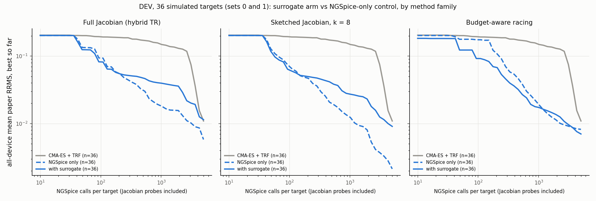
out/research/dev/compare.json via scripts/research/plot_dev_families.py.| node | arm | mode | B500 | B1000 | B2000 | B5000 | AUC log10 | median calls to 0.05 | median calls to 0.01 | failed targets (per budget) |
|---|---|---|---|---|---|---|---|---|---|---|
| hybrid TR | hybrid_surrogate | fixed | 0.0463 | 0.0313 | 0.0193 | 0.0114 | -1.5080 | 122 | 2551 | 0/0/0/0 |
| hybrid TR | hybrid_none | fixed | 0.0579 | 0.0316 | 0.0169 | 0.0058 | -1.5292 | 149 | 1660 | 0/0/0/0 |
| n1c | cmaes_trf | fixed | 0.0565 | 0.0337 | 0.0239 | 0.0109 | -0.9245 | 3152 | 4057 | 0/0/0/0 |
| n1c | lq_cmaes | fixed | 0.1814 | 0.1576 | 0.1386 | 0.0939 | -0.8289 | never | never | 0/0/0/0 |
| n1a | sketch_surrogate_k8 | fixed | 0.0313 | 0.0221 | 0.0148 | 0.0091 | -1.6297 | 66 | 1012 | 0/0/0/0 |
| n1a | sketch_none_k8 | fixed | 0.0370 | 0.0193 | 0.0092 | 0.0021 | -1.7251 | 69 | 630 | 0/0/0/0 |
| n1a | sketch_surrogate_k4 | fixed | — | — | — | 0.0090 | -1.6494 | 85 | 760 | –/–/–/0 |
| n1a | sketch_surrogate_k16 | fixed | — | — | — | 0.0080 | -1.6375 | 76 | 682 | –/–/–/0 |
| n1a | sketch_fullfd_surrogate | fixed | — | — | — | 0.0101 | -1.5582 | 125 | 924 | –/–/–/0 |
| n1a | sketch_fullfd_none | fixed | — | — | — | 0.0052 | -1.5381 | 135 | 1224 | –/–/–/0 |
| n1b | anytime_sur_presearch_equal | fixed | — | 0.0173 | — | 0.0083 | -1.6693 | 125 | 920 | –/0/–/0 |
| n1b | anytime_sur_presearch_race | fixed | 0.0287 | 0.0173 | 0.0134 | 0.0070 | -1.6021 | 206 | 694 | 0/0/0/0 |
| n1b | anytime_none_race | fixed | 0.0428 | 0.0193 | 0.0112 | 0.0082 | -1.4230 | 371 | 1040 | 0/0/0/0 |
- Pooled all-device mean paper RRMS (frozen inclusion) over 36 DEV targets (set_0, set_1, 18 devices each) at fixed cumulative NGSpice budgets per target; every NGSpice call counts, Jacobian probes included. Mode fixed = one run directory per budget, value = one fresh NGSpice score of the final card.
- AUC log10 = per-target mean of log10(max(best-so-far RRMS, 1e-6)) over a 40-point log grid of calls (10 to the largest budget), averaged over targets (lower = lower RRMS earlier).
- Calls to 0.05 / 0.01 = median over targets of the first NGSpice call count at which the best-so-far RRMS is at or below the threshold, from the largest-budget trace; never = the median target does not reach it.
- Failed targets = targets whose final card has a non-finite included metric curve, per budget B500/B1000/B2000/B5000; – = budget not run.
- References: pipeline_r1 0.1590 at 9 mean NGSpice calls; 2 failed target(s), valid-only 0.1554 over 34, penalized 0.2109; pipeline_r1_fd 0.0802 at 376 mean NGSpice calls; 2 failed target(s), valid-only 0.0775 over 34, penalized 0.1326; bank_oracle 0.2046 at 0 mean NGSpice calls.
- Non-PASS checks in compare.json: WARN pipeline_r1: 2 target(s) with failed included curves (stored mean drops them); WARN pipeline_r1_fd: 2 target(s) with failed included curves (stored mean drops them).
Source out/research/report/2026-10-16_dev_iteration1/tables.md
| A vs B | budget | n | mean A | mean B | mean difference A − B | 95% CI | win rate A | win rate 95% CI | W/T/L | failed targets (A, B) |
|---|---|---|---|---|---|---|---|---|---|---|
| sketch_surrogate_k8 vs sketch_none_k8 | B500 | 36 | 0.0313 | 0.0370 | -0.0058 | [-0.0126, 0.0003] | 0.67 | [0.50, 0.81] | 24/1/11 | 0 |
| sketch_surrogate_k8 vs sketch_none_k8 | B1000 | 36 | 0.0221 | 0.0193 | 0.0028 | [-0.0027, 0.0085] | 0.53 | [0.36, 0.69] | 19/0/17 | 0 |
| sketch_surrogate_k8 vs sketch_none_k8 | B2000 | 36 | 0.0148 | 0.0092 | 0.0057 | [1.4e-05, 0.0127] | 0.44 | [0.28, 0.61] | 16/0/20 | 0 |
| sketch_surrogate_k8 vs sketch_none_k8 | B5000 | 36 | 0.0091 | 0.0021 | 0.0069 | [0.0024, 0.0133] | 0.25 | [0.11, 0.39] | 9/0/27 | 0 |
| hybrid_surrogate vs hybrid_none | B500 | 36 | 0.0463 | 0.0579 | -0.0116 | [-0.0230, -0.0024] | 0.64 | [0.47, 0.78] | 23/1/12 | 0 |
| hybrid_surrogate vs hybrid_none | B1000 | 36 | 0.0313 | 0.0316 | -0.0003 | [-0.0129, 0.0138] | 0.64 | [0.47, 0.78] | 23/0/13 | 0 |
| hybrid_surrogate vs hybrid_none | B2000 | 36 | 0.0193 | 0.0169 | 0.0025 | [-0.0022, 0.0070] | 0.56 | [0.39, 0.72] | 20/0/16 | 0 |
| hybrid_surrogate vs hybrid_none | B5000 | 36 | 0.0114 | 0.0058 | 0.0056 | [0.0018, 0.0112] | 0.28 | [0.14, 0.44] | 10/4/22 | 0 |
| anytime_sur_presearch_race vs anytime_none_race | B500 | 36 | 0.0287 | 0.0428 | -0.0141 | [-0.0258, -0.0045] | 0.78 | [0.64, 0.92] | 28/0/8 | 0 |
| anytime_sur_presearch_race vs anytime_none_race | B1000 | 36 | 0.0173 | 0.0193 | -0.0020 | [-0.0080, 0.0041] | 0.61 | [0.44, 0.75] | 22/0/14 | 0 |
| anytime_sur_presearch_race vs anytime_none_race | B2000 | 36 | 0.0134 | 0.0112 | 0.0023 | [-0.0018, 0.0067] | 0.47 | [0.31, 0.64] | 17/3/16 | 0 |
| anytime_sur_presearch_race vs anytime_none_race | B5000 | 36 | 0.0070 | 0.0082 | -0.0012 | [-0.0056, 0.0025] | 0.47 | [0.31, 0.64] | 17/4/15 | 0 |
| sketch_surrogate_k8 vs cmaes_trf | B500 | 36 | 0.0313 | 0.0565 | -0.0252 | [-0.0430, -0.0103] | 0.75 | [0.61, 0.89] | 27/0/9 | 0 |
| sketch_surrogate_k8 vs cmaes_trf | B1000 | 36 | 0.0221 | 0.0337 | -0.0115 | [-0.0267, 0.0010] | 0.58 | [0.42, 0.75] | 21/0/15 | 0 |
| sketch_surrogate_k8 vs cmaes_trf | B2000 | 36 | 0.0148 | 0.0239 | -0.0090 | [-0.0200, -0.0004] | 0.67 | [0.50, 0.81] | 24/1/11 | 0 |
| sketch_surrogate_k8 vs cmaes_trf | B5000 | 36 | 0.0091 | 0.0109 | -0.0018 | [-0.0084, 0.0059] | 0.69 | [0.53, 0.83] | 25/0/11 | 0 |
| sketch_none_k8 vs hybrid_none | B500 | 36 | 0.0370 | 0.0579 | -0.0209 | [-0.0330, -0.0112] | 0.97 | [0.92, 1.00] | 35/0/1 | 0 |
| sketch_none_k8 vs hybrid_none | B1000 | 36 | 0.0193 | 0.0316 | -0.0123 | [-0.0211, -0.0060] | 0.92 | [0.81, 1.00] | 33/0/3 | 0 |
| sketch_none_k8 vs hybrid_none | B2000 | 36 | 0.0092 | 0.0169 | -0.0077 | [-0.0131, -0.0034] | 0.86 | [0.75, 0.97] | 31/1/4 | 0 |
| sketch_none_k8 vs hybrid_none | B5000 | 36 | 0.0021 | 0.0058 | -0.0037 | [-0.0058, -0.0020] | 1.00 | [1.00, 1.00] | 36/0/0 | 0 |
- Per-target values: compare.json arms.<arm>.budgets.<budget>.values (one fresh NGSpice score of each final card). Difference = A − B; negative = A has the lower RRMS.
- Win = A lower than B by more than the tie tolerance max(1e-6, 1% of the larger value) (dev_compare.paired); win rate = wins / n; W/T/L = wins, ties, losses of A.
- 95% CI: percentile bootstrap over targets, 10,000 resamples, seed 0; the mean difference and the win rate use the same resamples.
- failed = targets with a non-finite included curve in A or B at that budget.
Source out/research/report/2026-10-16_dev_iteration1/tables.md
Caveats and open checks
- DEV targets are zero-residual (well-specified), which favours Gauss-Newton end-games without the surrogate. The real and tier-(c) problems are misspecified; a misspecified DEV set (GF180/IHP tier c) is planned.
- The pooled mean weights every target's RRMS equally, so targets with large RRMS move it most;
compare.mdlists the median, geometric mean, worst target and per-set values for every arm and budget. - The bootstrap resamples the 36 targets; each device geometry appears once in each of the two sets.
- These are DEV results only; no TEST run (the 18 measured devices,
set_2) of these arms is reported. - 01_compare_curves.png draws the first 8 arms only; 05_dev_families.png shows the surrogate and NGSpice-only arms of each family with CMA-ES + TRF.
- Iteration 2 (seed replicates, λ arms, DFO-LS-style baseline, tier c misspecified targets) is reported as an ablation in dev-iter2.
Source files
scripts/research/sketch_tr.pysrc/cryoml/sketch_tr.pyscripts/research/anytime_tr.pysrc/cryoml/racing.pyscripts/research/cmaes_trace.pyscripts/research/hybrid_tr.pyscripts/research/dev_compare.pyscripts/research/make_sim_targets.pyout/research/dev/arms.jsonout/research/dev/compare.jsonout/research/dev/compare.mdout/research/sim_targets/truth.jsonout/research/report/2026-10-16_dev_iteration1/README.mdout/research/done.txt
verifiedAblation, DEV iteration 2: on 36 well-specified (tier a) and 36 misspecified sky130c (tier c) simulated targets, no λ-weighted surrogate arm met the pre-registered rules A1-A4, so the n2b λ decision is negative and no TEST run follows; at 5000 NGSpice calls the NGSpice-only sketched trust region has the lowest pooled value on both tiers (tier a RRMS 0.0024, tier c excess over floor 0.0022).λ decision negative · B5000 sketch_none_k8 0.0024 (a) / 0.0022 (c) ablation; pooled mean over 36 DEV targets, seed mean per target; tier a strict paper RRMS, tier c RRMS − per-target floor
What it is
Question: does a per-curve or adaptive surrogate weight λ (n2b: lam_curve_k8, lam_scalar_k8, lam_cusum_k8, lam_radius_k8, hyb_lam_curve) lower the paper RRMS at a fixed NGSpice budget compared with λ = 0 (NGSpice only) and λ = 1 (full surrogate term), on well-specified and on misspecified targets; and how the named DFO-LS-style baseline (dfols_style) compares.
Tier a: out/research/sim_targets set_0 and set_1 (zero-residual targets). Tier c: out/research/sim_targets_sky130c set_0 and set_1 at strength 2 (misspecified; scored as RRMS minus the per-target refit floor from floors.json). 18 devices per set, 36 targets per tier; budgets 500, 1000, 2000, 5000 NGSpice calls per target, Jacobian probes included.
This is an ablation report. Per-target value = mean over the arm's seeds; pre-registered tests: out/research/dev/prereg_iter2.json (C1-C6) and lambda_tr.py PRE_REGISTERED (A1-A4).
What we did
- Seven comparison jobs of 2026-10-17 (
dev_compare_iter2_r,dev_compare_sky130c_r,dev_compare_floor_sky130c_r,dev_compare_iter2_lambda,dev_compare_sky130c_lambda,dev_compare_floor_lambda,dev_lambda_decision) ended rc=1. Causes: the seed-1/2 replicate arms were in the registries before their runs finished; and dev_compare's 'fresh rrms == best_at(trace)' check failed on 14 tier-c pmos_L8_W0p84 records (relative gaps 2.5e-5 to 4.6e-5), where the in-loop best was a Jacobian probe scored in a multi-card altermod NGSpice process after a non-converged card. dev_compare.pynow reports a gap of at most 1e-4 relative on a batched-probe best as a WARN row (fresh RRMS stays the value); other gaps remain FAIL. The seven jobs were rerun on 2026-10-19 with rc=0 (logsout/research/logs/*_rerun.log);dev_stats.py --preregwroteout/research/dev/stats_iter2.- Report batch
2026-10-19_dev_iteration2_ablation:scripts/research/report_figs.py --topic dev_iteration2_ablation --date 2026-10-19.
Result
| quantity | value | convention | source |
|---|---|---|---|
| tier a, sketch_surrogate_k8 / sketch_none_k8 / lam_curve_k8 | B500 0.0334 / 0.0367 / 0.0317 · B5000 0.0082 / 0.0024 / 0.0062 | pooled mean strict RRMS, 3 seeds each | out/research/report/2026-10-19_dev_iteration2_ablation/tables.md |
| tier a, hybrid_surrogate / hybrid_none / hyb_lam_curve | B500 0.0463 / 0.0579 / 0.0447 · B5000 0.0114 / 0.0058 / 0.0050 | pooled mean strict RRMS, 1 seed | out/research/report/2026-10-19_dev_iteration2_ablation/tables.md |
| tier a, dfols_style / dfols_style_1start / cmaes_trf | B500 0.0579 / 0.0461 / 0.0565 · B5000 0.0076 / 0.0056 / 0.0109 | pooled mean strict RRMS | out/research/report/2026-10-19_dev_iteration2_ablation/tables.md |
| tier c, sketch_surrogate_k8 / sketch_none_k8 / lam_curve_k8 | B500 0.0221 / 0.0225 / 0.0200 · B5000 0.0047 / 0.0022 / 0.0039 | pooled mean excess over floor (mean floor 0.0478), 3 seeds each | out/research/report/2026-10-19_dev_iteration2_ablation/tables.md |
| tier c, hybrid_surrogate / hybrid_none / hyb_lam_curve | B500 0.0304 / 0.0401 / 0.0303 · B5000 0.0064 / 0.0041 / 0.0054 | pooled mean excess over floor | out/research/report/2026-10-19_dev_iteration2_ablation/tables.md |
| tier c, dfols_style / dfols_style_1start / cmaes_trf | B500 0.0406 / 0.0329 / 0.0388 · B5000 0.0062 / 0.0055 / 0.0151 | pooled mean excess over floor | out/research/report/2026-10-19_dev_iteration2_ablation/tables.md |
| n2b λ decision | negative; frozen candidate per family: sketch none, hybrid none; TEST run: none (negative result) | pre-registered rules A1-A4 (lambda_tr.py PRE_REGISTERED), geometry-clustered 95% CI | out/research/dev/lambda_decision.json |
| Pre-registered C1-C6 with Holm p ≤ 0.05 | C1_a_B5000, C2_a_B500, C3_a_B5000, C5_a_B500, C5_a_B2000, C5_a_B5000, C5_c_B500, C5_c_B2000, C5_c_B5000, C6_a_B500, C6_c_B500, C6_c_B2000 | 36 tests, Holm at 0.05 on the geometry-level Wilcoxon p | out/research/dev/stats_iter2/stats.json |
n2b λ decision (pre-registered): result negative. Rules failed: lam_curve_k8 A2, A3, A4; lam_scalar_k8 A2, A3, A4; lam_cusum_k8 A2, A3; hyb_lam_curve A1, A4. Frozen candidates: none in the sketch family, none in the hybrid family. No TEST run follows. Controls resolved by exact P1 parity to the iteration-1 controls (sketch_none_k8 / sketch_surrogate_k8, hybrid_none / hybrid_surrogate).
Before the check change the decision file read 'hard checks failed (candidate withdrawn)'; no arm passed A1-A4 then either, so the outcome is the same.
C1 sketch_surrogate_k8 − sketch_none_k8: tier a B500 -0.0033 [-0.0121, +0.0047], Holm p 1.000; tier a B5000 +0.0058 [+0.0020, +0.0117], Holm p 0.010; tier c B500 -0.0004 [-0.0054, +0.0050], Holm p 1.000; tier c B5000 +0.0025 [+0.0010, +0.0042], Holm p 0.151.
C3 lam_curve_k8 − sketch_none_k8: tier a B500 -0.0050 [-0.0123, +0.0017], Holm p 1.000; tier a B5000 +0.0038 [+0.0016, +0.0068], Holm p 0.024; tier c B500 -0.0025 [-0.0068, +0.0023], Holm p 1.000; tier c B5000 +0.0017 [+0.0005, +0.0030], Holm p 0.197.
C5 dfols_style − sketch_none_k8: tier a B500 +0.0212 [+0.0053, +0.0377], Holm p 0.043; tier a B5000 +0.0052 [+0.0031, +0.0076], Holm p 0.013; tier c B500 +0.0181 [+0.0090, +0.0314], Holm p 0.000; tier c B5000 +0.0040 [+0.0018, +0.0066], Holm p 0.043.
![Anytime curves, tier a: well-specified simulated targets (sim_targets set_0, set_1): the all-device mean of the best-so-far paper RRMS against cumulative NGSpice calls per target from the largest-budget traces, one panel per method family (sketched k = 8 with the λ arms, full-Jacobian hybrid TR, racing, baselines); in each panel the λ = 1 surrogate arm is blue solid, the λ = 0 NGSpice-only control orange dashed, CMA-ES + TRF and DFO-LS-style are drawn in light grey as shared baselines; seed-replicated arms show the mean of their seed curves; dots = the fixed-budget fresh NGSpice values (seed mean) at B500/B1000/B2000/B5000; arms drawn: sketch_surrogate_k8, sketch_none_k8, lam_curve_k8, lam_scalar_k8, lam_cusum_k8, lam_radius_k8, hybrid_surrogate, hybrid_none, hyb_lam_curve, anytime_sur_presearch_race, anytime_none_race, dfols_style, dfols_style_1start, cmaes_trf, lq_cmaes](figs/2026-10-19_dev_iteration2_ablation/01_anytime_families_tier_a.png)
Sources (1 files)
out/research/dev/compare_iter2/compare.json
![Anytime curves, tier c: misspecified sky130c targets (set_0, set_1), excess over the per-target floor: the mean over targets of best-so-far RRMS minus the target's floor (compare.json mean curve minus the mean floor 0.0478 of the 36 targets, exact because the floor is constant per target) against cumulative NGSpice calls per target from the largest-budget traces, one panel per method family (sketched k = 8 with the λ arms, full-Jacobian hybrid TR, racing, baselines); in each panel the λ = 1 surrogate arm is blue solid, the λ = 0 NGSpice-only control orange dashed, CMA-ES + TRF and DFO-LS-style are drawn in light grey as shared baselines; seed-replicated arms show the mean of their seed curves; dots = the fixed-budget fresh NGSpice values (seed mean) at B500/B1000/B2000/B5000; arms drawn: sketch_surrogate_k8, sketch_none_k8, lam_curve_k8, lam_scalar_k8, lam_cusum_k8, lam_radius_k8, hybrid_surrogate, hybrid_none, hyb_lam_curve, anytime_sur_presearch_race, anytime_none_race, dfols_style, dfols_style_1start, cmaes_trf, lq_cmaes](figs/2026-10-19_dev_iteration2_ablation/02_anytime_families_tier_c.png)
Sources (1 files)
out/research/dev_sky130c/compare/compare.json
| family | arm | variant | B500 | B1000 | B2000 | B5000 | AUC log10 (seed 0, raw RRMS) | seeds per budget | failed targets per budget |
|---|---|---|---|---|---|---|---|---|---|
| sketched k=8 | sketch_surrogate_k8 | surrogate term on (λ = 1) | 0.0334 | 0.0221 | 0.0143 | 0.0082 | -1.6297 | 3/1/3/3 | 0/0/0/0 |
| sketched k=8 | sketch_none_k8 | NGSpice only (λ = 0) | 0.0367 | 0.0193 | 0.0099 | 0.0024 | -1.7251 | 3/1/3/3 | 0/0/0/0 |
| sketched k=8 | lam_curve_k8 | λ per curve (n2b) | 0.0317 | 0.0211 | 0.0127 | 0.0062 | -1.7097 | 3/1/3/3 | 0/0/0/0 |
| sketched k=8 | lam_scalar_k8 | λ scalar (n2b ablation) | 0.0330 | 0.0217 | 0.0121 | 0.0057 | -1.6787 | 1/1/1/1 | 0/0/0/0 |
| sketched k=8 | lam_cusum_k8 | λ CUSUM (n2b ablation) | 0.0311 | 0.0194 | 0.0091 | 0.0034 | -1.7347 | 1/1/1/1 | 0/0/0/0 |
| sketched k=8 | lam_radius_k8 | λ radius (n2b ablation) | 0.0295 | 0.0177 | 0.0117 | 0.0043 | -1.7476 | 1/1/1/1 | 0/0/0/0 |
| sketched k=8 | sketch_surrogate_k4 | k = 4, surrogate (screen) | — | — | — | 0.0090 | -1.6494 | –/–/–/1 | –/–/–/0 |
| sketched k=8 | sketch_surrogate_k16 | k = 16, surrogate (screen) | — | — | — | 0.0080 | -1.6375 | –/–/–/1 | –/–/–/0 |
| sketched k=8 | sketch_fullfd_surrogate | full FD every centre, surrogate | — | — | — | 0.0101 | -1.5582 | –/–/–/1 | –/–/–/0 |
| sketched k=8 | sketch_fullfd_none | full FD every centre, NGSpice only | — | — | — | 0.0052 | -1.5381 | –/–/–/1 | –/–/–/0 |
| full Jacobian | hybrid_surrogate | surrogate term on (λ = 1) | 0.0463 | 0.0313 | 0.0193 | 0.0114 | -1.5080 | 1/1/1/1 | 0/0/0/0 |
| full Jacobian | hybrid_none | NGSpice only (λ = 0) | 0.0579 | 0.0316 | 0.0169 | 0.0058 | -1.5292 | 1/1/1/1 | 0/0/0/0 |
| full Jacobian | hyb_lam_curve | λ per curve (n2b) | 0.0447 | 0.0226 | 0.0149 | 0.0050 | -1.5858 | 1/1/1/1 | 0/0/0/0 |
| racing | anytime_sur_presearch_race | surrogate presearch, racing | 0.0287 | 0.0173 | 0.0134 | 0.0070 | -1.6021 | 1/1/1/1 | 0/0/0/0 |
| racing | anytime_sur_presearch_equal | surrogate presearch, equal split | — | 0.0173 | — | 0.0083 | -1.6693 | –/1/–/1 | –/0/–/0 |
| racing | anytime_none_race | NGSpice only, racing | 0.0428 | 0.0193 | 0.0112 | 0.0082 | -1.4230 | 1/1/1/1 | 0/0/0/0 |
| baseline | dfols_style | DFO-LS-style, 4 starts | 0.0579 | 0.0403 | 0.0199 | 0.0076 | -1.5169 | 1/1/1/1 | 0/0/0/0 |
| baseline | dfols_style_1start | DFO-LS-style, 1 start | 0.0461 | 0.0251 | 0.0130 | 0.0056 | -1.5591 | 1/1/1/1 | 0/0/0/0 |
| baseline | cmaes_trf | CMA-ES + TRF | 0.0565 | 0.0337 | 0.0239 | 0.0109 | -0.9245 | 1/1/1/1 | 0/0/0/0 |
| baseline | lq_cmaes | lq-CMA-ES | 0.1814 | 0.1576 | 0.1386 | 0.0939 | -0.8289 | 1/1/1/1 | 0/0/0/0 |
- tier a: well-specified simulated targets (sim_targets set_0, set_1). 36 targets = set_0 and set_1 × 18 devices; budgets are NGSpice calls per target, Jacobian probes included; each budget is a separate run scored by one fresh NGSpice simulation of the final card.
- Per-target value = mean over the arm's seeds (seed 0 = base label, seeds 1, 2 = '__seed<n>' runs); a target with a failed included curve enters at its penalized value (dev_stats, as pre-registered); seeds and failed columns list B500/B1000/B2000/B5000; – = budget not run.
- AUC log10 = dev_compare's per-target mean of log10(best-so-far raw RRMS) over a 40-point log grid of calls, seed-0 run only.
Source out/research/report/2026-10-19_dev_iteration2_ablation/tables.md
| family | arm | variant | B500 | B1000 | B2000 | B5000 | raw B500 | raw B5000 | AUC log10 (seed 0, raw RRMS) | seeds per budget | failed targets per budget |
|---|---|---|---|---|---|---|---|---|---|---|---|
| sketched k=8 | sketch_surrogate_k8 | surrogate term on (λ = 1) | 0.0221 | 0.0147 | 0.0094 | 0.0047 | 0.0700 | 0.0526 | -1.0662 | 3/1/3/3 | 0/0/0/0 |
| sketched k=8 | sketch_none_k8 | NGSpice only (λ = 0) | 0.0225 | 0.0130 | 0.0061 | 0.0022 | 0.0703 | 0.0501 | -1.0846 | 3/1/3/3 | 0/0/0/0 |
| sketched k=8 | lam_curve_k8 | λ per curve (n2b) | 0.0200 | 0.0113 | 0.0079 | 0.0039 | 0.0678 | 0.0518 | -1.0734 | 3/1/3/3 | 0/0/0/0 |
| sketched k=8 | lam_scalar_k8 | λ scalar (n2b ablation) | 0.0197 | 0.0131 | 0.0081 | 0.0036 | 0.0675 | 0.0514 | -1.0731 | 1/1/1/1 | 0/0/0/0 |
| sketched k=8 | lam_cusum_k8 | λ CUSUM (n2b ablation) | 0.0223 | 0.0140 | 0.0081 | 0.0022 | 0.0702 | 0.0500 | -1.0757 | 1/1/1/1 | 0/0/0/0 |
| sketched k=8 | lam_radius_k8 | λ radius (n2b ablation) | 0.0179 | 0.0125 | 0.0077 | 0.0022 | 0.0657 | 0.0501 | -1.0868 | 1/1/1/1 | 0/0/0/0 |
| sketched k=8 | sketch_surrogate_k4 | k = 4, surrogate (screen) | — | — | — | 0.0047 | — | 0.0525 | -1.0708 | –/–/–/1 | –/–/–/0 |
| sketched k=8 | sketch_surrogate_k16 | k = 16, surrogate (screen) | — | — | — | 0.0040 | — | 0.0518 | -1.0702 | –/–/–/1 | –/–/–/0 |
| sketched k=8 | sketch_fullfd_surrogate | full FD every centre, surrogate | — | — | — | 0.0069 | — | 0.0547 | -1.0463 | –/–/–/1 | –/–/–/0 |
| sketched k=8 | sketch_fullfd_none | full FD every centre, NGSpice only | — | — | — | 0.0041 | — | 0.0519 | -1.0508 | –/–/–/1 | –/–/–/0 |
| full Jacobian | hybrid_surrogate | surrogate term on (λ = 1) | 0.0304 | 0.0165 | 0.0123 | 0.0064 | 0.0782 | 0.0543 | -1.0465 | 1/1/1/1 | 0/0/0/0 |
| full Jacobian | hybrid_none | NGSpice only (λ = 0) | 0.0401 | 0.0195 | 0.0094 | 0.0041 | 0.0879 | 0.0520 | -1.0500 | 1/1/1/1 | 0/0/0/0 |
| full Jacobian | hyb_lam_curve | λ per curve (n2b) | 0.0303 | 0.0167 | 0.0118 | 0.0054 | 0.0781 | 0.0532 | -1.0561 | 1/1/1/1 | 0/0/0/0 |
| racing | anytime_sur_presearch_race | surrogate presearch, racing | 0.0189 | 0.0129 | 0.0091 | 0.0050 | 0.0667 | 0.0528 | -1.0271 | 1/1/1/1 | 0/0/0/0 |
| racing | anytime_sur_presearch_equal | surrogate presearch, equal split | — | 0.0131 | — | 0.0060 | — | 0.0538 | -1.0795 | –/1/–/1 | –/0/–/0 |
| racing | anytime_none_race | NGSpice only, racing | 0.0230 | 0.0117 | 0.0055 | 0.0031 | 0.0708 | 0.0510 | -1.0090 | 1/1/1/1 | 0/0/0/0 |
| baseline | dfols_style | DFO-LS-style, 4 starts | 0.0406 | 0.0232 | 0.0135 | 0.0062 | 0.0884 | 0.0540 | -1.0485 | 1/1/1/1 | 0/0/0/0 |
| baseline | dfols_style_1start | DFO-LS-style, 1 start | 0.0329 | 0.0187 | 0.0123 | 0.0055 | 0.0807 | 0.0534 | -1.0508 | 1/1/1/1 | 0/0/0/0 |
| baseline | cmaes_trf | CMA-ES + TRF | 0.0388 | 0.0242 | 0.0164 | 0.0151 | 0.0866 | 0.0630 | -0.8234 | 1/1/1/1 | 0/0/0/0 |
| baseline | lq_cmaes | lq-CMA-ES | 0.1333 | 0.1244 | 0.1088 | 0.0598 | 0.1812 | 0.1076 | -0.7855 | 1/1/1/1 | 0/0/0/0 |
- tier c: misspecified sky130c targets (set_0, set_1), excess over the per-target floor. 36 targets = set_0 and set_1 × 18 devices; budgets are NGSpice calls per target, Jacobian probes included; each budget is a separate run scored by one fresh NGSpice simulation of the final card.
- Per-target value = mean over the arm's seeds (seed 0 = base label, seeds 1, 2 = '__seed<n>' runs); a target with a failed included curve enters at its penalized value (dev_stats, as pre-registered); seeds and failed columns list B500/B1000/B2000/B5000; – = budget not run.
- Floor = per-target refit floor (floors.json, finalized = min(polish, reference)); mean floor over the 36 targets 0.0478. Excess = RRMS − floor, unclipped. raw RRMS columns are the same runs without the floor subtracted.
- AUC log10 = dev_compare's per-target mean of log10(best-so-far raw RRMS) over a 40-point log grid of calls, seed-0 run only.
Source out/research/report/2026-10-19_dev_iteration2_ablation/tables.md
| A − B | tier | pre-registered id | B500 mean A − B | B500 clustered 95% CI | B500 Wilcoxon p (geometry) | B500 W/T/L | B2000 mean A − B | B2000 clustered 95% CI | B2000 Wilcoxon p (geometry) | B2000 W/T/L | B5000 mean A − B | B5000 clustered 95% CI | B5000 Wilcoxon p (geometry) | B5000 W/T/L |
|---|---|---|---|---|---|---|---|---|---|---|---|---|---|---|
| lam_curve_k8 − sketch_none_k8 | a | C3 | -0.0050 | [-0.0123, 0.0017] | 0.1084 (Holm 1.000) | 22/1/13 | 0.0028 | [-0.0012, 0.0072] | 0.3247 (Holm 1.000) | 15/0/21 | 0.0038 | [0.0016, 0.0068] | 0.0008 (Holm 0.024) | 10/2/24 |
| lam_curve_k8 − sketch_none_k8 | c | C3 | -0.0025 | [-0.0068, 0.0023] | 0.1297 (Holm 1.000) | 24/1/11 | 0.0018 | [0.0003, 0.0038] | 0.0385 (Holm 0.577) | 12/1/23 | 0.0017 | [0.0005, 0.0030] | 0.0090 (Holm 0.197) | 12/0/24 |
| lam_curve_k8 − sketch_surrogate_k8 | a | C4 | -0.0017 | [-0.0054, 0.0011] | 0.2462 (Holm 1.000) | 22/2/12 | -0.0016 | [-0.0071, 0.0024] | 0.6397 (Holm 1.000) | 19/2/15 | -0.0020 | [-0.0083, 0.0022] | 0.8986 (Holm 1.000) | 24/1/11 |
| lam_curve_k8 − sketch_surrogate_k8 | c | C4 | -0.0021 | [-0.0072, 0.0022] | 0.1964 (Holm 1.000) | 23/3/10 | -0.0015 | [-0.0032, -0.0001] | 0.0104 (Holm 0.208) | 27/2/7 | -0.0008 | [-0.0019, 0.0002] | 0.0432 (Holm 0.604) | 23/4/9 |
| lam_scalar_k8 − sketch_none_k8 | a | -0.0037 | [-0.0107, 0.0028] | 0.2288 | 23/2/11 | 0.0022 | [-0.0019, 0.0068] | 0.9661 | 19/2/15 | 0.0034 | [0.0012, 0.0064] | 0.0008 | 10/1/25 | |
| lam_scalar_k8 − sketch_none_k8 | c | -0.0028 | [-0.0070, 0.0016] | 0.0385 | 25/1/10 | 0.0020 | [0.0002, 0.0048] | 0.1815 | 15/3/18 | 0.0014 | [6.6e-05, 0.0029] | 0.0665 | 15/1/20 | |
| lam_scalar_k8 − sketch_surrogate_k8 | a | -0.0004 | [-0.0025, 0.0020] | 0.1674 | 21/6/9 | -0.0022 | [-0.0087, 0.0023] | 0.6705 | 24/2/10 | -0.0025 | [-0.0087, 0.0017] | 0.3927 | 25/2/9 | |
| lam_scalar_k8 − sketch_surrogate_k8 | c | -0.0024 | [-0.0053, -0.0003] | 0.0268 | 24/1/11 | -0.0012 | [-0.0033, 0.0010] | 0.0120 | 28/3/5 | -0.0011 | [-0.0020, -0.0003] | 0.0019 | 27/3/6 | |
| lam_cusum_k8 − sketch_none_k8 | a | -0.0056 | [-0.0132, 0.0012] | 0.1815 | 24/1/11 | -0.0008 | [-0.0043, 0.0036] | 0.1964 | 25/1/10 | 0.0010 | [0.0003, 0.0019] | 0.1415 | 17/0/19 | |
| lam_cusum_k8 − sketch_none_k8 | c | -0.0002 | [-0.0055, 0.0053] | 0.7019 | 23/0/13 | 0.0021 | [-0.0001, 0.0051] | 0.3692 | 18/3/15 | -4.7e-05 | [-0.0008, 0.0006] | 0.6397 | 19/1/16 | |
| lam_cusum_k8 − sketch_surrogate_k8 | a | -0.0023 | [-0.0068, 0.0010] | 0.3247 | 18/3/15 | -0.0052 | [-0.0085, -0.0023] | 0.0001 | 28/0/8 | -0.0048 | [-0.0105, -0.0012] | 0.0013 | 28/1/7 | |
| lam_cusum_k8 − sketch_surrogate_k8 | c | 0.0002 | [-0.0007, 0.0013] | 0.6397 | 16/4/16 | -0.0012 | [-0.0036, 0.0011] | 0.0034 | 29/1/6 | -0.0025 | [-0.0040, -0.0013] | 0.0003 | 30/1/5 | |
| lam_radius_k8 − sketch_none_k8 | a | -0.0072 | [-0.0163, 0.0003] | 0.0432 | 23/2/11 | 0.0018 | [-0.0015, 0.0065] | 0.9323 | 22/3/11 | 0.0019 | [0.0003, 0.0039] | 0.1084 | 14/2/20 | |
| lam_radius_k8 − sketch_none_k8 | c | -0.0046 | [-0.0097, 0.0008] | 0.0342 | 26/2/8 | 0.0016 | [-0.0005, 0.0050] | 0.9323 | 20/0/16 | 1.4e-05 | [-0.0005, 0.0006] | 0.7019 | 18/2/16 | |
| lam_radius_k8 − sketch_surrogate_k8 | a | -0.0040 | [-0.0088, -0.0002] | 0.2837 | 22/0/14 | -0.0026 | [-0.0053, -7.4e-05] | 0.0182 | 28/1/7 | -0.0039 | [-0.0086, -0.0007] | 0.0056 | 26/2/8 | |
| lam_radius_k8 − sketch_surrogate_k8 | c | -0.0042 | [-0.0112, 0.0013] | 0.0665 | 25/1/10 | -0.0016 | [-0.0046, 0.0013] | 0.0104 | 31/0/5 | -0.0025 | [-0.0039, -0.0012] | 0.0001 | 33/1/2 | |
| hyb_lam_curve − hybrid_none | a | -0.0132 | [-0.0221, -0.0058] | 0.0004 | 23/1/12 | -0.0019 | [-0.0066, 0.0024] | 0.5226 | 25/0/11 | -0.0009 | [-0.0024, 0.0005] | 0.8317 | 15/4/17 | |
| hyb_lam_curve − hybrid_none | c | -0.0098 | [-0.0173, -0.0029] | 0.0010 | 25/0/11 | 0.0024 | [-0.0006, 0.0069] | 0.7987 | 22/0/14 | 0.0012 | [0.0001, 0.0025] | 0.2462 | 15/0/21 | |
| hyb_lam_curve − hybrid_surrogate | a | -0.0017 | [-0.0056, 0.0026] | 0.2645 | 20/4/12 | -0.0044 | [-0.0070, -0.0024] | 0.0001 | 27/0/9 | -0.0065 | [-0.0123, -0.0021] | 0.0028 | 28/3/5 | |
| hyb_lam_curve − hybrid_surrogate | c | -8.6e-05 | [-0.0033, 0.0032] | 0.7660 | 18/3/15 | -0.0005 | [-0.0036, 0.0033] | 0.2837 | 25/2/9 | -0.0011 | [-0.0024, -4.2e-05] | 0.0599 | 25/4/7 |
- Difference A − B over the 36 targets (negative: A lower). Tier a: strict paper RRMS; tier c: excess over floor (a difference of excesses equals the difference of raw RRMS). Per-target value = mean over the arm's seeds.
- 95% CI: geometry-clustered bootstrap (10,000 resamples of the 18 geometries, seed 0; seeds resampled within a target when an arm has 2 or more). p: two-sided Wilcoxon signed-rank on the 18 geometry-mean differences, unadjusted; rows with a pre-registered id (C1-C6, prereg_iter2.json) also give the Holm-adjusted p over the 36 pre-registered tests (stats_iter2/stats.json). Rows without an id are ablations, not pre-registered, and carry no multiplicity correction.
- W/T/L: wins/ties/losses of A over the 36 targets, tie when |diff| < max(1e-6, 1% of the larger value) (dev_compare.paired).
Source out/research/report/2026-10-19_dev_iteration2_ablation/tables.md
| A − B | tier | pre-registered id | B500 mean A − B | B500 clustered 95% CI | B500 Wilcoxon p (geometry) | B500 W/T/L | B2000 mean A − B | B2000 clustered 95% CI | B2000 Wilcoxon p (geometry) | B2000 W/T/L | B5000 mean A − B | B5000 clustered 95% CI | B5000 Wilcoxon p (geometry) | B5000 W/T/L |
|---|---|---|---|---|---|---|---|---|---|---|---|---|---|---|
| sketch_surrogate_k8 − sketch_none_k8 | a | C1 | -0.0033 | [-0.0121, 0.0047] | 0.2645 (Holm 1.000) | 20/3/13 | 0.0044 | [-0.0005, 0.0107] | 0.1084 (Holm 1.000) | 16/0/20 | 0.0058 | [0.0020, 0.0117] | 0.0003 (Holm 0.010) | 7/1/28 |
| sketch_surrogate_k8 − sketch_none_k8 | c | C1 | -0.0004 | [-0.0054, 0.0050] | 0.7337 (Holm 1.000) | 22/0/14 | 0.0033 | [0.0010, 0.0061] | 0.0237 (Holm 0.450) | 10/2/24 | 0.0025 | [0.0010, 0.0042] | 0.0066 (Holm 0.151) | 10/1/25 |
| hybrid_surrogate − hybrid_none | a | C2 | -0.0116 | [-0.0215, -0.0036] | 0.0016 (Holm 0.043) | 23/1/12 | 0.0025 | [-0.0031, 0.0079] | 0.4683 (Holm 1.000) | 20/0/16 | 0.0056 | [0.0019, 0.0111] | 0.0028 (Holm 0.067) | 10/4/22 |
| hybrid_surrogate − hybrid_none | c | C2 | -0.0097 | [-0.0182, -0.0026] | 0.0237 (Holm 0.450) | 24/1/11 | 0.0029 | [0.0003, 0.0058] | 0.2288 (Holm 1.000) | 14/0/22 | 0.0023 | [0.0006, 0.0044] | 0.0304 (Holm 0.516) | 10/0/26 |
| anytime_sur_presearch_race − anytime_none_race | a | -0.0141 | [-0.0233, -0.0060] | 0.0023 | 28/0/8 | 0.0023 | [-0.0019, 0.0073] | 0.9661 | 17/3/16 | -0.0012 | [-0.0053, 0.0022] | 0.7987 | 17/4/15 | |
| anytime_sur_presearch_race − anytime_none_race | c | -0.0041 | [-0.0103, 0.0031] | 0.1540 | 22/0/14 | 0.0035 | [0.0002, 0.0074] | 0.1415 | 13/0/23 | 0.0019 | [-0.0004, 0.0045] | 0.3038 | 16/0/20 | |
| sketch_fullfd_surrogate − sketch_fullfd_none | a | — | – | – | — | – | – | 0.0050 | [0.0007, 0.0103] | 0.0342 | 15/1/20 | |||
| sketch_fullfd_surrogate − sketch_fullfd_none | c | — | – | – | — | – | – | 0.0027 | [0.0013, 0.0044] | 0.0139 | 12/0/24 |
- Difference A − B over the 36 targets (negative: A lower). Tier a: strict paper RRMS; tier c: excess over floor (a difference of excesses equals the difference of raw RRMS). Per-target value = mean over the arm's seeds.
- 95% CI: geometry-clustered bootstrap (10,000 resamples of the 18 geometries, seed 0; seeds resampled within a target when an arm has 2 or more). p: two-sided Wilcoxon signed-rank on the 18 geometry-mean differences, unadjusted; rows with a pre-registered id (C1-C6, prereg_iter2.json) also give the Holm-adjusted p over the 36 pre-registered tests (stats_iter2/stats.json). Rows without an id are ablations, not pre-registered, and carry no multiplicity correction.
- W/T/L: wins/ties/losses of A over the 36 targets, tie when |diff| < max(1e-6, 1% of the larger value) (dev_compare.paired).
Source out/research/report/2026-10-19_dev_iteration2_ablation/tables.md
| A − B | tier | pre-registered id | B500 mean A − B | B500 clustered 95% CI | B500 Wilcoxon p (geometry) | B500 W/T/L | B2000 mean A − B | B2000 clustered 95% CI | B2000 Wilcoxon p (geometry) | B2000 W/T/L | B5000 mean A − B | B5000 clustered 95% CI | B5000 Wilcoxon p (geometry) | B5000 W/T/L |
|---|---|---|---|---|---|---|---|---|---|---|---|---|---|---|
| dfols_style − sketch_none_k8 | a | C5 | 0.0212 | [0.0053, 0.0377] | 0.0016 (Holm 0.043) | 6/1/29 | 0.0099 | [0.0052, 0.0154] | 0.0001 (Holm 0.004) | 7/0/29 | 0.0052 | [0.0031, 0.0076] | 0.0004 (Holm 0.013) | 7/1/28 |
| dfols_style − sketch_none_k8 | c | C5 | 0.0181 | [0.0090, 0.0314] | 0.0000 (Holm 0.000) | 5/2/29 | 0.0074 | [0.0036, 0.0119] | 0.0000 (Holm 0.000) | 3/0/33 | 0.0040 | [0.0018, 0.0066] | 0.0016 (Holm 0.043) | 11/1/24 |
| dfols_style − sketch_surrogate_k8 | a | 0.0245 | [0.0143, 0.0364] | 0.0002 | 3/1/32 | 0.0056 | [-0.0001, 0.0111] | 0.0539 | 10/0/26 | -0.0006 | [-0.0068, 0.0042] | 0.3692 | 14/2/20 | |
| dfols_style − sketch_surrogate_k8 | c | 0.0185 | [0.0100, 0.0288] | 0.0002 | 5/0/31 | 0.0041 | [0.0015, 0.0073] | 0.0077 | 11/0/25 | 0.0015 | [-0.0002, 0.0037] | 0.1964 | 17/1/18 | |
| lam_curve_k8 − dfols_style | a | C6 | -0.0262 | [-0.0399, -0.0144] | 0.0003 (Holm 0.010) | 33/0/3 | -0.0072 | [-0.0127, -0.0011] | 0.0090 (Holm 0.197) | 26/0/10 | -0.0014 | [-0.0046, 0.0026] | 0.0304 (Holm 0.516) | 26/1/9 |
| lam_curve_k8 − dfols_style | c | C6 | -0.0206 | [-0.0343, -0.0112] | 0.0000 (Holm 0.000) | 30/0/6 | -0.0056 | [-0.0096, -0.0023] | 0.0010 (Holm 0.029) | 29/0/7 | -0.0023 | [-0.0045, -0.0006] | 0.0539 (Holm 0.700) | 22/1/13 |
| dfols_style − hybrid_none | a | -1.4e-05 | [-0.0094, 0.0087] | 0.6705 | 16/1/19 | 0.0030 | [-0.0021, 0.0089] | 0.5509 | 17/1/18 | 0.0018 | [-0.0009, 0.0041] | 0.0304 | 13/2/21 | |
| dfols_style − hybrid_none | c | 0.0005 | [-0.0088, 0.0096] | 0.3465 | 17/1/18 | 0.0041 | [0.0014, 0.0077] | 0.0139 | 11/0/25 | 0.0021 | [-9.8e-05, 0.0046] | 0.1415 | 14/0/22 | |
| dfols_style − cmaes_trf | a | 0.0014 | [-0.0184, 0.0167] | 0.3465 | 18/0/18 | -0.0040 | [-0.0151, 0.0053] | 0.6705 | 16/0/20 | -0.0033 | [-0.0080, 0.0012] | 0.5798 | 22/0/14 | |
| dfols_style − cmaes_trf | c | 0.0018 | [-0.0095, 0.0122] | 0.5226 | 17/0/19 | -0.0028 | [-0.0106, 0.0038] | 0.8317 | 17/0/19 | -0.0089 | [-0.0190, -0.0008] | 0.2288 | 17/2/17 | |
| dfols_style − dfols_style_1start | a | 0.0118 | [-0.0013, 0.0221] | 0.0104 | 6/0/30 | 0.0069 | [-0.0010, 0.0143] | 0.0385 | 8/0/28 | 0.0020 | [-0.0019, 0.0057] | 0.2659 | 7/5/24 | |
| dfols_style − dfols_style_1start | c | 0.0077 | [-0.0016, 0.0180] | 0.0987 | 9/0/27 | 0.0012 | [-0.0039, 0.0063] | 0.5798 | 11/1/24 | 0.0007 | [-0.0038, 0.0045] | 0.2837 | 12/2/22 |
- Difference A − B over the 36 targets (negative: A lower). Tier a: strict paper RRMS; tier c: excess over floor (a difference of excesses equals the difference of raw RRMS). Per-target value = mean over the arm's seeds.
- 95% CI: geometry-clustered bootstrap (10,000 resamples of the 18 geometries, seed 0; seeds resampled within a target when an arm has 2 or more). p: two-sided Wilcoxon signed-rank on the 18 geometry-mean differences, unadjusted; rows with a pre-registered id (C1-C6, prereg_iter2.json) also give the Holm-adjusted p over the 36 pre-registered tests (stats_iter2/stats.json). Rows without an id are ablations, not pre-registered, and carry no multiplicity correction.
- W/T/L: wins/ties/losses of A over the 36 targets, tie when |diff| < max(1e-6, 1% of the larger value) (dev_compare.paired).
Source out/research/report/2026-10-19_dev_iteration2_ablation/tables.md
| family | arm | role | rule | tier, budget | control | mean arm − control | 95% CI | required CI upper | pass/fail |
|---|---|---|---|---|---|---|---|---|---|
| sketch | lam_curve_k8 | evaluated | A1 | tier a, B500 | sketch_surrogate_k8 | -0.0017 | [-0.0054, 0.0011] | ≤ 0.002 | pass |
| sketch | lam_curve_k8 | evaluated | A2 | tier a, B5000 | sketch_none_k8 | 0.0038 | [0.0016, 0.0068] | ≤ 0.0005 | fail |
| sketch | lam_curve_k8 | evaluated | A3 | tier c, B500 | sketch_none_k8 | -0.0025 | [-0.0068, 0.0023] | < 0 | fail |
| sketch | lam_curve_k8 | evaluated | A4 | tier c, B5000 | sketch_none_k8 | 0.0017 | [0.0005, 0.0030] | ≤ 0.001 | fail |
| sketch | lam_scalar_k8 | evaluated | A1 | tier a, B500 | sketch_surrogate_k8 | -0.0004 | [-0.0025, 0.0020] | ≤ 0.002 | pass |
| sketch | lam_scalar_k8 | evaluated | A2 | tier a, B5000 | sketch_none_k8 | 0.0034 | [0.0012, 0.0064] | ≤ 0.0005 | fail |
| sketch | lam_scalar_k8 | evaluated | A3 | tier c, B500 | sketch_none_k8 | -0.0028 | [-0.0070, 0.0016] | < 0 | fail |
| sketch | lam_scalar_k8 | evaluated | A4 | tier c, B5000 | sketch_none_k8 | 0.0014 | [6.6e-05, 0.0029] | ≤ 0.001 | fail |
| sketch | lam_cusum_k8 | evaluated | A1 | tier a, B500 | sketch_surrogate_k8 | -0.0023 | [-0.0068, 0.0010] | ≤ 0.002 | pass |
| sketch | lam_cusum_k8 | evaluated | A2 | tier a, B5000 | sketch_none_k8 | 0.0010 | [0.0003, 0.0019] | ≤ 0.0005 | fail |
| sketch | lam_cusum_k8 | evaluated | A3 | tier c, B500 | sketch_none_k8 | -0.0002 | [-0.0055, 0.0053] | < 0 | fail |
| sketch | lam_cusum_k8 | evaluated | A4 | tier c, B5000 | sketch_none_k8 | -4.7e-05 | [-0.0008, 0.0006] | ≤ 0.001 | pass |
| hybrid | hyb_lam_curve | evaluated | A1 | tier a, B500 | hybrid_surrogate | -0.0017 | [-0.0056, 0.0026] | ≤ 0.002 | fail |
| hybrid | hyb_lam_curve | evaluated | A2 | tier a, B5000 | hybrid_none | -0.0009 | [-0.0024, 0.0005] | ≤ 0.0005 | pass |
| hybrid | hyb_lam_curve | evaluated | A3 | tier c, B500 | hybrid_none | -0.0098 | [-0.0173, -0.0029] | < 0 | pass |
| hybrid | hyb_lam_curve | evaluated | A4 | tier c, B5000 | hybrid_none | 0.0012 | [0.0001, 0.0025] | ≤ 0.001 | fail |
| sketch | lam_radius_k8 | ablation | A1 | tier a, B500 | sketch_surrogate_k8 | -0.0040 | [-0.0088, -0.0002] | ≤ 0.002 | pass |
| sketch | lam_radius_k8 | ablation | A2 | tier a, B5000 | sketch_none_k8 | 0.0019 | [0.0003, 0.0039] | ≤ 0.0005 | fail |
| sketch | lam_radius_k8 | ablation | A3 | tier c, B500 | sketch_none_k8 | -0.0046 | [-0.0097, 0.0008] | < 0 | fail |
| sketch | lam_radius_k8 | ablation | A4 | tier c, B5000 | sketch_none_k8 | 1.4e-05 | [-0.0005, 0.0006] | ≤ 0.001 | pass |
| sketch | lam_scalar_k8 | ablation | A1 | tier a, B500 | sketch_surrogate_k8 | -0.0004 | [-0.0025, 0.0020] | ≤ 0.002 | pass |
| sketch | lam_scalar_k8 | ablation | A2 | tier a, B5000 | sketch_none_k8 | 0.0034 | [0.0012, 0.0064] | ≤ 0.0005 | fail |
| sketch | lam_scalar_k8 | ablation | A3 | tier c, B500 | sketch_none_k8 | -0.0028 | [-0.0070, 0.0016] | < 0 | fail |
| sketch | lam_scalar_k8 | ablation | A4 | tier c, B5000 | sketch_none_k8 | 0.0014 | [6.6e-05, 0.0029] | ≤ 0.001 | fail |
| sketch | lam_cusum_k8 | ablation | A1 | tier a, B500 | sketch_surrogate_k8 | -0.0023 | [-0.0068, 0.0010] | ≤ 0.002 | pass |
| sketch | lam_cusum_k8 | ablation | A2 | tier a, B5000 | sketch_none_k8 | 0.0010 | [0.0003, 0.0019] | ≤ 0.0005 | fail |
| sketch | lam_cusum_k8 | ablation | A3 | tier c, B500 | sketch_none_k8 | -0.0002 | [-0.0055, 0.0053] | < 0 | fail |
| sketch | lam_cusum_k8 | ablation | A4 | tier c, B5000 | sketch_none_k8 | -4.7e-05 | [-0.0008, 0.0006] | ≤ 0.001 | pass |
- Status: decided. Result: negative. Frozen candidate per family: sketch family: none; hybrid family: none. TEST run: none (negative result).
- Rule: an arm is frozen when the upper end of its 95% CI meets all of A1-A4; order lam_curve_k8, lam_scalar_k8, lam_cusum_k8 (sketch family) and hyb_lam_curve (hybrid family); lam_radius_k8 is reported, not selectable. CI: geometry_clustered (dev_stats.compare ci95_clustered).
- sketch family controls: surrogate = sketch_surrogate_k8, none = sketch_none_k8 (parity exact: iteration-1 controls); candidate before the validity rule: none.
- hybrid family controls: surrogate = hybrid_surrogate, none = hybrid_none (parity exact: iteration-1 controls); candidate before the validity rule: none.
- Hard checks: 0 FAIL rows of 1739; 11 WARN rows for batched-probe score gaps (see README).
- A1: tier a B500 vs λ = 1 control, CI upper ≤ +0.002; A2: tier a B5000 vs λ = 0 control, ≤ +0.0005; A3: tier c B500 vs λ = 0 control, < 0; A4: tier c B5000 vs λ = 0 control, ≤ +0.001.
Source out/research/report/2026-10-19_dev_iteration2_ablation/tables.md
Caveats and open checks
- Ablation on DEV targets only; no TEST (set_2, measured devices) result is reported.
- Only sketch_surrogate_k8, sketch_none_k8 and lam_curve_k8 have three seeds; the other arms have one.
- Paired rows without a pre-registered id carry no multiplicity correction.
- The tier-c floor is the per-target refit floor (finalized = min(polish, reference)); excess values can be negative for a target.
Source files
scripts/research/dev_compare.pyscripts/research/dev_compare_floor.pyscripts/research/dev_stats.pyscripts/research/lambda_tr.pyscripts/research/report_figs.pyout/research/dev/arms_iter2.jsonout/research/dev_sky130c/arms.jsonout/research/sim_targets_sky130c/floors.jsonout/research/dev/prereg_iter2.jsonout/research/dev/lambda_decision.jsonout/research/dev/stats_iter2/stats.jsonout/research/report/2026-10-19_dev_iteration2_ablation/README.md
verifiedThe GF180MCU and IHP SG13G2 truth tiers a/b/c leave seven-parameter refit floors of 0 / 0.0136 / 0.0743 (GF180) and 0 / 0.0146 / 0.1227 (IHP).GF180 0 / 0.0136 / 0.0743 · IHP 0 / 0.0146 / 0.1227 mean paper RRMS over 3 devices per PDK, seven-parameter set, tiers a / b / c, one truth draw (final run)
What it is
Question: how far below the noise level can a perfect optimizer go on each tier? The refit floor bounds what any fitting method can reach.
For each (tier, device, fitted set): start = paper RRMS of the truth card's projection onto the fitted parameters; floor = after ngspice_fit.polish from that start; noise = the truth's own noise-free curves scored against its observed curves. Tiers are defined on the Benchmark tab. Metric: paper RRMS with a 1e-10 A trim floor and target-frozen inclusion.
What we did
- Final run
out/research/pdk2/floors/2026-10-16_final/(commit 60aa8e1):scripts/research/pdk2/floors.py --pdk gf180 --devices gf180_nmos_L0p3_W0p3,gf180_nmos_L5_W5,gf180_pmos_L1_W5(21:31–21:33, 111 s) and--pdk ihp --devices ihp_nmos_L0p13_W0p2,ihp_nmos_L2_W2,ihp_pmos_L0p5_W2(21:33–21:36, 149 s); nfev 300, irls 3, one truth set per tier frommake_truth.py/ihp_make_truth.pywith default settings; the JSON files record the full truth-generator argv, options and seed offsets. - Earlier runs:
floors_gf180/,floors_ihp/(IHP run 1, tiers a, b, c) andfloors_ihp2/(IHP run 2, tiers b, c) underout/research/pdk2/floors/, 2026-10-16 14:44–14:52.
Result
| quantity | value | convention | source |
|---|---|---|---|
| GF180, seven: tier a / b / c floor | 0 / 0.0136 / 0.0743 | mean of 3 devices, 1 truth set | out/research/pdk2/floors/2026-10-16_final/floors_gf180.json |
| GF180, wide (21): tier b / c floor | 0.0125 / 0.0630 | mean of 3 devices | out/research/pdk2/floors/2026-10-16_final/floors_gf180.json |
| IHP, seven: tier a / b / c floor | 0 / 0.0146 / 0.1227 | mean of 3 devices, 1 truth set | out/research/pdk2/floors/2026-10-16_final/floors_ihp.json |
| IHP, wide (12): tier b / c floor | 0.0135 / 0.1118 | mean of 3 devices | out/research/pdk2/floors/2026-10-16_final/floors_ihp.json |
| IHP, seven, earlier draw (run 1): tier b / c floor | 0.0365 / 0.0914 | mean of 3 devices, different truth draw | out/research/pdk2/floors/floors_ihp/floors_ihp.json |
| Table image | floors_table.png | final run, both PDKs | out/research/pdk2/floors/2026-10-16_final/floors_table.png |
Table image of the final run: out/research/pdk2/floors/2026-10-16_final/floors_table.png.
| PDK | tier | fitted set | start | floor | noise only |
|---|---|---|---|---|---|
| GF180 | a | seven (7) | 0 | 0 | 0 |
| GF180 | b | seven (7) | 0.0274 | 0.0136 | 0.0119 |
| GF180 | b | wide (21) | 0.0274 | 0.0125 | 0.0119 |
| GF180 | c | seven (7) | 0.1193 | 0.0743 | 0.0209 |
| GF180 | c | wide (21) | 0.1193 | 0.0630 | 0.0209 |
| IHP | a | seven (7) | 0 | 0 | 0 |
| IHP | b | seven (7) | 0.0296 | 0.0146 | 0.0124 |
| IHP | b | wide (12) | 0.0296 | 0.0135 | 0.0124 |
| IHP | c | seven (7) | 0.5576 | 0.1227 | 0.0235 |
| IHP | c | wide (12) | 0.5576 | 0.1118 | 0.0235 |
| IHP (earlier draw, run 1) | b | seven (7) | 0.1214 | 0.0365 | 0.0124 |
| IHP (earlier draw, run 1) | c | seven (7) | 0.2230 | 0.0914 | 0.0234 |
Sources out/research/pdk2/floors/2026-10-16_final/floors_gf180.json out/research/pdk2/floors/2026-10-16_final/floors_ihp.json out/research/pdk2/floors/floors_ihp/floors_ihp.json
Caveats and open checks
- 3-device means vary by about 0.03 between truth draws: IHP seven-parameter floors are 0.0365 (tier b) and 0.0914 (tier c) in the earlier draw (run 1) and 0.0146 and 0.1227 in the final run.
- 3 of 16 devices per PDK and one truth set per tier.
- The earlier IHP runs did not record their truth-generator settings (
truth_argsempty); the final run records them insettings.truth_generator.
Source files
scripts/research/pdk2/floors.pyscripts/research/pdk2/make_truth.pyscripts/research/pdk2/ihp_make_truth.pysrc/cryoml/pdk2/out/research/pdk2/floors/2026-10-16_final/out/research/pdk2/floors/2026-10-16_final/floors_table.pngout/research/pdk2/floors/2026-10-16_final/floors_gf180.jsonout/research/pdk2/floors/2026-10-16_final/floors_ihp.jsonout/research/pdk2/floors/floors_ihp/floors_ihp.json
verifiedRunning all Jacobian probes in one NGSpice process cuts the 43-parameter forward-difference Jacobian from 1.37 s to 0.65 s with bit-identical results.1.37 s → 0.65 s 43-parameter forward Jacobian, exact; 0.30 s in the near-exact one-circuit mode
What it is
Question: how much of an NGSpice Jacobian's cost is process start and library parsing, and can it be shared across probes?
simulate_pdk_multi runs many cards in one NGSpice process with altermod; ngspice_jacobian builds the forward-difference Jacobian from it.
What we did
- Scoping of gradients through NGSpice, 2026-10-16. Checked bit-identical to separate calls on all 18 devices, with failures isolated per card.
Result
| quantity | value | convention | source |
|---|---|---|---|
| Cost per separate NGSpice call | ~31 ms | 5 ms process start, 8.5 ms library parse, ~11 ms Newton solve, ~6 ms output and Python I/O | docs/RESEARCH_LOOP.md |
| 43-parameter forward Jacobian, separate calls → batched | 1.37 s → 0.65 s | exact | docs/RESEARCH_LOOP.md |
| One-circuit 'parallel' mode | 0.30 s | near-exact | docs/RESEARCH_LOOP.md |
The hybrid trust-region arms compute J_f with this batched path (hybrid_tr.NgspiceResiduals.jacobian).
Caveats and open checks
- Timings are single measurements from the scoping report on this machine; the benchmark script is not named in the report.
- The 0.30 s mode is near-exact, not bit-identical.
Source files
src/cryoml/spice_batch.pyscripts/research/hybrid_tr.pydocs/RESEARCH_LOOP.md
verifiedNGSpice .sens derivatives are wrong for delta, rdsw, eta0, pclm and dwg and in saturation and subthreshold, so they are not used.5 parameters plus the saturation and subthreshold regions
What it is
Question: can NGSpice's built-in .sens analysis replace finite-difference Jacobians?
What we did
- Checked during the 2026-10-16 scoping of gradients through NGSpice.
Result
.sens is wrong for delta, rdsw, eta0, pclm and dwg, and in saturation and subthreshold. All Jacobians use batched finite differences instead.
Caveats and open checks
- The scoping report records the result without the comparison details or a script; the claim rests on that report.
Source files
docs/RESEARCH_LOOP.md
verifiedBSIM4 divides u0 by 1e4 when u0 > 1, and the cold round-1 box crosses that value for about 14% of nMOS samples.~14% of nMOS samples cold round-1 box (u0 ×100)
What it is
BSIM4 treats u0 > 1 as cm²/(V·s) and divides it by 1e4. A box that spans u0 = 1 contains a 10^4 step in mobility.
What we did
- Found while reading the BSIM4 v4.8.2 source during the 2026-10-16 scoping of a differentiable BSIM4 port.
- Effect on Jacobians measured in
scripts/research/hybrid_tr.py: with the pipeline's 1e-2 step a probe moves u0 by about 5% and can cross the switch.
Result
| quantity | value | convention | source |
|---|---|---|---|
| nMOS bank samples above the u0 = 1 switch | ~14% | cold round-1 box | docs/RESEARCH_LOOP.md |
| Jacobian error along a random direction, nmos_L1_W1p6 | 33× (step 1e-2) / 0.4% (step 1e-3) | FD Jacobian vs directional difference | scripts/research/hybrid_tr.py |
The trust-region arms use a 1e-3 step and a cliff guard (retry with the opposite step, else a zero column). The u0 range of the boxes stays unchanged (see Open questions).
Caveats and open checks
- The 14% figure is from the scoping report; the counting script is not named.
Source files
docs/RESEARCH_LOOP.mdscripts/research/hybrid_tr.py
Research-loop nodes in progress
Each node is a method variant registered as a DEV arm in out/research/dev/arms.json. Method selection uses DEV only. DEV results for n1a, n1b and n1c: dev-iter1.
| node | method | code | status |
|---|---|---|---|
| n1a · sketched Jacobians | At each trust-region centre, k = 8 directional NGSpice probes (Gauss-Newton step, top singular vectors of the transported prior, one Gaussian direction) plus secant and Broyden updates replace the 43-call FD Jacobian; a full FD Jacobian at the first centre, on refresh, and on prior mismatch. Control: the same code with no surrogate. | scripts/research/sketch_tr.pysrc/cryoml/sketch_tr.pytests/test_sketch_tr.py | DEV results in |
| Hermite discrepancy correction | Multi-centre gradient-enhanced (Hermite) GP correction of the surrogate-NGSpice discrepancy, first-order consistent at the centre, using every NGSpice call including rejected trials. Proposed in iteration 1 and not selected for implementation. | not implemented | deferred to iteration 2 |
| n1c · CMA-ES call-trace baseline | CMA-ES (sigma0 0.3, popsize 15) then bounded TRF, and lq-CMA-ES, on the same oracle, bank start, objective and call accounting as the trust-region arms, with an exact trace of best RRMS against cumulative NGSpice calls. | scripts/research/cmaes_trace.pyout/research/dev/verify_n1c/compare.md | DEV results in |
| n1b · anytime racing | Eight zero-call surrogate presearch starts, racing of trust-region runs by predicted reduction per NGSpice call, optimistic-bound drops, surrogate-proposed restarts. | scripts/research/anytime_tr.pysrc/cryoml/racing.pytests/test_racing.py | DEV results in |
Source out/research/dev/arms.json
Evaluation protocol
- DEV
- Held-out simulated targets
set_0andset_1(18 devices each, 36 targets) on the full round-1 43-parameter box, throughCRYOML_TARGET_OVERRIDE. Method development and tuning read only DEV results.Sources
scripts/research/dev_compare.pyout/research/dev/arms.json - TEST
- The 18 real 77 K devices, simulated
set_2, and the GF180/IHP test truths. Each frozen method runs on TEST once.Source
scripts/research/dev_compare.py - Primary metric
- All-device mean paper RRMS (frozen inclusion), pooled over targets, at fixed cumulative NGSpice budgets per target (500, 1000, 2000, 5000). Every call counts, Jacobian probes and cliff retries included. The final card is scored by one fresh NGSpice simulation.
Sources
scripts/research/dev_compare.pyscripts/research/hybrid_tr.py - Secondary columns
- Per-set all-device mean and combined, median, geometric mean, worst target, fraction below 1e-2 and 1e-3, area under the log10 RRMS-vs-calls curve, median calls to reach 0.05 and 0.01. No device is excluded.
Source
out/research/dev/smoke/compare.md - References
- Bank oracle: best sample of the pre-paid 10k bank per geometry (0 calls). Round-1 paper pipeline (its NGSpice validation calls), and pipeline + FD when present.
Source
out/research/dev/arms.json - Paired tests
- Arm minus reference per target: win/tie/loss, mean difference, 95% CI, Wilcoxon p. Each row reads one arm's own records; no minimum over arms is taken.
Source
out/research/dev/smoke/compare.md
Timeline
- 2026-10-16Target set: ICML 2027 main track. Fallback: NeurIPS Datasets and Benchmarks.
- ~2026-12-01Method freeze. Method development on DEV until then.
- by 2027-01-10TEST runs, GF180/IHP benchmarks, ablations.
- by 2027-01-31Submission. The official ICML 2027 abstract and paper dates are not yet checked; in past years the abstract deadline was about one week before the paper deadline.
Source ~/.claude/projects/-Users-anrunw-Documents-cryo-ml/memory/icml-target.md
Exploration phase: directions E1–E5
Each direction has a cheap probe and a pre-registered continue or kill rule, judged on REAL_DEV (12 measured devices) and simulated sets; REAL_TEST is not loaded. Directions to continue are chosen by about 2026-11-15.
Which directions beyond matching NGSpice show a measurable effect under their pre-registered rules: E1 learned compact-model correction, E2 misspecification-robust one-pass inference, E3 temperature generalization under misspecification, E4 held-out-curve prediction with uncertainty, E5 shared discrepancy?
- Iteration 1 complete (2026-10-19): every probe E1-E5 has a pre-registered rule output on REAL_DEV. E1 stage 1 and stage 2 fail their checks; E2 KILL; E3 KILL; E4 PARTIAL_CALIBRATION_ONLY (continue only as a calibration component of another direction); E5 KILL.
Source
docs/RESEARCH_LOOP.md - E1 stage 1 (post-hoc correction on the fixed card), REAL_DEV LODO, all-device: M 0.1276 vs C0 0.1073 and T1 0.0865. Fails 4 of 5 pre-registered checks. details
Sources
out/research/explore/E1/real_dev_lodo/results.jsonout/research/explore/E1/outcome_stage1.json - E1 stage 2 (card refit with the correction in the loop), all-device (combined): C0 refit 0.1072 (0.0981), M 0.0871 (0.0842), T1 0.0820 (0.0760). M is 19% below the no-correction refit; the pre-registered rule fails because M does not beat T1 (mean, and 6 of 12 devices). details
Source
out/research/explore/E1/real_dev_refit/results.json - E1 simulated, leave-one-geometry-out, post-hoc correction: M above C0 on GF180 (0.0496 vs 0.0474) and IHP (0.1553 vs 0.1012); criterion_S fails on both PDKs (secondary). details
Sources
out/research/explore/E1/gf180_c_logo/results.jsonout/research/explore/E1/ihp_c_logo/results.json - E5 decision run (stage 1, 43-parameter base), all-device (combined): A0 control 0.1073 (0.0981), A2 shared MLP delta 0.2004 (0.2024); reduction -0.868, A2 lower on 1 of 12: KILL. A3 in-sample oracle 0.0343. Stage 2 (diagnostic): joint refit 0.1235 vs control polish 0.1072, 3 of 12. details
Sources
out/research/explore/E5/stage1.jsonout/research/explore/E5/stage2_diagnostic.json - E2 decision run (seeds 0-2), REAL_DEV raw penalized all-device (combined): N0 11.241 (9.738), M 6.265 (5.513), S 19.581 (16.955); S / N0 = 1.742, S lower on 6 of 12. K1 met: KILL, as in the seed-0 light run (1.145). Nearest bank sample without a network: 0.905. details
Source
out/research/explore/E2/table.json - E3 decision run (tier M, 36 simulated test devices): R_O4 = -0.074 vs par3, R_O2 = -0.036 vs par3_pop; both below 0.10: KILL. One test device (RRMS 226-353 for every method) determines the means; medians: lrn 0.168 vs par3 0.312 (O4). Tier W: INCONCLUSIVE (secondary). details
Source
out/research/explore/E3/runs/full/tier_M/summary.json - E4 p43 vd (decision): ensemble calibrated (90% coverage 0.744) but not more accurate than the single card (0.4418 vs 0.4177, 6 of 12); Laplace and learned fail calibration: PARTIAL_CALIBRATION_ONLY. Non-learned crossinterp control 0.0977. Secondary: p43 sparse KILL, vg PARTIAL_CALIBRATION_ONLY; p7 (seven parameters) vd KILL (single 1.4536), sparse KILL (8.5733), vg PARTIAL_CALIBRATION_ONLY (0.2527). details
Sources
out/research/explore/E4/p43/vd/summary_strict.jsonout/research/explore/E4/p7/vd/summary_strict.json
- E1 iteration 2 candidate: the correction inside the refit (stage-2 setting) with a new pre-registration; not queued. details
Source
docs/RESEARCH_LOOP.md - Selection of the directions for iteration 2 from the iteration-1 rule outputs, by about 2026-11-15; no exploration job is queued.
Source
docs/RESEARCH_LOOP.md
Status as of 2026-10-19
Claims
9 refutedrefutedE1 stage 1: a cross-device MLP correction applied post hoc to the fixed best 43-parameter card raises held-out REAL_DEV all-device RRMS from 0.1073 to 0.1276; the pre-registered rule fails (4 of 5 checks).0.1276 vs 0.1073 all-device, M vs C0, REAL_DEV leave-one-device-out, post-hoc; T1 0.0865
What it is
Question: after the best per-device 43-parameter BSIM4 fit, is part of the remaining measured-minus-simulated error shared across devices, so that a correction learned on other devices lowers the held-out device's RRMS?
I_corr = I_bsim * exp(g), g = tanh(h(phi))
phi = [is_pmos, |Vgs|/VDD, |Vds|/VDD, log10 L, log10 W, log10(|I_bsim| L/W + 1e-13)]Source out/research/explore/E1/prereg.json
Arms: C0 no correction; M (primary) MLP 6-32-32-1 tanh, 5 seeds, 2000 Adam steps, L2 1e-4; T1 one log-gain per (family, curve tag), 22 scalars; T2 one log-gain per (family, curve kind), 4 scalars; LIN quadratic features → linear → tanh. M depends only on terminal state and geometry and can be written as Verilog-A; T1 and T2 are indexed by curve tag and cannot.
Pre-registered continue rule (all five): M all-device ≤ 0.090; M < T1 all-device; M < T1 on ≥ 8 of 12; M < C0 on ≥ 8 of 12; 0 failed devices for M. E1 is stopped if neither stage meets all five.
What we did
- Cards: direct NGSpice 43-parameter fit, round 3 + FD (
out/research/polished/direct43_r3_fd/real/summary.json); one NGSpice simulation per device on the measured bias grid (scripts/research/explore/e1_collect_real.py). - Leave-one-device-out over the 12 REAL_DEV devices (
scripts/research/explore/e1_lodo.py): each arm trained on 11 devices, applied once to the held-out device's simulated currents, scored with the strict paper RRMS (frozen inclusion).
Result
| quantity | value | convention | source |
|---|---|---|---|
| All-device: C0 / T1 / T2 / LIN / M | 0.1073 / 0.0865 / 0.1072 / 0.1142 / 0.1276 | 12 devices, 0 failed | out/research/explore/E1/real_dev_lodo/results.json |
| Combined: C0 / T1 / M | 0.0981 / 0.0802 / 0.1237 | mean of nMOS (5) and pMOS (7) family means | out/research/explore/E1/real_dev_lodo/results.json |
| M < C0, M < T1 (devices) | 6 of 12, 4 of 12 | per device | out/research/explore/E1/real_dev_lodo/results.json |
| ORACLE (in-sample M, diagnostic) | 0.0375 | all-device; trained and scored on the same device | out/research/explore/E1/real_dev_lodo/results.json |
Checks: M ≤ 0.090 no; M < T1 mean no; M < T1 on ≥ 8/12 no (4); M < C0 on ≥ 8/12 no (6); 0 failed yes. Stage 1 does not pass; the E1 decision moved to stage 2 as pre-registered.
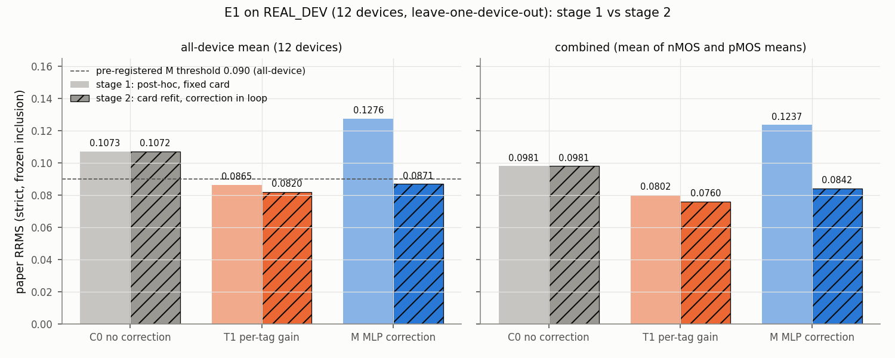
Sources (2 files)
out/research/explore/E1/real_dev_lodo/results.jsonout/research/explore/E1/real_dev_refit/results.json
| stage | arm | all-device | combined | median | failed devices | M < C0 (devices) | M < T1 (devices) | pre-registered rule |
|---|---|---|---|---|---|---|---|---|
| stage 1 | C0 fixed card | 0.1073 | 0.0981 | 0.0823 | 0 | — | — | — |
| stage 1 | T1 per-tag gain | 0.0865 | 0.0802 | 0.0656 | 0 | — | — | — |
| stage 1 | M MLP correction | 0.1276 | 0.1237 | 0.0687 | 0 | 6/12 | 4/12 | fail |
| stage 2 | C0 refit | 0.1072 | 0.0981 | 0.0820 | 0 | — | — | — |
| stage 2 | T1 per-tag gain | 0.0820 | 0.0760 | 0.0650 | 0 | — | — | — |
| stage 2 | M MLP correction | 0.0871 | 0.0842 | 0.0612 | 0 | 8/12 | 6/12 | fail |
- Stage 1 (post-hoc): each arm is trained on 11 devices and applied once to the held-out device's fixed best 43-parameter card (direct NGSpice round 3 + FD). C0 = that card with no correction.
- Stage 2 (refit): the held-out card is re-polished (ngspice_fit.polish, TRF max_nfev 400, irls 2, diff_step 0.01, round-3 box) against the measured curves with the fold's correction inside the residual. C0 = the same polish without correction from the same start; T1 is re-polished with T1 in the loop.
- Pre-registered continue rule (all five): M all-device <= 0.090; M < T1 all-device; M < T1 on >= 8/12; M < C0 on >= 8/12; 0 failed devices for M. Stage 1: no, no, no, no, yes. Stage 2: yes, no, no, yes, yes.
- all-device = mean over the 12 REAL_DEV devices (5 nMOS, 7 pMOS); combined = mean of the nMOS and pMOS family means. T1 is a table indexed by curve tag and is not a function of terminal voltages, so it cannot be written as a Verilog-A device model; M can.
Source out/research/report/2026-10-19_explore_e1_lc/tables.md
Caveats and open checks
- 12 devices; one LODO pass with 5 seeds averaged inside M.
Source files
out/research/explore/E1/prereg.jsonout/research/explore/E1/real_dev_lodo/results.jsonout/research/explore/E1/outcome_stage1.jsonscripts/research/explore/e1_lodo.py
refutedE1 stage 2: with each held-out card re-polished with its fold's correction in the residual, M reaches 0.0871 all-device vs 0.1072 for the no-correction re-polish (19% lower) and 0.0820 for T1; the pre-registered rule fails because M does not beat T1.0.0871 vs 0.1072 (T1 0.0820) all-device, REAL_DEV leave-one-device-out, card refit with the correction in the loop; combined 0.0842 vs 0.0981 (T1 0.0760)
What it is
Question: after the best per-device 43-parameter BSIM4 fit, is part of the remaining measured-minus-simulated error shared across devices, so that a correction learned on other devices lowers the held-out device's RRMS?
I_corr = I_bsim * exp(g), g = tanh(h(phi))
phi = [is_pmos, |Vgs|/VDD, |Vds|/VDD, log10 L, log10 W, log10(|I_bsim| L/W + 1e-13)]Source out/research/explore/E1/prereg.json
Arms: C0 no correction; M (primary) MLP 6-32-32-1 tanh, 5 seeds, 2000 Adam steps, L2 1e-4; T1 one log-gain per (family, curve tag), 22 scalars; T2 one log-gain per (family, curve kind), 4 scalars; LIN quadratic features → linear → tanh. M depends only on terminal state and geometry and can be written as Verilog-A; T1 and T2 are indexed by curve tag and cannot.
Pre-registered continue rule (all five): M all-device ≤ 0.090; M < T1 all-device; M < T1 on ≥ 8 of 12; M < C0 on ≥ 8 of 12; 0 failed devices for M. E1 is stopped if neither stage meets all five.
What we did
- Stage 2 (
scripts/research/explore/e1_refit.py, queue jobe1_refit_real, 2026-10-19 10:05–10:08, 156 s): for each fold, the held-out card is re-polished (ngspice_fit.polish, TRF max_nfev 400, irls 2, diff_step 0.01, round-3 box) against the measured curves with that fold's M correction inside the residual. Controls from the same start and budget: the polish without correction (C0 refit) and the polish with T1 in the loop. - Scored with the same strict paper RRMS (frozen inclusion) as stage 1.
Result
| quantity | value | convention | source |
|---|---|---|---|
| All-device: C0 refit / M / T1 | 0.1072 / 0.0871 / 0.0820 | 12 devices, 0 failed | out/research/explore/E1/real_dev_refit/results.json |
| Combined: C0 refit / M / T1 | 0.0981 / 0.0842 / 0.0760 | mean of nMOS (5) and pMOS (7) family means | out/research/explore/E1/real_dev_refit/results.json |
| Median: C0 refit / M / T1 | 0.0820 / 0.0612 / 0.0650 | 12 devices | out/research/explore/E1/real_dev_refit/results.json |
| M < C0 refit, M < T1 (devices) | 8 of 12, 6 of 12 | per device | out/research/explore/E1/real_dev_refit/results.json |
| M relative to C0 refit | −18.8% | all-device | out/research/explore/E1/real_dev_refit/results.json |
Checks: M ≤ 0.090 yes (0.0871); M < T1 mean no; M < T1 on ≥ 8/12 no (6); M < C0 refit on ≥ 8/12 yes (8); 0 failed yes. Stage 2 does not pass.
The same correction that raised RRMS post hoc (stage 1, 0.1276) lowers it when the card is refit with it (0.0871). The C0 re-polish changes the card little (0.1073 → 0.1072).
Candidate for exploration iteration 2: a new pre-registration with the correction inside the refit as the primary setting. Not queued.
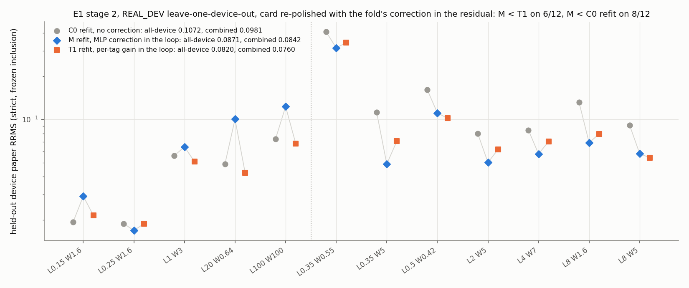
Sources (1 files)
out/research/explore/E1/real_dev_refit/results.json
Sources (2 files)
out/research/explore/E1/real_dev_lodo/results.jsonout/research/explore/E1/real_dev_refit/results.json
| stage | arm | all-device | combined | median | failed devices | M < C0 (devices) | M < T1 (devices) | pre-registered rule |
|---|---|---|---|---|---|---|---|---|
| stage 1 | C0 fixed card | 0.1073 | 0.0981 | 0.0823 | 0 | — | — | — |
| stage 1 | T1 per-tag gain | 0.0865 | 0.0802 | 0.0656 | 0 | — | — | — |
| stage 1 | M MLP correction | 0.1276 | 0.1237 | 0.0687 | 0 | 6/12 | 4/12 | fail |
| stage 2 | C0 refit | 0.1072 | 0.0981 | 0.0820 | 0 | — | — | — |
| stage 2 | T1 per-tag gain | 0.0820 | 0.0760 | 0.0650 | 0 | — | — | — |
| stage 2 | M MLP correction | 0.0871 | 0.0842 | 0.0612 | 0 | 8/12 | 6/12 | fail |
- Stage 1 (post-hoc): each arm is trained on 11 devices and applied once to the held-out device's fixed best 43-parameter card (direct NGSpice round 3 + FD). C0 = that card with no correction.
- Stage 2 (refit): the held-out card is re-polished (ngspice_fit.polish, TRF max_nfev 400, irls 2, diff_step 0.01, round-3 box) against the measured curves with the fold's correction inside the residual. C0 = the same polish without correction from the same start; T1 is re-polished with T1 in the loop.
- Pre-registered continue rule (all five): M all-device <= 0.090; M < T1 all-device; M < T1 on >= 8/12; M < C0 on >= 8/12; 0 failed devices for M. Stage 1: no, no, no, no, yes. Stage 2: yes, no, no, yes, yes.
- all-device = mean over the 12 REAL_DEV devices (5 nMOS, 7 pMOS); combined = mean of the nMOS and pMOS family means. T1 is a table indexed by curve tag and is not a function of terminal voltages, so it cannot be written as a Verilog-A device model; M can.
Source out/research/report/2026-10-19_explore_e1_lc/tables.md
Caveats and open checks
- T1 is not deployable as a device model (indexed by curve tag); it is the pre-registered comparator.
- In the refit, M and T1 change the card; the card's parameters are fitted on the held-out device's measured curves, as is C0 refit.
- 12 devices; no REAL_TEST evaluation.
Source files
out/research/explore/E1/prereg.jsonout/research/explore/E1/real_dev_refit/results.jsonscripts/research/explore/e1_refit.pydocs/RESEARCH_LOOP.md
refutedE1 simulated benchmark (GF180 and IHP tier c, sets 0–2, 48 targets per PDK, leave-one-geometry-out, post-hoc correction): M is above C0 on both PDKs, and criterion_S fails on both.GF180 0.0496 vs 0.0474; IHP 0.1553 vs 0.1012 all-device, M vs C0, post-hoc correction (no in-loop refit); combined equals all-device (24 nMOS, 24 pMOS)
What it is
Simulated check of E1 with known misspecification: GF180 (BSIM4) and IHP SG13G2 (PSP103) tier c truths (non-fitted parameters ±50%, series R, per-curve heating, Vd-dependent noise, gain error), each fitted per target with ngspice_fit.polish from the wide-set projection (max_nfev 300, irls 3).
criterion_S (per PDK): M all-device ≤ 0.90 × C0 and M < T1 on the leave-one-geometry-out run. Secondary; the E1 decision is made on REAL_DEV only.
What we did
- Collection:
scripts/research/explore/e1_collect_pdk2.pyfor sets 0, 1, 2 (queue jobse1_collect_gf180_s12,e1_collect_ihp_s12). - Leave-one-geometry-out (
scripts/research/explore/e1_lodo.py): 16 folds per PDK; all three draws of the held-out geometry removed from training; pre-registered hyperparameters (M 5 seeds, 2000 steps). Runtime 2,087 s (GF180), 2,124 s (IHP). - Post-hoc only: the correction is applied to the fitted card's simulation; the card is not refit with the correction in the loop. This is the setting in which M also failed on the measured devices (stage 1).
Result
| quantity | value | convention | source |
|---|---|---|---|
| GF180 all-device: C0 / T1 / T2 / LIN / M | 0.0474 / 0.0420 / 0.0463 / 0.0443 / 0.0496 | 48 targets, 0 failed | out/research/explore/E1/gf180_c_logo/results.json |
| IHP all-device: C0 / T1 / T2 / LIN / M | 0.1012 / 0.0957 / 0.0999 / 0.0987 / 0.1553 | 48 targets, 0 failed | out/research/explore/E1/ihp_c_logo/results.json |
| M < C0 (targets) | GF180 19 of 48; IHP 13 of 48 | per target | out/research/explore/E1/gf180_c_logo/results.json out/research/explore/E1/ihp_c_logo/results.json |
| M / C0 | GF180 1.045; IHP 1.534 | all-device; criterion_S requires ≤ 0.90 | out/research/explore/E1/gf180_c_logo/results.json out/research/explore/E1/ihp_c_logo/results.json |
criterion_S: M ≤ 0.90 × C0 no, M < T1 no, on both PDKs. T1 has the lowest all-device mean on both PDKs (GF180 0.0420, IHP 0.0957).
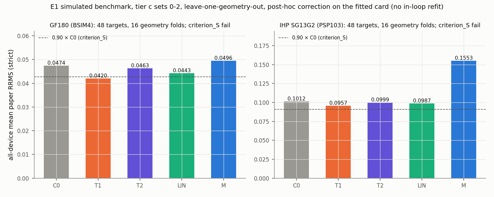
Sources (2 files)
out/research/explore/E1/gf180_c_logo/results.jsonout/research/explore/E1/ihp_c_logo/results.json
| PDK | arm | all-device | combined | nMOS | pMOS | median | all-device / C0 | failed targets | targets with M < arm |
|---|---|---|---|---|---|---|---|---|---|
| GF180 (BSIM4) | C0 no correction | 0.0474 | 0.0474 | 0.0620 | 0.0328 | 0.0364 | 1.0000 | 0 | 19/48 |
| GF180 (BSIM4) | T1 per-tag gain (22 scalars) | 0.0420 | 0.0420 | 0.0546 | 0.0295 | 0.0360 | 0.8863 | 0 | 11/48 |
| GF180 (BSIM4) | T2 per-kind gain (4 scalars) | 0.0463 | 0.0463 | 0.0599 | 0.0328 | 0.0365 | 0.9771 | 0 | 17/48 |
| GF180 (BSIM4) | LIN quadratic-linear | 0.0443 | 0.0443 | 0.0546 | 0.0340 | 0.0392 | 0.9333 | 0 | 15/48 |
| GF180 (BSIM4) | M MLP correction (primary) | 0.0496 | 0.0496 | 0.0583 | 0.0409 | 0.0431 | 1.0451 | 0 | — |
| IHP SG13G2 (PSP103) | C0 no correction | 0.1012 | 0.1012 | 0.0879 | 0.1146 | 0.0568 | 1.0000 | 0 | 13/48 |
| IHP SG13G2 (PSP103) | T1 per-tag gain (22 scalars) | 0.0957 | 0.0957 | 0.0776 | 0.1138 | 0.0542 | 0.9456 | 0 | 10/48 |
| IHP SG13G2 (PSP103) | T2 per-kind gain (4 scalars) | 0.0999 | 0.0999 | 0.0846 | 0.1151 | 0.0573 | 0.9866 | 0 | 15/48 |
| IHP SG13G2 (PSP103) | LIN quadratic-linear | 0.0987 | 0.0987 | 0.0859 | 0.1116 | 0.0769 | 0.9754 | 0 | 7/48 |
| IHP SG13G2 (PSP103) | M MLP correction (primary) | 0.1553 | 0.1553 | 0.1447 | 0.1659 | 0.1502 | 1.5344 | 0 | — |
- Targets: GF180 (BSIM4) and IHP SG13G2 (PSP103) tier c truth sets 0, 1 and 2, 16 geometries per PDK (8 nMOS, 8 pMOS), 48 targets per PDK. Fit per target: ngspice_fit.polish from the wide-set projection (max_nfev 300, irls 3).
- Folds: leave-one-geometry-out (all three draws of the held-out geometry removed from training), 16 folds per PDK. Arms use the pre-registered hyperparameters (M: 5 seeds, 2000 steps).
- Correction applied post hoc to the fitted card's simulation; the card is not refit with the correction in the loop. This is the setting (stage 1) in which M also failed on the measured devices.
- criterion_S (per PDK): M all-device <= 0.90 × C0 and M < T1. Secondary; not used for the E1 decision. It fails on both PDKs.
- all-device = mean over 48 targets; combined = mean of the nMOS and pMOS family means (equal family counts, so it equals the all-device mean).
Source out/research/report/2026-10-19_explore_e1_lc/tables.md
Caveats and open checks
- No in-loop refit was run on the simulated sets; the stage-2 setting is untested there.
Source files
out/research/explore/E1/prereg.jsonout/research/explore/E1/gf180_c_logo/results.jsonout/research/explore/E1/ihp_c_logo/results.jsonscripts/research/explore/e1_lodo.py
refutedE5 light (stage 1, light settings): a shared MLP discrepancy model trained on 11 REAL_DEV devices raises held-out all-device RRMS from 0.1073 to 0.1809 and improves 2 of 12 devices; the kill condition is met.0.1809 vs 0.1073 all-device, A2 shared delta vs A0 control, REAL_DEV leave-one-device-out, light settings (800 steps, 3 seeds)
What it is
Question: is the signed-log residual log|I_meas| − log|I_sim| after the best 43-parameter fit shared across devices as a function of family, log L, log W, |Vg|, |Vd| and log|I_sim|? Primary arm A2: MLP 2 × 64 tanh, ensemble of seeds, trained leave-one-device-out.
What we did
scripts/research/explore/e5_shared_discrepancy.py stage1with light settings (800 steps, seeds 0–2; pre-registered: 3000 steps, 5 seeds). The stage-2 light check ran on one device only.
Result
| quantity | value | convention | source |
|---|---|---|---|
| All-device: A0 / A1 const / A2 MLP / A4 no geometry / A3 oracle | 0.1073 / 0.1221 / 0.1809 / 0.1404 / 0.0396 | 12 devices, 0 failed | out/research/explore/E5/stage1_light.json |
| Combined: A0 / A2 | 0.0981 / 0.1762 | mean of family means | out/research/explore/E5/stage1_light.json |
| Devices improved by A2 | 2 of 12 | kill if ≤ 6 of 12 or reduction < 5% | out/research/explore/E5/stage1_light.json |
Kill condition met in the light run (reduction -69%, 2 of 12 devices improved). The pre-registered run (#claim-e5) gives the same outcome.
Caveats and open checks
- Light settings; not the pre-registered run.
Source files
out/research/explore/E5/prereg.jsonout/research/explore/E5/stage1_light.jsonout/research/explore/E5/stage2_light.json
refutedE5 decision run (stage 1, 43-parameter base): a shared MLP discrepancy trained on the other 11 REAL_DEV devices raises held-out all-device RRMS from 0.1073 to 0.2004 and lowers it on 1 of 12 devices; the kill condition is met. The stage-2 joint refit (diagnostic) gives 0.1235 vs 0.1072 for the control polish.reduction -0.868, 1/12 (KILL) A2 shared delta vs A0 control, all-device, 43-parameter base, REAL_DEV leave-one-device-out, 3000 steps, seeds 0-4
What it is
Question: after the best per-device 43-parameter fit, is the signed-log residual log|I_meas| - log|I_sim| shared across devices as a function of family, log L, log W, |Vg|, |Vd| and log|I_sim|, so that a residual model trained on the other REAL_DEV devices lowers the held-out device's paper RRMS?
Correction: I_corr = I_sim x exp(delta), delta = tanh(raw), |delta| <= 1. Loss: weighted MSE of delta against the log residual, weights (|I_meas| / den)^2 per curve, equal total weight per device.
Arms: A0 no correction; A1 per-family constant delta; A2 (primary) MLP 2 x 64 tanh, 3000 full-batch steps, ensemble of 5 seeds, leave-one-device-out; A4 = A2 without log L, log W; A3 = A2 trained in-sample on the held-out device (upper bound, not a method). Bases: direct NGSpice 43-parameter round-3 + FD cards (primary) and seven-parameter + FD cards (secondary).
- Stage 1: CONTINUE if (A0 - A2) / A0 >= 0.15 and A2 < A0 on >= 8 of 12 devices
- KILL if the reduction is < 0.05 or A2 < A0 on <= 6 of 12; otherwise AMBIGUOUS, decided on stage 2
- Stage 2 (joint refit of the card with the fold's A2 delta in the residual): CONTINUE if (control - joint) / control >= 0.15 and joint < control on >= 8 of 12, otherwise KILL
What we did
- Queue job
E5_stage1(2026-10-19 14:19-14:29, 625 s):scripts/research/explore/e5_shared_discrepancy.py stage1with the pre-registered settings (3000 steps, seeds 0-4) on both bases. Recorded deviations from the prereg text: torch AdamW (decoupled weight decay 1e-4); weights renormalized to sum 1 per device; MPS float32. - Queue job
E5_stage2(14:29-14:30, 64 s): per fold, bounded TRF polish of the 43-parameter card (max_nfev 400, diff_step 0.01, irls 2, round-3 box) with the fold's A2 delta frozen in the residual; control: the same polish without delta from the same start. Run as a diagnostic because the stage-1 output is KILL. - Report:
scripts/research/plot_explore_e4p7_e5.pyrecomputes the rule from the per-device values and checks it against the stored verdicts.
Result
| quantity | value | convention | source |
|---|---|---|---|
| 43-parameter base, all-device: A0 / A1 const / A2 MLP / A4 no geometry / A3 oracle | 0.1073 / 0.1221 / 0.2004 / 0.1681 / 0.0343 | 12 devices, 0 failed in every arm; A3 is trained in-sample on the held-out device (not a method) | out/research/explore/E5/stage1.json |
| 43-parameter base, combined: A0 / A1 / A2 / A4 / A3 | 0.0981 / 0.1110 / 0.2024 / 0.1625 / 0.0322 | mean of nMOS (5) and pMOS (7) family means | out/research/explore/E5/stage1.json |
| 43-parameter base, nMOS / pMOS: A0 vs A2 | 0.0433 / 0.1530 vs 0.2147 / 0.1902 | family means | out/research/explore/E5/stage1.json |
| Devices improved vs A0 (43-parameter base): A1 / A2 / A4 / A3 | 0 / 1 / 5 / 12 of 12 | kill if reduction < 0.05 or <= 6 of 12 | out/research/explore/E5/stage1.json |
| Seven-parameter base (secondary), all-device: A0 / A1 / A2 / A4 / A3 | 0.1735 / 0.2184 / 0.2252 / 0.2922 / 0.0419 | combined 0.1600 / 0.2002 / 0.2175 / 0.2882 / 0.0387; A2 lower on 3/12 | out/research/explore/E5/stage1.json |
| Stage 2 (diagnostic), all-device: control polish / joint refit / joint-refit card without delta | 0.1072 / 0.1235 / 0.1890 | combined 0.0981 / 0.1206 / 0.1842; joint lower than control on 3/12; reduction -0.152 | out/research/explore/E5/stage2_diagnostic.json |
Stage 1 (decision): reduction -0.868, A2 < A0 on 1/12 devices (pmos_L0p35_W0p55, 0.308 vs 0.409): KILL. The light run (800 steps, 3 seeds) gave -0.686 and 2/12 with the same outcome.
A2 raises the nMOS mean from 0.0433 to 0.2147 (nmos_L20_W0p64 0.049 -> 0.551, nmos_L100_W100 0.073 -> 0.276) and the pMOS mean from 0.1530 to 0.1902. A4 (without geometry inputs) is lower than A2 (0.1681 vs 0.2004) and lower than A0 on 5/12. A1 (per-family constant) is above A0 on 12/12.
A3, trained in-sample on the held-out device, reaches 0.0343 (12/12 below A0): the network class can represent each device's residual; the residual learned on the other devices does not transfer to the held-out device.
Seven-parameter base (secondary): A0 0.1735, A2 0.2252 (reduction -0.298, 3/12), A3 0.0419.
Stage 2 (diagnostic): the control polish changes the base cards by at most 0.0005 per device (0.1073 -> 0.1072). The joint refit lowers the corrected RRMS from the stage-1 A2 value (0.2004 -> 0.1235) but stays above the control (reduction -0.152, 3/12: pmos_L0p35_W0p55 0.266 vs 0.409, pmos_L0p35_W5 0.101 vs 0.112, pmos_L2_W5 0.053 vs 0.080). Rule output KILL; it does not change the decision.
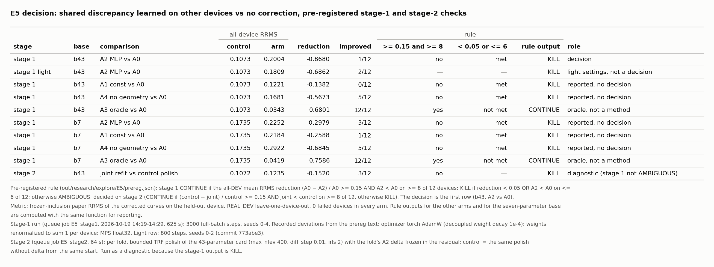
Sources (4 files)
out/research/explore/E5/prereg.jsonout/research/explore/E5/stage1.jsonout/research/explore/E5/stage1_light.jsonout/research/explore/E5/stage2_diagnostic.json
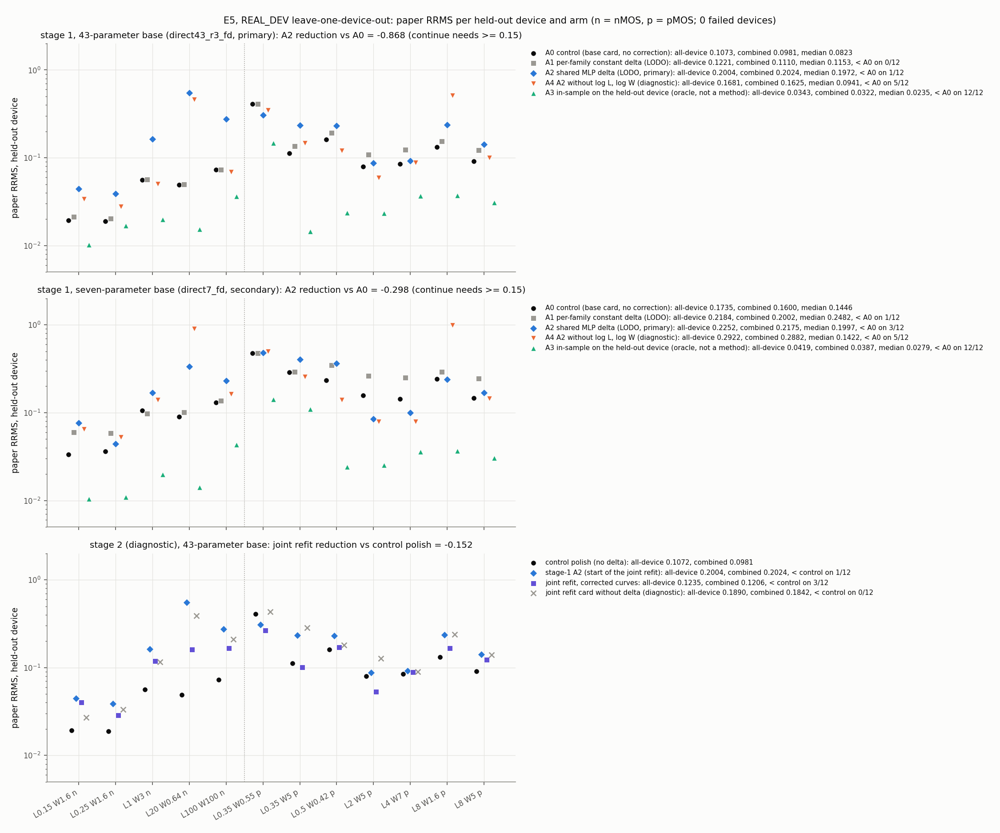
Sources (2 files)
out/research/explore/E5/stage1.jsonout/research/explore/E5/stage2_diagnostic.json
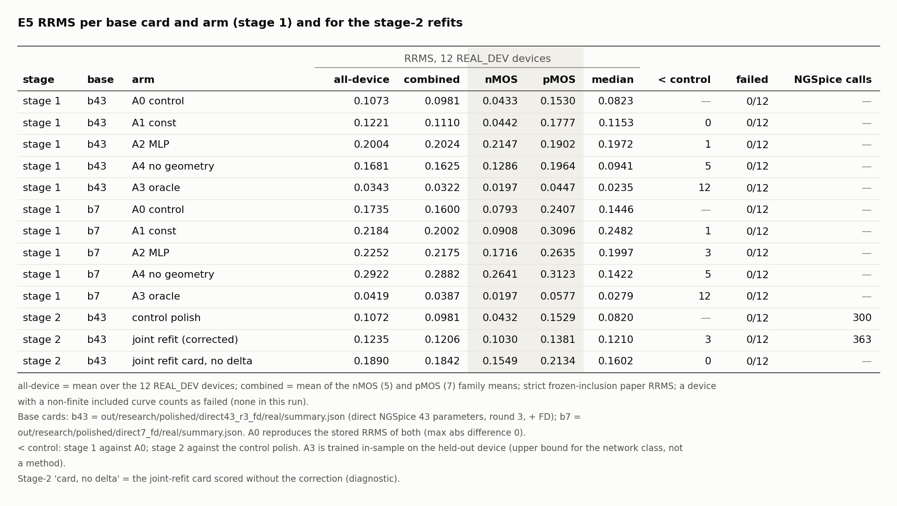
Sources (2 files)
out/research/explore/E5/stage1.jsonout/research/explore/E5/stage2_diagnostic.json
Caveats and open checks
- 12 REAL_DEV devices; REAL_TEST is not loaded.
- Stage 2 was run after a stage-1 KILL; it is a diagnostic and not a decision input.
- The optimizer (AdamW), the per-device weight renormalization and float32 on MPS differ from the prereg text; they are recorded in stage1.json.
Source files
out/research/explore/E5/prereg.jsonout/research/explore/E5/stage1.jsonout/research/explore/E5/stage2_diagnostic.jsonout/research/explore/E5/models/b43_A2_folds.jsonout/research/explore/E5/models/b7_A2_folds.jsonscripts/research/explore/e5_shared_discrepancy.pyscripts/research/plot_explore_e4p7_e5.pydocs/RESEARCH_LOOP.md
refutedE2 light (seed 0): a one-pass network trained with structured misspecification augmentation has a REAL_DEV penalized mean raw RRMS 1.145 times that of the unaugmented network; kill condition K1 is met in this exploratory run. The three-seed decision run is reported in E2 decision run.S / N0 = 1.145 REAL_DEV, raw (one forward pass + one NGSpice validation), penalized mean, seed 0 only
What it is
Question: does training a one-pass I–V → seven-parameter network on simulated currents distorted by output-space misspecification components (series R, per-curve heating, gain error, Vd-dependent noise, floor) lower the NGSpice-validated RRMS on measured devices by ≥ 30% vs no augmentation?
What we did
- Light run: seed 0 only, raw on all sets, FD on REAL_DEV only (
scripts/research/explore/e2_direct.py).
Result
| quantity | value | convention | source |
|---|---|---|---|
| REAL_DEV penalized mean raw RRMS: N0 / M / S / nearest bank | 12.47 / 9.51 / 14.28 / 0.905 | penalized convention (10 per failed included curve); failed device-seed pairs N0 3, M 2, S 2, nearest bank 0 | out/research/explore/E2/table.json (light run, commit 773abe3) |
| S lower than N0 (devices) | 6 of 12 | K2 kills below 6 | out/research/explore/E2/table.json (light run, commit 773abe3) |
Light verdict: KILL (exploratory, 1 seed; C1 no, C2 no, C3 no, K1 yes, K2 no).
The three-seed decision run gives the same verdict (K1 met, S / N0 = 1.742); see E2 decision run.
Caveats and open checks
- Means are in the penalized convention; two pMOS devices have per-device values above 50 for N0 (pmos_L0p35_W0p55 67.3, pmos_L0p35_W5 58.6). Medians: N0 2.81, S 2.59.
Source files
out/research/explore/E2/prereg.jsonscripts/research/explore/e2_direct.py
refutedE2 decision run (seeds 0-2): the one-pass seven-parameter network trained with structured misspecification augmentation (S) has a REAL_DEV penalized mean raw RRMS of 19.58 vs 11.24 without augmentation (N0), S / N0 = 1.742; kill condition K1 is met and E2 is stopped.S / N0 = 1.742 (KILL) REAL_DEV, raw (one forward pass + one NGSpice validation), penalized mean over 12 devices, seed mean per device, seeds 0-2
What it is
Question: does training a one-pass I-V -> seven-parameter network on simulated currents distorted by output-space misspecification components lower the NGSpice-validated RRMS on measured devices by >= 30% relative to the same network without augmentation?
Network: pooled across the 18 devices; input 2046 standardized signed-log currents + 2046 bank-median-scaled linear currents + device one-hot; MLP 1024-1024-512 GELU, 7 outputs in ParameterBox local coordinates (round-1 seven box); AdamW 1e-3, cosine, 30 epochs, batch 1024. Training data: simulated seven_r1 banks only; no measured data enters training or model selection.
Arms: N0 no augmentation; M measurement-only augmentation (per-curve gain, Vd-dependent multiplicative noise, additive floor); S structured + measurement augmentation (first-order external series resistance, per-curve self-heating, plus the M components); augmentation probability 0.8, redrawn each epoch. Control without training: nearest bank sample in standardized signed-log features.
- C1: R_raw(S) <= 0.70 x R_raw(N0)
- C2: R_raw(S) - D <= 0.70 x (R_raw(N0) - D), D = 0.173493
- C3: S lower than N0 on >= 8 of 12 REAL_DEV devices
- C4 guard: tier a mean raw RRMS(S) <= 1.5 x tier a RRMS(N0) + 0.01
- CONTINUE if C1-C4 all hold; KILL if K1: R_raw(S) > 0.85 x R_raw(N0) or K2: S lower on fewer than 6 of 12; otherwise INCONCLUSIVE
What we did
- Queue job
E2_full(2026-10-19 11:26-11:40, 796 s): trained N0, M, S for seeds 1 and 2 (seed 0 from the light run), one forward pass per target, one NGSpice validation per target on REAL_DEV (12), tier a sets 0-1 and tier c sets 0-1 (36 + 36 simulated targets); FD polish on REAL_DEV. - Queue job
E2_fd_sim(11:40-11:52, 722 s): the same FD polish (ngspice_fit.polish, round-1 seven box, max_nfev 100, diff_step 0.01, irls 1) on the simulated sets for all arms and seeds. - Scoring: strict paper RRMS with frozen published-baseline inclusion; per device the penalized value is averaged over seeds first, then over devices. Report:
scripts/research/plot_explore_e2_e3_e4.py.
Result
| quantity | value | convention | source |
|---|---|---|---|
| REAL_DEV raw all-device: N0 / M / S / nearest bank sample | 11.241 / 6.265 / 19.581 / 0.905 | penalized (10 per failed included curve); failed device-seed pairs 9/36, 6/36, 4/36, 0/12 | out/research/explore/E2/table.json |
| REAL_DEV raw combined: N0 / M / S / nearest bank sample | 9.738 / 5.513 / 16.955 / 0.979 | mean of nMOS (5) and pMOS (7) family means | out/research/report/2026-10-19_explore_e2_e3_e4/tables.md |
| REAL_DEV raw median: N0 / M / S / nearest bank sample | 5.490 / 2.795 / 1.621 / 0.396 | 12 devices | out/research/explore/E2/table.json |
| S lower than N0 (devices) | 6 of 12 | C3 needs >= 8; K2 kills below 6 | out/research/explore/E2/table.json |
| REAL_DEV after FD polish, all-device: N0 / M / S / nearest bank sample | 1.067 / 0.521 / 0.711 / 0.310 | combined 0.947 / 0.470 / 0.635 / 0.310; failed pairs 8/36, 2/36, 3/36, 0/12; secondary | out/research/explore/E2/table.json |
| References on REAL_DEV: released card / D (direct NGSpice 7 + FD) | 0.2848 / 0.1735 | all-device; combined 0.2608 / 0.1600 | out/research/explore/E2/eval/refs.json, out/research/polished/direct7_fd/real/summary.json |
Checks (seeds 0-2): C1 no (S / N0 = 1.742); C2 no (gap ratio 1.754); C3 no (6/12); C4 guard yes (14.89 vs 20.56); K1 met; K2 not met. Rule output: KILL. The seed-0 light run had S / N0 = 1.145 with the same check outcomes.
M (measurement-only augmentation) has the lowest mean among the trained arms (6.265, 0.557 x N0). Secondary attribution check R(S) <= 0.90 x R(M): no (3.126).
The nearest bank sample, which uses no trained network, has a lower raw RRMS than every trained arm on REAL_DEV (0.905) and on tier a (0.286 vs 6.12-14.89), although the trained networks have lower parameter error on tier a (mean |local error| 0.25 vs 0.36).
After the FD polish the order on REAL_DEV is nearest bank sample 0.310, M 0.521, S 0.711, N0 1.067; all are above D = 0.1735 and the released card 0.2848.
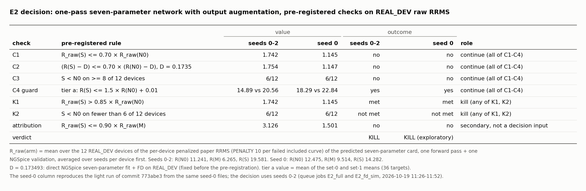
Sources (2 files)
out/research/explore/E2/prereg.jsonout/research/explore/E2/table.json
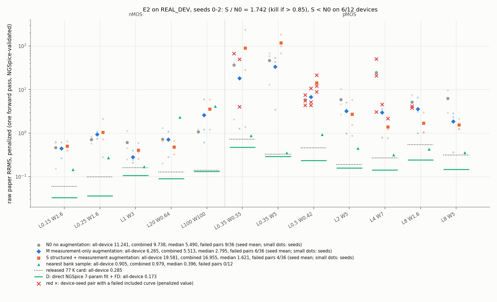
Sources (12 files)
out/research/explore/E2/eval/raw_N0_s0.jsonout/research/explore/E2/eval/raw_N0_s1.jsonout/research/explore/E2/eval/raw_N0_s2.jsonout/research/explore/E2/eval/raw_M_s0.jsonout/research/explore/E2/eval/raw_M_s1.jsonout/research/explore/E2/eval/raw_M_s2.jsonout/research/explore/E2/eval/raw_S_s0.jsonout/research/explore/E2/eval/raw_S_s1.jsonout/research/explore/E2/eval/raw_S_s2.jsonout/research/explore/E2/eval/raw_nn_s0.jsonout/research/explore/E2/eval/refs.jsonout/research/polished/direct7_fd/real/summary.json
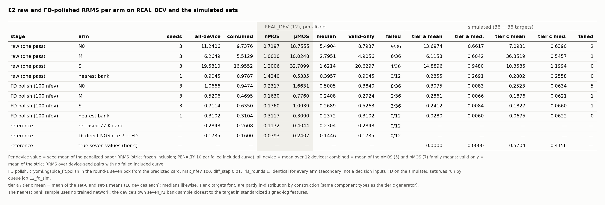
Sources (2 files)
out/research/explore/E2/eval/*.jsonout/research/polished/direct7_fd/real/summary.json
Caveats and open checks
- The penalized means are dominated by pmos_L0p35_W0p55 and pmos_L0p35_W5 (seed-mean values 18-116 for the trained arms) and by failed included curves on pmos_L0p5_W0p42 and pmos_L4_W7. The median order (S 1.621 < M 2.795 < N0 5.490) differs from the mean order; the pre-registered aggregate is the mean.
- Arm S uses the same component types as the tier c generator; tier c results for S are partly in-distribution. The decision uses REAL_DEV only.
- The series-R and heating transforms are first-order output-space approximations, not NGSpice simulations.
- 12 REAL_DEV devices; REAL_TEST is not evaluated.
Source files
out/research/explore/E2/prereg.jsonout/research/explore/E2/table.jsonout/research/explore/E2/eval/scripts/research/explore/e2_direct.pyscripts/research/plot_explore_e2_e3_e4.pydocs/RESEARCH_LOOP.md
refutedE3 decision run (tier M): the temperature law learned across a simulated device population does not lower held-out-temperature RRMS relative to the pre-registered parametric controls (R_O4 = -0.074 vs par3, R_O2 = -0.036 vs par3_pop); kill condition R_S < 0.10 for both S is met and E3 is stopped.R_O4 = -0.074, R_O2 = -0.036 (KILL) tier M, 36 simulated test devices, all-device mean held-out RRMS at 110/190/260 K; R_S = 1 - lrn / control
What it is
Question: on simulated 77-300 K devices whose truth temperature law is outside the fitted parametric family (logistic knee + bump, nonzero 300 K offset, extrinsic series resistance with a linear temperature coefficient), does a temperature law learned on a densely characterised population and shared across devices predict the seven-parameter card at held-out 110/190/260 K with lower NGSpice RRMS than the parametric law fitted per device (O4) or with population-pooled exponent (O2)?
Methods: lrn = x_lin(T) + phi_O(T) sigma MLP(geometry, anchors, T), 2 x 64 SiLU, 5-seed ensemble, sensitivity-weighted loss, trained on 72 training devices (6 draws per REAL_DEV geometry, 14 temperatures); par3 = per-device law x = c + (mu - c) w^g; par3_pop = law with population-pooled g; pt_interp = linear interpolation of the per-temperature fits; floor = per-temperature fit on the held-out data.
- CONTINUE if for at least one S: R_S >= 0.25 AND bootstrap 95% CI lower bound > 0 AND lrn >= 10% below pt_interp AND failed cells <= 10% for lrn, control and pt_interp
- KILL if R_S < 0.10 for both S, or lrn worse than pt_interp for both S; otherwise INCONCLUSIVE
- O4 observes 77/150/225/300 K (control par3); O2 observes 77/300 K (control par3_pop)
What we did
- Queue job
E3_full_M(2026-10-19 11:52-12:07, 906 s): tier M truths for 12 REAL_DEV geometries (no measured I-V), 72 training and 36 test devices, per-temperature NGSpice fits, law fits, learned law training, NGSpice evaluation at the held-out temperatures. - Queue job
E3_full_W(12:07-12:23, 985 s): tier W (truth x = mu w^g, inside the parametric family), same protocol; secondary. - Report:
scripts/research/plot_explore_e2_e3_e4.pyreads summary.json and eval/*.json.
Result
| quantity | value | convention | source |
|---|---|---|---|
| O4 all-device: lrn / par3 (control) / pt_interp / par3_pop | 9.801 / 9.123 / 10.118 / 7.376 | tier M, 36 test devices, 0 failed cells; combined 11.69 / 10.84 / 12.04 / 8.69 | out/research/explore/E3/runs/full/tier_M/summary.json |
| O2 all-device: lrn / par3_pop (control) / pt_interp | 7.102 / 6.858 / 9.592 | tier M; combined 8.40 / 8.06 / 11.25 | out/research/explore/E3/runs/full/tier_M/summary.json |
| R_S with bootstrap 95% CI | O4 -0.074 [-0.090, 0.504]; O2 -0.036 [-0.055, 0.288] | paired percentile bootstrap over test devices, 4000 resamples | out/research/explore/E3/runs/full/tier_M/summary.json |
| lrn vs pt_interp (1 - lrn / pt_interp) | O4 0.031; O2 0.260 | tier M | out/research/explore/E3/runs/full/tier_M/summary.json |
| Median over test devices: lrn / control | O4 0.168 / 0.312; O2 0.354 / 0.406 | tier M; lrn lower on 27/36 (O4) and 21/36 (O2) devices; not a decision input | out/research/explore/E3/runs/full/tier_M/eval/ |
| Tier W (secondary): R_O4 / R_O2 | -0.632 / 0.343 | lrn 0.113 vs par3 0.067 (O4); lrn 0.490 vs par3_pop 0.746 (O2); rule output INCONCLUSIVE | out/research/explore/E3/runs/full/tier_W/summary.json |
Checks, tier M: O4 R_S -0.074 (>= 0.25 no, CI lower bound > 0 no), lrn vs pt_interp 0.031 (>= 0.10 no); O2 R_S -0.036 (no, no), lrn vs pt_interp 0.260 (yes); failed cells 0 for all. R_S < 0.10 for both S: rule output KILL.
The all-device means are dominated by one test device, nmos_L1_W3__2: its held-out RRMS is 226-353 for every method (floor 0.007), from the 110 K cell (676-1060). Without that device (diagnostic, not the pre-registered aggregate) the O4 means are lrn 0.267, par3 0.423, pt_interp 0.370, and the O2 means are lrn 0.484, par3_pop 0.610.
lrn vs lrn_mean (population-mean correction without a network): O4 0.007, O2 0.208. lrn vs par3_pop in O4: -0.329.
Tier W (truth inside the parametric family): par3 is lower than lrn in O4 (0.067 vs 0.113); lrn is lower than par3_pop in O2 (0.490 vs 0.746); rule output INCONCLUSIVE (secondary).
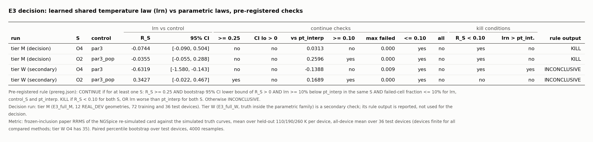
Sources (4 files)
out/research/explore/E3/prereg.jsonout/research/explore/E3/prereg_addendum.jsonout/research/explore/E3/runs/full/tier_M/summary.jsonout/research/explore/E3/runs/full/tier_W/summary.json
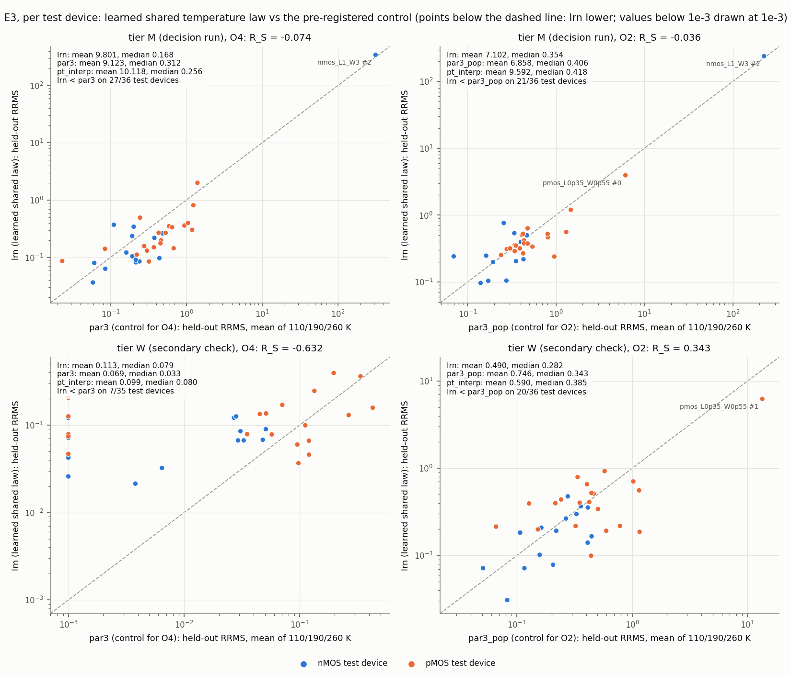
Sources (4 files)
out/research/explore/E3/runs/full/tier_M/eval/*.jsonout/research/explore/E3/runs/full/tier_W/eval/*.jsonout/research/explore/E3/runs/full/tier_M/summary.jsonout/research/explore/E3/runs/full/tier_W/summary.json
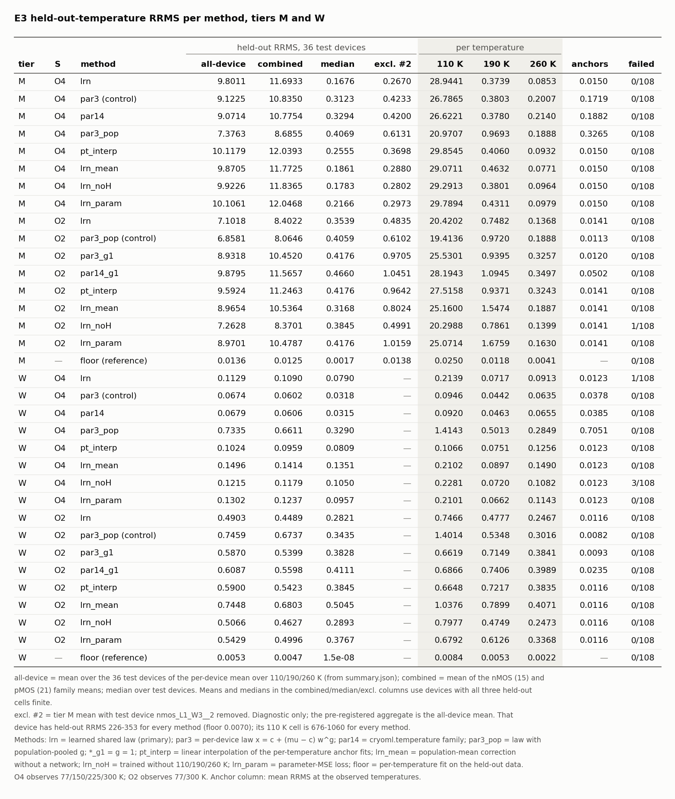
Sources (2 files)
out/research/explore/E3/runs/full/tier_M/summary.jsonout/research/explore/E3/runs/full/tier_W/summary.json
Caveats and open checks
- The pre-registered aggregate is the mean over test devices; one device with RRMS > 200 for every method determines the sign of R_S in both settings. The median and the outlier-excluded means are reported as diagnostics and do not change the rule output.
- The learned law is trained on devices from the same generator as the test devices (all knees in 120-230 K); a law-shift test was listed in the addendum as required before any robustness claim.
- In O4 the control par3 uses no population information, while lrn, lrn_mean and par3_pop do.
- Simulated devices only; no measured temperature data.
Source files
out/research/explore/E3/prereg.jsonout/research/explore/E3/prereg_addendum.jsonout/research/explore/E3/runs/full/tier_M/summary.jsonout/research/explore/E3/runs/full/tier_W/summary.jsonscripts/research/explore/e3_temp_misspec.pysrc/cryoml/explore/e3_learn.pyscripts/research/plot_explore_e2_e3_e4.py
refutedE4 decision run (43 parameters, split vd): the near-optimal ensemble meets the calibration check (90% coverage 0.744, width within the limit) but not the accuracy check (held-out RRMS 0.4418 vs 0.4177 for the single card, lower on 6 of 12 devices); Laplace and the learned discrepancy fail calibration. Rule output: PARTIAL_CALIBRATION_ONLY. The seven-parameter runs (secondary) give rule outputs KILL on vd and sparse and PARTIAL_CALIBRATION_ONLY on vg.PARTIAL_CALIBRATION_ONLY p43, split vd, 12 REAL_DEV devices, strict selection (decision); p7 vd, sparse, vg secondary
What it is
Question: when a device's 43-parameter card is fitted to a subset of its measured I-V curves, do an ensemble of near-optimal cards, a Gauss-Newton Laplace approximation, or a discrepancy model learned on other devices give calibrated predictive intervals and lower RRMS on the unmeasured curves than the single best-fit card?
Fit per device: CMA-ES (6000 + 2 x 3000 evaluations) on the mean train-curve RRMS, bounded TRF polish with batched NGSpice Jacobians, 8 perturbation starts; held-out-bias feasibility penalty (amendment 1). About 22,000 NGSpice calls per device.
Splits: vd (decision) holds out the Id-Vd curves except the highest gate bias; sparse holds out every curve except Id-Vg at Vd 0.01/1.85 and Id-Vd at the highest gate bias; vg holds out Id-Vg at Vd 0.37/0.74/1.11/1.48.
- C1 calibration: all-device 90% coverage in [0.70, 0.95] and width <= 4 x single's held-out RRMS
- C2 accuracy: held-out RRMS <= 0.95 x single (valid-only and paired) and lower on >= 8 of 12 devices
- C3 (learned only): held-out RRMS <= crossinterp (valid-only and paired)
- CONTINUE if a candidate (ens, laplace, learned) meets C1-C3; PARTIAL_CALIBRATION_ONLY if one meets only C1; KILL if none meets C1
What we did
- Queue jobs
E4_p43_vd(2026-10-19 12:23-12:46, 1347 s),E4_p43_sparse(12:46-13:11, 1487 s),E4_p43_vg(13:11-13:35, 1470 s):e4_fit.pyon the 12 REAL_DEV devices, thene4_analyze.py --select strict(with--decideon vd) and--select feasibleon vd. - For this report:
e4_analyze.py --select feasibleon sparse and vg (reads the fitted records only), and the pre-registereddecide()applied to the stored sparse and vg summaries for reporting. Feasible selection gives the same values as strict on all three splits. - Queue jobs
E4_p7_vd(2026-10-19 13:35-13:50, 862 s),E4_p7_vg(13:50-14:09, 1164 s),E4_p7_sparse(14:09-14:19, 594 s):e4_fit.pywith the seven-parameter box (out/cold_loop/seven/round_1/spec.json) and the same budgets and feasibility penalty, thene4_analyze.py --select strictwithout--decide(prereg.json lists p7 vd and p7 vg as secondary without a decision; sparse is secondary by amendment 1). About 13,000-14,000 NGSpice calls per device. - For the p7 report:
e4_analyze.py --run p7 --select feasibleon vd, sparse and vg (reads the fitted records only, no NGSpice); feasible equals strict for every value. The samedecide()function was applied to the p7 strict summaries for reporting. Report script:scripts/research/plot_explore_e4p7_e5.py.
Result
| quantity | value | convention | source |
|---|---|---|---|
| vd held-out all-device: single / ens / Laplace / learned / crossinterp | 0.4177 / 0.4418 / 500.2 / 10.87 / 0.0977 | combined 0.3751 / 0.3968 / 428.8 / 9.82 / 0.0897; 0 failed devices | out/research/explore/E4/p43/vd/summary_strict.json |
| vd 90% coverage / width: ens, Laplace, learned | 0.744 / 1.006; 0.900 / 7.44; 0.963 / 5846 | C1: coverage in [0.70, 0.95] and width <= 4 x 0.4177 = 1.671 | out/research/explore/E4/p43/vd/summary_strict.json |
| sparse (secondary) held-out all-device: single / ens / crossinterp / learned | 0.3945 / 0.4322 / 0.2718 / 3.089 | ens coverage 0.676 (C1 no); rule output KILL | out/research/explore/E4/p43/sparse/summary_strict.json |
| vg (secondary) held-out all-device: single / ens / crossinterp / learned | 0.2070 / 0.2070 / 0.0466 / 0.0664 | ens C1 yes, C2 no; learned C2 yes, C1 no (coverage 0.965), C3 no; rule output PARTIAL_CALIBRATION_ONLY | out/research/explore/E4/p43/vg/summary_strict.json |
| crossinterp lower than single (devices) | vd 12/12, sparse 11/12, vg 12/12 | non-learned control, not a candidate | out/research/explore/E4/p43/ |
| p7 vd held-out all-device: single / ens / Laplace / learned / crossinterp | 1.4536 / 1.5017 / 1146.5 / 0.8253 / 0.1607 | combined 1.2764 / 1.3178 / 982.8 / 0.7558 / 0.1433; median 0.692 / 0.646 / 0.897 / 0.418 / 0.101; 0 failed devices; secondary | out/research/explore/E4/p7/vd/summary_strict.json |
| p7 vd 90% coverage / width: ens, Laplace, learned | 0.650 / 1.881; 0.608 / 2.213; 0.980 / 78.48 | C1: coverage in [0.70, 0.95] and width <= 4 x 1.4536 = 5.814; no candidate meets C1; rule output KILL | out/research/explore/E4/p7/vd/summary_strict.json |
| p7 sparse held-out all-device: single / ens / Laplace / learned / crossinterp | 8.5733 / 8.7947 / 1.299e5 / 1.9220 / 0.6817 | combined 7.3723 / 7.5614 / 1.113e5 / 1.6786 / 0.6031; median 0.695 / 0.714 / 0.873 / 0.293 / 0.460; ens coverage 0.618, Laplace 0.604, learned 0.968: rule output KILL | out/research/explore/E4/p7/sparse/summary_strict.json |
| p7 vg held-out all-device: single / ens / Laplace / learned / crossinterp | 0.2527 / 0.2589 / 0.3125 / 0.0555 / 0.0436 | combined 0.2249 / 0.2307 / 0.2898 / 0.0573 / 0.0401; ens and Laplace C1 yes (coverage 0.757, 0.766), C2 no (1/12); learned C2 yes (11/12), C1 no (coverage 0.988), C3 no: rule output PARTIAL_CALIBRATION_ONLY | out/research/explore/E4/p7/vg/summary_strict.json |
| p7 single above p43 single (devices) | vd 12/12, sparse 11/12, vg 7/12 | held-out RRMS of the single best-fit card, same split | out/research/explore/E4/p7/, out/research/explore/E4/p43/ |
| crossinterp lower than single, p7 (devices) | vd 12/12, sparse 12/12, vg 12/12 | non-learned control, not a candidate | out/research/explore/E4/p7/ |
vd (decision): ens C1 yes (coverage 0.744, width 1.006 <= 1.671), C2 no (0.4418 > 0.3968; 6/12); laplace C1 no (width 7.44), C2 no; learned C1 no (coverage 0.963, width 5846), C2 no, C3 no (10.87 vs 0.098). Rule output PARTIAL_CALIBRATION_ONLY: per the pre-registration E4 continues only as a calibration component of another direction, not as a standalone contribution.
The non-learned crossinterp control (single card + measured-minus-simulated residual of the train curves at the bias points where they cross the held-out curve, interpolated along the sweep) has the lowest held-out RRMS on every split: vd 0.0977 vs single 0.4177, sparse 0.2718 vs 0.3945, vg 0.0466 vs 0.2070.
The single 43-parameter card has train objective 0.130 (vd) and held-out RRMS 0.418; the held-out error does not correlate with the share of held-out sensitivity in the sloppy subspace (Spearman rho -0.07 vd, 0.03 sparse, -0.17 vg).
p43: Laplace means are dominated by single devices (vd pmos_L0p35_W5 5983). The learned model's inner leave-one-device-out MSE is about 7.5e6 (vd) and 4.5e6 (sparse) in every fold that has pmos_L0p35_W0p55 in its training set, and 1.1 (vd) and 0.15 (sparse) in the fold that holds it out; on vg it is 0.02-0.03 in every fold.
p7 (seven parameters, secondary, no decision): vd rule output KILL (ens coverage 0.650, Laplace 0.608, learned 0.980 with width 78.5; no candidate meets C1). The learned discrepancy is below the single card on 10/12 devices (0.8253 vs 1.4536, C2 yes) and above crossinterp (0.1607, C3 no). sparse: KILL. vg: ens and Laplace meet C1 (coverage 0.757 and 0.766, widths 0.363 and 0.592 <= 1.011) and are lower than single on 1/12 devices (C2 no): PARTIAL_CALIBRATION_ONLY. The E4 decision (p43 vd) is unchanged.
The seven-parameter single card has higher held-out RRMS than the 43-parameter one on every split: vd 1.4536 vs 0.4177 (higher on 12/12 devices), sparse 8.5733 vs 0.3945 (11/12), vg 0.2527 vs 0.2070 (7/12). Mean train objective: vd 0.149 vs 0.130, sparse 0.139 vs 0.113, vg 0.178 vs 0.139.
p7 means are determined by single devices: vd single pmos_L0p35_W0p55 7.01 (other devices 0.12-2.37); sparse single pmos_L0p35_W5 96.0 (other devices 0.11-1.79); Laplace pmos_L0p35_W0p55 13746 (vd) and 1.56e6 (sparse). The learned model's inner leave-one-device-out MSE on p7 vd is 1.16e8 in every fold with pmos_L0p35_W5 in training and 0.187 in the fold that holds it out; on sparse 0.06-0.16 and on vg 0.011-0.027.
Spearman correlation across devices between the single card's held-out RRMS and the sloppy-subspace share of held-out sensitivity, p7: vd 0.35 (p 0.27), sparse 0.57 (p 0.051), vg -0.83 (p 0.001); p43: -0.07, 0.03, -0.17. Reported without a criterion.
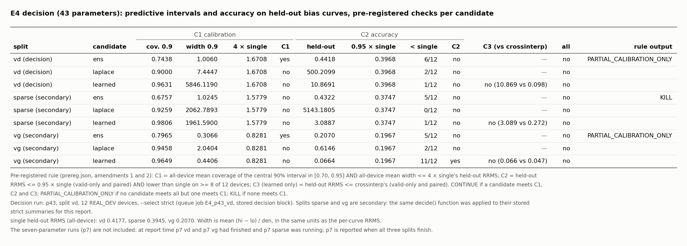
Sources (6 files)
out/research/explore/E4/prereg.jsonout/research/explore/E4/prereg_amendment_1.jsonout/research/explore/E4/prereg_amendment_2.jsonout/research/explore/E4/p43/vd/summary_strict.jsonout/research/explore/E4/p43/sparse/summary_strict.jsonout/research/explore/E4/p43/vg/summary_strict.json
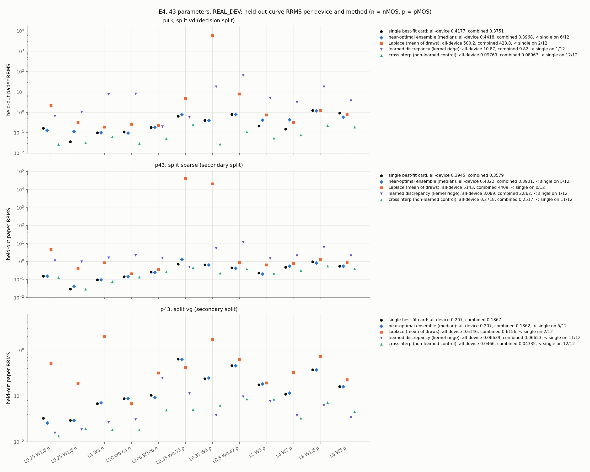
Sources (3 files)
out/research/explore/E4/p43/vd/summary_strict.jsonout/research/explore/E4/p43/sparse/summary_strict.jsonout/research/explore/E4/p43/vg/summary_strict.json
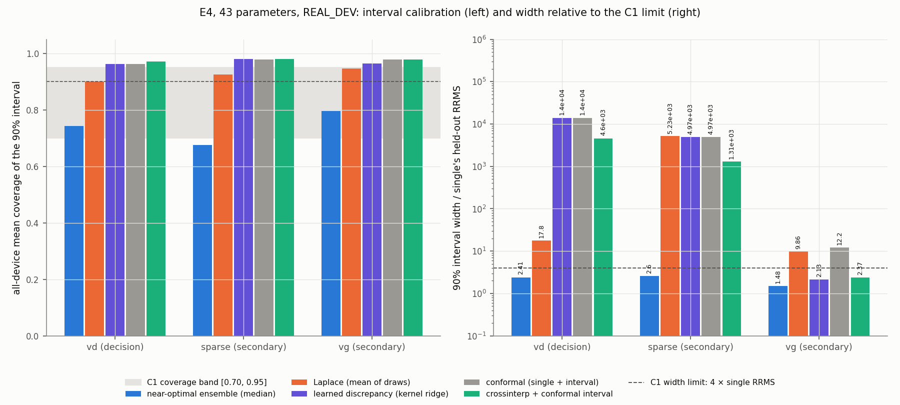
Sources (3 files)
out/research/explore/E4/p43/vd/summary_strict.jsonout/research/explore/E4/p43/sparse/summary_strict.jsonout/research/explore/E4/p43/vg/summary_strict.json
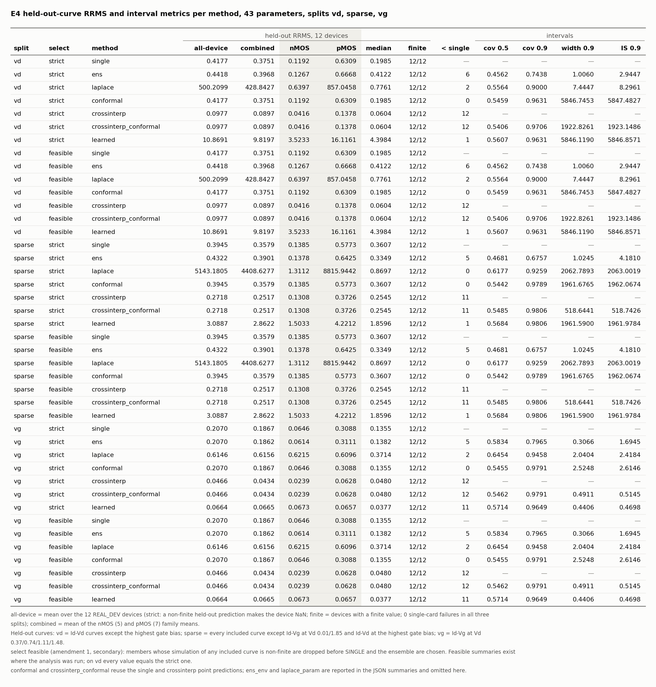
Sources (6 files)
out/research/explore/E4/p43/vd/summary_strict.jsonout/research/explore/E4/p43/vd/summary_feasible.jsonout/research/explore/E4/p43/sparse/summary_strict.jsonout/research/explore/E4/p43/sparse/summary_feasible.jsonout/research/explore/E4/p43/vg/summary_strict.jsonout/research/explore/E4/p43/vg/summary_feasible.json
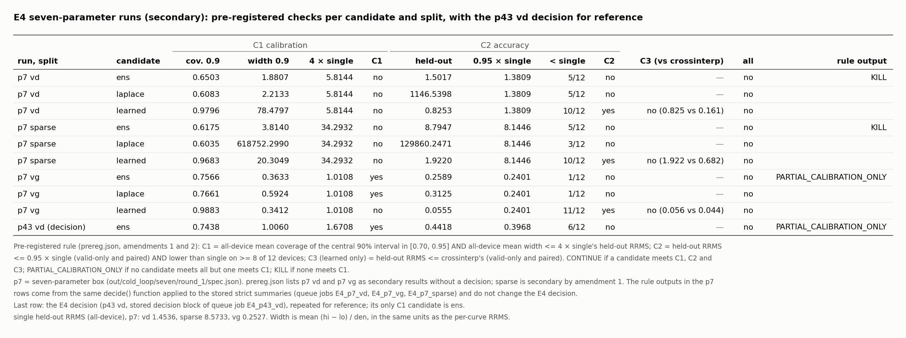
Sources (7 files)
out/research/explore/E4/prereg.jsonout/research/explore/E4/prereg_amendment_1.jsonout/research/explore/E4/prereg_amendment_2.jsonout/research/explore/E4/p7/vd/summary_strict.jsonout/research/explore/E4/p7/sparse/summary_strict.jsonout/research/explore/E4/p7/vg/summary_strict.jsonout/research/explore/E4/p43/vd/summary_strict.json
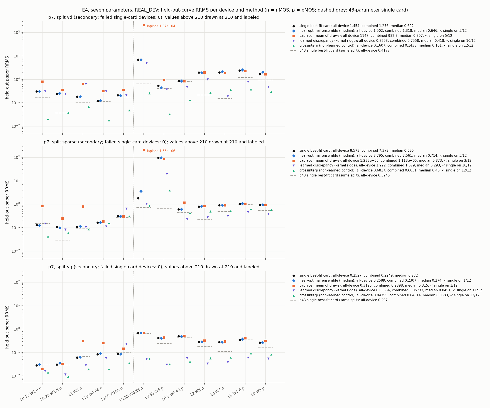
Sources (6 files)
out/research/explore/E4/p7/vd/summary_strict.jsonout/research/explore/E4/p7/sparse/summary_strict.jsonout/research/explore/E4/p7/vg/summary_strict.jsonout/research/explore/E4/p43/vd/summary_strict.jsonout/research/explore/E4/p43/sparse/summary_strict.jsonout/research/explore/E4/p43/vg/summary_strict.json
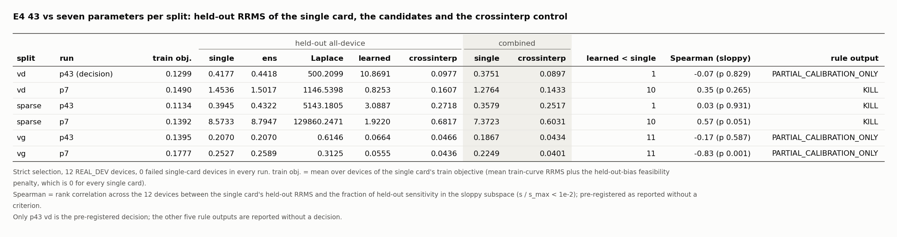
Sources (6 files)
out/research/explore/E4/p43/vd/summary_strict.jsonout/research/explore/E4/p43/sparse/summary_strict.jsonout/research/explore/E4/p43/vg/summary_strict.jsonout/research/explore/E4/p7/vd/summary_strict.jsonout/research/explore/E4/p7/sparse/summary_strict.jsonout/research/explore/E4/p7/vg/summary_strict.json
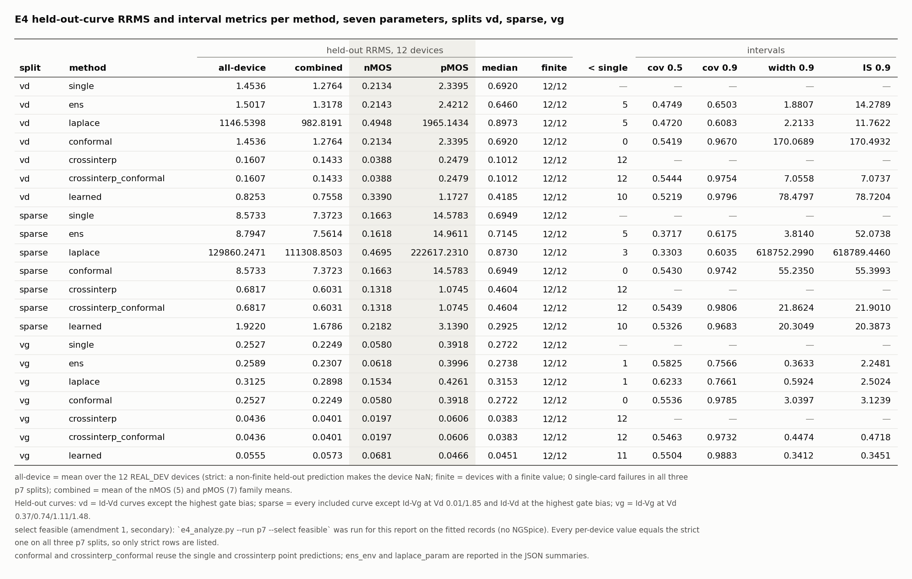
Sources (6 files)
out/research/explore/E4/p7/vd/summary_strict.jsonout/research/explore/E4/p7/vd/summary_feasible.jsonout/research/explore/E4/p7/sparse/summary_strict.jsonout/research/explore/E4/p7/sparse/summary_feasible.jsonout/research/explore/E4/p7/vg/summary_strict.jsonout/research/explore/E4/p7/vg/summary_feasible.json
Caveats and open checks
- 12 REAL_DEV devices; REAL_TEST is not loaded.
- Interval widths are mean (hi - lo) / den, in the units of the per-curve RRMS; conformal and learned widths on vd and sparse are > 1000 x the single card's RRMS.
- The sparse and vg rule outputs and all p7 rule outputs are secondary; only p43 vd is the pre-registered decision.
- p7 single-card means on vd and sparse are each determined by one pMOS device; medians: vd 0.692, sparse 0.695, vg 0.272.
Source files
out/research/explore/E4/prereg.jsonout/research/explore/E4/prereg_amendment_1.jsonout/research/explore/E4/prereg_amendment_2.jsonout/research/explore/E4/p43/vd/summary_strict.jsonout/research/explore/E4/p43/sparse/summary_strict.jsonout/research/explore/E4/p43/vg/summary_strict.jsonscripts/research/explore/e4_fit.pyscripts/research/explore/e4_analyze.pyscripts/research/plot_explore_e2_e3_e4.pyout/research/explore/E4/p7/vd/summary_strict.jsonout/research/explore/E4/p7/sparse/summary_strict.jsonout/research/explore/E4/p7/vg/summary_strict.jsonscripts/research/plot_explore_e4p7_e5.py
Pre-registration files
- E1:
out/research/explore/E1/prereg.json - E2:
out/research/explore/E2/prereg.json - E3:
out/research/explore/E3/prereg.json,out/research/explore/E3/prereg_addendum.json - E4:
out/research/explore/E4/prereg.json, amendments 1 and 2 - E5:
out/research/explore/E5/prereg.json - Device split:
out/research/explore/real_split.json(REAL_DEV 12, REAL_TEST 6)
Cryogenic SkyWater 77 K cards
Device-venue candidate. Cold-start reruns of the paper pipeline, direct NGSpice fits and a simulated temperature benchmark.
How low can the paper RRMS on the 18 measured 77 K SkyWater devices go from a cold start (no released 77 K multipliers in boxes, starts or fallback), and at how many NGSpice calls?
- 43 parameters, after FD, all-device (combined): direct NGSpice round 3 0.1044 (0.0976); NGSpice-swap search round 1 0.1106 (0.1036). Paper pipeline round 4 + FD, corrected cards: 0.1477 (0.1394), 18 of 18 devices valid. Paper pipeline round 4 raw, final selection rerun with failed-curve rejection: 0.1522 (0.1437), 18 of 18 devices valid; before the fix the stored value was 0.1513 (0.1427) with 1 failed device. Paper card, 43 parameters: 0.2038 (0.1905). details
Sources
out/research/report/2026-10-16_baseline_results/tables.mdout/research/pipe_fixed/full_r4/summary.mdout/research/audit/failed_curves.jsonout/research/polished/pipe43_r4_fixed_fd/real/summary.json - Seven parameters, after FD: paper pipeline round 4 0.1643 (0.1548); direct NGSpice 0.1670 (0.1570). Paper card, seven parameters: 0.2284 (0.2135). Released card: 0.2751 (0.2595). details
Source
out/research/report/2026-10-16_baseline_results/tables.md - Simulated 77–300 K benchmark, held-out temperatures, all-device after FD: pipeline search on NGSpice 0.0004, paper-MLP surrogate search 0.0007, direct NGSpice 0.0117. details
Source
out/research/report/2026-10-16_baseline_results/tables.md
- Temperature-conditioned surrogates (DeepONet, FNO, ResMLP), a one-pass direct MLP, then the temperature table. 1 running, 2 queued, 6 done, 1 failed
Source
out/research/queue.txt - Physicality check of fitted cards with parameters at the box edges (for example rdsw up to ×2·10^4 of released) before any card is presented. Not queued.
Source
docs/RESEARCH_LOOP.md - Check whether the seven-parameter simulated truths lie outside the 43-parameter round-4 box (pipeline 43 r4 + FD: sets 0 and 2 have means 4.9 and 5.0 from nmos_L1_W3). Not queued.
Source
docs/RESEARCH_LOOP.md
Status as of 2026-10-17
Setup and reference cards
- Simulator: a native arm64 build of the ngspice-41 release (
~/cryo-ng41/arm64/bin/ngspice); the x86_64 conda-forge build no longer runs on macOS 27. It reproduces the reference scores exactly, andverify_simulator.pyagrees with the upstream sweeps to ≤1e-11 A. - Cold start: round 1 is centred on the multiplier-free card and searched log-uniformly: vth0 within ×3, the other six paper parameters within ×100, the remaining sensitivity-screened parameters within ×3. Each later round re-centres every device's box on its selected NGSpice-validated card; interior coordinates halve their log width, edge coordinates keep it.
- Surrogates are always trained from random initialization.
Sources docs/RESEARCH_LOOP.md src/cryoml/cold_start.py out/tables/simulator_verification_arm64_ng41.json
| method | all-device | combined | nMOS | pMOS |
|---|---|---|---|---|
| Reference: released card | 0.2751 | 0.2595 | 0.1198 | 0.3992 |
| Reference: paper, 7 parameters | 0.2284 | 0.2135 | 0.0788 | 0.3481 |
| Reference: paper, 43 parameters | 0.2038 | 0.1905 | 0.0704 | 0.3105 |
Source out/research/report/2026-10-16_baseline_results/tables.md
Cold-start card with every released multiplier = 1: all-device 11.6006, nMOS 0.6847, pMOS 20.3333.
Source out/research/reference_scores.json
Claims
5 verifiedverifiedWith 43 parameters and a cold start, direct NGSpice reaches 0.1044 all-device after FD; the paper's 43-parameter card scores 0.2038.0.1044 vs 0.2038 all-device, after FD (combined 0.0976 vs 0.1905)
What it is
Question: how low can the measured-data RRMS go with 43 parameters when no released 77 K multiplier is used?
Direct NGSpice: CMA-ES then TRF directly on NGSpice (scripts/research/ngspice_direct.py), round 1 seeded from the seven-parameter fit, rounds 2 and 3 re-centred with the cold-loop rule. Paper pipeline: bank → surrogate → multistart surrogate FD → NGSpice validation, four rounds. FD: uniform polish for every method.
What we did
- Direct NGSpice 43:
full_r1_direct_seeded→full_r2_direct→full_r3_direct, about 21.9k NGSpice calls per device in round 1 (TRF Jacobians included);direct43_r3_fdpolish (314 calls per device). - Pipeline 43:
scripts/research/cold_loop.py --set full, rounds 1–4, finished 2026-10-16 05:39 (12.4 h);fd_pipe43_r4_real(338 s) polished the round-4 card selected before the fix and is superseded byfd_pipe43_r4_fixed(33 s, 2026-10-17 07:13) on the corrected card. - All re-scored independently with
scripts/research/verify_direct.pyandverify_cold_results.py. - Final selection rerun for round 4 (logged 2026-10-16 22:18):
out/research/pipe_fixed/full_r4, with the round-4 surrogate (forward-model checksum identical toout/cold_loop/full/round_4/extract/forward_model.pt) and the same rule. Onlynmos_L8_W1p6changes: its selected card changes from an FD endpoint with 9 of 10 included curves failed (stored 0.0263) to another FD endpoint (0.0431). The other 17 devices keep the same card and score.
Result
| quantity | value | convention | source |
|---|---|---|---|
| Direct NGSpice 43, round 3: raw / + FD | 0.1049 / 0.1044 | all-device | out/research/polished/direct43_r3_fd/real/summary.json |
| Direct NGSpice 43, round 3 + FD: nMOS / pMOS | 0.0363 / 0.1588 | family means | out/research/polished/direct43_r3_fd/real/summary.json |
| NGSpice swap 43, round 1 + FD | 0.1106 / 0.1036 | all-device / combined | out/research/polished/swap_full_r1_fd/real/summary.json |
| Pipeline 43, round 4, raw | 0.1522 (0.1437); 18 of 18 devices valid; nmos_L8_W1p6 0.0263 → 0.0431 | all-device (combined); final selection rerun with failed-curve rejection | out/research/pipe_fixed/full_r4/summary.md |
| Pipeline 43, round 4, + FD | 0.1477 (0.1394); 18 of 18 devices valid | all-device (combined); FD polish of the corrected card; the earlier FD run on the card selected before the fix is in the caveats | out/research/polished/pipe43_r4_fixed_fd/real/summary.json |
| Paper card, 43 parameters | 0.2038 / 0.1905 | all-device (paper's reported value) / combined | out/research/reference_scores.json |
| NGSpice calls per device, cumulative | 57,502 / 30,114 | direct r3 + FD / swap r1 + FD; the pipeline r4 + FD count (40,417) belongs to the superseded FD run | out/research/report/2026-10-16_baseline_results/tables.md |
The figures and the Measured 77 K data table show the pipeline-43 values stored before the fix.
Sources (21 files)
data/processed/cold_loop/full_r1/manifest.jsondata/processed/cold_loop/full_r4/manifest.jsondata/processed/cold_loop/seven_r1/manifest.jsondata/processed/cold_loop/seven_r4/manifest.jsonout/cold_loop/full/round_1/extract/summary.jsonout/cold_loop/full/round_4/extract/summary.jsonout/cold_loop/seven/round_1/extract/summary.jsonout/cold_loop/seven/round_4/extract/summary.jsonout/research/ngspice_direct/full_r1_direct_cold/summary.jsonout/research/ngspice_direct/full_r1_direct_seeded/summary.jsonout/research/ngspice_direct/full_r3_direct/summary.jsonout/research/ngspice_direct/seven_r1_direct/summary.jsonout/research/polished/direct43_fd/real/summary.jsonout/research/polished/direct43_r3_fd/real/summary.jsonout/research/polished/direct7_fd/real/summary.jsonout/research/polished/pipe43_r1_fd/real/summary.jsonout/research/polished/pipe43_r4_fd/real/summary.jsonout/research/polished/pipe_r4_fd/real/summary.jsonout/research/polished/swap_full_r1_fd/real/summary.jsonout/research/swap_search/full_round_1/summary.jsonout/research/swap_search/seven_round_1/summary.json
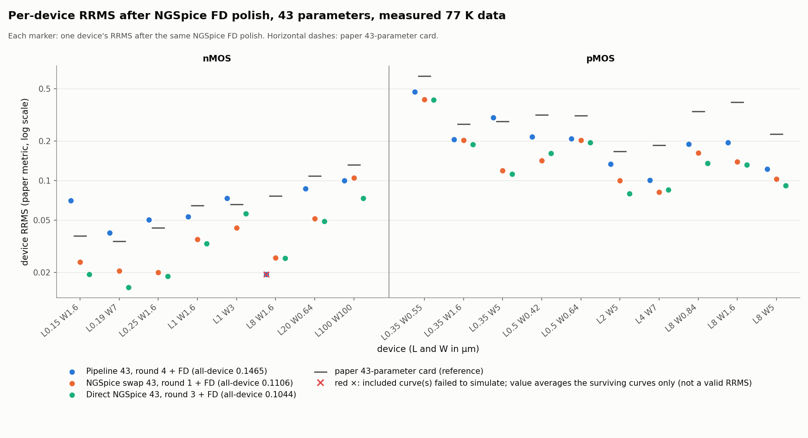
Sources (4 files)
out/research/polished/pipe43_r4_fd/real/summary.jsonout/research/polished/swap_full_r1_fd/real/summary.jsonout/research/polished/direct43_r3_fd/real/summary.jsonout/research/reference_scores.json
| method | stage | all-device | combined | nMOS | pMOS | NGSpice calls/device (this run) | NGSpice calls/device (cumulative) | failed devices | all-device, valid devices only | all-device, penalized |
|---|---|---|---|---|---|---|---|---|---|---|
| Reference: released card | published card | 0.2751 | 0.2595 | 0.1198 | 0.3992 | — | — | 0 | 0.2751 | 0.2751 |
| Reference: paper, 7 parameters | published card | 0.2284 | 0.2135 | 0.0788 | 0.3481 | — | — | 0 | 0.2284 | 0.2284 |
| Reference: paper, 43 parameters | published card | 0.2038 | 0.1905 | 0.0704 | 0.3105 | — | — | 0 | 0.2038 | 0.2038 |
| Pipeline 7, round 1 | method output | 0.2367 | 0.2251 | 0.1211 | 0.3291 | 10,009 | 10,009 | 0 | 0.2367 | 0.2367 |
| Pipeline 7, round 4 | method output | 0.1697 | 0.1602 | 0.0746 | 0.2457 | 10,008 | 40,034 | 0 | 0.1697 | 0.1697 |
| Pipeline 7, round 4 | + NGSpice FD | 0.1643 | 0.1548 | 0.0694 | 0.2403 | 270 | 40,304 | 0 | 0.1643 | 0.1643 |
| Pipeline 43, round 1 | method output | 0.2375 | 0.2281 | 0.1435 | 0.3128 | 10,009 | 10,009 | 1 | 0.2395 | 0.2920 |
| Pipeline 43, round 1 | + NGSpice FD | 0.1824 | 0.1730 | 0.0881 | 0.2579 | 356 | 10,364 | 1 | 0.1853 | 0.2373 |
| Pipeline 43, round 4 | method output | 0.1513 | 0.1427 | 0.0652 | 0.2201 | 10,009 | 40,035 | 1 | 0.1586 | 0.6500 |
| Pipeline 43, round 4 | + NGSpice FD | 0.1465 | 0.1380 | 0.0617 | 0.2143 | 382 | 40,417 | 1 | 0.1539 | 0.6455 |
| NGSpice swap 7, round 1 | method output | 0.1887 | 0.1767 | 0.0683 | 0.2850 | 1,911 | 11,911 | 0 | 0.1887 | 0.1887 |
| NGSpice swap 43, round 1 | method output | 0.1125 | 0.1053 | 0.0410 | 0.1696 | 19,854 | 29,854 | 0 | 0.1125 | 0.1125 |
| NGSpice swap 43, round 1 | + NGSpice FD | 0.1106 | 0.1036 | 0.0407 | 0.1664 | 260 | 30,114 | 0 | 0.1106 | 0.1106 |
| Direct NGSpice 7, round 1 | method output | 0.1676 | 0.1575 | 0.0665 | 0.2484 | 3,283 | 13,283 | 0 | 0.1676 | 0.1676 |
| Direct NGSpice 7, round 1 | + NGSpice FD | 0.1670 | 0.1570 | 0.0665 | 0.2475 | 187 | 13,470 | 0 | 0.1670 | 0.1670 |
| Direct NGSpice 43, round 1, cold | method output | 0.1269 | 0.1186 | 0.0444 | 0.1929 | 21,882 | 21,882 | 0 | 0.1269 | 0.1269 |
| Direct NGSpice 43, round 1, seeded from 7 | method output | 0.1201 | 0.1126 | 0.0456 | 0.1797 | 21,213 | 34,497 | 0 | 0.1201 | 0.1201 |
| Direct NGSpice 43, round 1, seeded from 7 | + NGSpice FD | 0.1191 | 0.1117 | 0.0453 | 0.1781 | 319 | 34,815 | 0 | 0.1191 | 0.1191 |
| Direct NGSpice 43, round 3 | method output | 0.1049 | 0.0981 | 0.0366 | 0.1596 | 8,405 | 57,188 | 0 | 0.1049 | 0.1049 |
| Direct NGSpice 43, round 3 | + NGSpice FD | 0.1044 | 0.0976 | 0.0363 | 0.1588 | 314 | 57,502 | 0 | 0.1044 | 0.1044 |
- all-device = mean over 18 devices; combined = mean of the nMOS (8) and pMOS (10) family means.
- NGSpice calls per device: 'this run' is the run's own count (pipeline: bank simulations of that round plus NGSpice validation of candidates; +FD rows: FD polish only). 'cumulative' adds every bank used for starts or training and every earlier round or seed run named in the summary/spec provenance.
- Reference rows: all-device values are the paper's reported values; combined/nMOS/pMOS from out/research/reference_scores.json.
- failed dev. = devices with an included (frozen-inclusion) metric curve that failed to simulate; their stored RRMS averages only the surviving curves, so it is not a valid paper RRMS (upstream rrmsCalc.py gives NaN). The all-device/combined/family columns are the stored values; valid-only = all-device mean over the valid devices; penalized = every device, failed curves at RRMS 10 (ngspice_fit.PENALTY; penalized convention, not the paper metric). Source: cryoml.strict_score.
- Pipeline 43, round 1 (method output): 1 failed device(s): nmos_L0p15_W1p6 (1 included curve(s) non-finite); valid-only all-device 0.2395 over 17 devices, combined 0.2238; penalized all-device 0.2920.
- Pipeline 43, round 1 (+ NGSpice FD): 1 failed device(s): nmos_L0p15_W1p6 (1 included curve(s) non-finite); valid-only all-device 0.1853 over 17 devices, combined 0.1698; penalized all-device 0.2373.
- Pipeline 43, round 4 (method output): 1 failed device(s): nmos_L8_W1p6 (9 included curve(s) non-finite); valid-only all-device 0.1586 over 17 devices, combined 0.1454; penalized all-device 0.6500.
- Pipeline 43, round 4 (+ NGSpice FD): 1 failed device(s): nmos_L8_W1p6 (9 included curve(s) non-finite); valid-only all-device 0.1539 over 17 devices, combined 0.1410; penalized all-device 0.6455.
- Pipeline 43, round 1: the FD run's re-score of its start differs from the method's own score on nmos_L0p15_W1p6 0.2035 vs 1.1832 (own vs FD start); the method-output row uses the method's own score. A large FD-start value is the penalized start objective of a card with failed included curves (see failed dev.).
- Pipeline 43, round 4: the FD run's re-score of its start differs from the method's own score on nmos_L8_W1p6 0.0263 vs 9.0026 (own vs FD start); the method-output row uses the method's own score. A large FD-start value is the penalized start objective of a card with failed included curves (see failed dev.).
Source out/research/report/2026-10-16_baseline_results/tables.md
| headline | failed devices | failed device(s) | stored all-device | stored combined | valid-only all-device | valid-only combined | penalized all-device | penalized combined |
|---|---|---|---|---|---|---|---|---|
| pipeline 43, round 4, raw (rounds / cryo-43 claims) | 1 | nmos_L8_W1p6 | 0.1513 | 0.1427 | 0.1586 | 0.1454 | 0.6500 | 0.7037 |
| pipeline 43, round 4, + FD | 1 | nmos_L8_W1p6 | 0.1465 | 0.1380 | 0.1539 | 0.1410 | 0.6455 | 0.6994 |
| NGSpice swap 43, round 1 | 0 | none | 0.1125 | 0.1053 | 0.1125 | 0.1053 | 0.1125 | 0.1053 |
| NGSpice swap 43, round 1, + FD | 0 | none | 0.1106 | 0.1036 | 0.1106 | 0.1036 | 0.1106 | 0.1036 |
| direct NGSpice 43, round 3 | 0 | none | 0.1049 | 0.0981 | 0.1049 | 0.0981 | 0.1049 | 0.0981 |
| direct NGSpice 43, round 3, + FD | 0 | none | 0.1044 | 0.0976 | 0.1044 | 0.0976 | 0.1044 | 0.0976 |
- Runs audited: 227; runs with failed devices: 16. Inclusion set: out/pdk_baseline/pdk_baseline.json (frozen inclusion).
- stored = the value in the result file: for a failed device, metrics.device_rrms_new averages only the surviving included curves (upstream rrmsCalc.py gives NaN).
- valid-only: mean over devices whose included curves all simulate; n = 18 minus failed devices.
- penalized convention: each failed included curve at RRMS 10 (ngspice_fit.PENALTY); not the paper metric.
- all-device = mean over devices; combined = mean of the nMOS and pMOS family means.
Source out/research/report/2026-10-16_dev_iteration1/tables.md
| device | paper 43 card | pipeline 43 r4 + FD, corrected card | swap 43 r1 + FD | direct 43 r3 + FD |
|---|---|---|---|---|
nmos_L0p15_W1p6 | 0.0380 | 0.0705 | 0.0241 | 0.0193 |
nmos_L0p19_W7 | 0.0346 | 0.0402 | 0.0207 | 0.0155 |
nmos_L0p25_W1p6 | 0.0438 | 0.0505 | 0.0200 | 0.0188 |
nmos_L1_W1p6 | 0.0648 | 0.0531 | 0.0358 | 0.0331 |
nmos_L1_W3 | 0.0657 | 0.0735 | 0.0437 | 0.0561 |
nmos_L8_W1p6 | 0.0766 | 0.0413 | 0.0258 | 0.0257 |
nmos_L20_W0p64 | 0.1083 | 0.0866 | 0.0513 | 0.0491 |
nmos_L100_W100 | 0.1317 | 0.1001 | 0.1045 | 0.0732 |
pmos_L0p35_W0p55 | 0.6203 | 0.4725 | 0.4132 | 0.4090 |
pmos_L0p35_W1p6 | 0.2691 | 0.2046 | 0.2025 | 0.1876 |
pmos_L0p35_W5 | 0.2813 | 0.3020 | 0.1189 | 0.1122 |
pmos_L0p5_W0p42 | 0.3161 | 0.2151 | 0.1417 | 0.1617 |
pmos_L0p5_W0p64 | 0.3108 | 0.2088 | 0.2024 | 0.1943 |
pmos_L2_W5 | 0.1670 | 0.1332 | 0.1003 | 0.0796 |
pmos_L4_W7 | 0.1855 | 0.1005 | 0.0815 | 0.0849 |
pmos_L8_W0p84 | 0.3343 | 0.1889 | 0.1620 | 0.1352 |
pmos_L8_W1p6 | 0.3940 | 0.1951 | 0.1394 | 0.1322 |
pmos_L8_W5 | 0.2263 | 0.1220 | 0.1024 | 0.0914 |
| mean (all-device) | 0.2038 | 0.1477 | 0.1106 | 0.1044 |
- The paper-card mean row is the mean of the re-simulated per-device scores; the table above lists the paper's reported all-device value.
- pipeline 43 r4 + FD, corrected card: FD polish of the card from the final selection rerun with failed-curve rejection (
out/research/polished/pipe43_r4_fixed_fd).
Sources out/research/reference_scores.json out/research/polished/pipe43_r4_fixed_fd/real/summary.json out/research/polished/swap_full_r1_fd/real/summary.json out/research/polished/direct43_r3_fd/real/summary.json
Caveats and open checks
- Correction (logged 2026-10-16 22:18): the pipeline's final selection was rerun for rounds 1 and 4 with the same surrogates and the rule that rejects candidates with failed included curves (
out/research/pipe_fixed/full_r1,out/research/pipe_fixed/full_r4). Rounds 2–3 were not rerun. The round-4 box comes from the round-3 pick made before the fix. - Values before the fix, pipeline 43 round 4, all-device, raw / + FD: stored 0.1513 / 0.1465; valid-only 0.1586 / 0.1539 over 17 devices; penalized 0.6500 / 0.6455; 1 failed device (
nmos_L8_W1p6, 9 of 10 included curves) (out/research/audit/failed_curves.json). - Dropped-curve bug:
metrics.device_rrms_newaveraged only the finite included curves, so a device whose included metric curve failed to simulate was stored with the mean of its surviving curves (upstreamrrmsCalc.pygives NaN for that device), while the FD polish scored the same start with the penalized objective (RRMS 10 per failed curve). This gave the FD-start mismatches 0.2035 vs 1.1832 (pipeline 43 round 1,nmos_L0p15_W1p6, 1 of 10 included curves failed) and 0.0263 vs 9.0026 (pipeline 43 round 4,nmos_L8_W1p6, 9 of 10 failed). Fix:cryoml.strict_scoremarks such devices as failed and every report gives the failed-device count, the mean over valid devices and the penalized mean next to the stored value (commit 15d1f3e);polish_cards.pyscores its start withfinal_scoreand records failed included curves (8302a9d);metrics.device_rrms_newnow returns NaN for a device with a non-finite or missing included curve and the pipeline's NGSpice validation sorts such candidates last (a0e1e97). Result files written before the fix keep their stored values;out/research/audit/failed_curves.jsonrecomputes the three values for 227 runs, 16 of which have a failed device. - About 6 of 43 parameters per device sit at the box edge in the direct fits (mostly secondary parameters held to ×3: dwg, k3b, pdiblc2, xj, prwg, k2). A physicality check is pending before any card is presented.
- Direct NGSpice 43-parameter fits used about 21.9k NGSpice calls per device per round (TRF Jacobian evaluations included), not 3.3k as first logged.
- These runs used the real devices, which are TEST data under the ICML protocol defined later the same day.
Source files
scripts/research/ngspice_direct.pyscripts/research/cold_loop.pyscripts/research/polish_cards.pyout/research/ngspice_direct/full_r3_direct/summary.jsonout/research/polished/direct43_r3_fd/real/summary.jsonout/research/polished/pipe43_r4_fd/real/summary.jsonout/research/polished/swap_full_r1_fd/real/summary.jsonout/research/reference_scores.jsonout/research/report/2026-10-16_baseline_results/README.mddocs/RESEARCH_LOOP.mdout/research/audit/failed_curves.jsonout/research/pipe_fixed/full_r4/summary.jsonout/research/polished/pipe43_r4_fixed_fd/real/summary.json
verifiedWith seven parameters the measured-data RRMS stops near 0.164 all-device; a 3× longer direct search changes it by 0.0005.0.1643 all-device, pipeline 7 round 4 + FD (combined 0.1548)
What it is
Question: is the seven-parameter error on measured data an optimization failure or a model-form limit?
Test: the same methods on held-out simulated devices, where the true card scores 0. A method that inverts the simulator there but not the measurements is limited by the seven-parameter model form.
What we did
- Cold seven-parameter pipeline rounds 1–4 and direct NGSpice in the round-1 box, 2026-10-15; scores re-checked with
scripts/research/verify_cold_results.py(out/research/verify_seven_r4.json). - Uniform FD polish of every method on real and three simulated sets (
scripts/research/polish_cards.py).
Result
| quantity | value | convention | source |
|---|---|---|---|
| Pipeline 7, round 4: raw / + FD | 0.1697 / 0.1643 | all-device | out/research/polished/pipe_r4_fd/real/summary.json |
| Direct NGSpice 7: raw / + FD | 0.1676 / 0.1670 | all-device | out/research/polished/direct7_fd/real/summary.json |
| Direct NGSpice 7, 3× budget (7.9k calls) vs 1× | 0.16708 vs 0.16757 | all-device | docs/RESEARCH_LOOP.md |
| Pipeline 7 r4 + FD on held-out simulated devices | 0.0003 / 0.0000 | sim all-device / sim median | docs/RESEARCH_LOOP.md |
| Paper card, seven parameters | 0.2284 / 0.2135 | all-device / combined | out/research/reference_scores.json |
| method + NGSpice FD | real all-device | real combined | real median | sim all-device | sim median | FD calls/device |
|---|---|---|---|---|---|---|
| cold paper pipeline, seven, round 4 | 0.1643 | 0.1548 | 0.1513 | 0.0003 | 0.0000 | 270 |
| direct NGSpice, seven | 0.1670 | 0.1570 | 0.1446 | 0.0190 | 0.0000 | 187 |
| direct NGSpice, 43, seeded (round 1) | 0.1191 | 0.1117 | 0.1071 | 0.0073 | 0.0000 | 319 |
| direct NGSpice, 43, round 3 | 0.1044 | 0.0976 | – | not run | – | 314 |
Source docs/RESEARCH_LOOP.md
Caveats and open checks
- Many seven-parameter direct fits sit at the ×0.01 / ×100 box edges (eta0, vsat, rdsw, delta), and rdsw reaches ×2·10^4 of released on some devices. The fits may rely on non-physical compensation.
- The floor applies to this parameter set and these boxes.
Source files
scripts/research/cold_loop.pyscripts/research/ngspice_direct.pyscripts/research/polish_cards.pyout/research/polished/pipe_r4_fd/real/summary.jsonout/research/polished/direct7_fd/real/summary.jsonout/research/ngspice_direct/seven_r1_direct_long/summary.jsonout/research/verify_seven_r4.jsondocs/RESEARCH_LOOP.md
verifiedEach cold-pipeline round lowers the 43-parameter all-device RRMS: 0.2382, 0.1965, 0.1716, 0.1522 over rounds 1–4, with 18 of 18 devices valid in each round (rounds 1 and 4 from the final selection rerun with failed-curve rejection, rounds 2 and 3 as stored).0.2382 → 0.1522 all-device, raw, pipeline 43, rounds 1–4 (combined 0.2289 → 0.1437); stored before the fix: 0.2375 → 0.1513
What it is
Each round re-centres every device's box on its selected NGSpice-validated card; interior coordinates halve their log width, edge coordinates keep it so the box moves outward. Each round draws a new 10k bank per device and trains a new surrogate from random initialization.
What we did
scripts/research/cold_loop.py --set sevenand--set full, rounds 1–4; 43-parameter rounds finished 2026-10-16 05:39 after 12.4 h; 40,035 cumulative NGSpice calls per device by round 4.- Direct NGSpice chain
full_r1_direct_seeded→full_r2_direct→full_r3_direct(each spec'ssource_runnames the previous round). - Final selection rerun for round 1 (logged 2026-10-16 22:18):
out/research/pipe_fixed/full_r1, with the round-1 surrogate (forward-model checksum identical toout/cold_loop/full/round_1/extract/forward_model.pt) and the rule that rejects candidates with failed included curves (commit a0e1e97). Onlynmos_L0p15_W1p6changes: its selected card changes from an FD endpoint (0.2035, 1 of 10 included curves failed) to a bank start (0.2159). The other 17 devices keep the same card and score. - Final selection rerun for round 4 (logged 2026-10-16 22:18):
out/research/pipe_fixed/full_r4, with the round-4 surrogate (forward-model checksum identical toout/cold_loop/full/round_4/extract/forward_model.pt) and the same rule. Onlynmos_L8_W1p6changes: its selected card changes from an FD endpoint with 9 of 10 included curves failed (stored 0.0263) to another FD endpoint (0.0431). The other 17 devices keep the same card and score.
Result
| quantity | value | convention | source |
|---|---|---|---|
| Pipeline 7, rounds 1–4 | 0.2367, 0.1921, 0.1758, 0.1697 | all-device, raw | out/research/report/2026-10-16_baseline_results/tables.md |
| Pipeline 43, rounds 1–4 | 0.2382, 0.1965, 0.1716, 0.1522 | all-device, raw; rounds 1 and 4: final selection rerun with failed-curve rejection; rounds 2 and 3: stored, 0 failed devices | out/research/pipe_fixed/full_r1/summary.md out/research/pipe_fixed/full_r4/summary.md out/cold_loop/full/round_{2,3}/extract/summary.json |
| Pipeline 43, rounds 1–4, combined | 0.2289, 0.1875, 0.1631, 0.1437 | combined, raw; same rounds as the row above | out/research/pipe_fixed/full_r1/summary.md out/research/pipe_fixed/full_r4/summary.md out/cold_loop/full/round_{2,3}/extract/summary.json |
| A tandem 43, rounds 2 / 3 / 4: stored · valid-only · penalized | 5.8288 / 2.2458 / 1.6969 · 6.0969 / 2.2458 / 1.7538 · 5.9743 / 2.6766 / 1.8114 | all-device; 1 failed device in each round | out/research/audit/failed_curves.json |
| Direct NGSpice 43, rounds 1–3 | 0.1201, 0.1094, 0.1049 | all-device, raw | out/research/report/2026-10-16_baseline_results/tables.md |
| Pipeline 43 surrogate validation loss, rounds 1–4 | 0.0322, 0.0207, 0.0113, 0.0085 | forward model | docs/RESEARCH_LOOP.md |
| Seven parameters: kept candidate is an FD endpoint, rounds 1–4 | 11, 8, 5, 3 of 18 | devices | docs/RESEARCH_LOOP.md |
The figure 03_rounds.png and the batch tables show the pipeline-43 values stored before the fix.
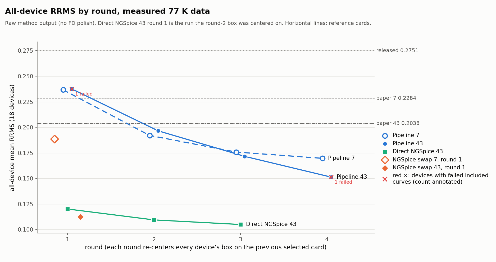
Sources (21 files)
data/processed/cold_loop/full_r1/manifest.jsondata/processed/cold_loop/full_r2/manifest.jsondata/processed/cold_loop/full_r3/manifest.jsondata/processed/cold_loop/full_r4/manifest.jsondata/processed/cold_loop/seven_r1/manifest.jsondata/processed/cold_loop/seven_r2/manifest.jsondata/processed/cold_loop/seven_r3/manifest.jsondata/processed/cold_loop/seven_r4/manifest.jsonout/cold_loop/full/round_1/extract/summary.jsonout/cold_loop/full/round_2/extract/summary.jsonout/cold_loop/full/round_3/extract/summary.jsonout/cold_loop/full/round_4/extract/summary.jsonout/cold_loop/seven/round_1/extract/summary.jsonout/cold_loop/seven/round_2/extract/summary.jsonout/cold_loop/seven/round_3/extract/summary.jsonout/cold_loop/seven/round_4/extract/summary.jsonout/research/ngspice_direct/full_r1_direct_seeded/summary.jsonout/research/ngspice_direct/full_r2_direct/summary.jsonout/research/ngspice_direct/full_r3_direct/summary.jsonout/research/swap_search/full_round_1/summary.jsonout/research/swap_search/seven_round_1/summary.json
| series | round | all-device | combined | nMOS | pMOS | NGSpice calls/device (this run) | NGSpice calls/device (cumulative) | failed devices | all-device, valid devices only | all-device, penalized |
|---|---|---|---|---|---|---|---|---|---|---|
| Pipeline 7 | 1 | 0.2367 | 0.2251 | 0.1211 | 0.3291 | 10,009 | 10,009 | 0 | 0.2367 | 0.2367 |
| Pipeline 7 | 2 | 0.1921 | 0.1820 | 0.0917 | 0.2723 | 10,009 | 20,017 | 0 | 0.1921 | 0.1921 |
| Pipeline 7 | 3 | 0.1758 | 0.1660 | 0.0774 | 0.2545 | 10,008 | 30,026 | 0 | 0.1758 | 0.1758 |
| Pipeline 7 | 4 | 0.1697 | 0.1602 | 0.0746 | 0.2457 | 10,008 | 40,034 | 0 | 0.1697 | 0.1697 |
| Pipeline 43 | 1 | 0.2375 | 0.2281 | 0.1435 | 0.3128 | 10,009 | 10,009 | 1 | 0.2395 | 0.2920 |
| Pipeline 43 | 2 | 0.1965 | 0.1875 | 0.1058 | 0.2691 | 10,009 | 20,018 | 0 | 0.1965 | 0.1965 |
| Pipeline 43 | 3 | 0.1716 | 0.1631 | 0.0865 | 0.2396 | 10,009 | 30,026 | 0 | 0.1716 | 0.1716 |
| Pipeline 43 | 4 | 0.1513 | 0.1427 | 0.0652 | 0.2201 | 10,009 | 40,035 | 1 | 0.1586 | 0.6500 |
| Direct NGSpice 43 | 1 | 0.1201 | 0.1126 | 0.0456 | 0.1797 | 21,213 | 34,497 | 0 | 0.1201 | 0.1201 |
| Direct NGSpice 43 | 2 | 0.1094 | 0.1024 | 0.0393 | 0.1655 | 14,287 | 48,784 | 0 | 0.1094 | 0.1094 |
| Direct NGSpice 43 | 3 | 0.1049 | 0.0981 | 0.0366 | 0.1596 | 8,405 | 57,188 | 0 | 0.1049 | 0.1049 |
| NGSpice swap 7 | 1 | 0.1887 | 0.1767 | 0.0683 | 0.2850 | 1,911 | 11,911 | 0 | 0.1887 | 0.1887 |
| NGSpice swap 43 | 1 | 0.1125 | 0.1053 | 0.0410 | 0.1696 | 19,854 | 29,854 | 0 | 0.1125 | 0.1125 |
- all-device = mean over 18 devices; combined = mean of the nMOS (8) and pMOS (10) family means.
- NGSpice calls per device: 'this run' is the run's own count (pipeline: bank simulations of that round plus NGSpice validation of candidates). 'cumulative' adds every bank used for starts or training and every earlier round or seed run named in the summary/spec provenance.
- Raw method output; no FD polish in this table.
- failed dev. = devices with an included (frozen-inclusion) metric curve that failed to simulate; their stored RRMS averages only the surviving curves, so it is not a valid paper RRMS (upstream rrmsCalc.py gives NaN). The all-device/combined/family columns are the stored values; valid-only = all-device mean over the valid devices; penalized = every device, failed curves at RRMS 10 (ngspice_fit.PENALTY; penalized convention, not the paper metric). Source: cryoml.strict_score.
- Pipeline 43 round 1: 1 failed device(s): nmos_L0p15_W1p6 (1 included curve(s) non-finite); valid-only all-device 0.2395 over 17 devices, combined 0.2238; penalized all-device 0.2920.
- Pipeline 43 round 4: 1 failed device(s): nmos_L8_W1p6 (9 included curve(s) non-finite); valid-only all-device 0.1586 over 17 devices, combined 0.1454; penalized all-device 0.6500.
- Direct NGSpice 43 rounds are the runs full_r1_direct_seeded -> full_r2_direct -> full_r3_direct (each spec's source_run names the previous round).
Source out/research/report/2026-10-16_baseline_results/tables.md
| round | surrogate + search all-device | combined | nMOS | pMOS | forward val loss | A (tandem) all-device |
|---|---|---|---|---|---|---|
| 1 | 0.2382 | 0.2289 | 0.1450 | 0.3128 | 0.0322 | 0.592 |
| 2 | 0.1965 | 0.1875 | 0.1058 | 0.2691 | 0.0207 | 5.83 |
| 3 | 0.1716 | 0.1631 | 0.0865 | 0.2396 | 0.0113 | nan |
| 4 | 0.1522 | 0.1437 | 0.0673 | 0.2201 | 0.0085 | 1.70 |
- Rounds 1 and 4: final selection rerun with failed-curve rejection (
out/research/pipe_fixed/). Rounds 2 and 3: stored values, not rerun (0 failed devices). Stored before the fix (all-device / combined / nMOS / pMOS): round 1 0.2375 / 0.2281 / 0.1435 / 0.3128; round 4 0.1513 / 0.1427 / 0.0652 / 0.2201.
Sources docs/RESEARCH_LOOP.md out/research/pipe_fixed/full_r1/summary.md out/research/pipe_fixed/full_r4/summary.md
| headline | failed devices | failed device(s) | stored all-device | stored combined | valid-only all-device | valid-only combined | penalized all-device | penalized combined |
|---|---|---|---|---|---|---|---|---|
| pipeline 43, round 1, raw (swap / misrank / rounds claims) | 1 | nmos_L0p15_W1p6 | 0.2375 | 0.2281 | 0.2395 | 0.2238 | 0.2920 | 0.2894 |
| pipeline 43, round 4, raw (rounds / cryo-43 claims) | 1 | nmos_L8_W1p6 | 0.1513 | 0.1427 | 0.1586 | 0.1454 | 0.6500 | 0.7037 |
| pipeline 7, round 4, raw | 0 | none | 0.1697 | 0.1602 | 0.1697 | 0.1602 | 0.1697 | 0.1602 |
| A tandem 43, round 2 | 1 | nmos_L100_W100 | 5.8288 | 6.5013 | 6.0969 | 7.3073 | 5.9743 | 6.6650 |
| A tandem 43, round 3 (logged as nan) | 1 | nmos_L0p25_W1p6 | 2.2458 | 1.9891 | 2.2458 | 1.9891 | 2.6766 | 2.5807 |
| A tandem 43, round 4 | 1 | pmos_L4_W7 | 1.6969 | 1.6348 | 1.7538 | 1.7161 | 1.8114 | 1.7378 |
| A tandem 7, round 1 | 1 | pmos_L4_W7 | 2.0402 | 1.9321 | 2.1467 | 2.0806 | 2.1608 | 2.0406 |
- Runs audited: 227; runs with failed devices: 16. Inclusion set: out/pdk_baseline/pdk_baseline.json (frozen inclusion).
- stored = the value in the result file: for a failed device, metrics.device_rrms_new averages only the surviving included curves (upstream rrmsCalc.py gives NaN).
- valid-only: mean over devices whose included curves all simulate; n = 18 minus failed devices.
- penalized convention: each failed included curve at RRMS 10 (ngspice_fit.PENALTY); not the paper metric.
- all-device = mean over devices; combined = mean of the nMOS and pMOS family means.
Source out/research/report/2026-10-16_dev_iteration1/tables.md
Caveats and open checks
- Correction (logged 2026-10-16 22:18): the pipeline's final selection was rerun for rounds 1 and 4 with the same surrogates and the rule that rejects candidates with failed included curves (
out/research/pipe_fixed/full_r1,out/research/pipe_fixed/full_r4). Rounds 2–3 were not rerun. The round-4 box comes from the round-3 pick made before the fix. - The round-2 box for
nmos_L0p15_W1p6is centred on its round-1 card selected before the fix. - At seven parameters, by round 4 the kept candidate is usually a raw NGSpice bank sample (FD endpoint on 3 of 18 devices), so the iterated loop acts mostly as an NGSpice cross-entropy search. The paper's own runs also kept bank samples on 11 of 18 devices.
- Values before the fix, pipeline 43 rounds 1–4, all-device: stored 0.2375, 0.1965, 0.1716, 0.1513; valid-only 0.2395, 0.1965, 0.1716, 0.1586 over 17 / 18 / 18 / 17 devices; penalized 0.2920, 0.1965, 0.1716, 0.6500 (failed included curves at RRMS 10). The failed devices were
nmos_L0p15_W1p6in round 1 (1 of 10 included curves) andnmos_L8_W1p6in round 4 (9 of 10). In the penalized convention round 4 was above rounds 2 and 3 (out/research/audit/failed_curves.json). - The tandem model A at 43 parameters, rounds 2–4, all-device stored 5.8288, 2.2458, 1.6969; each round has 1 failed device (round 3,
nmos_L0p25_W1p6: 10 of 10 included curves failed, logged as nan). - Dropped-curve bug:
metrics.device_rrms_newaveraged only the finite included curves, so a device whose included metric curve failed to simulate was stored with the mean of its surviving curves (upstreamrrmsCalc.pygives NaN for that device), while the FD polish scored the same start with the penalized objective (RRMS 10 per failed curve). This gave the FD-start mismatches 0.2035 vs 1.1832 (pipeline 43 round 1,nmos_L0p15_W1p6, 1 of 10 included curves failed) and 0.0263 vs 9.0026 (pipeline 43 round 4,nmos_L8_W1p6, 9 of 10 failed). Fix:cryoml.strict_scoremarks such devices as failed and every report gives the failed-device count, the mean over valid devices and the penalized mean next to the stored value (commit 15d1f3e);polish_cards.pyscores its start withfinal_scoreand records failed included curves (8302a9d);metrics.device_rrms_newnow returns NaN for a device with a non-finite or missing included curve and the pipeline's NGSpice validation sorts such candidates last (a0e1e97). Result files written before the fix keep their stored values;out/research/audit/failed_curves.jsonrecomputes the three values for 227 runs, 16 of which have a failed device.
Source files
scripts/research/cold_loop.pysrc/cryoml/cold_start.pydata/processed/cold_loop/out/cold_loop/full/out/cold_loop/seven/out/research/ngspice_direct/docs/RESEARCH_LOOP.mdout/research/audit/failed_curves.jsonout/research/pipe_fixed/full_r1/summary.jsonout/research/pipe_fixed/full_r4/summary.json
verifiedThe uniform NGSpice FD polish lowers measured-data all-device RRMS by 0.12–0.46 for the inverse models and by 0.0005–0.0582 for the search pipelines; the largest search-pipeline change is pipeline 43 round 1 on the corrected cards (0.2382 → 0.1800).0.6857 → 0.2270 all-device, tandem A round 4, before → after FD; pipeline 7 r4 0.1697 → 0.1643; pipeline 43 r1 / r4, corrected cards, 0.2382 → 0.1800 / 0.1522 → 0.1477
What it is
FD polish: bounded TRF on frozen-inclusion per-curve NGSpice residuals against the target curves, about 400 simulations per device (max_nfev 400, diff_step 0.01, irls 2), in the method's own search box (pooled B: the union of the round 1–4 boxes). Applied identically to every method, on real and the three simulated sets.
Before this study, ngspice_fit.polish used SciPy's relative diff_step/xtol; a start at the box centre (local = 0) stopped after one rejected step. It now uses an absolute-step local Jacobian (xtol = ftol = gtol = 1e-10). Direct NGSpice runs were not affected.
What we did
scripts/research/polish_cards.pyfor every method (queue jobsfdU_*andfd_*), 2026-10-15 17:30 to 2026-10-16 06:42.fd_pipe43_r1_fixed(32 s) andfd_pipe43_r4_fixed(33 s):scripts/research/polish_cards.py(max_nfev 400, diff_step 0.01, irls 2) on the corrected cardsout/research/pipe_fixed/full_r1andfull_r4, 2026-10-17 07:12–07:13.
Result
| quantity | value | convention | source |
|---|---|---|---|
| A tandem, round 4 | 0.6857 → 0.2270 | all-device | out/research/polished/A_r4_fd/real/summary.json |
| B flow pooled / flow r1 | 0.2922 → 0.1728 / 0.3801 → 0.2209 | all-device | docs/RESEARCH_LOOP.md |
| B WTA pooled / WTA r1 | 0.4608 → 0.2268 / 0.5148 → 0.2587 | all-device | docs/RESEARCH_LOOP.md |
| Pipeline 7 r4 | 0.1697 → 0.1643 | all-device | out/research/report/2026-10-16_baseline_results/tables.md |
| Pipeline 43 r1 / r4, corrected cards, raw → + FD | 0.2382 → 0.1800 / 0.1522 → 0.1477 | all-device; combined 0.2289 → 0.1703 / 0.1437 → 0.1394; 18 of 18 devices valid before and after; FD 350 / 381 NGSpice calls per device; cards from the final selection rerun with failed-curve rejection | out/research/polished/pipe43_r1_fixed_fd/real/summary.json out/research/polished/pipe43_r4_fixed_fd/real/summary.json out/research/report/2026-10-17_arch_study/tables.md |
| Direct 7 / direct 43 r1 / direct 43 r3 / swap 43 r1 | 0.1676 → 0.1670 / 0.1201 → 0.1191 / 0.1049 → 0.1044 / 0.1125 → 0.1106 | all-device | out/research/report/2026-10-16_baseline_results/tables.md |
The figure 06_per_device.png shows pipeline 43 r4 + FD from the superseded FD run.
Sources (4 files)
out/research/polished/pipe43_r4_fd/real/summary.jsonout/research/polished/swap_full_r1_fd/real/summary.jsonout/research/polished/direct43_r3_fd/real/summary.jsonout/research/reference_scores.json
| method | stage | all-device | combined | NGSpice calls/device (this run) |
|---|---|---|---|---|
| Pipeline 7, round 4 | method output | 0.1697 | 0.1602 | 10,008 |
| Pipeline 7, round 4 | + NGSpice FD | 0.1643 | 0.1548 | 270 |
| Pipeline 43, round 1 | method output | 0.2375 | 0.2281 | 10,009 |
| Pipeline 43, round 1 | + NGSpice FD | 0.1824 | 0.1730 | 356 |
| Pipeline 43, round 4 | method output | 0.1513 | 0.1427 | 10,009 |
| Pipeline 43, round 4 | + NGSpice FD | 0.1465 | 0.1380 | 382 |
| NGSpice swap 43, round 1 | method output | 0.1125 | 0.1053 | 19,854 |
| NGSpice swap 43, round 1 | + NGSpice FD | 0.1106 | 0.1036 | 260 |
| Direct NGSpice 7, round 1 | method output | 0.1676 | 0.1575 | 3,283 |
| Direct NGSpice 7, round 1 | + NGSpice FD | 0.1670 | 0.1570 | 187 |
| Direct NGSpice 43, round 1, seeded from 7 | method output | 0.1201 | 0.1126 | 21,213 |
| Direct NGSpice 43, round 1, seeded from 7 | + NGSpice FD | 0.1191 | 0.1117 | 319 |
| Direct NGSpice 43, round 3 | method output | 0.1049 | 0.0981 | 8,405 |
| Direct NGSpice 43, round 3 | + NGSpice FD | 0.1044 | 0.0976 | 314 |
- all-device = mean over 18 devices; combined = mean of the nMOS (8) and pMOS (10) family means.
- NGSpice calls per device: 'this run' is the run's own count (pipeline: bank simulations of that round plus NGSpice validation of candidates; +FD rows: FD polish only). 'cumulative' adds every bank used for starts or training and every earlier round or seed run named in the summary/spec provenance.
- Reference rows: all-device values are the paper's reported values; combined/nMOS/pMOS from out/research/reference_scores.json.
- failed dev. = devices with an included (frozen-inclusion) metric curve that failed to simulate; their stored RRMS averages only the surviving curves, so it is not a valid paper RRMS (upstream rrmsCalc.py gives NaN). The all-device/combined/family columns are the stored values; valid-only = all-device mean over the valid devices; penalized = every device, failed curves at RRMS 10 (ngspice_fit.PENALTY; penalized convention, not the paper metric). Source: cryoml.strict_score.
- Pipeline 43, round 1 (method output): 1 failed device(s): nmos_L0p15_W1p6 (1 included curve(s) non-finite); valid-only all-device 0.2395 over 17 devices, combined 0.2238; penalized all-device 0.2920.
- Pipeline 43, round 1 (+ NGSpice FD): 1 failed device(s): nmos_L0p15_W1p6 (1 included curve(s) non-finite); valid-only all-device 0.1853 over 17 devices, combined 0.1698; penalized all-device 0.2373.
- Pipeline 43, round 4 (method output): 1 failed device(s): nmos_L8_W1p6 (9 included curve(s) non-finite); valid-only all-device 0.1586 over 17 devices, combined 0.1454; penalized all-device 0.6500.
- Pipeline 43, round 4 (+ NGSpice FD): 1 failed device(s): nmos_L8_W1p6 (9 included curve(s) non-finite); valid-only all-device 0.1539 over 17 devices, combined 0.1410; penalized all-device 0.6455.
- Pipeline 43, round 1: the FD run's re-score of its start differs from the method's own score on nmos_L0p15_W1p6 0.2035 vs 1.1832 (own vs FD start); the method-output row uses the method's own score. A large FD-start value is the penalized start objective of a card with failed included curves (see failed dev.).
- Pipeline 43, round 4: the FD run's re-score of its start differs from the method's own score on nmos_L8_W1p6 0.0263 vs 9.0026 (own vs FD start); the method-output row uses the method's own score. A large FD-start value is the penalized start objective of a card with failed included curves (see failed dev.).
Source out/research/report/2026-10-16_baseline_results/tables.md
| cards | stage | all-device | combined | nMOS | pMOS | all-device, FD − raw | failed devices | NGSpice calls/device (this run) | NGSpice calls/device (cumulative) |
|---|---|---|---|---|---|---|---|---|---|
| Corrected pipeline 43, round 1 | method output | 0.2382 | 0.2289 | 0.1450 | 0.3128 | — | 0 | 10,009 | 10,009 |
| Corrected pipeline 43, round 1 | + NGSpice FD | 0.1800 | 0.1703 | 0.0826 | 0.2579 | -0.0582 | 0 | 350 | 10,359 |
| Corrected pipeline 43, round 4 | method output | 0.1522 | 0.1437 | 0.0673 | 0.2201 | — | 0 | 10,009 | 40,035 |
| Corrected pipeline 43, round 4 | + NGSpice FD | 0.1477 | 0.1394 | 0.0645 | 0.2143 | -0.0045 | 0 | 381 | 40,416 |
- all-device = mean over 18 devices; combined = mean of the nMOS (8) and pMOS (10) family means.
- Corrected pipeline = the final selection rerun with the round's surrogate and the rule that rejects candidates with failed included curves (out/research/pipe_fixed/full_r1, full_r4). Rounds 2–3 were not rerun; the round-4 box comes from the stored round-3 pick.
- + NGSpice FD = scripts/research/polish_cards.py (max_nfev 400, diff_step 0.01, irls 2) on those cards against the measured curves.
- NGSpice calls per device: raw 'this run' = the round's bank + the rerun's validation; 'cumulative' adds the banks and stored validations of the earlier rounds; + FD 'this run' = FD polish only. failed dev. = devices with a failed included curve (cryoml.strict_score).
Source out/research/report/2026-10-17_arch_study/tables.md
| headline | failed devices | failed device(s) | stored all-device | stored combined | valid-only all-device | valid-only combined | penalized all-device | penalized combined |
|---|---|---|---|---|---|---|---|---|
| pipeline 43, round 1, raw (swap / misrank / rounds claims) | 1 | nmos_L0p15_W1p6 | 0.2375 | 0.2281 | 0.2395 | 0.2238 | 0.2920 | 0.2894 |
| pipeline 43, round 1, + FD | 1 | nmos_L0p15_W1p6 | 0.1824 | 0.1730 | 0.1853 | 0.1698 | 0.2373 | 0.2347 |
| pipeline 43, round 4, raw (rounds / cryo-43 claims) | 1 | nmos_L8_W1p6 | 0.1513 | 0.1427 | 0.1586 | 0.1454 | 0.6500 | 0.7037 |
| pipeline 43, round 4, + FD | 1 | nmos_L8_W1p6 | 0.1465 | 0.1380 | 0.1539 | 0.1410 | 0.6455 | 0.6994 |
| pipeline 43 r4 + FD, sim set 0 | 1 | pmos_L0p5_W0p42 | 4.9243 | 5.5227 | 5.2116 | 5.5281 | 4.9858 | 5.5780 |
| pipeline 43 r4 + FD, sim set 2 | 1 | pmos_L0p5_W0p42 | 5.0292 | 5.6422 | 5.3225 | 5.6468 | 5.0907 | 5.6975 |
| pipeline 7, round 4, raw | 0 | none | 0.1697 | 0.1602 | 0.1697 | 0.1602 | 0.1697 | 0.1602 |
| pipeline 7, round 4, + FD | 0 | none | 0.1643 | 0.1548 | 0.1643 | 0.1548 | 0.1643 | 0.1548 |
| NGSpice swap 43, round 1 | 0 | none | 0.1125 | 0.1053 | 0.1125 | 0.1053 | 0.1125 | 0.1053 |
| NGSpice swap 43, round 1, + FD | 0 | none | 0.1106 | 0.1036 | 0.1106 | 0.1036 | 0.1106 | 0.1036 |
| direct NGSpice 43, round 3 | 0 | none | 0.1049 | 0.0981 | 0.1049 | 0.0981 | 0.1049 | 0.0981 |
| direct NGSpice 43, round 3, + FD | 0 | none | 0.1044 | 0.0976 | 0.1044 | 0.0976 | 0.1044 | 0.0976 |
- Runs audited: 227; runs with failed devices: 16. Inclusion set: out/pdk_baseline/pdk_baseline.json (frozen inclusion).
- stored = the value in the result file: for a failed device, metrics.device_rrms_new averages only the surviving included curves (upstream rrmsCalc.py gives NaN).
- valid-only: mean over devices whose included curves all simulate; n = 18 minus failed devices.
- penalized convention: each failed included curve at RRMS 10 (ngspice_fit.PENALTY); not the paper metric.
- all-device = mean over devices; combined = mean of the nMOS and pMOS family means.
Source out/research/report/2026-10-16_dev_iteration1/tables.md
Caveats and open checks
- Correction (logged 2026-10-16 22:18): the pipeline's final selection was rerun for rounds 1 and 4 with the same surrogates and the rule that rejects candidates with failed included curves (
out/research/pipe_fixed/full_r1,out/research/pipe_fixed/full_r4). Rounds 2–3 were not rerun. The round-4 box comes from the round-3 pick made before the fix. - Values before the fix (FD runs started from the cards selected before the fix), pipeline 43 r1 / r4, all-device, raw → + FD: stored 0.2375 → 0.1824 / 0.1513 → 0.1465; valid-only 0.2395 → 0.1853 / 0.1586 → 0.1539 (17 valid devices each); penalized 0.2920 → 0.2373 / 0.6500 → 0.6455 (
out/research/audit/failed_curves.json). With these values the upper end of the search-pipeline range was 0.055 (pipeline 43 r1, stored). - Dropped-curve bug:
metrics.device_rrms_newaveraged only the finite included curves, so a device whose included metric curve failed to simulate was stored with the mean of its surviving curves (upstreamrrmsCalc.pygives NaN for that device), while the FD polish scored the same start with the penalized objective (RRMS 10 per failed curve). This gave the FD-start mismatches 0.2035 vs 1.1832 (pipeline 43 round 1,nmos_L0p15_W1p6, 1 of 10 included curves failed) and 0.0263 vs 9.0026 (pipeline 43 round 4,nmos_L8_W1p6, 9 of 10 failed). Fix:cryoml.strict_scoremarks such devices as failed and every report gives the failed-device count, the mean over valid devices and the penalized mean next to the stored value (commit 15d1f3e);polish_cards.pyscores its start withfinal_scoreand records failed included curves (8302a9d);metrics.device_rrms_newnow returns NaN for a device with a non-finite or missing included curve and the pipeline's NGSpice validation sorts such candidates last (a0e1e97). Result files written before the fix keep their stored values;out/research/audit/failed_curves.jsonrecomputes the three values for 227 runs, 16 of which have a failed device. - FD is local: devices whose start lies in another basin stay there, so the inverse models' means stay above the search pipelines after FD.
- Simulated column, pipeline 43 r4 + FD: set 1 mean 0.113; sets 0 and 2 have means 4.9 and 5.0 from one device (
nmos_L1_W3, RRMS ~87); median about 0.09–0.10. Sets 0 and 2 also have 1 failed device each (pmos_L0p5_W0p42, 1 of 9 included curves): set 0 stored 4.9243, valid-only 5.2116, penalized 4.9858; set 2 stored 5.0292, valid-only 5.3225, penalized 5.0907.
Source files
scripts/research/polish_cards.pysrc/cryoml/ngspice_fit.pyscripts/real_fd_polish.pyout/research/polished/out/research/report/2026-10-16_baseline_results/README.mddocs/RESEARCH_LOOP.mdout/research/audit/failed_curves.jsonout/research/pipe_fixed/full_r1/summary.jsonout/research/pipe_fixed/full_r4/summary.jsonout/research/polished/pipe43_r1_fixed_fd/real/summary.jsonout/research/polished/pipe43_r4_fixed_fd/real/summary.json
verifiedOn the simulated 77–300 K benchmark all three methods reach held-out-temperature RRMS of 0.0004–0.0117 after FD, while the temperature exponents g stay weakly identified.0.0004 / 0.0007 / 0.0117 held-out all-device after FD: NGSpice search / paper-MLP surrogate search / direct NGSpice
What it is
Only 77 K measurements exist, so temperature methods are scored on simulated devices. The released 77 K card (tnom = -196.15 C) cannot be heated (about 0.8 A at 150 K; NGSpice hangs at 300 K); with tnom = 27 C all 18 devices simulate from 77 to 300 K.
p(T) = p_stock * m ** (w(T) ** g), w = (27 C - T) / 223.15 K, clipped at 0
p(77 K) = p_stock * m; p(300.15 K) = p_stockSource src/cryoml/temperature.py
14 numbers per device: log m and log g for the seven paper parameters; BSIM4's own temperature coefficients stay zero. 77 K multipliers anchored on the cold seven-parameter round-4 box. Bank: 10k LHC per device in 1.5× that box with g ∈ [1/4, 4], each simulated at 7 temperatures. Truths: 3 sets × 18 devices in 0.75× with g ∈ [1/3, 3]. Observed 77, 150, 225, 300 K; held out 110, 190, 260 K.
What we did
temp_bank_v1(scripts/research/temp_bank.py, 3,049 s),temp_direct(1,025 s),temp_ngspice_search(1,434 s),temp_sur_paper_mlp(3,099 s), 2026-10-16. All seven temperatures run in one NGSpice process (option temp=re-evaluatestemperexpressions; identical to separate decks).- running
temp_sur_resmlpstarted 2026-10-19 14:30:26 - queued
temp_sur_fno_r - queued
temp_table - failed
temp_sur_fnoended 2026-10-18 03:38:38, rc=137 - done
temp_direct_mlpended 2026-10-17 23:37:53, rc=0 - done
temp_sur_deeponetended 2026-10-16 16:26:42, rc=0 - done
temp_sur_paper_mlpended 2026-10-16 09:06:08, rc=0 - done
temp_ngspice_searchended 2026-10-16 08:14:29, rc=0 - done
temp_directended 2026-10-16 07:50:35, rc=0 - done
temp_bank_v1ended 2026-10-16 07:33:30, rc=0
Sources
out/research/queue.txtout/research/done.txt- running
Result
| quantity | value | convention | source |
|---|---|---|---|
| Pipeline search on NGSpice: observed / held-out | 0.0005 / 0.0021 (raw); 1.2e-05 / 0.0004 (+ FD) | all-device, mean over 3 sets | out/research/temp/ngspice_search/ |
| Pipeline search on paper MLP surrogate: observed / held-out | 0.0051 / 0.0081 (raw); 1.5e-05 / 0.0007 (+ FD) | all-device | out/research/temp/surrogate_paper_mlp/ |
| Direct NGSpice (CMA-ES + TRF): observed / held-out | 0.0129 / 0.0362 (raw); 0.0015 / 0.0117 (+ FD) | all-device | out/research/temp/direct/ |
| Parameter error at RRMS ~1e-4 | 0.16–0.27 | local RMS | docs/RESEARCH_LOOP.md |
| Hardest held-out temperature | 110 K | all methods | out/research/report/2026-10-16_baseline_results/tables.md |
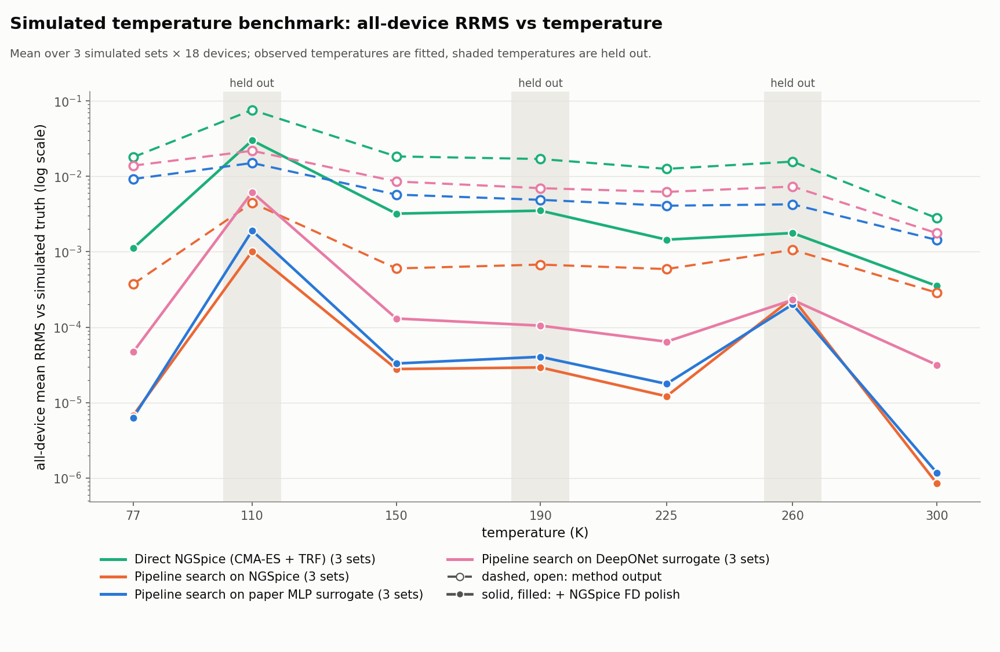
Sources (12 files)
out/research/temp/direct/set_0.jsonout/research/temp/direct/set_1.jsonout/research/temp/direct/set_2.jsonout/research/temp/ngspice_search/set_0.jsonout/research/temp/ngspice_search/set_1.jsonout/research/temp/ngspice_search/set_2.jsonout/research/temp/surrogate_deeponet/set_0.jsonout/research/temp/surrogate_deeponet/set_1.jsonout/research/temp/surrogate_deeponet/set_2.jsonout/research/temp/surrogate_paper_mlp/set_0.jsonout/research/temp/surrogate_paper_mlp/set_1.jsonout/research/temp/surrogate_paper_mlp/set_2.json
| method | stage | sets | all-device observed | all-device held-out | combined observed | combined held-out | nMOS observed | nMOS held-out | pMOS observed | pMOS held-out | NGSpice calls/device (this run) |
|---|---|---|---|---|---|---|---|---|---|---|---|
| Direct NGSpice (CMA-ES + TRF) | method output | 3 | 0.0129 | 0.0362 | 0.0125 | 0.0343 | 0.0082 | 0.0176 | 0.0167 | 0.0510 | 1,512 |
| Direct NGSpice (CMA-ES + TRF) | + NGSpice FD | 3 | 0.0015 | 0.0117 | 0.0015 | 0.0114 | 0.0012 | 0.0080 | 0.0018 | 0.0147 | 1,752 |
| Pipeline search on NGSpice | method output | 3 | 0.0005 | 0.0021 | 0.0005 | 0.0020 | 0.0005 | 0.0011 | 0.0004 | 0.0029 | 2,112 |
| Pipeline search on NGSpice | + NGSpice FD | 3 | 1.2e-05 | 0.0004 | 1.1e-05 | 0.0004 | 2.4e-06 | 0.0002 | 2.0e-05 | 0.0006 | 2,272 |
| Pipeline search on paper MLP surrogate | method output | 3 | 0.0051 | 0.0081 | 0.0050 | 0.0078 | 0.0043 | 0.0057 | 0.0057 | 0.0099 | 9 |
| Pipeline search on paper MLP surrogate | + NGSpice FD | 3 | 1.5e-05 | 0.0007 | 1.3e-05 | 0.0007 | 1.4e-06 | 0.0001 | 2.5e-05 | 0.0012 | 198 |
| Pipeline search on DeepONet surrogate | method output | 3 | 0.0076 | 0.0120 | 0.0074 | 0.0117 | 0.0059 | 0.0083 | 0.0090 | 0.0150 | 9 |
| Pipeline search on DeepONet surrogate | + NGSpice FD | 3 | 6.8e-05 | 0.0022 | 7.0e-05 | 0.0021 | 8.8e-05 | 0.0015 | 5.3e-05 | 0.0027 | 208 |
- Means over simulated sets of 18 devices. all-device = mean over 18 devices; combined = mean of the nMOS (8) and pMOS (10) family means. Values below 0.0001 are shown in scientific notation.
- Failed curves: temp_fit scores a non-finite included curve at RRMS 10 (penalized convention), so no curve is silently dropped here; 0 device-temperature value(s) reach the penalty floor 10 / n_curves.
- NGSpice calls per device: method output = calls before FD (search and validation); +FD rows = total including the FD polish.
- All methods draw bank starts from the temperature bank (10000 cards/device, each simulated at 7 temperatures; data/processed/temp_bank/v1/meta.json); the surrogate is trained on it. Calls exclude the bank.
Source out/research/report/2026-10-16_baseline_results/tables.md
| method | stage | 77 K | 110 K* | 150 K | 190 K* | 225 K | 260 K* | 300 K |
|---|---|---|---|---|---|---|---|---|
| Direct NGSpice (CMA-ES + TRF) | method output | 0.0180 | 0.0759 | 0.0184 | 0.0170 | 0.0126 | 0.0157 | 0.0028 |
| Direct NGSpice (CMA-ES + TRF) | + NGSpice FD | 0.0011 | 0.0299 | 0.0032 | 0.0035 | 0.0014 | 0.0018 | 0.0004 |
| Pipeline search on NGSpice | method output | 0.0004 | 0.0045 | 0.0006 | 0.0007 | 0.0006 | 0.0011 | 0.0003 |
| Pipeline search on NGSpice | + NGSpice FD | 6.8e-06 | 0.0010 | 2.8e-05 | 2.9e-05 | 1.2e-05 | 0.0002 | 8.5e-07 |
| Pipeline search on paper MLP surrogate | method output | 0.0092 | 0.0150 | 0.0057 | 0.0049 | 0.0041 | 0.0043 | 0.0014 |
| Pipeline search on paper MLP surrogate | + NGSpice FD | 6.3e-06 | 0.0019 | 3.3e-05 | 4.1e-05 | 1.8e-05 | 0.0002 | 1.2e-06 |
| Pipeline search on DeepONet surrogate | method output | 0.0139 | 0.0218 | 0.0086 | 0.0070 | 0.0062 | 0.0073 | 0.0018 |
| Pipeline search on DeepONet surrogate | + NGSpice FD | 4.7e-05 | 0.0062 | 0.0001 | 0.0001 | 6.4e-05 | 0.0002 | 3.2e-05 |
- Mean over simulated sets of 18 devices; values below 0.0001 in scientific notation.
Source out/research/report/2026-10-16_baseline_results/tables.md
Caveats and open checks
- The truths come from the same card family as the fits (well-specified), and every method reaches ≤0.0117 held-out after FD; this tier does not separate methods. A misspecified tier is the next step for this benchmark.
- Parameter error stays 0.16–0.27 (local RMS) at RRMS 1e-4, so the g exponents are weakly identifiable from these curves.
- BSIM4's temperature laws are not built for the cryogenic range; intermediate temperatures are model predictions until measurements at another temperature exist. The 77 K fits move nfactor ×26 from stock, and BSIM4 has no temperature law for nfactor.
Source files
src/cryoml/temperature.pysrc/cryoml/temp_fit.pyscripts/research/temp_bank.pyscripts/research/temp_study.pydata/processed/temp_bank/v1/meta.jsonout/research/temp/docs/RESEARCH_LOOP.md
Benchmark (NeurIPS Datasets and Benchmarks fallback)
Fitting problems for simulator-in-the-loop parameter extraction under model misspecification.
Status: may merge into the ICML 2027 tab.
Can the fitting problems built for this project be released as a benchmark with fixed targets, budgets and scoring?
- Five problem sets exist or have generators: SkyWater 77 K measured (18 devices), SkyWater held-out simulated (3 sets × 18), simulated temperature 77–300 K (3 sets × 18), GF180MCU (16 devices, tiers a/b/c) and IHP SG13G2 (16 devices, tiers a/b/c).
Sources
scripts/research/make_sim_targets.pyscripts/research/temp_bank.pyscripts/research/pdk2/make_truth.pyscripts/research/pdk2/ihp_make_truth.py - Refit floors, seven-parameter set, mean of 3 devices, tiers a/b/c: GF180 0 / 0.0136 / 0.0743; IHP 0 / 0.0146 / 0.1227 (final run; 3-device means vary by about 0.03 between truth draws). details
Sources
out/research/pdk2/floors/2026-10-16_final/floors_gf180.jsonout/research/pdk2/floors/2026-10-16_final/floors_ihp.jsonout/research/pdk2/floors/2026-10-16_final/floors_table.png - GF180/IHP truth sets and banks: finished
pdk2_truth(21:38, rc=0),pdk2_bank_seven(21:44, rc=0),pdk2_bank_wide(21:50, rc=0),pdk2_ihp_truth(21:50, rc=0),pdk2_ihp_bank_seven(21:57, rc=0); queued or runningpdk2_ihp_bank_wide. 6 doneSources
out/research/done.txtout/research/queue.txt
- GF180MCU and IHP SG13G2 truths (tiers a, b, c) and seven- and wide-parameter banks. 6 done
Source
out/research/queue.txt
Status as of 2026-10-16
Contents
| problem | simulator and model | devices | targets | fitted parameters | status |
|---|---|---|---|---|---|
| SkyWater 77 K, measured | ngspice-41 (arm64), BSIM4, SkyWater sky130 card with tnom = -196.15 | 18 (8 nMOS, 10 pMOS), 11 curves each | measured I–V | 7 or 43 | in use |
| SkyWater 77 K, held-out simulated | same | 18 per set | 3 sets; one card per device drawn log-uniformly from the round-4 seven-parameter box, clipped into the round-1 box; a true card scores a median RRMS of about 0.45 against the real device | 7 or 43 | in use (DEV: sets 0, 1; TEST: set 2) |
| Simulated temperature 77–300 K | ngspice-41, BSIM4, tnom = 27 C card with temperature expressions | 18 per set | 3 sets; observed 77, 150, 225, 300 K; held out 110, 190, 260 K | 14 per device (log m and log g for seven parameters) | in use; well-specified tier only |
| GF180MCU | ngspice-41, BSIM4 bins, 3.3 V | 16 | tiers a, b, c; 3 sets × 16 | 7 (seven) or 21 (wide) | generator built; truths and banks queued |
| IHP SG13G2 | Homebrew ngspice-46, PSP 103.6 via OSDI (prebuilt macOS OpenVAF-Reloaded), 1.2 V | 16 | tiers a, b, c; 3 sets × 16 | 7 (seven) or 12 (wide) | generator built; truths and banks queued |
Sources docs/RESEARCH_LOOP.md scripts/research/make_sim_targets.py src/cryoml/temperature.py src/cryoml/pdk2/__init__.py src/cryoml/pdk2/boxes.py scripts/research/pdk2/make_truth.py
Misspecification tiers (GF180 and IHP)
- a · well-specified
- The seven fitted parameters drawn uniformly in the device's seven-parameter box; every other card value stock; 27 C; no noise.
- b · mildly misspecified
- A fresh in-box draw, plus every non-fitted misspecification parameter scaled by a log-uniform factor in [1/(1+w), 1+w] (w = 0.2 GF180, 0.05 IHP); extrinsic drain and source resistors outside the card (GF180 r ~ U(25, 100) ohm·µm / W; IHP r = k × RSW1, k ~ U(0.1, 0.4)); multiplicative Gaussian noise σ = 0.01.
- c · strongly misspecified
- A fresh in-box draw, plus non-fitted parameters with width 0.5; extrinsic resistors r = k × the card's own per-side series resistance, k ~ U(1, 2); self-heating-like heating, curve i at 27 C + ΔT_max · P_i / max P with ΔT_max ~ U(20, 40) K; bias-dependent noise σ(1 + |Vd|/VDD) with σ = 0.01; per-curve gain error 1 + N(0, 0.01).
Refit floors for these tiers: see the floors claim.
Source scripts/research/pdk2/make_truth.py
Scoring
- SkyWater problems: the paper RRMS (port of the upstream
rrmsCalc.py) with the published-baseline curve inclusion frozen; both all-device and combined conventions. - GF180 and IHP: the same RRMS with a 1e-10 A trim floor and curve inclusion frozen per target.
- Budgets and the DEV/TEST split follow the ICML evaluation protocol.
Sources src/cryoml/metrics.py src/cryoml/pdk2/metric.py scripts/research/dev_compare.py
Report log
Report batches, newest first, generated from out/research/report/index.json, and the run queue at build time.
Run queue at build time
- running
temp_sur_resmlpstarted 2026-10-19 14:30:26
Queued (2), in run order:
temp_sur_fno_rtemp_table
| job | ended | rc | seconds |
|---|---|---|---|
E5_stage2 | 2026-10-19 14:30:26 | 0 | 64 |
E5_stage1 | 2026-10-19 14:29:21 | 0 | 625 |
E4_p7_sparse | 2026-10-19 14:18:56 | 0 | 594 |
E4_p7_vg | 2026-10-19 14:09:02 | 0 | 1,164 |
E4_p7_vd | 2026-10-19 13:49:38 | 0 | 862 |
E4_p43_vg | 2026-10-19 13:35:16 | 0 | 1,470 |
E4_p43_sparse | 2026-10-19 13:10:46 | 0 | 1,487 |
E4_p43_vd | 2026-10-19 12:45:59 | 0 | 1,347 |
E3_full_W | 2026-10-19 12:23:32 | 0 | 985 |
E3_full_M | 2026-10-19 12:07:07 | 0 | 906 |
E2_fd_sim | 2026-10-19 11:52:01 | 0 | 722 |
E2_full | 2026-10-19 11:39:59 | 0 | 796 |
Sources out/research/queue.txt out/research/done.txt
2026-10-19 explore e4p7 e5
- E4 p7 (secondary), held-out all-device: vd single 1.4536, ens 1.5017, learned 0.8253 (< single on 10/12, C2 yes; coverage 0.980, C1 no; C3 no vs crossinterp 0.1607); ens coverage 0.650 (C1 no): rule output KILL. vg single 0.2527, ens and Laplace C1 yes (coverage 0.757, 0.766), C2 no: PARTIAL_CALIBRATION_ONLY. sparse single 8.5733: KILL. The E4 decision (p43 vd, PARTIAL_CALIBRATION_ONLY) is unchanged.
- E4 p7 vs p43, single card held-out all-device: vd 1.4536 vs 0.4177, sparse 8.5733 vs 0.3945, vg 0.2527 vs 0.2070; crossinterp is lower than single on 12/12 devices in every p7 split.
- E5 stage 1 (decision, 43-parameter base, LODO), all-device (combined): A0 0.1073 (0.0981), A2 0.2004 (0.2024); reduction -0.868, A2 < A0 on 1/12: KILL. A1 0.1221, A4 0.1681, A3 oracle 0.0343. Stage 2 (diagnostic): joint refit 0.1235 vs control polish 0.1072, reduction -0.152, 3/12.
Sources out/research/report/2026-10-19_explore_e4p7_e5/README.md out/research/report/2026-10-19_explore_e4p7_e5/tables.md
01_table_e4p7_decision.png02_e4p7_per_device.png03_table_e4p7_results.png04_table_e4_p43_vs_p7.png05_table_e5_decision.png06_e5_per_device.png07_table_e5_results.pngTables from tables.md (5)
| run, split | candidate | coverage of 90% interval | width of 90% interval | width limit 4 × single RRMS | C1 | held-out RRMS | limit 0.95 × single | devices below single | C2 | C3 learned <= crossinterp | C1 and C2 and C3 | rule output for the split |
|---|---|---|---|---|---|---|---|---|---|---|---|---|
| p7 vd | ens | 0.6503 | 1.8807 | 5.8144 | no | 1.5017 | 1.3809 | 5/12 | no | — | no | KILL |
| p7 vd | laplace | 0.6083 | 2.2133 | 5.8144 | no | 1146.5398 | 1.3809 | 5/12 | no | — | no | |
| p7 vd | learned | 0.9796 | 78.4797 | 5.8144 | no | 0.8253 | 1.3809 | 10/12 | yes | no (0.825 vs 0.161) | no | |
| p7 sparse | ens | 0.6175 | 3.8140 | 34.2932 | no | 8.7947 | 8.1446 | 5/12 | no | — | no | KILL |
| p7 sparse | laplace | 0.6035 | 618752.2990 | 34.2932 | no | 129860.2471 | 8.1446 | 3/12 | no | — | no | |
| p7 sparse | learned | 0.9683 | 20.3049 | 34.2932 | no | 1.9220 | 8.1446 | 10/12 | yes | no (1.922 vs 0.682) | no | |
| p7 vg | ens | 0.7566 | 0.3633 | 1.0108 | yes | 0.2589 | 0.2401 | 1/12 | no | — | no | PARTIAL_CALIBRATION_ONLY |
| p7 vg | laplace | 0.7661 | 0.5924 | 1.0108 | yes | 0.3125 | 0.2401 | 1/12 | no | — | no | |
| p7 vg | learned | 0.9883 | 0.3412 | 1.0108 | no | 0.0555 | 0.2401 | 11/12 | yes | no (0.056 vs 0.044) | no | |
| p43 vd (decision) | ens | 0.7438 | 1.0060 | 1.6708 | yes | 0.4418 | 0.3968 | 6/12 | no | — | no | PARTIAL_CALIBRATION_ONLY |
- Pre-registered rule (prereg.json, amendments 1 and 2): C1 = all-device mean coverage of the central 90% interval in [0.70, 0.95] AND all-device mean width <= 4 × single's held-out RRMS; C2 = held-out RRMS <= 0.95 × single (valid-only and paired) AND lower than single on >= 8 of 12 devices; C3 (learned only) = held-out RRMS <= crossinterp's (valid-only and paired). CONTINUE if a candidate meets C1, C2 and C3; PARTIAL_CALIBRATION_ONLY if no candidate meets all but one meets C1; KILL if none meets C1.
- p7 = seven-parameter box (out/cold_loop/seven/round_1/spec.json). prereg.json lists p7 vd and p7 vg as secondary results without a decision; sparse is secondary by amendment 1. The rule outputs in the p7 rows come from the same decide() function applied to the stored strict summaries (queue jobs E4_p7_vd, E4_p7_vg, E4_p7_sparse) and do not change the E4 decision.
- Last row: the E4 decision (p43 vd, stored decision block of queue job E4_p43_vd), repeated for reference; its only C1 candidate is ens.
- single held-out RRMS (all-device), p7: vd 1.4536, sparse 8.5733, vg 0.2527. Width is mean (hi − lo) / den, in the same units as the per-curve RRMS.
| split | method | all-device | combined | nMOS | pMOS | median | finite devices | devices below single | coverage 0.5 | coverage 0.9 | width 0.9 | interval score 0.9 |
|---|---|---|---|---|---|---|---|---|---|---|---|---|
| vd | single | 1.4536 | 1.2764 | 0.2134 | 2.3395 | 0.6920 | 12/12 | — | — | — | — | — |
| vd | ens | 1.5017 | 1.3178 | 0.2143 | 2.4212 | 0.6460 | 12/12 | 5 | 0.4749 | 0.6503 | 1.8807 | 14.2789 |
| vd | laplace | 1146.5398 | 982.8191 | 0.4948 | 1965.1434 | 0.8973 | 12/12 | 5 | 0.4720 | 0.6083 | 2.2133 | 11.7622 |
| vd | conformal | 1.4536 | 1.2764 | 0.2134 | 2.3395 | 0.6920 | 12/12 | 0 | 0.5419 | 0.9670 | 170.0689 | 170.4932 |
| vd | crossinterp | 0.1607 | 0.1433 | 0.0388 | 0.2479 | 0.1012 | 12/12 | 12 | — | — | — | — |
| vd | crossinterp_conformal | 0.1607 | 0.1433 | 0.0388 | 0.2479 | 0.1012 | 12/12 | 12 | 0.5444 | 0.9754 | 7.0558 | 7.0737 |
| vd | learned | 0.8253 | 0.7558 | 0.3390 | 1.1727 | 0.4185 | 12/12 | 10 | 0.5219 | 0.9796 | 78.4797 | 78.7204 |
| sparse | single | 8.5733 | 7.3723 | 0.1663 | 14.5783 | 0.6949 | 12/12 | — | — | — | — | — |
| sparse | ens | 8.7947 | 7.5614 | 0.1618 | 14.9611 | 0.7145 | 12/12 | 5 | 0.3717 | 0.6175 | 3.8140 | 52.0738 |
| sparse | laplace | 129860.2471 | 111308.8503 | 0.4695 | 222617.2310 | 0.8730 | 12/12 | 3 | 0.3303 | 0.6035 | 618752.2990 | 618789.4460 |
| sparse | conformal | 8.5733 | 7.3723 | 0.1663 | 14.5783 | 0.6949 | 12/12 | 0 | 0.5430 | 0.9742 | 55.2350 | 55.3993 |
| sparse | crossinterp | 0.6817 | 0.6031 | 0.1318 | 1.0745 | 0.4604 | 12/12 | 12 | — | — | — | — |
| sparse | crossinterp_conformal | 0.6817 | 0.6031 | 0.1318 | 1.0745 | 0.4604 | 12/12 | 12 | 0.5439 | 0.9806 | 21.8624 | 21.9010 |
| sparse | learned | 1.9220 | 1.6786 | 0.2182 | 3.1390 | 0.2925 | 12/12 | 10 | 0.5326 | 0.9683 | 20.3049 | 20.3873 |
| vg | single | 0.2527 | 0.2249 | 0.0580 | 0.3918 | 0.2722 | 12/12 | — | — | — | — | — |
| vg | ens | 0.2589 | 0.2307 | 0.0618 | 0.3996 | 0.2738 | 12/12 | 1 | 0.5825 | 0.7566 | 0.3633 | 2.2481 |
| vg | laplace | 0.3125 | 0.2898 | 0.1534 | 0.4261 | 0.3153 | 12/12 | 1 | 0.6233 | 0.7661 | 0.5924 | 2.5024 |
| vg | conformal | 0.2527 | 0.2249 | 0.0580 | 0.3918 | 0.2722 | 12/12 | 0 | 0.5536 | 0.9785 | 3.0397 | 3.1239 |
| vg | crossinterp | 0.0436 | 0.0401 | 0.0197 | 0.0606 | 0.0383 | 12/12 | 12 | — | — | — | — |
| vg | crossinterp_conformal | 0.0436 | 0.0401 | 0.0197 | 0.0606 | 0.0383 | 12/12 | 12 | 0.5463 | 0.9732 | 0.4474 | 0.4718 |
| vg | learned | 0.0555 | 0.0573 | 0.0681 | 0.0466 | 0.0451 | 12/12 | 11 | 0.5504 | 0.9883 | 0.3412 | 0.3451 |
- all-device = mean over the 12 REAL_DEV devices (strict: a non-finite held-out prediction makes the device NaN; finite = devices with a finite value; 0 single-card failures in all three p7 splits); combined = mean of the nMOS (5) and pMOS (7) family means.
- Held-out curves: vd = Id-Vd curves except the highest gate bias; sparse = every included curve except Id-Vg at Vd 0.01/1.85 and Id-Vd at the highest gate bias; vg = Id-Vg at Vd 0.37/0.74/1.11/1.48.
- select feasible (amendment 1, secondary):
e4_analyze.py --run p7 --select feasiblewas run for this report on the fitted records (no NGSpice). Every per-device value equals the strict one on all three p7 splits, so only strict rows are listed. - conformal and crossinterp_conformal reuse the single and crossinterp point predictions; ens_env and laplace_param are reported in the JSON summaries.
| split | run | mean train objective (single) | single all-device | ens all-device | Laplace all-device | learned all-device | crossinterp all-device | single combined | crossinterp combined | learned below single (devices) | Spearman rho, held-out RRMS vs sloppy fraction | rule output |
|---|---|---|---|---|---|---|---|---|---|---|---|---|
| vd | p43 (decision) | 0.1299 | 0.4177 | 0.4418 | 500.2099 | 10.8691 | 0.0977 | 0.3751 | 0.0897 | 1 | -0.07 (p 0.829) | PARTIAL_CALIBRATION_ONLY |
| vd | p7 | 0.1490 | 1.4536 | 1.5017 | 1146.5398 | 0.8253 | 0.1607 | 1.2764 | 0.1433 | 10 | 0.35 (p 0.265) | KILL |
| sparse | p43 | 0.1134 | 0.3945 | 0.4322 | 5143.1805 | 3.0887 | 0.2718 | 0.3579 | 0.2517 | 1 | 0.03 (p 0.931) | KILL |
| sparse | p7 | 0.1392 | 8.5733 | 8.7947 | 129860.2471 | 1.9220 | 0.6817 | 7.3723 | 0.6031 | 10 | 0.57 (p 0.051) | KILL |
| vg | p43 | 0.1395 | 0.2070 | 0.2070 | 0.6146 | 0.0664 | 0.0466 | 0.1867 | 0.0434 | 11 | -0.17 (p 0.587) | PARTIAL_CALIBRATION_ONLY |
| vg | p7 | 0.1777 | 0.2527 | 0.2589 | 0.3125 | 0.0555 | 0.0436 | 0.2249 | 0.0401 | 11 | -0.83 (p 0.001) | PARTIAL_CALIBRATION_ONLY |
- Strict selection, 12 REAL_DEV devices, 0 failed single-card devices in every run. train obj. = mean over devices of the single card's train objective (mean train-curve RRMS plus the held-out-bias feasibility penalty, which is 0 for every single card).
- Spearman = rank correlation across the 12 devices between the single card's held-out RRMS and the fraction of held-out sensitivity in the sloppy subspace (s / s_max < 1e-2); pre-registered as reported without a criterion.
- Only p43 vd is the pre-registered decision; the other five rule outputs are reported without a decision.
| stage | base card | comparison | control all-device | arm all-device | (control − arm) / control | devices improved | continue condition | kill condition (stage 1) | rule output | role |
|---|---|---|---|---|---|---|---|---|---|---|
| stage 1 | b43 | A2 MLP vs A0 | 0.1073 | 0.2004 | -0.8680 | 1/12 | no | met | KILL | decision |
| stage 1 light | b43 | A2 MLP vs A0 | 0.1073 | 0.1809 | -0.6862 | 2/12 | — | — | KILL | light settings, not a decision |
| stage 1 | b43 | A1 const vs A0 | 0.1073 | 0.1221 | -0.1382 | 0/12 | no | met | KILL | reported, no decision |
| stage 1 | b43 | A4 no geometry vs A0 | 0.1073 | 0.1681 | -0.5673 | 5/12 | no | met | KILL | reported, no decision |
| stage 1 | b43 | A3 oracle vs A0 | 0.1073 | 0.0343 | 0.6801 | 12/12 | yes | not met | CONTINUE | oracle, not a method |
| stage 1 | b7 | A2 MLP vs A0 | 0.1735 | 0.2252 | -0.2979 | 3/12 | no | met | KILL | reported, no decision |
| stage 1 | b7 | A1 const vs A0 | 0.1735 | 0.2184 | -0.2588 | 1/12 | no | met | KILL | reported, no decision |
| stage 1 | b7 | A4 no geometry vs A0 | 0.1735 | 0.2922 | -0.6845 | 5/12 | no | met | KILL | reported, no decision |
| stage 1 | b7 | A3 oracle vs A0 | 0.1735 | 0.0419 | 0.7586 | 12/12 | yes | not met | CONTINUE | oracle, not a method |
| stage 2 | b43 | joint refit vs control polish | 0.1072 | 0.1235 | -0.1520 | 3/12 | no | — | KILL | diagnostic (stage 1 not AMBIGUOUS) |
- Pre-registered rule (out/research/explore/E5/prereg.json): stage 1 CONTINUE if the all-DEV mean RRMS reduction (A0 − A2) / A0 >= 0.15 AND A2 < A0 on >= 8 of 12 devices; KILL if reduction < 0.05 OR A2 < A0 on <= 6 of 12; otherwise AMBIGUOUS, decided on stage 2 (CONTINUE if (control − joint) / control >= 0.15 AND joint < control on >= 8 of 12, otherwise KILL). The decision is the first row (b43, A2 vs A0).
- Metric: frozen-inclusion paper RRMS of the corrected curves on the held-out device, REAL_DEV leave-one-device-out, 0 failed devices in every arm. Rule outputs for the other arms and for the seven-parameter base are computed with the same function for reporting.
- Stage-1 run (queue job E5_stage1, 2026-10-19 14:19-14:29, 625 s): 3000 full-batch steps, seeds 0-4. Recorded deviations from the prereg text: optimizer torch AdamW (decoupled weight decay 1e-4); weights renormalized to sum 1 per device; MPS float32. Light row: 800 steps, seeds 0-2 (commit 773abe3).
- Stage 2 (queue job E5_stage2, 64 s): per fold, bounded TRF polish of the 43-parameter card (max_nfev 400, diff_step 0.01, irls 2) with the fold's A2 delta frozen in the residual; control = the same polish without delta from the same start. Run as a diagnostic because the stage-1 output is KILL.
| stage | base card | arm | all-device | combined | nMOS | pMOS | median | devices below the control | failed devices | mean NGSpice calls per device |
|---|---|---|---|---|---|---|---|---|---|---|
| stage 1 | b43 | A0 control | 0.1073 | 0.0981 | 0.0433 | 0.1530 | 0.0823 | — | 0/12 | — |
| stage 1 | b43 | A1 const | 0.1221 | 0.1110 | 0.0442 | 0.1777 | 0.1153 | 0 | 0/12 | — |
| stage 1 | b43 | A2 MLP | 0.2004 | 0.2024 | 0.2147 | 0.1902 | 0.1972 | 1 | 0/12 | — |
| stage 1 | b43 | A4 no geometry | 0.1681 | 0.1625 | 0.1286 | 0.1964 | 0.0941 | 5 | 0/12 | — |
| stage 1 | b43 | A3 oracle | 0.0343 | 0.0322 | 0.0197 | 0.0447 | 0.0235 | 12 | 0/12 | — |
| stage 1 | b7 | A0 control | 0.1735 | 0.1600 | 0.0793 | 0.2407 | 0.1446 | — | 0/12 | — |
| stage 1 | b7 | A1 const | 0.2184 | 0.2002 | 0.0908 | 0.3096 | 0.2482 | 1 | 0/12 | — |
| stage 1 | b7 | A2 MLP | 0.2252 | 0.2175 | 0.1716 | 0.2635 | 0.1997 | 3 | 0/12 | — |
| stage 1 | b7 | A4 no geometry | 0.2922 | 0.2882 | 0.2641 | 0.3123 | 0.1422 | 5 | 0/12 | — |
| stage 1 | b7 | A3 oracle | 0.0419 | 0.0387 | 0.0197 | 0.0577 | 0.0279 | 12 | 0/12 | — |
| stage 2 | b43 | control polish | 0.1072 | 0.0981 | 0.0432 | 0.1529 | 0.0820 | — | 0/12 | 300 |
| stage 2 | b43 | joint refit (corrected) | 0.1235 | 0.1206 | 0.1030 | 0.1381 | 0.1210 | 3 | 0/12 | 363 |
| stage 2 | b43 | joint refit card, no delta | 0.1890 | 0.1842 | 0.1549 | 0.2134 | 0.1602 | 0 | 0/12 | — |
- all-device = mean over the 12 REAL_DEV devices; combined = mean of the nMOS (5) and pMOS (7) family means; strict frozen-inclusion paper RRMS; a device with a non-finite included curve counts as failed (none in this run).
- Base cards: b43 = out/research/polished/direct43_r3_fd/real/summary.json (direct NGSpice 43 parameters, round 3, + FD); b7 = out/research/polished/direct7_fd/real/summary.json. A0 reproduces the stored RRMS of both (max abs difference 0).
- < control: stage 1 against A0; stage 2 against the control polish. A3 is trained in-sample on the held-out device (upper bound for the network class, not a method).
- Stage-2 'card, no delta' = the joint-refit card scored without the correction (diagnostic).
2026-10-19 explore e2 e3 e4
- E2 decision run (seeds 0-2), REAL_DEV raw penalized RRMS all-device: N0 11.241, M 6.265, S 19.581; S/N0 = 1.742, S < N0 on 6/12. K1 met: KILL (confirms the seed-0 light run, S/N0 = 1.145). Nearest bank sample 0.905; released card 0.285.
- E3 decision run (tier M, 36 test devices): R_O4 = -0.074 vs par3, R_O2 = -0.036 vs par3_pop; both < 0.10: KILL. Means are dominated by test device nmos_L1_W3__2 (held-out RRMS 226-353 for all methods). Tier W secondary: rule output INCONCLUSIVE.
- E4 p43 vd (decision): single held-out RRMS 0.4177; ens coverage 0.744, width 1.006 (C1 yes), RRMS 0.4418, < single on 6/12 (C2 no); laplace and learned fail C1. Rule output PARTIAL_CALIBRATION_ONLY. crossinterp control 0.0977. Secondary: sparse KILL, vg PARTIAL_CALIBRATION_ONLY. p7 in progress.
Sources out/research/report/2026-10-19_explore_e2_e3_e4/README.md out/research/report/2026-10-19_explore_e2_e3_e4/tables.md
01_table_e2_decision.png02_e2_per_device.png03_table_e2_results.png04_table_e3_decision.png05_e3_per_device.png06_table_e3_results.png07_table_e4_decision.png08_e4_per_device.png09_table_e4_results.png10_e4_calibration.pngTables from tables.md (6)
| check | pre-registered rule | value, seeds 0-2 | value, seed 0 (light run) | outcome, seeds 0-2 (decision) | outcome, seed 0 | role |
|---|---|---|---|---|---|---|
| C1 | R_raw(S) <= 0.70 × R_raw(N0) | 1.742 | 1.145 | no | no | continue (all of C1-C4) |
| C2 | (R(S) − D) <= 0.70 × (R(N0) − D), D = 0.1735 | 1.754 | 1.147 | no | no | continue (all of C1-C4) |
| C3 | S < N0 on >= 8 of 12 devices | 6/12 | 6/12 | no | no | continue (all of C1-C4) |
| C4 guard | tier a: R(S) <= 1.5 × R(N0) + 0.01 | 14.89 vs 20.56 | 18.29 vs 22.84 | yes | yes | continue (all of C1-C4) |
| K1 | R_raw(S) > 0.85 × R_raw(N0) | 1.742 | 1.145 | met | met | kill (any of K1, K2) |
| K2 | S < N0 on fewer than 6 of 12 devices | 6/12 | 6/12 | not met | not met | kill (any of K1, K2) |
| attribution | R_raw(S) <= 0.90 × R_raw(M) | 3.126 | 1.501 | no | no | secondary, not a decision input |
| verdict | KILL | KILL (exploratory) |
- R_raw(arm) = mean over the 12 REAL_DEV devices of the per-device penalized paper RRMS (PENALTY 10 per failed included curve) of the predicted seven-parameter card, one forward pass + one NGSpice validation, averaged over seeds per device first. Seeds 0-2: R(N0) 11.241, R(M) 6.265, R(S) 19.581. Seed 0: R(N0) 12.475, R(M) 9.514, R(S) 14.282.
- D = 0.173493: direct NGSpice seven-parameter fit + FD on REAL_DEV (fixed before the pre-registration). tier a value = mean of the set-0 and set-1 means (36 targets).
- The seed-0 column reproduces the light run of commit 773abe3 from the same seed-0 files; the decision uses seeds 0-2 (queue jobs E2_full and E2_fd_sim, 2026-10-19 11:26-11:52).
| stage | arm | seeds | REAL_DEV all-device | REAL_DEV combined | REAL_DEV nMOS | REAL_DEV pMOS | REAL_DEV median | REAL_DEV valid-only mean | REAL_DEV failed device-seed pairs | tier a mean | tier a median | tier c mean | tier c median | simulated failed target-seed pairs |
|---|---|---|---|---|---|---|---|---|---|---|---|---|---|---|
| raw (one pass) | N0 | 3 | 11.2406 | 9.7376 | 0.7197 | 18.7555 | 5.4904 | 8.7937 | 9/36 | 13.6974 | 0.6617 | 7.0931 | 0.6390 | 2 |
| raw (one pass) | M | 3 | 6.2649 | 5.5129 | 1.0010 | 10.0248 | 2.7951 | 4.9056 | 6/36 | 6.1158 | 0.6042 | 36.3519 | 0.5457 | 1 |
| raw (one pass) | S | 3 | 19.5810 | 16.9552 | 1.2006 | 32.7099 | 1.6214 | 20.6297 | 4/36 | 14.8896 | 0.9480 | 10.3585 | 1.1994 | 0 |
| raw (one pass) | nearest bank | 1 | 0.9045 | 0.9787 | 1.4240 | 0.5335 | 0.3957 | 0.9045 | 0/12 | 0.2855 | 0.2691 | 0.2802 | 0.2558 | 0 |
| FD polish (100 nfev) | N0 | 3 | 1.0666 | 0.9474 | 0.2317 | 1.6631 | 0.5005 | 0.3840 | 8/36 | 0.3075 | 0.0083 | 0.2523 | 0.0634 | 5 |
| FD polish (100 nfev) | M | 3 | 0.5206 | 0.4695 | 0.1630 | 0.7760 | 0.2408 | 0.2924 | 2/36 | 0.2861 | 0.0066 | 0.1876 | 0.0621 | 1 |
| FD polish (100 nfev) | S | 3 | 0.7114 | 0.6350 | 0.1760 | 1.0939 | 0.2689 | 0.5263 | 3/36 | 0.2412 | 0.0084 | 0.1827 | 0.0660 | 1 |
| FD polish (100 nfev) | nearest bank | 1 | 0.3102 | 0.3104 | 0.3117 | 0.3090 | 0.2372 | 0.3102 | 0/12 | 0.0280 | 0.0060 | 0.0675 | 0.0622 | 0 |
| reference | released 77 K card | — | 0.2848 | 0.2608 | 0.1172 | 0.4044 | 0.2304 | 0.2848 | 0/12 | — | — | — | — | — |
| reference | D: direct NGSpice 7 + FD | — | 0.1735 | 0.1600 | 0.0793 | 0.2407 | 0.1446 | 0.1735 | 0/12 | — | — | — | — | — |
| reference | true seven values (tier c) | — | — | — | — | — | — | — | 0.0000 | 0.0000 | 0.5704 | 0.4156 | — |
- Per-device value = seed mean of the penalized paper RRMS (strict frozen inclusion; PENALTY 10 per failed included curve). all-device = mean over 12 devices; combined = mean of the nMOS (5) and pMOS (7) family means; valid-only = mean of the strict RRMS over device-seed pairs with no failed included curve.
- FD polish: cryoml.ngspice_fit.polish in the round-1 seven box from the predicted card, max_nfev 100, diff_step 0.01, irls_rounds 1, identical for every arm (secondary, not a decision input). FD on the simulated sets was run by queue job E2_fd_sim.
- tier a / tier c mean = mean of the set-0 and set-1 means (18 devices each); medians likewise. Tier c targets for S are partly in-distribution by construction (same component types as the tier c generator).
- The nearest bank sample uses no trained network: the device's own seven_r1 bank sample closest to the target in standardized signed-log features.
| run | observed temperatures S | control | R_S = 1 − lrn/control | R_S bootstrap 95% CI | R_S >= 0.25 | CI lower bound > 0 | 1 − lrn/pt_interp | lrn >= 10% below pt_interp | max failed-cell fraction (lrn, control, pt_interp) | failed <= 10% | continue for S | R_S < 0.10 | lrn worse than pt_interp | rule output for the run |
|---|---|---|---|---|---|---|---|---|---|---|---|---|---|---|
| tier M (decision) | O4 | par3 | -0.0744 | [-0.090, 0.504] | no | no | 0.0313 | no | 0.000 | yes | no | yes | no | KILL |
| tier M (decision) | O2 | par3_pop | -0.0355 | [-0.055, 0.288] | no | no | 0.2596 | yes | 0.000 | yes | no | yes | no | KILL |
| tier W (secondary) | O4 | par3 | -0.6319 | [-1.580, -0.143] | no | no | -0.1388 | no | 0.009 | yes | no | yes | yes | INCONCLUSIVE |
| tier W (secondary) | O2 | par3_pop | 0.3427 | [-0.022, 0.467] | yes | no | 0.1689 | yes | 0.000 | yes | no | no | no | INCONCLUSIVE |
- Pre-registered rule (prereg.json): CONTINUE if for at least one S: R_S >= 0.25 AND bootstrap 95% CI lower bound of R_S > 0 AND lrn >= 10% below pt_interp in the same S AND failed-cell fraction <= 10% for lrn, control_S and pt_interp. KILL if R_S < 0.10 for both S, OR lrn worse than pt_interp for both S. Otherwise INCONCLUSIVE.
- Decision run: tier M (E3_full_M, 12 REAL_DEV geometries, 72 training and 36 test devices). Tier W (E3_full_W, truth inside the parametric family) is a secondary check; its rule output is reported, not used for the decision.
- Metric: frozen-inclusion paper RRMS of the NGSpice re-simulated card against the simulated truth curves, mean over held-out 110/190/260 K per device, all-device mean over 36 test devices (devices finite for all compared methods; tier W O4 has 35). Paired percentile bootstrap over test devices, 4000 resamples.
| tier | S | method | held-out all-device mean | held-out combined | held-out median | mean without nmos_L1_W3__2 (diagnostic) | 110 K | 190 K | 260 K | observed-temperature mean | failed cells |
|---|---|---|---|---|---|---|---|---|---|---|---|
| M | O4 | lrn | 9.8011 | 11.6933 | 0.1676 | 0.2670 | 28.9441 | 0.3739 | 0.0853 | 0.0150 | 0/108 |
| M | O4 | par3 (control) | 9.1225 | 10.8350 | 0.3123 | 0.4233 | 26.7865 | 0.3803 | 0.2007 | 0.1719 | 0/108 |
| M | O4 | par14 | 9.0714 | 10.7754 | 0.3294 | 0.4200 | 26.6221 | 0.3780 | 0.2140 | 0.1882 | 0/108 |
| M | O4 | par3_pop | 7.3763 | 8.6855 | 0.4069 | 0.6131 | 20.9707 | 0.9693 | 0.1888 | 0.3265 | 0/108 |
| M | O4 | pt_interp | 10.1179 | 12.0393 | 0.2555 | 0.3698 | 29.8545 | 0.4060 | 0.0932 | 0.0150 | 0/108 |
| M | O4 | lrn_mean | 9.8705 | 11.7725 | 0.1861 | 0.2880 | 29.0711 | 0.4632 | 0.0771 | 0.0150 | 0/108 |
| M | O4 | lrn_noH | 9.9226 | 11.8365 | 0.1783 | 0.2802 | 29.2913 | 0.3801 | 0.0964 | 0.0150 | 0/108 |
| M | O4 | lrn_param | 10.1061 | 12.0468 | 0.2166 | 0.2973 | 29.7894 | 0.4311 | 0.0979 | 0.0150 | 0/108 |
| M | O2 | lrn | 7.1018 | 8.4022 | 0.3539 | 0.4835 | 20.4202 | 0.7482 | 0.1368 | 0.0141 | 0/108 |
| M | O2 | par3_pop (control) | 6.8581 | 8.0646 | 0.4059 | 0.6102 | 19.4136 | 0.9720 | 0.1888 | 0.0113 | 0/108 |
| M | O2 | par3_g1 | 8.9318 | 10.4520 | 0.4176 | 0.9705 | 25.5301 | 0.9395 | 0.3257 | 0.0120 | 0/108 |
| M | O2 | par14_g1 | 9.8795 | 11.5657 | 0.4660 | 1.0451 | 28.1943 | 1.0945 | 0.3497 | 0.0502 | 0/108 |
| M | O2 | pt_interp | 9.5924 | 11.2463 | 0.4176 | 0.9642 | 27.5158 | 0.9371 | 0.3243 | 0.0141 | 0/108 |
| M | O2 | lrn_mean | 8.9654 | 10.5364 | 0.3168 | 0.8024 | 25.1600 | 1.5474 | 0.1887 | 0.0141 | 0/108 |
| M | O2 | lrn_noH | 7.2628 | 8.3701 | 0.3845 | 0.4991 | 20.2988 | 0.7861 | 0.1399 | 0.0141 | 1/108 |
| M | O2 | lrn_param | 8.9701 | 10.4787 | 0.4176 | 1.0159 | 25.0714 | 1.6759 | 0.1630 | 0.0141 | 0/108 |
| M | — | floor (reference) | 0.0136 | 0.0125 | 0.0017 | 0.0138 | 0.0250 | 0.0118 | 0.0041 | — | 0/108 |
| W | O4 | lrn | 0.1129 | 0.1090 | 0.0790 | — | 0.2139 | 0.0717 | 0.0913 | 0.0123 | 1/108 |
| W | O4 | par3 (control) | 0.0674 | 0.0602 | 0.0318 | — | 0.0946 | 0.0442 | 0.0635 | 0.0378 | 0/108 |
| W | O4 | par14 | 0.0679 | 0.0606 | 0.0315 | — | 0.0920 | 0.0463 | 0.0655 | 0.0385 | 0/108 |
| W | O4 | par3_pop | 0.7335 | 0.6611 | 0.3290 | — | 1.4143 | 0.5013 | 0.2849 | 0.7051 | 0/108 |
| W | O4 | pt_interp | 0.1024 | 0.0959 | 0.0809 | — | 0.1066 | 0.0751 | 0.1256 | 0.0123 | 0/108 |
| W | O4 | lrn_mean | 0.1496 | 0.1414 | 0.1351 | — | 0.2102 | 0.0897 | 0.1490 | 0.0123 | 0/108 |
| W | O4 | lrn_noH | 0.1215 | 0.1179 | 0.1050 | — | 0.2281 | 0.0720 | 0.1082 | 0.0123 | 3/108 |
| W | O4 | lrn_param | 0.1302 | 0.1237 | 0.0957 | — | 0.2101 | 0.0662 | 0.1143 | 0.0123 | 0/108 |
| W | O2 | lrn | 0.4903 | 0.4489 | 0.2821 | — | 0.7466 | 0.4777 | 0.2467 | 0.0116 | 0/108 |
| W | O2 | par3_pop (control) | 0.7459 | 0.6737 | 0.3435 | — | 1.4014 | 0.5348 | 0.3016 | 0.0082 | 0/108 |
| W | O2 | par3_g1 | 0.5870 | 0.5399 | 0.3828 | — | 0.6619 | 0.7149 | 0.3841 | 0.0093 | 0/108 |
| W | O2 | par14_g1 | 0.6087 | 0.5598 | 0.4111 | — | 0.6866 | 0.7406 | 0.3989 | 0.0235 | 0/108 |
| W | O2 | pt_interp | 0.5900 | 0.5423 | 0.3845 | — | 0.6648 | 0.7217 | 0.3835 | 0.0116 | 0/108 |
| W | O2 | lrn_mean | 0.7448 | 0.6803 | 0.5045 | — | 1.0376 | 0.7899 | 0.4071 | 0.0116 | 0/108 |
| W | O2 | lrn_noH | 0.5066 | 0.4627 | 0.2893 | — | 0.7977 | 0.4749 | 0.2473 | 0.0116 | 0/108 |
| W | O2 | lrn_param | 0.5429 | 0.4996 | 0.3767 | — | 0.6792 | 0.6126 | 0.3368 | 0.0116 | 0/108 |
| W | — | floor (reference) | 0.0053 | 0.0047 | 1.5e-08 | — | 0.0084 | 0.0053 | 0.0022 | — | 0/108 |
- all-device = mean over the 36 test devices of the per-device mean over 110/190/260 K (from summary.json); combined = mean of the nMOS (15) and pMOS (21) family means; median over test devices. Means and medians in the combined/median/excl. columns use devices with all three held-out cells finite.
- excl. #2 = tier M mean with test device nmos_L1_W3__2 removed. Diagnostic only; the pre-registered aggregate is the all-device mean. That device has held-out RRMS 226-353 for every method (floor 0.0070); its 110 K cell is 676-1060 for every method.
- Methods: lrn = learned shared law (primary); par3 = per-device law x = c + (mu − c) w^g; par14 = cryoml.temperature family; par3_pop = law with population-pooled g; *_g1 = g = 1; pt_interp = linear interpolation of the per-temperature anchor fits; lrn_mean = population-mean correction without a network; lrn_noH = trained without 110/190/260 K; lrn_param = parameter-MSE loss; floor = per-temperature fit on the held-out data.
- O4 observes 77/150/225/300 K; O2 observes 77/300 K. Anchor column: mean RRMS at the observed temperatures.
| split | candidate | coverage of 90% interval | width of 90% interval | width limit 4 × single RRMS | C1 | held-out RRMS | limit 0.95 × single | devices below single | C2 | C3 learned <= crossinterp | C1 and C2 and C3 | rule output for the split |
|---|---|---|---|---|---|---|---|---|---|---|---|---|
| vd (decision) | ens | 0.7438 | 1.0060 | 1.6708 | yes | 0.4418 | 0.3968 | 6/12 | no | — | no | PARTIAL_CALIBRATION_ONLY |
| vd (decision) | laplace | 0.9000 | 7.4447 | 1.6708 | no | 500.2099 | 0.3968 | 2/12 | no | — | no | |
| vd (decision) | learned | 0.9631 | 5846.1190 | 1.6708 | no | 10.8691 | 0.3968 | 1/12 | no | no (10.869 vs 0.098) | no | |
| sparse (secondary) | ens | 0.6757 | 1.0245 | 1.5779 | no | 0.4322 | 0.3747 | 5/12 | no | — | no | KILL |
| sparse (secondary) | laplace | 0.9259 | 2062.7893 | 1.5779 | no | 5143.1805 | 0.3747 | 0/12 | no | — | no | |
| sparse (secondary) | learned | 0.9806 | 1961.5900 | 1.5779 | no | 3.0887 | 0.3747 | 1/12 | no | no (3.089 vs 0.272) | no | |
| vg (secondary) | ens | 0.7965 | 0.3066 | 0.8281 | yes | 0.2070 | 0.1967 | 5/12 | no | — | no | PARTIAL_CALIBRATION_ONLY |
| vg (secondary) | laplace | 0.9458 | 2.0404 | 0.8281 | no | 0.6146 | 0.1967 | 2/12 | no | — | no | |
| vg (secondary) | learned | 0.9649 | 0.4406 | 0.8281 | no | 0.0664 | 0.1967 | 11/12 | yes | no (0.066 vs 0.047) | no |
- Pre-registered rule (prereg.json, amendments 1 and 2): C1 = all-device mean coverage of the central 90% interval in [0.70, 0.95] AND all-device mean width <= 4 × single's held-out RRMS; C2 = held-out RRMS <= 0.95 × single (valid-only and paired) AND lower than single on >= 8 of 12 devices; C3 (learned only) = held-out RRMS <= crossinterp's (valid-only and paired). CONTINUE if a candidate meets C1, C2 and C3; PARTIAL_CALIBRATION_ONLY if no candidate meets all but one meets C1; KILL if none meets C1.
- Decision run: p43, split vd, 12 REAL_DEV devices, --select strict (queue job E4_p43_vd, stored decision block). Splits sparse and vg are secondary: the same decide() function was applied to their stored strict summaries for this report.
- single held-out RRMS (all-device): vd 0.4177, sparse 0.3945, vg 0.2070. Width is mean (hi − lo) / den, in the same units as the per-curve RRMS.
- The seven-parameter runs (p7) are not included: at report time p7 vd and p7 vg had finished and p7 sparse was running; p7 is reported when all three splits finish.
| split | member selection | method | all-device | combined | nMOS | pMOS | median | finite devices | devices below single | coverage 0.5 | coverage 0.9 | width 0.9 | interval score 0.9 |
|---|---|---|---|---|---|---|---|---|---|---|---|---|---|
| vd | strict | single | 0.4177 | 0.3751 | 0.1192 | 0.6309 | 0.1985 | 12/12 | — | — | — | — | — |
| vd | strict | ens | 0.4418 | 0.3968 | 0.1267 | 0.6668 | 0.4122 | 12/12 | 6 | 0.4562 | 0.7438 | 1.0060 | 2.9447 |
| vd | strict | laplace | 500.2099 | 428.8427 | 0.6397 | 857.0458 | 0.7761 | 12/12 | 2 | 0.5564 | 0.9000 | 7.4447 | 8.2961 |
| vd | strict | conformal | 0.4177 | 0.3751 | 0.1192 | 0.6309 | 0.1985 | 12/12 | 0 | 0.5459 | 0.9631 | 5846.7453 | 5847.4827 |
| vd | strict | crossinterp | 0.0977 | 0.0897 | 0.0416 | 0.1378 | 0.0604 | 12/12 | 12 | — | — | — | — |
| vd | strict | crossinterp_conformal | 0.0977 | 0.0897 | 0.0416 | 0.1378 | 0.0604 | 12/12 | 12 | 0.5406 | 0.9706 | 1922.8261 | 1923.1486 |
| vd | strict | learned | 10.8691 | 9.8197 | 3.5233 | 16.1161 | 4.3984 | 12/12 | 1 | 0.5607 | 0.9631 | 5846.1190 | 5846.8571 |
| vd | feasible | single | 0.4177 | 0.3751 | 0.1192 | 0.6309 | 0.1985 | 12/12 | — | — | — | — | — |
| vd | feasible | ens | 0.4418 | 0.3968 | 0.1267 | 0.6668 | 0.4122 | 12/12 | 6 | 0.4562 | 0.7438 | 1.0060 | 2.9447 |
| vd | feasible | laplace | 500.2099 | 428.8427 | 0.6397 | 857.0458 | 0.7761 | 12/12 | 2 | 0.5564 | 0.9000 | 7.4447 | 8.2961 |
| vd | feasible | conformal | 0.4177 | 0.3751 | 0.1192 | 0.6309 | 0.1985 | 12/12 | 0 | 0.5459 | 0.9631 | 5846.7453 | 5847.4827 |
| vd | feasible | crossinterp | 0.0977 | 0.0897 | 0.0416 | 0.1378 | 0.0604 | 12/12 | 12 | — | — | — | — |
| vd | feasible | crossinterp_conformal | 0.0977 | 0.0897 | 0.0416 | 0.1378 | 0.0604 | 12/12 | 12 | 0.5406 | 0.9706 | 1922.8261 | 1923.1486 |
| vd | feasible | learned | 10.8691 | 9.8197 | 3.5233 | 16.1161 | 4.3984 | 12/12 | 1 | 0.5607 | 0.9631 | 5846.1190 | 5846.8571 |
| sparse | strict | single | 0.3945 | 0.3579 | 0.1385 | 0.5773 | 0.3607 | 12/12 | — | — | — | — | — |
| sparse | strict | ens | 0.4322 | 0.3901 | 0.1378 | 0.6425 | 0.3349 | 12/12 | 5 | 0.4681 | 0.6757 | 1.0245 | 4.1810 |
| sparse | strict | laplace | 5143.1805 | 4408.6277 | 1.3112 | 8815.9442 | 0.8697 | 12/12 | 0 | 0.6177 | 0.9259 | 2062.7893 | 2063.0019 |
| sparse | strict | conformal | 0.3945 | 0.3579 | 0.1385 | 0.5773 | 0.3607 | 12/12 | 0 | 0.5442 | 0.9789 | 1961.6765 | 1962.0674 |
| sparse | strict | crossinterp | 0.2718 | 0.2517 | 0.1308 | 0.3726 | 0.2545 | 12/12 | 11 | — | — | — | — |
| sparse | strict | crossinterp_conformal | 0.2718 | 0.2517 | 0.1308 | 0.3726 | 0.2545 | 12/12 | 11 | 0.5485 | 0.9806 | 518.6441 | 518.7426 |
| sparse | strict | learned | 3.0887 | 2.8622 | 1.5033 | 4.2212 | 1.8596 | 12/12 | 1 | 0.5684 | 0.9806 | 1961.5900 | 1961.9784 |
| sparse | feasible | single | 0.3945 | 0.3579 | 0.1385 | 0.5773 | 0.3607 | 12/12 | — | — | — | — | — |
| sparse | feasible | ens | 0.4322 | 0.3901 | 0.1378 | 0.6425 | 0.3349 | 12/12 | 5 | 0.4681 | 0.6757 | 1.0245 | 4.1810 |
| sparse | feasible | laplace | 5143.1805 | 4408.6277 | 1.3112 | 8815.9442 | 0.8697 | 12/12 | 0 | 0.6177 | 0.9259 | 2062.7893 | 2063.0019 |
| sparse | feasible | conformal | 0.3945 | 0.3579 | 0.1385 | 0.5773 | 0.3607 | 12/12 | 0 | 0.5442 | 0.9789 | 1961.6765 | 1962.0674 |
| sparse | feasible | crossinterp | 0.2718 | 0.2517 | 0.1308 | 0.3726 | 0.2545 | 12/12 | 11 | — | — | — | — |
| sparse | feasible | crossinterp_conformal | 0.2718 | 0.2517 | 0.1308 | 0.3726 | 0.2545 | 12/12 | 11 | 0.5485 | 0.9806 | 518.6441 | 518.7426 |
| sparse | feasible | learned | 3.0887 | 2.8622 | 1.5033 | 4.2212 | 1.8596 | 12/12 | 1 | 0.5684 | 0.9806 | 1961.5900 | 1961.9784 |
| vg | strict | single | 0.2070 | 0.1867 | 0.0646 | 0.3088 | 0.1355 | 12/12 | — | — | — | — | — |
| vg | strict | ens | 0.2070 | 0.1862 | 0.0614 | 0.3111 | 0.1382 | 12/12 | 5 | 0.5834 | 0.7965 | 0.3066 | 1.6945 |
| vg | strict | laplace | 0.6146 | 0.6156 | 0.6215 | 0.6096 | 0.3714 | 12/12 | 2 | 0.6454 | 0.9458 | 2.0404 | 2.4184 |
| vg | strict | conformal | 0.2070 | 0.1867 | 0.0646 | 0.3088 | 0.1355 | 12/12 | 0 | 0.5455 | 0.9791 | 2.5248 | 2.6146 |
| vg | strict | crossinterp | 0.0466 | 0.0434 | 0.0239 | 0.0628 | 0.0480 | 12/12 | 12 | — | — | — | — |
| vg | strict | crossinterp_conformal | 0.0466 | 0.0434 | 0.0239 | 0.0628 | 0.0480 | 12/12 | 12 | 0.5462 | 0.9791 | 0.4911 | 0.5145 |
| vg | strict | learned | 0.0664 | 0.0665 | 0.0673 | 0.0657 | 0.0377 | 12/12 | 11 | 0.5714 | 0.9649 | 0.4406 | 0.4698 |
| vg | feasible | single | 0.2070 | 0.1867 | 0.0646 | 0.3088 | 0.1355 | 12/12 | — | — | — | — | — |
| vg | feasible | ens | 0.2070 | 0.1862 | 0.0614 | 0.3111 | 0.1382 | 12/12 | 5 | 0.5834 | 0.7965 | 0.3066 | 1.6945 |
| vg | feasible | laplace | 0.6146 | 0.6156 | 0.6215 | 0.6096 | 0.3714 | 12/12 | 2 | 0.6454 | 0.9458 | 2.0404 | 2.4184 |
| vg | feasible | conformal | 0.2070 | 0.1867 | 0.0646 | 0.3088 | 0.1355 | 12/12 | 0 | 0.5455 | 0.9791 | 2.5248 | 2.6146 |
| vg | feasible | crossinterp | 0.0466 | 0.0434 | 0.0239 | 0.0628 | 0.0480 | 12/12 | 12 | — | — | — | — |
| vg | feasible | crossinterp_conformal | 0.0466 | 0.0434 | 0.0239 | 0.0628 | 0.0480 | 12/12 | 12 | 0.5462 | 0.9791 | 0.4911 | 0.5145 |
| vg | feasible | learned | 0.0664 | 0.0665 | 0.0673 | 0.0657 | 0.0377 | 12/12 | 11 | 0.5714 | 0.9649 | 0.4406 | 0.4698 |
- all-device = mean over the 12 REAL_DEV devices (strict: a non-finite held-out prediction makes the device NaN; finite = devices with a finite value; 0 single-card failures in all three splits); combined = mean of the nMOS (5) and pMOS (7) family means.
- Held-out curves: vd = Id-Vd curves except the highest gate bias; sparse = every included curve except Id-Vg at Vd 0.01/1.85 and Id-Vd at the highest gate bias; vg = Id-Vg at Vd 0.37/0.74/1.11/1.48.
- select feasible (amendment 1, secondary): members whose simulation of any included curve is non-finite are dropped before SINGLE and the ensemble are chosen. Feasible summaries exist where the analysis was run; on vd every value equals the strict one.
- conformal and crossinterp_conformal reuse the single and crossinterp point predictions; ens_env and laplace_param are reported in the JSON summaries and omitted here.
2026-10-19 explore e1 lc
- E1 stage 2, REAL_DEV LODO, card refit with the correction in the loop, all-device (combined): C0 refit 0.1072 (0.0981); M 0.0871 (0.0842); T1 0.0820 (0.0760). Pre-registered rule: fail (M < T1 mean no; M < T1 on 6/12; M < C0 refit on 8/12). Stage 1 (post-hoc): M 0.1276, C0 0.1073, T1 0.0865.
- E1 simulated, tier c sets 0-2, leave-one-geometry-out, post-hoc, all-device: GF180 C0 0.0474, T1 0.0420, T2 0.0463, LIN 0.0443, M 0.0496; IHP C0 0.1012, T1 0.0957, T2 0.0999, LIN 0.0987, M 0.1553. criterion_S fails on both PDKs (secondary).
- Learning curves, end-to-end all-device RRMS at 1/8 → 1/1 of 85,853 samples: paper MLP 0.2588 → 0.2599 → 0.2504 → 0.2348; DeepONet 0.2581 → 0.2497 → 0.2360 → 0.2274; FNO 0.2494 → 0.2549 → 0.2468 → 0.2549; NGSpice in place of the surrogate 0.1125.
Sources out/research/report/2026-10-19_explore_e1_lc/README.md out/research/report/2026-10-19_explore_e1_lc/tables.md
01_e1_stage2_per_device.png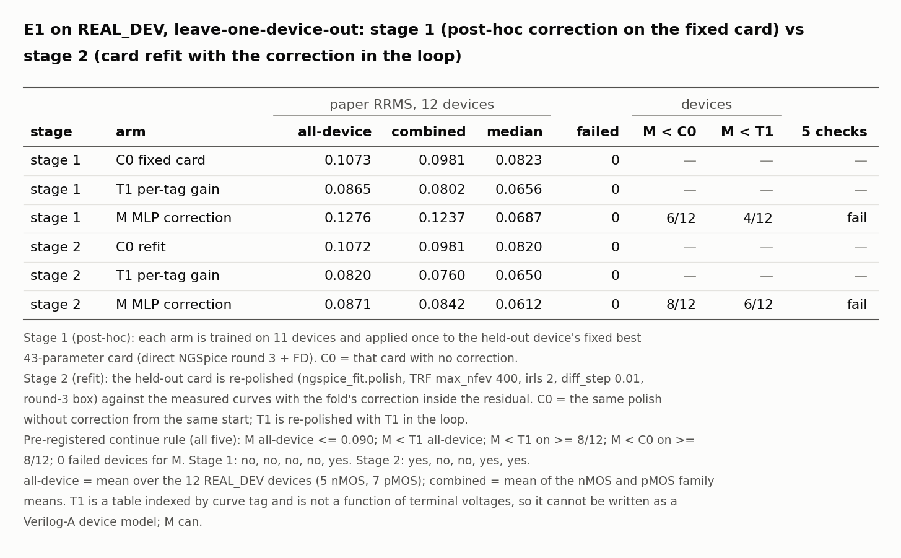
02_table_e1_stages.png03_e1_stage1_vs_stage2.png04_e1_sim_logo.png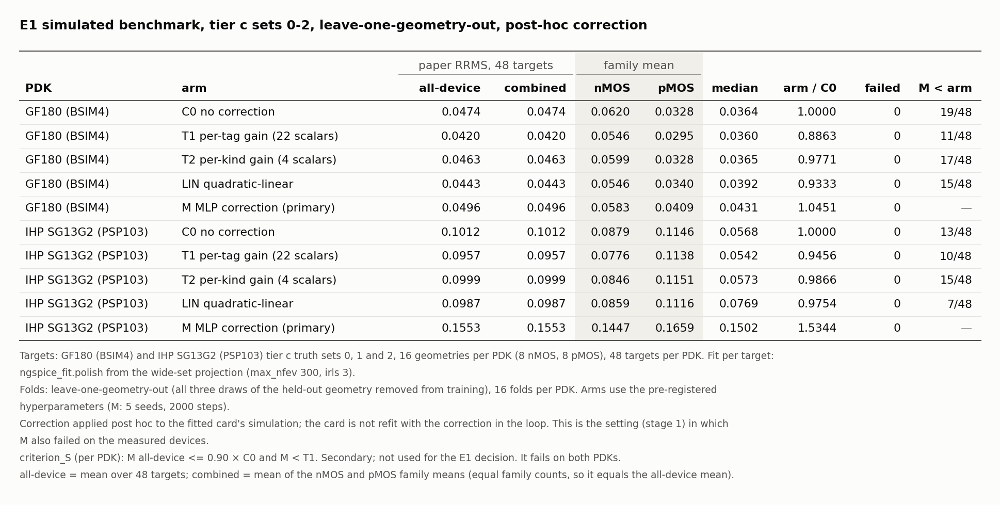
05_table_e1_sim_logo.png06_lc_curves.png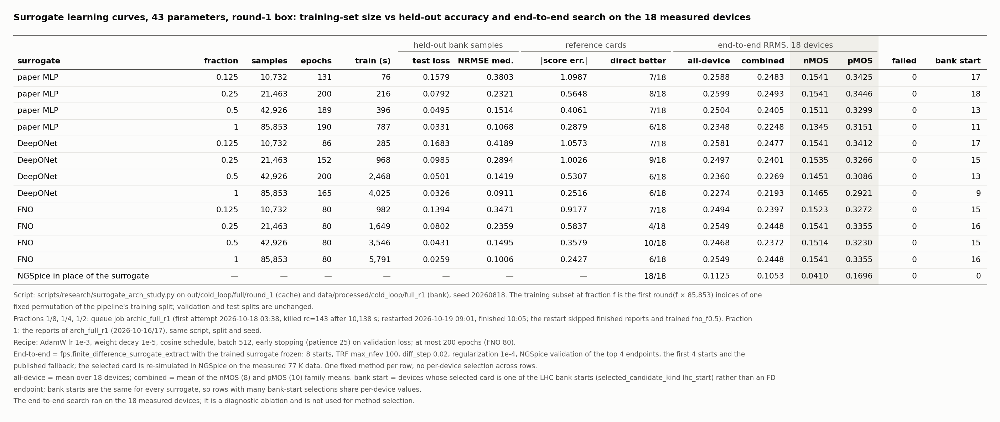
07_table_lc.pngTables from tables.md (3)
| stage | arm | all-device | combined | median | failed devices | M < C0 (devices) | M < T1 (devices) | pre-registered rule |
|---|---|---|---|---|---|---|---|---|
| stage 1 | C0 fixed card | 0.1073 | 0.0981 | 0.0823 | 0 | — | — | — |
| stage 1 | T1 per-tag gain | 0.0865 | 0.0802 | 0.0656 | 0 | — | — | — |
| stage 1 | M MLP correction | 0.1276 | 0.1237 | 0.0687 | 0 | 6/12 | 4/12 | fail |
| stage 2 | C0 refit | 0.1072 | 0.0981 | 0.0820 | 0 | — | — | — |
| stage 2 | T1 per-tag gain | 0.0820 | 0.0760 | 0.0650 | 0 | — | — | — |
| stage 2 | M MLP correction | 0.0871 | 0.0842 | 0.0612 | 0 | 8/12 | 6/12 | fail |
- Stage 1 (post-hoc): each arm is trained on 11 devices and applied once to the held-out device's fixed best 43-parameter card (direct NGSpice round 3 + FD). C0 = that card with no correction.
- Stage 2 (refit): the held-out card is re-polished (ngspice_fit.polish, TRF max_nfev 400, irls 2, diff_step 0.01, round-3 box) against the measured curves with the fold's correction inside the residual. C0 = the same polish without correction from the same start; T1 is re-polished with T1 in the loop.
- Pre-registered continue rule (all five): M all-device <= 0.090; M < T1 all-device; M < T1 on >= 8/12; M < C0 on >= 8/12; 0 failed devices for M. Stage 1: no, no, no, no, yes. Stage 2: yes, no, no, yes, yes.
- all-device = mean over the 12 REAL_DEV devices (5 nMOS, 7 pMOS); combined = mean of the nMOS and pMOS family means. T1 is a table indexed by curve tag and is not a function of terminal voltages, so it cannot be written as a Verilog-A device model; M can.
| PDK | arm | all-device | combined | nMOS | pMOS | median | all-device / C0 | failed targets | targets with M < arm |
|---|---|---|---|---|---|---|---|---|---|
| GF180 (BSIM4) | C0 no correction | 0.0474 | 0.0474 | 0.0620 | 0.0328 | 0.0364 | 1.0000 | 0 | 19/48 |
| GF180 (BSIM4) | T1 per-tag gain (22 scalars) | 0.0420 | 0.0420 | 0.0546 | 0.0295 | 0.0360 | 0.8863 | 0 | 11/48 |
| GF180 (BSIM4) | T2 per-kind gain (4 scalars) | 0.0463 | 0.0463 | 0.0599 | 0.0328 | 0.0365 | 0.9771 | 0 | 17/48 |
| GF180 (BSIM4) | LIN quadratic-linear | 0.0443 | 0.0443 | 0.0546 | 0.0340 | 0.0392 | 0.9333 | 0 | 15/48 |
| GF180 (BSIM4) | M MLP correction (primary) | 0.0496 | 0.0496 | 0.0583 | 0.0409 | 0.0431 | 1.0451 | 0 | — |
| IHP SG13G2 (PSP103) | C0 no correction | 0.1012 | 0.1012 | 0.0879 | 0.1146 | 0.0568 | 1.0000 | 0 | 13/48 |
| IHP SG13G2 (PSP103) | T1 per-tag gain (22 scalars) | 0.0957 | 0.0957 | 0.0776 | 0.1138 | 0.0542 | 0.9456 | 0 | 10/48 |
| IHP SG13G2 (PSP103) | T2 per-kind gain (4 scalars) | 0.0999 | 0.0999 | 0.0846 | 0.1151 | 0.0573 | 0.9866 | 0 | 15/48 |
| IHP SG13G2 (PSP103) | LIN quadratic-linear | 0.0987 | 0.0987 | 0.0859 | 0.1116 | 0.0769 | 0.9754 | 0 | 7/48 |
| IHP SG13G2 (PSP103) | M MLP correction (primary) | 0.1553 | 0.1553 | 0.1447 | 0.1659 | 0.1502 | 1.5344 | 0 | — |
- Targets: GF180 (BSIM4) and IHP SG13G2 (PSP103) tier c truth sets 0, 1 and 2, 16 geometries per PDK (8 nMOS, 8 pMOS), 48 targets per PDK. Fit per target: ngspice_fit.polish from the wide-set projection (max_nfev 300, irls 3).
- Folds: leave-one-geometry-out (all three draws of the held-out geometry removed from training), 16 folds per PDK. Arms use the pre-registered hyperparameters (M: 5 seeds, 2000 steps).
- Correction applied post hoc to the fitted card's simulation; the card is not refit with the correction in the loop. This is the setting (stage 1) in which M also failed on the measured devices.
- criterion_S (per PDK): M all-device <= 0.90 × C0 and M < T1. Secondary; not used for the E1 decision. It fails on both PDKs.
- all-device = mean over 48 targets; combined = mean of the nMOS and pMOS family means (equal family counts, so it equals the all-device mean).
| surrogate | train fraction | training samples | epochs | train time (s) | test loss | curve NRMSE, median | mean absolute score error | devices where the surrogate ranks the direct fit better | end-to-end all-device | end-to-end combined | end-to-end nMOS | end-to-end pMOS | failed devices | devices where a bank start is selected |
|---|---|---|---|---|---|---|---|---|---|---|---|---|---|---|
| paper MLP | 0.125 | 10,732 | 131 | 76 | 0.1579 | 0.3803 | 1.0987 | 7/18 | 0.2588 | 0.2483 | 0.1541 | 0.3425 | 0 | 17 |
| paper MLP | 0.25 | 21,463 | 200 | 216 | 0.0792 | 0.2321 | 0.5648 | 8/18 | 0.2599 | 0.2493 | 0.1541 | 0.3446 | 0 | 18 |
| paper MLP | 0.5 | 42,926 | 189 | 396 | 0.0495 | 0.1514 | 0.4061 | 7/18 | 0.2504 | 0.2405 | 0.1511 | 0.3299 | 0 | 13 |
| paper MLP | 1 | 85,853 | 190 | 787 | 0.0331 | 0.1068 | 0.2879 | 6/18 | 0.2348 | 0.2248 | 0.1345 | 0.3151 | 0 | 11 |
| DeepONet | 0.125 | 10,732 | 86 | 285 | 0.1683 | 0.4189 | 1.0573 | 7/18 | 0.2581 | 0.2477 | 0.1541 | 0.3412 | 0 | 17 |
| DeepONet | 0.25 | 21,463 | 152 | 968 | 0.0985 | 0.2894 | 1.0026 | 9/18 | 0.2497 | 0.2401 | 0.1535 | 0.3266 | 0 | 15 |
| DeepONet | 0.5 | 42,926 | 200 | 2,468 | 0.0501 | 0.1419 | 0.5307 | 6/18 | 0.2360 | 0.2269 | 0.1451 | 0.3086 | 0 | 13 |
| DeepONet | 1 | 85,853 | 165 | 4,025 | 0.0326 | 0.0911 | 0.2516 | 6/18 | 0.2274 | 0.2193 | 0.1465 | 0.2921 | 0 | 9 |
| FNO | 0.125 | 10,732 | 80 | 982 | 0.1394 | 0.3471 | 0.9177 | 7/18 | 0.2494 | 0.2397 | 0.1523 | 0.3272 | 0 | 15 |
| FNO | 0.25 | 21,463 | 80 | 1,649 | 0.0802 | 0.2359 | 0.5837 | 4/18 | 0.2549 | 0.2448 | 0.1541 | 0.3355 | 0 | 16 |
| FNO | 0.5 | 42,926 | 80 | 3,546 | 0.0431 | 0.1495 | 0.3579 | 10/18 | 0.2468 | 0.2372 | 0.1514 | 0.3230 | 0 | 15 |
| FNO | 1 | 85,853 | 80 | 5,791 | 0.0259 | 0.1006 | 0.2427 | 6/18 | 0.2549 | 0.2448 | 0.1541 | 0.3355 | 0 | 16 |
| NGSpice in place of the surrogate | — | — | — | — | — | — | — | 18/18 | 0.1125 | 0.1053 | 0.0410 | 0.1696 | 0 | 0 |
- Script: scripts/research/surrogate_arch_study.py on out/cold_loop/full/round_1 (cache) and data/processed/cold_loop/full_r1 (bank), seed 20260818. The training subset at fraction f is the first round(f × 85,853) indices of one fixed permutation of the pipeline's training split; validation and test splits are unchanged.
- Fractions 1/8, 1/4, 1/2: queue job archlc_full_r1 (first attempt 2026-10-18 03:38, killed rc=143 after 10,138 s; restarted 2026-10-19 09:01, finished 10:05; the restart skipped finished reports and trained fno_f0.5). Fraction 1: the reports of arch_full_r1 (2026-10-16/17), same script, split and seed.
- Recipe: AdamW lr 1e-3, weight decay 1e-5, cosine schedule, batch 512, early stopping (patience 25) on validation loss; at most 200 epochs (FNO 80).
- End-to-end = fps.finite_difference_surrogate_extract with the trained surrogate frozen: 8 starts, TRF max_nfev 100, diff_step 0.02, regularization 1e-4, NGSpice validation of the top 4 endpoints, the first 4 starts and the published fallback; the selected card is re-simulated in NGSpice on the measured 77 K data. One fixed method per row; no per-device selection across rows.
- all-device = mean over 18 devices; combined = mean of the nMOS (8) and pMOS (10) family means. bank start = devices whose selected card is one of the LHC bank starts (selected_candidate_kind lhc_start) rather than an FD endpoint; bank starts are the same for every surrogate, so rows with many bank-start selections share per-device values.
- The end-to-end search ran on the 18 measured devices; it is a diagnostic ablation and is not used for method selection.
2026-10-19 dev iteration2 ablation
- DEV iteration 2 (ablation), tier a, pooled mean paper RRMS (strict) at B500 / B5000: sketch_surrogate_k8 0.0334 / 0.0082; sketch_none_k8 0.0367 / 0.0024; lam_curve_k8 0.0317 / 0.0062; hybrid_surrogate 0.0463 / 0.0114; hybrid_none 0.0579 / 0.0058; dfols_style 0.0579 / 0.0076; cmaes_trf 0.0565 / 0.0109.
- DEV iteration 2 (ablation), tier c, pooled mean excess over floor (RRMS − floor) at B500 / B5000: sketch_surrogate_k8 0.0221 / 0.0047; sketch_none_k8 0.0225 / 0.0022; lam_curve_k8 0.0200 / 0.0039; hybrid_surrogate 0.0304 / 0.0064; hybrid_none 0.0401 / 0.0041; dfols_style 0.0406 / 0.0062; cmaes_trf 0.0388 / 0.0151.
- Pre-registered λ decision (n2b): negative; frozen candidate per family: sketch family: none; hybrid family: none.
- Pre-registered C1-C6: C1_a_B5000, C2_a_B500, C3_a_B5000, C5_a_B500, C5_a_B2000, C5_a_B5000, C5_c_B500, C5_c_B2000, C5_c_B5000, C6_a_B500, C6_c_B500, C6_c_B2000 have Holm p ≤ 0.05.
Sources out/research/report/2026-10-19_dev_iteration2_ablation/README.md out/research/report/2026-10-19_dev_iteration2_ablation/tables.md
01_anytime_families_tier_a.png02_anytime_families_tier_c.png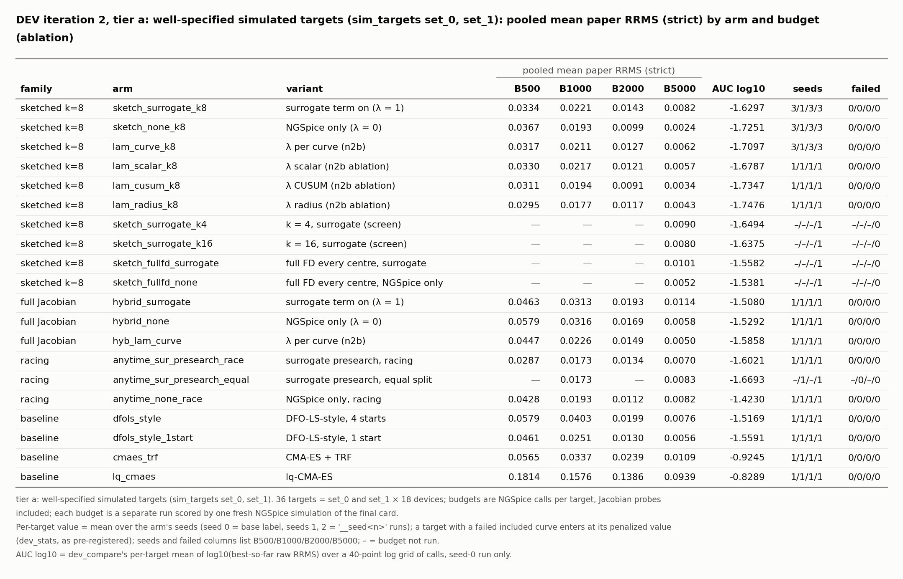
03_table_primary_tier_a.png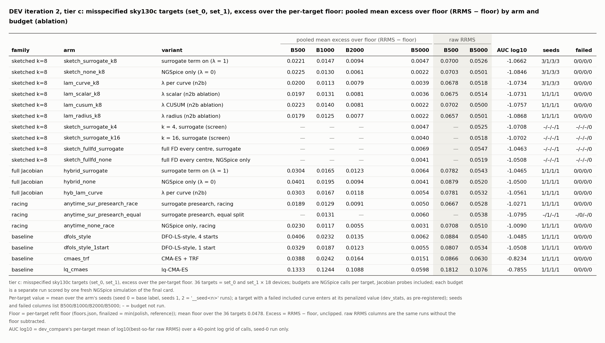
04_table_primary_tier_c.png![Table of paired differences A − B at B500/B2000/B5000 on both tiers for λ arms vs λ = 0 and λ = 1 (same code, surrogate weight varied): lam_curve_k8 − sketch_none_k8; lam_curve_k8 − sketch_surrogate_k8; lam_scalar_k8 − sketch_none_k8; lam_scalar_k8 − sketch_surrogate_k8; lam_cusum_k8 − sketch_none_k8; lam_cusum_k8 − sketch_surrogate_k8; lam_radius_k8 − sketch_none_k8; lam_radius_k8 − sketch_surrogate_k8; hyb_lam_curve − hybrid_none; hyb_lam_curve − hybrid_surrogate, with geometry-clustered 95% CIs, Wilcoxon p (Holm p for the pre-registered C1-C6 rows) and W/T/L](figs/2026-10-19_dev_iteration2_ablation/05_table_paired_lambda.png)
05_table_paired_lambda.png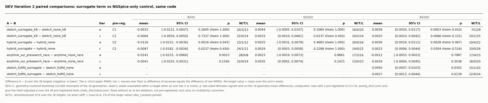
06_table_paired_surrogate.png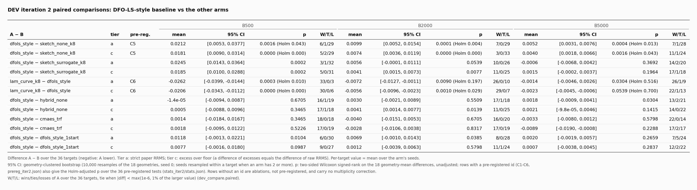
07_table_paired_dfols.png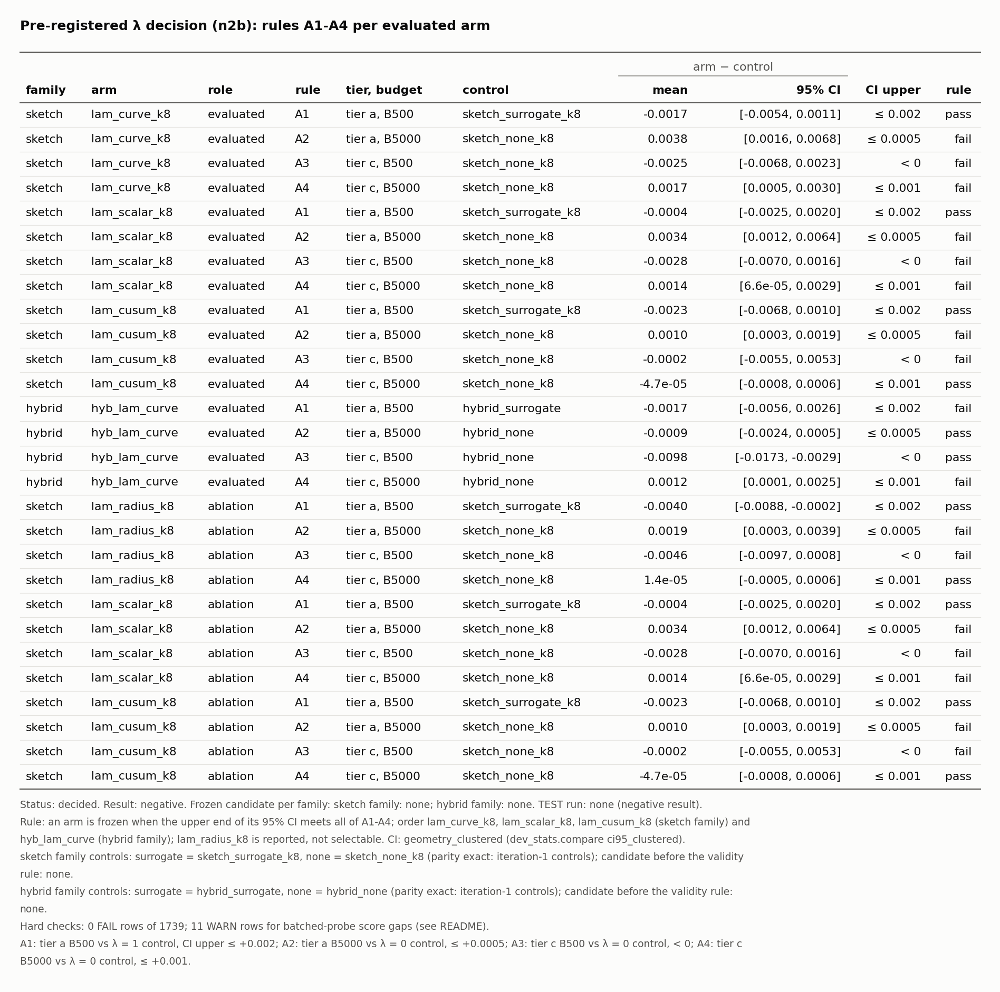
08_table_lambda_decision.pngTables from tables.md (6)
| family | arm | variant | B500 | B1000 | B2000 | B5000 | AUC log10 (seed 0, raw RRMS) | seeds per budget | failed targets per budget |
|---|---|---|---|---|---|---|---|---|---|
| sketched k=8 | sketch_surrogate_k8 | surrogate term on (λ = 1) | 0.0334 | 0.0221 | 0.0143 | 0.0082 | -1.6297 | 3/1/3/3 | 0/0/0/0 |
| sketched k=8 | sketch_none_k8 | NGSpice only (λ = 0) | 0.0367 | 0.0193 | 0.0099 | 0.0024 | -1.7251 | 3/1/3/3 | 0/0/0/0 |
| sketched k=8 | lam_curve_k8 | λ per curve (n2b) | 0.0317 | 0.0211 | 0.0127 | 0.0062 | -1.7097 | 3/1/3/3 | 0/0/0/0 |
| sketched k=8 | lam_scalar_k8 | λ scalar (n2b ablation) | 0.0330 | 0.0217 | 0.0121 | 0.0057 | -1.6787 | 1/1/1/1 | 0/0/0/0 |
| sketched k=8 | lam_cusum_k8 | λ CUSUM (n2b ablation) | 0.0311 | 0.0194 | 0.0091 | 0.0034 | -1.7347 | 1/1/1/1 | 0/0/0/0 |
| sketched k=8 | lam_radius_k8 | λ radius (n2b ablation) | 0.0295 | 0.0177 | 0.0117 | 0.0043 | -1.7476 | 1/1/1/1 | 0/0/0/0 |
| sketched k=8 | sketch_surrogate_k4 | k = 4, surrogate (screen) | — | — | — | 0.0090 | -1.6494 | –/–/–/1 | –/–/–/0 |
| sketched k=8 | sketch_surrogate_k16 | k = 16, surrogate (screen) | — | — | — | 0.0080 | -1.6375 | –/–/–/1 | –/–/–/0 |
| sketched k=8 | sketch_fullfd_surrogate | full FD every centre, surrogate | — | — | — | 0.0101 | -1.5582 | –/–/–/1 | –/–/–/0 |
| sketched k=8 | sketch_fullfd_none | full FD every centre, NGSpice only | — | — | — | 0.0052 | -1.5381 | –/–/–/1 | –/–/–/0 |
| full Jacobian | hybrid_surrogate | surrogate term on (λ = 1) | 0.0463 | 0.0313 | 0.0193 | 0.0114 | -1.5080 | 1/1/1/1 | 0/0/0/0 |
| full Jacobian | hybrid_none | NGSpice only (λ = 0) | 0.0579 | 0.0316 | 0.0169 | 0.0058 | -1.5292 | 1/1/1/1 | 0/0/0/0 |
| full Jacobian | hyb_lam_curve | λ per curve (n2b) | 0.0447 | 0.0226 | 0.0149 | 0.0050 | -1.5858 | 1/1/1/1 | 0/0/0/0 |
| racing | anytime_sur_presearch_race | surrogate presearch, racing | 0.0287 | 0.0173 | 0.0134 | 0.0070 | -1.6021 | 1/1/1/1 | 0/0/0/0 |
| racing | anytime_sur_presearch_equal | surrogate presearch, equal split | — | 0.0173 | — | 0.0083 | -1.6693 | –/1/–/1 | –/0/–/0 |
| racing | anytime_none_race | NGSpice only, racing | 0.0428 | 0.0193 | 0.0112 | 0.0082 | -1.4230 | 1/1/1/1 | 0/0/0/0 |
| baseline | dfols_style | DFO-LS-style, 4 starts | 0.0579 | 0.0403 | 0.0199 | 0.0076 | -1.5169 | 1/1/1/1 | 0/0/0/0 |
| baseline | dfols_style_1start | DFO-LS-style, 1 start | 0.0461 | 0.0251 | 0.0130 | 0.0056 | -1.5591 | 1/1/1/1 | 0/0/0/0 |
| baseline | cmaes_trf | CMA-ES + TRF | 0.0565 | 0.0337 | 0.0239 | 0.0109 | -0.9245 | 1/1/1/1 | 0/0/0/0 |
| baseline | lq_cmaes | lq-CMA-ES | 0.1814 | 0.1576 | 0.1386 | 0.0939 | -0.8289 | 1/1/1/1 | 0/0/0/0 |
- tier a: well-specified simulated targets (sim_targets set_0, set_1). 36 targets = set_0 and set_1 × 18 devices; budgets are NGSpice calls per target, Jacobian probes included; each budget is a separate run scored by one fresh NGSpice simulation of the final card.
- Per-target value = mean over the arm's seeds (seed 0 = base label, seeds 1, 2 = '__seed<n>' runs); a target with a failed included curve enters at its penalized value (dev_stats, as pre-registered); seeds and failed columns list B500/B1000/B2000/B5000; – = budget not run.
- AUC log10 = dev_compare's per-target mean of log10(best-so-far raw RRMS) over a 40-point log grid of calls, seed-0 run only.
| family | arm | variant | B500 | B1000 | B2000 | B5000 | raw B500 | raw B5000 | AUC log10 (seed 0, raw RRMS) | seeds per budget | failed targets per budget |
|---|---|---|---|---|---|---|---|---|---|---|---|
| sketched k=8 | sketch_surrogate_k8 | surrogate term on (λ = 1) | 0.0221 | 0.0147 | 0.0094 | 0.0047 | 0.0700 | 0.0526 | -1.0662 | 3/1/3/3 | 0/0/0/0 |
| sketched k=8 | sketch_none_k8 | NGSpice only (λ = 0) | 0.0225 | 0.0130 | 0.0061 | 0.0022 | 0.0703 | 0.0501 | -1.0846 | 3/1/3/3 | 0/0/0/0 |
| sketched k=8 | lam_curve_k8 | λ per curve (n2b) | 0.0200 | 0.0113 | 0.0079 | 0.0039 | 0.0678 | 0.0518 | -1.0734 | 3/1/3/3 | 0/0/0/0 |
| sketched k=8 | lam_scalar_k8 | λ scalar (n2b ablation) | 0.0197 | 0.0131 | 0.0081 | 0.0036 | 0.0675 | 0.0514 | -1.0731 | 1/1/1/1 | 0/0/0/0 |
| sketched k=8 | lam_cusum_k8 | λ CUSUM (n2b ablation) | 0.0223 | 0.0140 | 0.0081 | 0.0022 | 0.0702 | 0.0500 | -1.0757 | 1/1/1/1 | 0/0/0/0 |
| sketched k=8 | lam_radius_k8 | λ radius (n2b ablation) | 0.0179 | 0.0125 | 0.0077 | 0.0022 | 0.0657 | 0.0501 | -1.0868 | 1/1/1/1 | 0/0/0/0 |
| sketched k=8 | sketch_surrogate_k4 | k = 4, surrogate (screen) | — | — | — | 0.0047 | — | 0.0525 | -1.0708 | –/–/–/1 | –/–/–/0 |
| sketched k=8 | sketch_surrogate_k16 | k = 16, surrogate (screen) | — | — | — | 0.0040 | — | 0.0518 | -1.0702 | –/–/–/1 | –/–/–/0 |
| sketched k=8 | sketch_fullfd_surrogate | full FD every centre, surrogate | — | — | — | 0.0069 | — | 0.0547 | -1.0463 | –/–/–/1 | –/–/–/0 |
| sketched k=8 | sketch_fullfd_none | full FD every centre, NGSpice only | — | — | — | 0.0041 | — | 0.0519 | -1.0508 | –/–/–/1 | –/–/–/0 |
| full Jacobian | hybrid_surrogate | surrogate term on (λ = 1) | 0.0304 | 0.0165 | 0.0123 | 0.0064 | 0.0782 | 0.0543 | -1.0465 | 1/1/1/1 | 0/0/0/0 |
| full Jacobian | hybrid_none | NGSpice only (λ = 0) | 0.0401 | 0.0195 | 0.0094 | 0.0041 | 0.0879 | 0.0520 | -1.0500 | 1/1/1/1 | 0/0/0/0 |
| full Jacobian | hyb_lam_curve | λ per curve (n2b) | 0.0303 | 0.0167 | 0.0118 | 0.0054 | 0.0781 | 0.0532 | -1.0561 | 1/1/1/1 | 0/0/0/0 |
| racing | anytime_sur_presearch_race | surrogate presearch, racing | 0.0189 | 0.0129 | 0.0091 | 0.0050 | 0.0667 | 0.0528 | -1.0271 | 1/1/1/1 | 0/0/0/0 |
| racing | anytime_sur_presearch_equal | surrogate presearch, equal split | — | 0.0131 | — | 0.0060 | — | 0.0538 | -1.0795 | –/1/–/1 | –/0/–/0 |
| racing | anytime_none_race | NGSpice only, racing | 0.0230 | 0.0117 | 0.0055 | 0.0031 | 0.0708 | 0.0510 | -1.0090 | 1/1/1/1 | 0/0/0/0 |
| baseline | dfols_style | DFO-LS-style, 4 starts | 0.0406 | 0.0232 | 0.0135 | 0.0062 | 0.0884 | 0.0540 | -1.0485 | 1/1/1/1 | 0/0/0/0 |
| baseline | dfols_style_1start | DFO-LS-style, 1 start | 0.0329 | 0.0187 | 0.0123 | 0.0055 | 0.0807 | 0.0534 | -1.0508 | 1/1/1/1 | 0/0/0/0 |
| baseline | cmaes_trf | CMA-ES + TRF | 0.0388 | 0.0242 | 0.0164 | 0.0151 | 0.0866 | 0.0630 | -0.8234 | 1/1/1/1 | 0/0/0/0 |
| baseline | lq_cmaes | lq-CMA-ES | 0.1333 | 0.1244 | 0.1088 | 0.0598 | 0.1812 | 0.1076 | -0.7855 | 1/1/1/1 | 0/0/0/0 |
- tier c: misspecified sky130c targets (set_0, set_1), excess over the per-target floor. 36 targets = set_0 and set_1 × 18 devices; budgets are NGSpice calls per target, Jacobian probes included; each budget is a separate run scored by one fresh NGSpice simulation of the final card.
- Per-target value = mean over the arm's seeds (seed 0 = base label, seeds 1, 2 = '__seed<n>' runs); a target with a failed included curve enters at its penalized value (dev_stats, as pre-registered); seeds and failed columns list B500/B1000/B2000/B5000; – = budget not run.
- Floor = per-target refit floor (floors.json, finalized = min(polish, reference)); mean floor over the 36 targets 0.0478. Excess = RRMS − floor, unclipped. raw RRMS columns are the same runs without the floor subtracted.
- AUC log10 = dev_compare's per-target mean of log10(best-so-far raw RRMS) over a 40-point log grid of calls, seed-0 run only.
| A − B | tier | pre-registered id | B500 mean A − B | B500 clustered 95% CI | B500 Wilcoxon p (geometry) | B500 W/T/L | B2000 mean A − B | B2000 clustered 95% CI | B2000 Wilcoxon p (geometry) | B2000 W/T/L | B5000 mean A − B | B5000 clustered 95% CI | B5000 Wilcoxon p (geometry) | B5000 W/T/L |
|---|---|---|---|---|---|---|---|---|---|---|---|---|---|---|
| lam_curve_k8 − sketch_none_k8 | a | C3 | -0.0050 | [-0.0123, 0.0017] | 0.1084 (Holm 1.000) | 22/1/13 | 0.0028 | [-0.0012, 0.0072] | 0.3247 (Holm 1.000) | 15/0/21 | 0.0038 | [0.0016, 0.0068] | 0.0008 (Holm 0.024) | 10/2/24 |
| lam_curve_k8 − sketch_none_k8 | c | C3 | -0.0025 | [-0.0068, 0.0023] | 0.1297 (Holm 1.000) | 24/1/11 | 0.0018 | [0.0003, 0.0038] | 0.0385 (Holm 0.577) | 12/1/23 | 0.0017 | [0.0005, 0.0030] | 0.0090 (Holm 0.197) | 12/0/24 |
| lam_curve_k8 − sketch_surrogate_k8 | a | C4 | -0.0017 | [-0.0054, 0.0011] | 0.2462 (Holm 1.000) | 22/2/12 | -0.0016 | [-0.0071, 0.0024] | 0.6397 (Holm 1.000) | 19/2/15 | -0.0020 | [-0.0083, 0.0022] | 0.8986 (Holm 1.000) | 24/1/11 |
| lam_curve_k8 − sketch_surrogate_k8 | c | C4 | -0.0021 | [-0.0072, 0.0022] | 0.1964 (Holm 1.000) | 23/3/10 | -0.0015 | [-0.0032, -0.0001] | 0.0104 (Holm 0.208) | 27/2/7 | -0.0008 | [-0.0019, 0.0002] | 0.0432 (Holm 0.604) | 23/4/9 |
| lam_scalar_k8 − sketch_none_k8 | a | -0.0037 | [-0.0107, 0.0028] | 0.2288 | 23/2/11 | 0.0022 | [-0.0019, 0.0068] | 0.9661 | 19/2/15 | 0.0034 | [0.0012, 0.0064] | 0.0008 | 10/1/25 | |
| lam_scalar_k8 − sketch_none_k8 | c | -0.0028 | [-0.0070, 0.0016] | 0.0385 | 25/1/10 | 0.0020 | [0.0002, 0.0048] | 0.1815 | 15/3/18 | 0.0014 | [6.6e-05, 0.0029] | 0.0665 | 15/1/20 | |
| lam_scalar_k8 − sketch_surrogate_k8 | a | -0.0004 | [-0.0025, 0.0020] | 0.1674 | 21/6/9 | -0.0022 | [-0.0087, 0.0023] | 0.6705 | 24/2/10 | -0.0025 | [-0.0087, 0.0017] | 0.3927 | 25/2/9 | |
| lam_scalar_k8 − sketch_surrogate_k8 | c | -0.0024 | [-0.0053, -0.0003] | 0.0268 | 24/1/11 | -0.0012 | [-0.0033, 0.0010] | 0.0120 | 28/3/5 | -0.0011 | [-0.0020, -0.0003] | 0.0019 | 27/3/6 | |
| lam_cusum_k8 − sketch_none_k8 | a | -0.0056 | [-0.0132, 0.0012] | 0.1815 | 24/1/11 | -0.0008 | [-0.0043, 0.0036] | 0.1964 | 25/1/10 | 0.0010 | [0.0003, 0.0019] | 0.1415 | 17/0/19 | |
| lam_cusum_k8 − sketch_none_k8 | c | -0.0002 | [-0.0055, 0.0053] | 0.7019 | 23/0/13 | 0.0021 | [-0.0001, 0.0051] | 0.3692 | 18/3/15 | -4.7e-05 | [-0.0008, 0.0006] | 0.6397 | 19/1/16 | |
| lam_cusum_k8 − sketch_surrogate_k8 | a | -0.0023 | [-0.0068, 0.0010] | 0.3247 | 18/3/15 | -0.0052 | [-0.0085, -0.0023] | 0.0001 | 28/0/8 | -0.0048 | [-0.0105, -0.0012] | 0.0013 | 28/1/7 | |
| lam_cusum_k8 − sketch_surrogate_k8 | c | 0.0002 | [-0.0007, 0.0013] | 0.6397 | 16/4/16 | -0.0012 | [-0.0036, 0.0011] | 0.0034 | 29/1/6 | -0.0025 | [-0.0040, -0.0013] | 0.0003 | 30/1/5 | |
| lam_radius_k8 − sketch_none_k8 | a | -0.0072 | [-0.0163, 0.0003] | 0.0432 | 23/2/11 | 0.0018 | [-0.0015, 0.0065] | 0.9323 | 22/3/11 | 0.0019 | [0.0003, 0.0039] | 0.1084 | 14/2/20 | |
| lam_radius_k8 − sketch_none_k8 | c | -0.0046 | [-0.0097, 0.0008] | 0.0342 | 26/2/8 | 0.0016 | [-0.0005, 0.0050] | 0.9323 | 20/0/16 | 1.4e-05 | [-0.0005, 0.0006] | 0.7019 | 18/2/16 | |
| lam_radius_k8 − sketch_surrogate_k8 | a | -0.0040 | [-0.0088, -0.0002] | 0.2837 | 22/0/14 | -0.0026 | [-0.0053, -7.4e-05] | 0.0182 | 28/1/7 | -0.0039 | [-0.0086, -0.0007] | 0.0056 | 26/2/8 | |
| lam_radius_k8 − sketch_surrogate_k8 | c | -0.0042 | [-0.0112, 0.0013] | 0.0665 | 25/1/10 | -0.0016 | [-0.0046, 0.0013] | 0.0104 | 31/0/5 | -0.0025 | [-0.0039, -0.0012] | 0.0001 | 33/1/2 | |
| hyb_lam_curve − hybrid_none | a | -0.0132 | [-0.0221, -0.0058] | 0.0004 | 23/1/12 | -0.0019 | [-0.0066, 0.0024] | 0.5226 | 25/0/11 | -0.0009 | [-0.0024, 0.0005] | 0.8317 | 15/4/17 | |
| hyb_lam_curve − hybrid_none | c | -0.0098 | [-0.0173, -0.0029] | 0.0010 | 25/0/11 | 0.0024 | [-0.0006, 0.0069] | 0.7987 | 22/0/14 | 0.0012 | [0.0001, 0.0025] | 0.2462 | 15/0/21 | |
| hyb_lam_curve − hybrid_surrogate | a | -0.0017 | [-0.0056, 0.0026] | 0.2645 | 20/4/12 | -0.0044 | [-0.0070, -0.0024] | 0.0001 | 27/0/9 | -0.0065 | [-0.0123, -0.0021] | 0.0028 | 28/3/5 | |
| hyb_lam_curve − hybrid_surrogate | c | -8.6e-05 | [-0.0033, 0.0032] | 0.7660 | 18/3/15 | -0.0005 | [-0.0036, 0.0033] | 0.2837 | 25/2/9 | -0.0011 | [-0.0024, -4.2e-05] | 0.0599 | 25/4/7 |
- Difference A − B over the 36 targets (negative: A lower). Tier a: strict paper RRMS; tier c: excess over floor (a difference of excesses equals the difference of raw RRMS). Per-target value = mean over the arm's seeds.
- 95% CI: geometry-clustered bootstrap (10,000 resamples of the 18 geometries, seed 0; seeds resampled within a target when an arm has 2 or more). p: two-sided Wilcoxon signed-rank on the 18 geometry-mean differences, unadjusted; rows with a pre-registered id (C1-C6, prereg_iter2.json) also give the Holm-adjusted p over the 36 pre-registered tests (stats_iter2/stats.json). Rows without an id are ablations, not pre-registered, and carry no multiplicity correction.
- W/T/L: wins/ties/losses of A over the 36 targets, tie when |diff| < max(1e-6, 1% of the larger value) (dev_compare.paired).
| A − B | tier | pre-registered id | B500 mean A − B | B500 clustered 95% CI | B500 Wilcoxon p (geometry) | B500 W/T/L | B2000 mean A − B | B2000 clustered 95% CI | B2000 Wilcoxon p (geometry) | B2000 W/T/L | B5000 mean A − B | B5000 clustered 95% CI | B5000 Wilcoxon p (geometry) | B5000 W/T/L |
|---|---|---|---|---|---|---|---|---|---|---|---|---|---|---|
| sketch_surrogate_k8 − sketch_none_k8 | a | C1 | -0.0033 | [-0.0121, 0.0047] | 0.2645 (Holm 1.000) | 20/3/13 | 0.0044 | [-0.0005, 0.0107] | 0.1084 (Holm 1.000) | 16/0/20 | 0.0058 | [0.0020, 0.0117] | 0.0003 (Holm 0.010) | 7/1/28 |
| sketch_surrogate_k8 − sketch_none_k8 | c | C1 | -0.0004 | [-0.0054, 0.0050] | 0.7337 (Holm 1.000) | 22/0/14 | 0.0033 | [0.0010, 0.0061] | 0.0237 (Holm 0.450) | 10/2/24 | 0.0025 | [0.0010, 0.0042] | 0.0066 (Holm 0.151) | 10/1/25 |
| hybrid_surrogate − hybrid_none | a | C2 | -0.0116 | [-0.0215, -0.0036] | 0.0016 (Holm 0.043) | 23/1/12 | 0.0025 | [-0.0031, 0.0079] | 0.4683 (Holm 1.000) | 20/0/16 | 0.0056 | [0.0019, 0.0111] | 0.0028 (Holm 0.067) | 10/4/22 |
| hybrid_surrogate − hybrid_none | c | C2 | -0.0097 | [-0.0182, -0.0026] | 0.0237 (Holm 0.450) | 24/1/11 | 0.0029 | [0.0003, 0.0058] | 0.2288 (Holm 1.000) | 14/0/22 | 0.0023 | [0.0006, 0.0044] | 0.0304 (Holm 0.516) | 10/0/26 |
| anytime_sur_presearch_race − anytime_none_race | a | -0.0141 | [-0.0233, -0.0060] | 0.0023 | 28/0/8 | 0.0023 | [-0.0019, 0.0073] | 0.9661 | 17/3/16 | -0.0012 | [-0.0053, 0.0022] | 0.7987 | 17/4/15 | |
| anytime_sur_presearch_race − anytime_none_race | c | -0.0041 | [-0.0103, 0.0031] | 0.1540 | 22/0/14 | 0.0035 | [0.0002, 0.0074] | 0.1415 | 13/0/23 | 0.0019 | [-0.0004, 0.0045] | 0.3038 | 16/0/20 | |
| sketch_fullfd_surrogate − sketch_fullfd_none | a | — | – | – | — | – | – | 0.0050 | [0.0007, 0.0103] | 0.0342 | 15/1/20 | |||
| sketch_fullfd_surrogate − sketch_fullfd_none | c | — | – | – | — | – | – | 0.0027 | [0.0013, 0.0044] | 0.0139 | 12/0/24 |
- Difference A − B over the 36 targets (negative: A lower). Tier a: strict paper RRMS; tier c: excess over floor (a difference of excesses equals the difference of raw RRMS). Per-target value = mean over the arm's seeds.
- 95% CI: geometry-clustered bootstrap (10,000 resamples of the 18 geometries, seed 0; seeds resampled within a target when an arm has 2 or more). p: two-sided Wilcoxon signed-rank on the 18 geometry-mean differences, unadjusted; rows with a pre-registered id (C1-C6, prereg_iter2.json) also give the Holm-adjusted p over the 36 pre-registered tests (stats_iter2/stats.json). Rows without an id are ablations, not pre-registered, and carry no multiplicity correction.
- W/T/L: wins/ties/losses of A over the 36 targets, tie when |diff| < max(1e-6, 1% of the larger value) (dev_compare.paired).
| A − B | tier | pre-registered id | B500 mean A − B | B500 clustered 95% CI | B500 Wilcoxon p (geometry) | B500 W/T/L | B2000 mean A − B | B2000 clustered 95% CI | B2000 Wilcoxon p (geometry) | B2000 W/T/L | B5000 mean A − B | B5000 clustered 95% CI | B5000 Wilcoxon p (geometry) | B5000 W/T/L |
|---|---|---|---|---|---|---|---|---|---|---|---|---|---|---|
| dfols_style − sketch_none_k8 | a | C5 | 0.0212 | [0.0053, 0.0377] | 0.0016 (Holm 0.043) | 6/1/29 | 0.0099 | [0.0052, 0.0154] | 0.0001 (Holm 0.004) | 7/0/29 | 0.0052 | [0.0031, 0.0076] | 0.0004 (Holm 0.013) | 7/1/28 |
| dfols_style − sketch_none_k8 | c | C5 | 0.0181 | [0.0090, 0.0314] | 0.0000 (Holm 0.000) | 5/2/29 | 0.0074 | [0.0036, 0.0119] | 0.0000 (Holm 0.000) | 3/0/33 | 0.0040 | [0.0018, 0.0066] | 0.0016 (Holm 0.043) | 11/1/24 |
| dfols_style − sketch_surrogate_k8 | a | 0.0245 | [0.0143, 0.0364] | 0.0002 | 3/1/32 | 0.0056 | [-0.0001, 0.0111] | 0.0539 | 10/0/26 | -0.0006 | [-0.0068, 0.0042] | 0.3692 | 14/2/20 | |
| dfols_style − sketch_surrogate_k8 | c | 0.0185 | [0.0100, 0.0288] | 0.0002 | 5/0/31 | 0.0041 | [0.0015, 0.0073] | 0.0077 | 11/0/25 | 0.0015 | [-0.0002, 0.0037] | 0.1964 | 17/1/18 | |
| lam_curve_k8 − dfols_style | a | C6 | -0.0262 | [-0.0399, -0.0144] | 0.0003 (Holm 0.010) | 33/0/3 | -0.0072 | [-0.0127, -0.0011] | 0.0090 (Holm 0.197) | 26/0/10 | -0.0014 | [-0.0046, 0.0026] | 0.0304 (Holm 0.516) | 26/1/9 |
| lam_curve_k8 − dfols_style | c | C6 | -0.0206 | [-0.0343, -0.0112] | 0.0000 (Holm 0.000) | 30/0/6 | -0.0056 | [-0.0096, -0.0023] | 0.0010 (Holm 0.029) | 29/0/7 | -0.0023 | [-0.0045, -0.0006] | 0.0539 (Holm 0.700) | 22/1/13 |
| dfols_style − hybrid_none | a | -1.4e-05 | [-0.0094, 0.0087] | 0.6705 | 16/1/19 | 0.0030 | [-0.0021, 0.0089] | 0.5509 | 17/1/18 | 0.0018 | [-0.0009, 0.0041] | 0.0304 | 13/2/21 | |
| dfols_style − hybrid_none | c | 0.0005 | [-0.0088, 0.0096] | 0.3465 | 17/1/18 | 0.0041 | [0.0014, 0.0077] | 0.0139 | 11/0/25 | 0.0021 | [-9.8e-05, 0.0046] | 0.1415 | 14/0/22 | |
| dfols_style − cmaes_trf | a | 0.0014 | [-0.0184, 0.0167] | 0.3465 | 18/0/18 | -0.0040 | [-0.0151, 0.0053] | 0.6705 | 16/0/20 | -0.0033 | [-0.0080, 0.0012] | 0.5798 | 22/0/14 | |
| dfols_style − cmaes_trf | c | 0.0018 | [-0.0095, 0.0122] | 0.5226 | 17/0/19 | -0.0028 | [-0.0106, 0.0038] | 0.8317 | 17/0/19 | -0.0089 | [-0.0190, -0.0008] | 0.2288 | 17/2/17 | |
| dfols_style − dfols_style_1start | a | 0.0118 | [-0.0013, 0.0221] | 0.0104 | 6/0/30 | 0.0069 | [-0.0010, 0.0143] | 0.0385 | 8/0/28 | 0.0020 | [-0.0019, 0.0057] | 0.2659 | 7/5/24 | |
| dfols_style − dfols_style_1start | c | 0.0077 | [-0.0016, 0.0180] | 0.0987 | 9/0/27 | 0.0012 | [-0.0039, 0.0063] | 0.5798 | 11/1/24 | 0.0007 | [-0.0038, 0.0045] | 0.2837 | 12/2/22 |
- Difference A − B over the 36 targets (negative: A lower). Tier a: strict paper RRMS; tier c: excess over floor (a difference of excesses equals the difference of raw RRMS). Per-target value = mean over the arm's seeds.
- 95% CI: geometry-clustered bootstrap (10,000 resamples of the 18 geometries, seed 0; seeds resampled within a target when an arm has 2 or more). p: two-sided Wilcoxon signed-rank on the 18 geometry-mean differences, unadjusted; rows with a pre-registered id (C1-C6, prereg_iter2.json) also give the Holm-adjusted p over the 36 pre-registered tests (stats_iter2/stats.json). Rows without an id are ablations, not pre-registered, and carry no multiplicity correction.
- W/T/L: wins/ties/losses of A over the 36 targets, tie when |diff| < max(1e-6, 1% of the larger value) (dev_compare.paired).
| family | arm | role | rule | tier, budget | control | mean arm − control | 95% CI | required CI upper | pass/fail |
|---|---|---|---|---|---|---|---|---|---|
| sketch | lam_curve_k8 | evaluated | A1 | tier a, B500 | sketch_surrogate_k8 | -0.0017 | [-0.0054, 0.0011] | ≤ 0.002 | pass |
| sketch | lam_curve_k8 | evaluated | A2 | tier a, B5000 | sketch_none_k8 | 0.0038 | [0.0016, 0.0068] | ≤ 0.0005 | fail |
| sketch | lam_curve_k8 | evaluated | A3 | tier c, B500 | sketch_none_k8 | -0.0025 | [-0.0068, 0.0023] | < 0 | fail |
| sketch | lam_curve_k8 | evaluated | A4 | tier c, B5000 | sketch_none_k8 | 0.0017 | [0.0005, 0.0030] | ≤ 0.001 | fail |
| sketch | lam_scalar_k8 | evaluated | A1 | tier a, B500 | sketch_surrogate_k8 | -0.0004 | [-0.0025, 0.0020] | ≤ 0.002 | pass |
| sketch | lam_scalar_k8 | evaluated | A2 | tier a, B5000 | sketch_none_k8 | 0.0034 | [0.0012, 0.0064] | ≤ 0.0005 | fail |
| sketch | lam_scalar_k8 | evaluated | A3 | tier c, B500 | sketch_none_k8 | -0.0028 | [-0.0070, 0.0016] | < 0 | fail |
| sketch | lam_scalar_k8 | evaluated | A4 | tier c, B5000 | sketch_none_k8 | 0.0014 | [6.6e-05, 0.0029] | ≤ 0.001 | fail |
| sketch | lam_cusum_k8 | evaluated | A1 | tier a, B500 | sketch_surrogate_k8 | -0.0023 | [-0.0068, 0.0010] | ≤ 0.002 | pass |
| sketch | lam_cusum_k8 | evaluated | A2 | tier a, B5000 | sketch_none_k8 | 0.0010 | [0.0003, 0.0019] | ≤ 0.0005 | fail |
| sketch | lam_cusum_k8 | evaluated | A3 | tier c, B500 | sketch_none_k8 | -0.0002 | [-0.0055, 0.0053] | < 0 | fail |
| sketch | lam_cusum_k8 | evaluated | A4 | tier c, B5000 | sketch_none_k8 | -4.7e-05 | [-0.0008, 0.0006] | ≤ 0.001 | pass |
| hybrid | hyb_lam_curve | evaluated | A1 | tier a, B500 | hybrid_surrogate | -0.0017 | [-0.0056, 0.0026] | ≤ 0.002 | fail |
| hybrid | hyb_lam_curve | evaluated | A2 | tier a, B5000 | hybrid_none | -0.0009 | [-0.0024, 0.0005] | ≤ 0.0005 | pass |
| hybrid | hyb_lam_curve | evaluated | A3 | tier c, B500 | hybrid_none | -0.0098 | [-0.0173, -0.0029] | < 0 | pass |
| hybrid | hyb_lam_curve | evaluated | A4 | tier c, B5000 | hybrid_none | 0.0012 | [0.0001, 0.0025] | ≤ 0.001 | fail |
| sketch | lam_radius_k8 | ablation | A1 | tier a, B500 | sketch_surrogate_k8 | -0.0040 | [-0.0088, -0.0002] | ≤ 0.002 | pass |
| sketch | lam_radius_k8 | ablation | A2 | tier a, B5000 | sketch_none_k8 | 0.0019 | [0.0003, 0.0039] | ≤ 0.0005 | fail |
| sketch | lam_radius_k8 | ablation | A3 | tier c, B500 | sketch_none_k8 | -0.0046 | [-0.0097, 0.0008] | < 0 | fail |
| sketch | lam_radius_k8 | ablation | A4 | tier c, B5000 | sketch_none_k8 | 1.4e-05 | [-0.0005, 0.0006] | ≤ 0.001 | pass |
| sketch | lam_scalar_k8 | ablation | A1 | tier a, B500 | sketch_surrogate_k8 | -0.0004 | [-0.0025, 0.0020] | ≤ 0.002 | pass |
| sketch | lam_scalar_k8 | ablation | A2 | tier a, B5000 | sketch_none_k8 | 0.0034 | [0.0012, 0.0064] | ≤ 0.0005 | fail |
| sketch | lam_scalar_k8 | ablation | A3 | tier c, B500 | sketch_none_k8 | -0.0028 | [-0.0070, 0.0016] | < 0 | fail |
| sketch | lam_scalar_k8 | ablation | A4 | tier c, B5000 | sketch_none_k8 | 0.0014 | [6.6e-05, 0.0029] | ≤ 0.001 | fail |
| sketch | lam_cusum_k8 | ablation | A1 | tier a, B500 | sketch_surrogate_k8 | -0.0023 | [-0.0068, 0.0010] | ≤ 0.002 | pass |
| sketch | lam_cusum_k8 | ablation | A2 | tier a, B5000 | sketch_none_k8 | 0.0010 | [0.0003, 0.0019] | ≤ 0.0005 | fail |
| sketch | lam_cusum_k8 | ablation | A3 | tier c, B500 | sketch_none_k8 | -0.0002 | [-0.0055, 0.0053] | < 0 | fail |
| sketch | lam_cusum_k8 | ablation | A4 | tier c, B5000 | sketch_none_k8 | -4.7e-05 | [-0.0008, 0.0006] | ≤ 0.001 | pass |
- Status: decided. Result: negative. Frozen candidate per family: sketch family: none; hybrid family: none. TEST run: none (negative result).
- Rule: an arm is frozen when the upper end of its 95% CI meets all of A1-A4; order lam_curve_k8, lam_scalar_k8, lam_cusum_k8 (sketch family) and hyb_lam_curve (hybrid family); lam_radius_k8 is reported, not selectable. CI: geometry_clustered (dev_stats.compare ci95_clustered).
- sketch family controls: surrogate = sketch_surrogate_k8, none = sketch_none_k8 (parity exact: iteration-1 controls); candidate before the validity rule: none.
- hybrid family controls: surrogate = hybrid_surrogate, none = hybrid_none (parity exact: iteration-1 controls); candidate before the validity rule: none.
- Hard checks: 0 FAIL rows of 1739; 11 WARN rows for batched-probe score gaps (see README).
- A1: tier a B500 vs λ = 1 control, CI upper ≤ +0.002; A2: tier a B5000 vs λ = 0 control, ≤ +0.0005; A3: tier c B500 vs λ = 0 control, < 0; A4: tier c B5000 vs λ = 0 control, ≤ +0.001.
2026-10-17 arch study
- Surrogate architecture study, 43 parameters, round-1 box, 6 architectures: end-to-end all-device RRMS 0.2274 (DeepONet) to 0.2549 (FNO); same search with NGSpice in place of the surrogate 0.1125; corrected pipeline r1 0.2382.
- Lowest test loss: FNO 0.0259, end-to-end 0.2549 (rank 6 of 6, 1 = lowest RRMS). Devices where the surrogate ranks the direct-fit card better than the pipeline pick: paper MLP 6, wide MLP 6, ResMLP 8, large ResMLP 5, DeepONet 6, FNO 6 (NGSpice: 18 of 18).
- Corrected pipeline 43 + NGSpice FD, all-device (combined), raw → FD: r1 0.2382 → 0.1800 (0.2289 → 0.1703), 350 FD calls/device, failed devices 0 / 0; r4 0.1522 → 0.1477 (0.1437 → 0.1394), 381 FD calls/device, failed devices 0 / 0.
- The end-to-end search in this study ran on the 18 measured devices; it was queued before the DEV/TEST protocol was fixed. It is reported as a diagnostic ablation and is not used for method selection.
Sources out/research/report/2026-10-17_arch_study/README.md out/research/report/2026-10-17_arch_study/tables.md
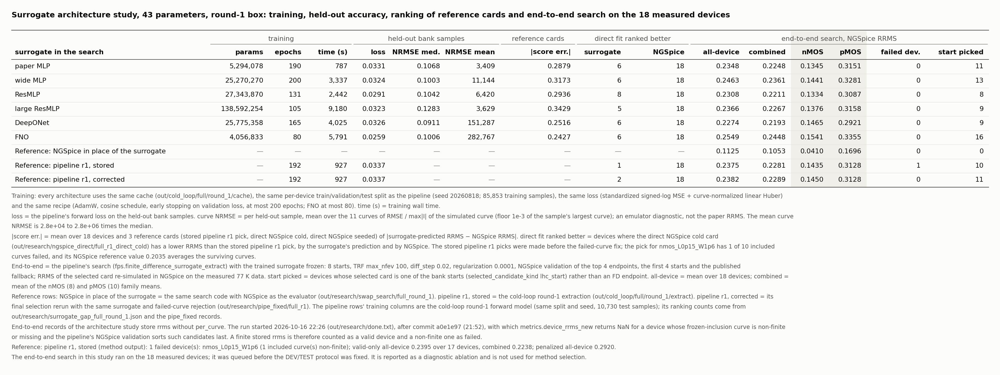
01_table_arch.png02_arch_loss_vs_e2e.png03_arch_per_device.png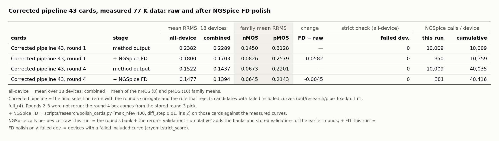
04_table_pipe_fixed_fd.pngTables from tables.md (2)
| surrogate in the search | trainable parameters | epochs | train time (s) | test loss | curve NRMSE, median | curve NRMSE, mean | mean absolute score error at the reference cards | devices where the direct fit ranks better: surrogate | devices where the direct fit ranks better: NGSpice | end-to-end all-device | end-to-end combined | end-to-end nMOS | end-to-end pMOS | failed devices (strict) | devices where a bank start is selected |
|---|---|---|---|---|---|---|---|---|---|---|---|---|---|---|---|
| paper MLP | 5,294,078 | 190 | 787 | 0.0331 | 0.1068 | 3,409 | 0.2879 | 6 | 18 | 0.2348 | 0.2248 | 0.1345 | 0.3151 | 0 | 11 |
| wide MLP | 25,270,270 | 200 | 3,337 | 0.0324 | 0.1003 | 11,144 | 0.3173 | 6 | 18 | 0.2463 | 0.2361 | 0.1441 | 0.3281 | 0 | 13 |
| ResMLP | 27,343,870 | 131 | 2,442 | 0.0291 | 0.1042 | 6,420 | 0.2936 | 8 | 18 | 0.2308 | 0.2211 | 0.1334 | 0.3087 | 0 | 8 |
| large ResMLP | 138,592,254 | 105 | 9,180 | 0.0323 | 0.1283 | 3,629 | 0.3429 | 5 | 18 | 0.2366 | 0.2267 | 0.1376 | 0.3158 | 0 | 9 |
| DeepONet | 25,775,358 | 165 | 4,025 | 0.0326 | 0.0911 | 151,287 | 0.2516 | 6 | 18 | 0.2274 | 0.2193 | 0.1465 | 0.2921 | 0 | 9 |
| FNO | 4,056,833 | 80 | 5,791 | 0.0259 | 0.1006 | 282,767 | 0.2427 | 6 | 18 | 0.2549 | 0.2448 | 0.1541 | 0.3355 | 0 | 16 |
| Reference: NGSpice in place of the surrogate | — | — | — | — | — | — | — | — | — | 0.1125 | 0.1053 | 0.0410 | 0.1696 | 0 | 0 |
| Reference: pipeline r1, stored | — | 192 | 927 | 0.0337 | — | — | — | 1 | 18 | 0.2375 | 0.2281 | 0.1435 | 0.3128 | 1 | 10 |
| Reference: pipeline r1, corrected | — | 192 | 927 | 0.0337 | — | — | — | 2 | 18 | 0.2382 | 0.2289 | 0.1450 | 0.3128 | 0 | 11 |
- Training: every architecture uses the same cache (out/cold_loop/full/round_1/cache), the same per-device train/validation/test split as the pipeline (seed 20260818; 85,853 training samples), the same loss (standardized signed-log MSE + curve-normalized linear Huber) and the same recipe (AdamW, cosine schedule, early stopping on validation loss, at most 200 epochs; FNO at most 80). time (s) = training wall time.
- loss = the pipeline's forward loss on the held-out bank samples. curve NRMSE = per held-out sample, mean over the 11 curves of RMSE / max|I| of the simulated curve (floor 1e-3 of the sample's largest curve); an emulator diagnostic, not the paper RRMS. The mean curve NRMSE is 2.8e+04 to 2.8e+06 times the median.
- |score err.| = mean over 18 devices and 3 reference cards (stored pipeline r1 pick, direct NGSpice cold, direct NGSpice seeded) of |surrogate-predicted RRMS − NGSpice RRMS|. direct fit ranked better = devices where the direct NGSpice cold card (out/research/ngspice_direct/full_r1_direct_cold) has a lower RRMS than the stored pipeline r1 pick, by the surrogate's prediction and by NGSpice. The stored pipeline r1 picks were made before the failed-curve fix; the pick for nmos_L0p15_W1p6 has 1 of 10 included curves failed, and its NGSpice reference value 0.2035 averages the surviving curves.
- End-to-end = the pipeline's search (fps.finite_difference_surrogate_extract) with the trained surrogate frozen: 8 starts, TRF max_nfev 100, diff_step 0.02, regularization 0.0001, NGSpice validation of the top 4 endpoints, the first 4 starts and the published fallback; RRMS of the selected card re-simulated in NGSpice on the measured 77 K data. start picked = devices whose selected card is one of the bank starts (selected_candidate_kind lhc_start) rather than an FD endpoint. all-device = mean over 18 devices; combined = mean of the nMOS (8) and pMOS (10) family means.
- Reference rows: NGSpice in place of the surrogate = the same search code with NGSpice as the evaluator (out/research/swap_search/full_round_1). pipeline r1, stored = the cold-loop round-1 extraction (out/cold_loop/full/round_1/extract). pipeline r1, corrected = its final selection rerun with the same surrogate and failed-curve rejection (out/research/pipe_fixed/full_r1). The pipeline rows' training columns are the cold-loop round-1 forward model (same split and seed, 10,730 test samples); its ranking counts come from out/research/surrogate_gap_full_round_1.json and the pipe_fixed records.
- End-to-end records of the architecture study store rrms without per_curve. The run started 2026-10-16 22:26 (out/research/done.txt), after commit a0e1e97 (21:52), with which metrics.device_rrms_new returns NaN for a device whose frozen-inclusion curve is non-finite or missing and the pipeline's NGSpice validation sorts such candidates last. A finite stored rrms is therefore counted as a valid device and a non-finite one as failed.
- Reference: pipeline r1, stored (method output): 1 failed device(s): nmos_L0p15_W1p6 (1 included curve(s) non-finite); valid-only all-device 0.2395 over 17 devices, combined 0.2238; penalized all-device 0.2920.
- The end-to-end search in this study ran on the 18 measured devices; it was queued before the DEV/TEST protocol was fixed. It is reported as a diagnostic ablation and is not used for method selection.
| cards | stage | all-device | combined | nMOS | pMOS | all-device, FD − raw | failed devices | NGSpice calls/device (this run) | NGSpice calls/device (cumulative) |
|---|---|---|---|---|---|---|---|---|---|
| Corrected pipeline 43, round 1 | method output | 0.2382 | 0.2289 | 0.1450 | 0.3128 | — | 0 | 10,009 | 10,009 |
| Corrected pipeline 43, round 1 | + NGSpice FD | 0.1800 | 0.1703 | 0.0826 | 0.2579 | -0.0582 | 0 | 350 | 10,359 |
| Corrected pipeline 43, round 4 | method output | 0.1522 | 0.1437 | 0.0673 | 0.2201 | — | 0 | 10,009 | 40,035 |
| Corrected pipeline 43, round 4 | + NGSpice FD | 0.1477 | 0.1394 | 0.0645 | 0.2143 | -0.0045 | 0 | 381 | 40,416 |
- all-device = mean over 18 devices; combined = mean of the nMOS (8) and pMOS (10) family means.
- Corrected pipeline = the final selection rerun with the round's surrogate and the rule that rejects candidates with failed included curves (out/research/pipe_fixed/full_r1, full_r4). Rounds 2–3 were not rerun; the round-4 box comes from the stored round-3 pick.
- + NGSpice FD = scripts/research/polish_cards.py (max_nfev 400, diff_step 0.01, irls 2) on those cards against the measured curves.
- NGSpice calls per device: raw 'this run' = the round's bank + the rerun's validation; 'cumulative' adds the banks and stored validations of the earlier rounds; + FD 'this run' = FD polish only. failed dev. = devices with a failed included curve (cryoml.strict_score).
2026-10-16 dev iteration1
- DEV, 36 simulated targets, pooled all-device mean RRMS at B500 / B5000: sketch_surrogate_k8 0.0313 / 0.0091; sketch_none_k8 0.0370 / 0.0021; hybrid_surrogate 0.0463 / 0.0114; hybrid_none 0.0579 / 0.0058; anytime_sur_presearch_race 0.0287 / 0.0070; anytime_none_race 0.0428 / 0.0082; cmaes_trf 0.0565 / 0.0109.
- Paired mean difference [95% CI] and win rate: sketch_surrogate_k8 − sketch_none_k8: B500 -0.0058 [-0.0126, 0.0003], win rate 0.67; B1000 0.0028 [-0.0027, 0.0085], win rate 0.53; B2000 0.0057 [1.4e-05, 0.0127], win rate 0.44; B5000 0.0069 [0.0024, 0.0133], win rate 0.25 | hybrid_surrogate − hybrid_none: B500 -0.0116 [-0.0230, -0.0024], win rate 0.64; B1000 -0.0003 [-0.0129, 0.0138], win rate 0.64; B2000 0.0025 [-0.0022, 0.0070], win rate 0.56; B5000 0.0056 [0.0018, 0.0112], win rate 0.28.
- Failed-curve audit: 16 of 227 audited runs have a device with a failed included curve; 14 of the 20 audited headline numbers come from runs with a failed device. Example: pipeline 43 round 4 raw all-device stored / valid-only / penalized 0.1513 / 0.1586 / 0.6500.
Sources out/research/report/2026-10-16_dev_iteration1/README.md out/research/report/2026-10-16_dev_iteration1/tables.md
01_compare_curves.png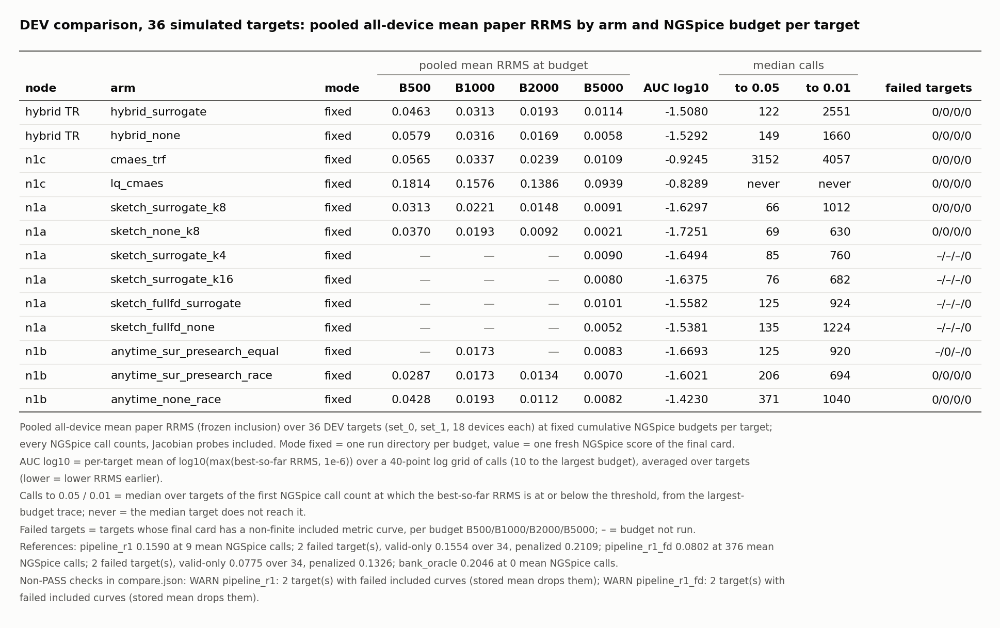
02_table_dev_primary.png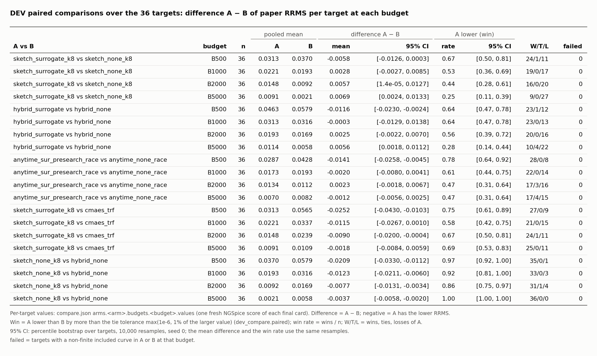
03_table_dev_paired.png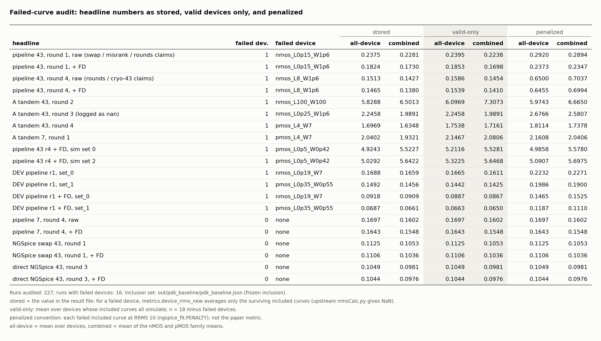
04_table_audit.pngTables from tables.md (3)
| node | arm | mode | B500 | B1000 | B2000 | B5000 | AUC log10 | median calls to 0.05 | median calls to 0.01 | failed targets (per budget) |
|---|---|---|---|---|---|---|---|---|---|---|
| hybrid TR | hybrid_surrogate | fixed | 0.0463 | 0.0313 | 0.0193 | 0.0114 | -1.5080 | 122 | 2551 | 0/0/0/0 |
| hybrid TR | hybrid_none | fixed | 0.0579 | 0.0316 | 0.0169 | 0.0058 | -1.5292 | 149 | 1660 | 0/0/0/0 |
| n1c | cmaes_trf | fixed | 0.0565 | 0.0337 | 0.0239 | 0.0109 | -0.9245 | 3152 | 4057 | 0/0/0/0 |
| n1c | lq_cmaes | fixed | 0.1814 | 0.1576 | 0.1386 | 0.0939 | -0.8289 | never | never | 0/0/0/0 |
| n1a | sketch_surrogate_k8 | fixed | 0.0313 | 0.0221 | 0.0148 | 0.0091 | -1.6297 | 66 | 1012 | 0/0/0/0 |
| n1a | sketch_none_k8 | fixed | 0.0370 | 0.0193 | 0.0092 | 0.0021 | -1.7251 | 69 | 630 | 0/0/0/0 |
| n1a | sketch_surrogate_k4 | fixed | — | — | — | 0.0090 | -1.6494 | 85 | 760 | –/–/–/0 |
| n1a | sketch_surrogate_k16 | fixed | — | — | — | 0.0080 | -1.6375 | 76 | 682 | –/–/–/0 |
| n1a | sketch_fullfd_surrogate | fixed | — | — | — | 0.0101 | -1.5582 | 125 | 924 | –/–/–/0 |
| n1a | sketch_fullfd_none | fixed | — | — | — | 0.0052 | -1.5381 | 135 | 1224 | –/–/–/0 |
| n1b | anytime_sur_presearch_equal | fixed | — | 0.0173 | — | 0.0083 | -1.6693 | 125 | 920 | –/0/–/0 |
| n1b | anytime_sur_presearch_race | fixed | 0.0287 | 0.0173 | 0.0134 | 0.0070 | -1.6021 | 206 | 694 | 0/0/0/0 |
| n1b | anytime_none_race | fixed | 0.0428 | 0.0193 | 0.0112 | 0.0082 | -1.4230 | 371 | 1040 | 0/0/0/0 |
- Pooled all-device mean paper RRMS (frozen inclusion) over 36 DEV targets (set_0, set_1, 18 devices each) at fixed cumulative NGSpice budgets per target; every NGSpice call counts, Jacobian probes included. Mode fixed = one run directory per budget, value = one fresh NGSpice score of the final card.
- AUC log10 = per-target mean of log10(max(best-so-far RRMS, 1e-6)) over a 40-point log grid of calls (10 to the largest budget), averaged over targets (lower = lower RRMS earlier).
- Calls to 0.05 / 0.01 = median over targets of the first NGSpice call count at which the best-so-far RRMS is at or below the threshold, from the largest-budget trace; never = the median target does not reach it.
- Failed targets = targets whose final card has a non-finite included metric curve, per budget B500/B1000/B2000/B5000; – = budget not run.
- References: pipeline_r1 0.1590 at 9 mean NGSpice calls; 2 failed target(s), valid-only 0.1554 over 34, penalized 0.2109; pipeline_r1_fd 0.0802 at 376 mean NGSpice calls; 2 failed target(s), valid-only 0.0775 over 34, penalized 0.1326; bank_oracle 0.2046 at 0 mean NGSpice calls.
- Non-PASS checks in compare.json: WARN pipeline_r1: 2 target(s) with failed included curves (stored mean drops them); WARN pipeline_r1_fd: 2 target(s) with failed included curves (stored mean drops them).
| A vs B | budget | n | mean A | mean B | mean difference A − B | 95% CI | win rate A | win rate 95% CI | W/T/L | failed targets (A, B) |
|---|---|---|---|---|---|---|---|---|---|---|
| sketch_surrogate_k8 vs sketch_none_k8 | B500 | 36 | 0.0313 | 0.0370 | -0.0058 | [-0.0126, 0.0003] | 0.67 | [0.50, 0.81] | 24/1/11 | 0 |
| sketch_surrogate_k8 vs sketch_none_k8 | B1000 | 36 | 0.0221 | 0.0193 | 0.0028 | [-0.0027, 0.0085] | 0.53 | [0.36, 0.69] | 19/0/17 | 0 |
| sketch_surrogate_k8 vs sketch_none_k8 | B2000 | 36 | 0.0148 | 0.0092 | 0.0057 | [1.4e-05, 0.0127] | 0.44 | [0.28, 0.61] | 16/0/20 | 0 |
| sketch_surrogate_k8 vs sketch_none_k8 | B5000 | 36 | 0.0091 | 0.0021 | 0.0069 | [0.0024, 0.0133] | 0.25 | [0.11, 0.39] | 9/0/27 | 0 |
| hybrid_surrogate vs hybrid_none | B500 | 36 | 0.0463 | 0.0579 | -0.0116 | [-0.0230, -0.0024] | 0.64 | [0.47, 0.78] | 23/1/12 | 0 |
| hybrid_surrogate vs hybrid_none | B1000 | 36 | 0.0313 | 0.0316 | -0.0003 | [-0.0129, 0.0138] | 0.64 | [0.47, 0.78] | 23/0/13 | 0 |
| hybrid_surrogate vs hybrid_none | B2000 | 36 | 0.0193 | 0.0169 | 0.0025 | [-0.0022, 0.0070] | 0.56 | [0.39, 0.72] | 20/0/16 | 0 |
| hybrid_surrogate vs hybrid_none | B5000 | 36 | 0.0114 | 0.0058 | 0.0056 | [0.0018, 0.0112] | 0.28 | [0.14, 0.44] | 10/4/22 | 0 |
| anytime_sur_presearch_race vs anytime_none_race | B500 | 36 | 0.0287 | 0.0428 | -0.0141 | [-0.0258, -0.0045] | 0.78 | [0.64, 0.92] | 28/0/8 | 0 |
| anytime_sur_presearch_race vs anytime_none_race | B1000 | 36 | 0.0173 | 0.0193 | -0.0020 | [-0.0080, 0.0041] | 0.61 | [0.44, 0.75] | 22/0/14 | 0 |
| anytime_sur_presearch_race vs anytime_none_race | B2000 | 36 | 0.0134 | 0.0112 | 0.0023 | [-0.0018, 0.0067] | 0.47 | [0.31, 0.64] | 17/3/16 | 0 |
| anytime_sur_presearch_race vs anytime_none_race | B5000 | 36 | 0.0070 | 0.0082 | -0.0012 | [-0.0056, 0.0025] | 0.47 | [0.31, 0.64] | 17/4/15 | 0 |
| sketch_surrogate_k8 vs cmaes_trf | B500 | 36 | 0.0313 | 0.0565 | -0.0252 | [-0.0430, -0.0103] | 0.75 | [0.61, 0.89] | 27/0/9 | 0 |
| sketch_surrogate_k8 vs cmaes_trf | B1000 | 36 | 0.0221 | 0.0337 | -0.0115 | [-0.0267, 0.0010] | 0.58 | [0.42, 0.75] | 21/0/15 | 0 |
| sketch_surrogate_k8 vs cmaes_trf | B2000 | 36 | 0.0148 | 0.0239 | -0.0090 | [-0.0200, -0.0004] | 0.67 | [0.50, 0.81] | 24/1/11 | 0 |
| sketch_surrogate_k8 vs cmaes_trf | B5000 | 36 | 0.0091 | 0.0109 | -0.0018 | [-0.0084, 0.0059] | 0.69 | [0.53, 0.83] | 25/0/11 | 0 |
| sketch_none_k8 vs hybrid_none | B500 | 36 | 0.0370 | 0.0579 | -0.0209 | [-0.0330, -0.0112] | 0.97 | [0.92, 1.00] | 35/0/1 | 0 |
| sketch_none_k8 vs hybrid_none | B1000 | 36 | 0.0193 | 0.0316 | -0.0123 | [-0.0211, -0.0060] | 0.92 | [0.81, 1.00] | 33/0/3 | 0 |
| sketch_none_k8 vs hybrid_none | B2000 | 36 | 0.0092 | 0.0169 | -0.0077 | [-0.0131, -0.0034] | 0.86 | [0.75, 0.97] | 31/1/4 | 0 |
| sketch_none_k8 vs hybrid_none | B5000 | 36 | 0.0021 | 0.0058 | -0.0037 | [-0.0058, -0.0020] | 1.00 | [1.00, 1.00] | 36/0/0 | 0 |
- Per-target values: compare.json arms.<arm>.budgets.<budget>.values (one fresh NGSpice score of each final card). Difference = A − B; negative = A has the lower RRMS.
- Win = A lower than B by more than the tie tolerance max(1e-6, 1% of the larger value) (dev_compare.paired); win rate = wins / n; W/T/L = wins, ties, losses of A.
- 95% CI: percentile bootstrap over targets, 10,000 resamples, seed 0; the mean difference and the win rate use the same resamples.
- failed = targets with a non-finite included curve in A or B at that budget.
| headline | failed devices | failed device(s) | stored all-device | stored combined | valid-only all-device | valid-only combined | penalized all-device | penalized combined |
|---|---|---|---|---|---|---|---|---|
| pipeline 43, round 1, raw (swap / misrank / rounds claims) | 1 | nmos_L0p15_W1p6 | 0.2375 | 0.2281 | 0.2395 | 0.2238 | 0.2920 | 0.2894 |
| pipeline 43, round 1, + FD | 1 | nmos_L0p15_W1p6 | 0.1824 | 0.1730 | 0.1853 | 0.1698 | 0.2373 | 0.2347 |
| pipeline 43, round 4, raw (rounds / cryo-43 claims) | 1 | nmos_L8_W1p6 | 0.1513 | 0.1427 | 0.1586 | 0.1454 | 0.6500 | 0.7037 |
| pipeline 43, round 4, + FD | 1 | nmos_L8_W1p6 | 0.1465 | 0.1380 | 0.1539 | 0.1410 | 0.6455 | 0.6994 |
| A tandem 43, round 2 | 1 | nmos_L100_W100 | 5.8288 | 6.5013 | 6.0969 | 7.3073 | 5.9743 | 6.6650 |
| A tandem 43, round 3 (logged as nan) | 1 | nmos_L0p25_W1p6 | 2.2458 | 1.9891 | 2.2458 | 1.9891 | 2.6766 | 2.5807 |
| A tandem 43, round 4 | 1 | pmos_L4_W7 | 1.6969 | 1.6348 | 1.7538 | 1.7161 | 1.8114 | 1.7378 |
| A tandem 7, round 1 | 1 | pmos_L4_W7 | 2.0402 | 1.9321 | 2.1467 | 2.0806 | 2.1608 | 2.0406 |
| pipeline 43 r4 + FD, sim set 0 | 1 | pmos_L0p5_W0p42 | 4.9243 | 5.5227 | 5.2116 | 5.5281 | 4.9858 | 5.5780 |
| pipeline 43 r4 + FD, sim set 2 | 1 | pmos_L0p5_W0p42 | 5.0292 | 5.6422 | 5.3225 | 5.6468 | 5.0907 | 5.6975 |
| DEV pipeline r1, set_0 | 1 | nmos_L0p19_W7 | 0.1688 | 0.1659 | 0.1665 | 0.1611 | 0.2232 | 0.2271 |
| DEV pipeline r1, set_1 | 1 | pmos_L0p35_W0p55 | 0.1492 | 0.1456 | 0.1442 | 0.1425 | 0.1986 | 0.1900 |
| DEV pipeline r1 + FD, set_0 | 1 | nmos_L0p19_W7 | 0.0918 | 0.0909 | 0.0887 | 0.0867 | 0.1465 | 0.1525 |
| DEV pipeline r1 + FD, set_1 | 1 | pmos_L0p35_W0p55 | 0.0687 | 0.0661 | 0.0663 | 0.0650 | 0.1187 | 0.1110 |
| pipeline 7, round 4, raw | 0 | none | 0.1697 | 0.1602 | 0.1697 | 0.1602 | 0.1697 | 0.1602 |
| pipeline 7, round 4, + FD | 0 | none | 0.1643 | 0.1548 | 0.1643 | 0.1548 | 0.1643 | 0.1548 |
| NGSpice swap 43, round 1 | 0 | none | 0.1125 | 0.1053 | 0.1125 | 0.1053 | 0.1125 | 0.1053 |
| NGSpice swap 43, round 1, + FD | 0 | none | 0.1106 | 0.1036 | 0.1106 | 0.1036 | 0.1106 | 0.1036 |
| direct NGSpice 43, round 3 | 0 | none | 0.1049 | 0.0981 | 0.1049 | 0.0981 | 0.1049 | 0.0981 |
| direct NGSpice 43, round 3, + FD | 0 | none | 0.1044 | 0.0976 | 0.1044 | 0.0976 | 0.1044 | 0.0976 |
- Runs audited: 227; runs with failed devices: 16. Inclusion set: out/pdk_baseline/pdk_baseline.json (frozen inclusion).
- stored = the value in the result file: for a failed device, metrics.device_rrms_new averages only the surviving included curves (upstream rrmsCalc.py gives NaN).
- valid-only: mean over devices whose included curves all simulate; n = 18 minus failed devices.
- penalized convention: each failed included curve at RRMS 10 (ngspice_fit.PENALTY); not the paper metric.
- all-device = mean over devices; combined = mean of the nMOS and pMOS family means.
2026-10-16 baseline results
- Measured 77 K data, all-device RRMS (raw / +FD): Pipeline 43, round 4 0.1513 / 0.1465 (1 failed device(s) raw; 1 failed device(s) +FD); NGSpice swap 43, round 1 0.1125 / 0.1106; Direct NGSpice 43, round 3 0.1049 / 0.1044. References: released 0.2751, paper 7 0.2284, paper 43 0.2038.
- All-device RRMS by round (raw): Pipeline 7 r1-r4 0.2367 -> 0.1921 -> 0.1758 -> 0.1697; Pipeline 43 r1-r4 0.2375 -> 0.1965 -> 0.1716 -> 0.1513; Direct NGSpice 43 r1-r3 0.1201 -> 0.1094 -> 0.1049.
- Round-1 43-parameter surrogate, mean predicted / NGSpice RRMS: pipeline picks 0.2034 / 0.2375, direct-fit cards 0.5074 / 0.1269; opposite ordering on 17 of 18 devices.
- Temperature benchmark, held-out all-device RRMS (raw / +FD): direct 0.0362 / 0.0117; ngspice_search 0.0021 / 0.0004; surrogate_paper_mlp 0.0081 / 0.0007; surrogate_deeponet 0.0120 / 0.0022.
Sources out/research/report/2026-10-16_baseline_results/README.md out/research/report/2026-10-16_baseline_results/tables.md
01_real_methods.png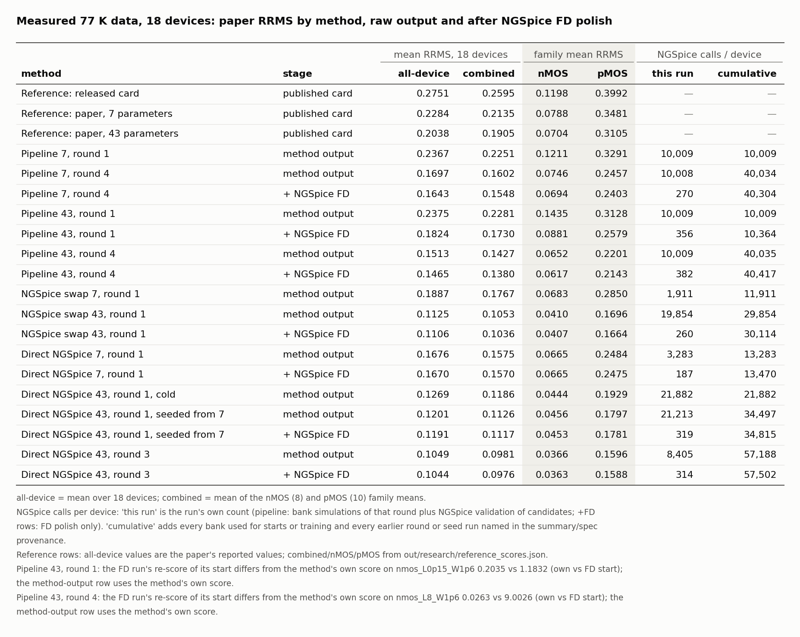
02_table_real_methods.png03_rounds.png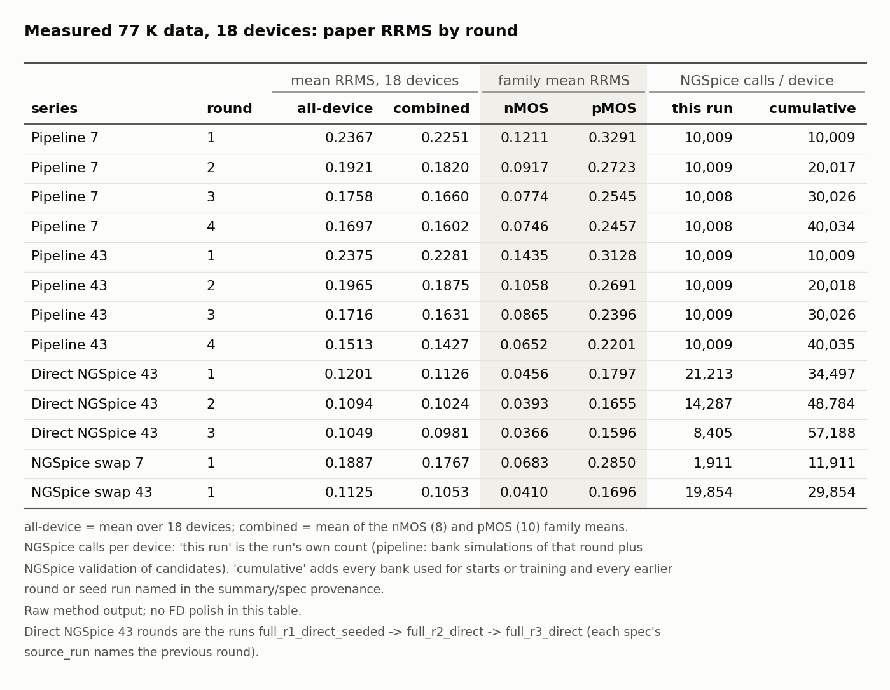
04_table_rounds.png05_surrogate_gap.png06_per_device.png07_temperature.png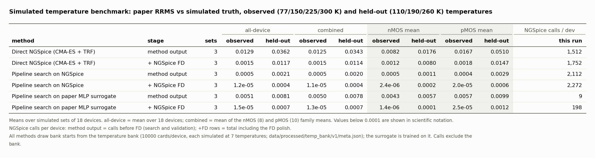
08_table_temperature.png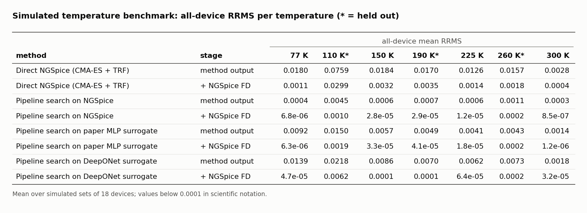
09_table_temperature_per_temp.pngTables from tables.md (4)
| method | stage | all-device | combined | nMOS | pMOS | NGSpice calls/device (this run) | NGSpice calls/device (cumulative) | failed devices | all-device, valid devices only | all-device, penalized |
|---|---|---|---|---|---|---|---|---|---|---|
| Reference: released card | published card | 0.2751 | 0.2595 | 0.1198 | 0.3992 | — | — | 0 | 0.2751 | 0.2751 |
| Reference: paper, 7 parameters | published card | 0.2284 | 0.2135 | 0.0788 | 0.3481 | — | — | 0 | 0.2284 | 0.2284 |
| Reference: paper, 43 parameters | published card | 0.2038 | 0.1905 | 0.0704 | 0.3105 | — | — | 0 | 0.2038 | 0.2038 |
| Pipeline 7, round 1 | method output | 0.2367 | 0.2251 | 0.1211 | 0.3291 | 10,009 | 10,009 | 0 | 0.2367 | 0.2367 |
| Pipeline 7, round 4 | method output | 0.1697 | 0.1602 | 0.0746 | 0.2457 | 10,008 | 40,034 | 0 | 0.1697 | 0.1697 |
| Pipeline 7, round 4 | + NGSpice FD | 0.1643 | 0.1548 | 0.0694 | 0.2403 | 270 | 40,304 | 0 | 0.1643 | 0.1643 |
| Pipeline 43, round 1 | method output | 0.2375 | 0.2281 | 0.1435 | 0.3128 | 10,009 | 10,009 | 1 | 0.2395 | 0.2920 |
| Pipeline 43, round 1 | + NGSpice FD | 0.1824 | 0.1730 | 0.0881 | 0.2579 | 356 | 10,364 | 1 | 0.1853 | 0.2373 |
| Pipeline 43, round 4 | method output | 0.1513 | 0.1427 | 0.0652 | 0.2201 | 10,009 | 40,035 | 1 | 0.1586 | 0.6500 |
| Pipeline 43, round 4 | + NGSpice FD | 0.1465 | 0.1380 | 0.0617 | 0.2143 | 382 | 40,417 | 1 | 0.1539 | 0.6455 |
| NGSpice swap 7, round 1 | method output | 0.1887 | 0.1767 | 0.0683 | 0.2850 | 1,911 | 11,911 | 0 | 0.1887 | 0.1887 |
| NGSpice swap 43, round 1 | method output | 0.1125 | 0.1053 | 0.0410 | 0.1696 | 19,854 | 29,854 | 0 | 0.1125 | 0.1125 |
| NGSpice swap 43, round 1 | + NGSpice FD | 0.1106 | 0.1036 | 0.0407 | 0.1664 | 260 | 30,114 | 0 | 0.1106 | 0.1106 |
| Direct NGSpice 7, round 1 | method output | 0.1676 | 0.1575 | 0.0665 | 0.2484 | 3,283 | 13,283 | 0 | 0.1676 | 0.1676 |
| Direct NGSpice 7, round 1 | + NGSpice FD | 0.1670 | 0.1570 | 0.0665 | 0.2475 | 187 | 13,470 | 0 | 0.1670 | 0.1670 |
| Direct NGSpice 43, round 1, cold | method output | 0.1269 | 0.1186 | 0.0444 | 0.1929 | 21,882 | 21,882 | 0 | 0.1269 | 0.1269 |
| Direct NGSpice 43, round 1, seeded from 7 | method output | 0.1201 | 0.1126 | 0.0456 | 0.1797 | 21,213 | 34,497 | 0 | 0.1201 | 0.1201 |
| Direct NGSpice 43, round 1, seeded from 7 | + NGSpice FD | 0.1191 | 0.1117 | 0.0453 | 0.1781 | 319 | 34,815 | 0 | 0.1191 | 0.1191 |
| Direct NGSpice 43, round 3 | method output | 0.1049 | 0.0981 | 0.0366 | 0.1596 | 8,405 | 57,188 | 0 | 0.1049 | 0.1049 |
| Direct NGSpice 43, round 3 | + NGSpice FD | 0.1044 | 0.0976 | 0.0363 | 0.1588 | 314 | 57,502 | 0 | 0.1044 | 0.1044 |
- all-device = mean over 18 devices; combined = mean of the nMOS (8) and pMOS (10) family means.
- NGSpice calls per device: 'this run' is the run's own count (pipeline: bank simulations of that round plus NGSpice validation of candidates; +FD rows: FD polish only). 'cumulative' adds every bank used for starts or training and every earlier round or seed run named in the summary/spec provenance.
- Reference rows: all-device values are the paper's reported values; combined/nMOS/pMOS from out/research/reference_scores.json.
- failed dev. = devices with an included (frozen-inclusion) metric curve that failed to simulate; their stored RRMS averages only the surviving curves, so it is not a valid paper RRMS (upstream rrmsCalc.py gives NaN). The all-device/combined/family columns are the stored values; valid-only = all-device mean over the valid devices; penalized = every device, failed curves at RRMS 10 (ngspice_fit.PENALTY; penalized convention, not the paper metric). Source: cryoml.strict_score.
- Pipeline 43, round 1 (method output): 1 failed device(s): nmos_L0p15_W1p6 (1 included curve(s) non-finite); valid-only all-device 0.2395 over 17 devices, combined 0.2238; penalized all-device 0.2920.
- Pipeline 43, round 1 (+ NGSpice FD): 1 failed device(s): nmos_L0p15_W1p6 (1 included curve(s) non-finite); valid-only all-device 0.1853 over 17 devices, combined 0.1698; penalized all-device 0.2373.
- Pipeline 43, round 4 (method output): 1 failed device(s): nmos_L8_W1p6 (9 included curve(s) non-finite); valid-only all-device 0.1586 over 17 devices, combined 0.1454; penalized all-device 0.6500.
- Pipeline 43, round 4 (+ NGSpice FD): 1 failed device(s): nmos_L8_W1p6 (9 included curve(s) non-finite); valid-only all-device 0.1539 over 17 devices, combined 0.1410; penalized all-device 0.6455.
- Pipeline 43, round 1: the FD run's re-score of its start differs from the method's own score on nmos_L0p15_W1p6 0.2035 vs 1.1832 (own vs FD start); the method-output row uses the method's own score. A large FD-start value is the penalized start objective of a card with failed included curves (see failed dev.).
- Pipeline 43, round 4: the FD run's re-score of its start differs from the method's own score on nmos_L8_W1p6 0.0263 vs 9.0026 (own vs FD start); the method-output row uses the method's own score. A large FD-start value is the penalized start objective of a card with failed included curves (see failed dev.).
| series | round | all-device | combined | nMOS | pMOS | NGSpice calls/device (this run) | NGSpice calls/device (cumulative) | failed devices | all-device, valid devices only | all-device, penalized |
|---|---|---|---|---|---|---|---|---|---|---|
| Pipeline 7 | 1 | 0.2367 | 0.2251 | 0.1211 | 0.3291 | 10,009 | 10,009 | 0 | 0.2367 | 0.2367 |
| Pipeline 7 | 2 | 0.1921 | 0.1820 | 0.0917 | 0.2723 | 10,009 | 20,017 | 0 | 0.1921 | 0.1921 |
| Pipeline 7 | 3 | 0.1758 | 0.1660 | 0.0774 | 0.2545 | 10,008 | 30,026 | 0 | 0.1758 | 0.1758 |
| Pipeline 7 | 4 | 0.1697 | 0.1602 | 0.0746 | 0.2457 | 10,008 | 40,034 | 0 | 0.1697 | 0.1697 |
| Pipeline 43 | 1 | 0.2375 | 0.2281 | 0.1435 | 0.3128 | 10,009 | 10,009 | 1 | 0.2395 | 0.2920 |
| Pipeline 43 | 2 | 0.1965 | 0.1875 | 0.1058 | 0.2691 | 10,009 | 20,018 | 0 | 0.1965 | 0.1965 |
| Pipeline 43 | 3 | 0.1716 | 0.1631 | 0.0865 | 0.2396 | 10,009 | 30,026 | 0 | 0.1716 | 0.1716 |
| Pipeline 43 | 4 | 0.1513 | 0.1427 | 0.0652 | 0.2201 | 10,009 | 40,035 | 1 | 0.1586 | 0.6500 |
| Direct NGSpice 43 | 1 | 0.1201 | 0.1126 | 0.0456 | 0.1797 | 21,213 | 34,497 | 0 | 0.1201 | 0.1201 |
| Direct NGSpice 43 | 2 | 0.1094 | 0.1024 | 0.0393 | 0.1655 | 14,287 | 48,784 | 0 | 0.1094 | 0.1094 |
| Direct NGSpice 43 | 3 | 0.1049 | 0.0981 | 0.0366 | 0.1596 | 8,405 | 57,188 | 0 | 0.1049 | 0.1049 |
| NGSpice swap 7 | 1 | 0.1887 | 0.1767 | 0.0683 | 0.2850 | 1,911 | 11,911 | 0 | 0.1887 | 0.1887 |
| NGSpice swap 43 | 1 | 0.1125 | 0.1053 | 0.0410 | 0.1696 | 19,854 | 29,854 | 0 | 0.1125 | 0.1125 |
- all-device = mean over 18 devices; combined = mean of the nMOS (8) and pMOS (10) family means.
- NGSpice calls per device: 'this run' is the run's own count (pipeline: bank simulations of that round plus NGSpice validation of candidates). 'cumulative' adds every bank used for starts or training and every earlier round or seed run named in the summary/spec provenance.
- Raw method output; no FD polish in this table.
- failed dev. = devices with an included (frozen-inclusion) metric curve that failed to simulate; their stored RRMS averages only the surviving curves, so it is not a valid paper RRMS (upstream rrmsCalc.py gives NaN). The all-device/combined/family columns are the stored values; valid-only = all-device mean over the valid devices; penalized = every device, failed curves at RRMS 10 (ngspice_fit.PENALTY; penalized convention, not the paper metric). Source: cryoml.strict_score.
- Pipeline 43 round 1: 1 failed device(s): nmos_L0p15_W1p6 (1 included curve(s) non-finite); valid-only all-device 0.2395 over 17 devices, combined 0.2238; penalized all-device 0.2920.
- Pipeline 43 round 4: 1 failed device(s): nmos_L8_W1p6 (9 included curve(s) non-finite); valid-only all-device 0.1586 over 17 devices, combined 0.1454; penalized all-device 0.6500.
- Direct NGSpice 43 rounds are the runs full_r1_direct_seeded -> full_r2_direct -> full_r3_direct (each spec's source_run names the previous round).
| method | stage | sets | all-device observed | all-device held-out | combined observed | combined held-out | nMOS observed | nMOS held-out | pMOS observed | pMOS held-out | NGSpice calls/device (this run) |
|---|---|---|---|---|---|---|---|---|---|---|---|
| Direct NGSpice (CMA-ES + TRF) | method output | 3 | 0.0129 | 0.0362 | 0.0125 | 0.0343 | 0.0082 | 0.0176 | 0.0167 | 0.0510 | 1,512 |
| Direct NGSpice (CMA-ES + TRF) | + NGSpice FD | 3 | 0.0015 | 0.0117 | 0.0015 | 0.0114 | 0.0012 | 0.0080 | 0.0018 | 0.0147 | 1,752 |
| Pipeline search on NGSpice | method output | 3 | 0.0005 | 0.0021 | 0.0005 | 0.0020 | 0.0005 | 0.0011 | 0.0004 | 0.0029 | 2,112 |
| Pipeline search on NGSpice | + NGSpice FD | 3 | 1.2e-05 | 0.0004 | 1.1e-05 | 0.0004 | 2.4e-06 | 0.0002 | 2.0e-05 | 0.0006 | 2,272 |
| Pipeline search on paper MLP surrogate | method output | 3 | 0.0051 | 0.0081 | 0.0050 | 0.0078 | 0.0043 | 0.0057 | 0.0057 | 0.0099 | 9 |
| Pipeline search on paper MLP surrogate | + NGSpice FD | 3 | 1.5e-05 | 0.0007 | 1.3e-05 | 0.0007 | 1.4e-06 | 0.0001 | 2.5e-05 | 0.0012 | 198 |
| Pipeline search on DeepONet surrogate | method output | 3 | 0.0076 | 0.0120 | 0.0074 | 0.0117 | 0.0059 | 0.0083 | 0.0090 | 0.0150 | 9 |
| Pipeline search on DeepONet surrogate | + NGSpice FD | 3 | 6.8e-05 | 0.0022 | 7.0e-05 | 0.0021 | 8.8e-05 | 0.0015 | 5.3e-05 | 0.0027 | 208 |
- Means over simulated sets of 18 devices. all-device = mean over 18 devices; combined = mean of the nMOS (8) and pMOS (10) family means. Values below 0.0001 are shown in scientific notation.
- Failed curves: temp_fit scores a non-finite included curve at RRMS 10 (penalized convention), so no curve is silently dropped here; 0 device-temperature value(s) reach the penalty floor 10 / n_curves.
- NGSpice calls per device: method output = calls before FD (search and validation); +FD rows = total including the FD polish.
- All methods draw bank starts from the temperature bank (10000 cards/device, each simulated at 7 temperatures; data/processed/temp_bank/v1/meta.json); the surrogate is trained on it. Calls exclude the bank.
| method | stage | 77 K | 110 K* | 150 K | 190 K* | 225 K | 260 K* | 300 K |
|---|---|---|---|---|---|---|---|---|
| Direct NGSpice (CMA-ES + TRF) | method output | 0.0180 | 0.0759 | 0.0184 | 0.0170 | 0.0126 | 0.0157 | 0.0028 |
| Direct NGSpice (CMA-ES + TRF) | + NGSpice FD | 0.0011 | 0.0299 | 0.0032 | 0.0035 | 0.0014 | 0.0018 | 0.0004 |
| Pipeline search on NGSpice | method output | 0.0004 | 0.0045 | 0.0006 | 0.0007 | 0.0006 | 0.0011 | 0.0003 |
| Pipeline search on NGSpice | + NGSpice FD | 6.8e-06 | 0.0010 | 2.8e-05 | 2.9e-05 | 1.2e-05 | 0.0002 | 8.5e-07 |
| Pipeline search on paper MLP surrogate | method output | 0.0092 | 0.0150 | 0.0057 | 0.0049 | 0.0041 | 0.0043 | 0.0014 |
| Pipeline search on paper MLP surrogate | + NGSpice FD | 6.3e-06 | 0.0019 | 3.3e-05 | 4.1e-05 | 1.8e-05 | 0.0002 | 1.2e-06 |
| Pipeline search on DeepONet surrogate | method output | 0.0139 | 0.0218 | 0.0086 | 0.0070 | 0.0062 | 0.0073 | 0.0018 |
| Pipeline search on DeepONet surrogate | + NGSpice FD | 4.7e-05 | 0.0062 | 0.0001 | 0.0001 | 6.4e-05 | 0.0002 | 3.2e-05 |
- Mean over simulated sets of 18 devices; values below 0.0001 in scientific notation.
Open questions
Open
No decisions pending.
Decided
decided Which toolchain runs the IHP SG13G2 PSP 103.6 model?
The prebuilt macOS OpenVAF-Reloaded build compiles the OSDI model; it runs on Homebrew ngspice-46, isolated from the ngspice-41 configuration.
Source src/cryoml/pdk2/__init__.py
decided Cap u0 below the BSIM4 u0 > 1 unit switch?
No. The u0 range of the cold boxes stays unchanged.
BSIM4 divides u0 by 1e4 when u0 > 1; the cold round-1 box (u0 ×100) crosses that value for about 14% of nMOS samples. The trust-region arms use a 1e-3 Jacobian step and a cliff guard.
Sources docs/RESEARCH_LOOP.md scripts/research/hybrid_tr.py